Functional analysis
Functional analysis studies vector spaces of functions and sequences together with a notion of size, and the linear maps between them. It is the language of quantum mechanics, of partial differential equations and of the renormalisation of field theories, and it supplies the Fredholm index that counts the zero modes of the Dirac operator in the reductions of the later parts. This chapter develops the subject from normed spaces to operator algebras, on explicit examples. Normed and Banach spaces defines norms and completeness, with the sequence spaces \ell^p, the function spaces L^p and C(K), bounded linear maps and dual spaces. The four principles proves the Hahn-Banach, uniform-boundedness, open-mapping and closed-graph theorems and shows by counterexamples why each hypothesis is needed. Weak topologies and reflexivity treats weak and weak-* convergence and the Banach-Alaoglu theorem. Inner product and Hilbert spaces, Bounded operators and Spectral theory specialise to the inner-product case, where geometry and the spectral theorem are available. Compact and Fredholm operators proves the Fredholm alternative and defines the index. Unbounded operators and the Laplacian, Sobolev spaces and Traces, determinants and heat kernels treat the differential operators of physics and their spectra. Banach and C*-algebras ends with the spectrum of an element of an algebra and the continuous functional calculus. Every statement is followed by at least three examples of increasing complexity and at least three exercises of increasing difficulty with hidden solutions. The sequence spaces, the Pauli matrices, the exponentials e^{inx} on the circle, the spherical harmonics and the Gaussian are the running examples.
Normed and Banach spaces
A norm measures the size of a vector and turns a vector space into a metric space in which limits, series and continuity make sense. This part defines norms and complete normed spaces, introduces the three families of spaces that the rest of the chapter works in, the sequence spaces \ell^p, the function spaces L^p and the continuous functions C(K), and then studies the linear maps between normed spaces and the dual space of continuous linear functionals. The line of argument follows the lecture notes of Arcozzi (2025, Ch. 1 and 3), with the Hilbert-space special cases of Rainer Picard and Waurick (2020, App. B) as examples.
For more on this topic, see Cheung (2024, sec. 4.2).
Norms and normed spaces
On \mathbb{R}^n the Euclidean length is one way among many to measure a vector: the largest coordinate or the sum of the absolute values of the coordinates serve as well. The figure draws the unit balls of several such measures in the plane, and the definition below names the three properties that all of them share.
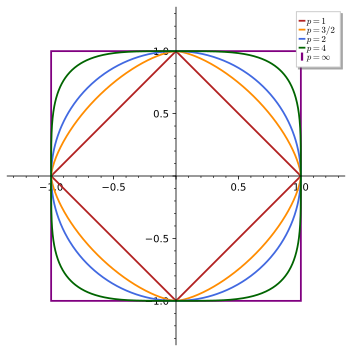
figures/fa2-unit-balls.sage.
Definition 1 (Norm) A norm on a real or complex vector space X (Definition 1 of Linear algebra) is a map \|\cdot\| : X \to [0, \infty) that is definite, \|x\| = 0 only for x = 0, homogeneous, \|\lambda x\| = |\lambda|\,\|x\| for scalars \lambda, and satisfies the triangle inequality \|x + y\| \leq \|x\| + \|y\|. The pair (X, \|\cdot\|) is a normed space; it is a metric space with the distance d(x, y) = \|x - y\|, so that a sequence converges to x when \|x_n - x\| \to 0. Two norms \|\cdot\|_a, \|\cdot\|_b on X are equivalent if c\|x\|_a \leq \|x\|_b \leq C\|x\|_a for constants 0 < c \leq C and all x; equivalent norms have the same convergent sequences.
Veriphy. Pending.
Lean. Pending.
Sage. Pending.
The first examples live in \mathbb{R}^n, where every coordinate gives a way of measuring. The three norms below are the ones drawn in the figure for n = 2, and the example compares them with explicit constants.
Example 1 (Three norms on \mathbb{R}^n) \|x\|_1 = \sum_k|x_k|, \|x\|_2 = (\sum_k|x_k|^2)^{1/2} and \|x\|_\infty = \max_k|x_k| are norms on \mathbb{R}^n and \mathbb{C}^n. For x = (3, -4) they give 7, 5 and 4. They are equivalent: \|x\|_\infty \leq \|x\|_2 \leq \|x\|_1 \leq n\|x\|_\infty, and the constants are attained, the first two by x = (1, 0, \dots, 0) and the last by x = (1, 1, \dots, 1).
Veriphy. Pending.
Lean. Pending.
Sage. Pending.
On a space of functions the same three ideas give the supremum norm and the integral norms. The second example shows that on the continuous functions they are no longer equivalent, because a function can be large on a small set.
Example 2 (Supremum and integral norms) On the continuous functions on [0, 1], \|f\|_\infty = \max_x|f(x)| and \|f\|_1 = \int_0^1|f(x)|\,dx are norms Arcozzi (2025, sec. 1.1.1). For f_n(x) = x^n one finds \|f_n\|_\infty = 1 and \|f_n\|_1 = 1/(n + 1) \to 0, so f_n \to 0 in \|\cdot\|_1 but not in \|\cdot\|_\infty, and no inequality \|f\|_\infty \leq C\|f\|_1 can hold. The inequality \|f\|_1 \leq \|f\|_\infty does hold, so the supremum norm is the stronger of the two.
Veriphy. Pending.
Lean. Pending.
Sage. Pending.
Inner products are the source of the most important norms, and the parallelogram law tells which norms come from one. The third example states the criterion and applies it to the norms of the figure.
Example 3 (Norms from inner products) An inner product (Definition 12) gives the norm \|u\| = \langle u, u\rangle^{1/2}; the triangle inequality follows from Cauchy-Schwarz, which Rainer Picard and Waurick (2020, Lemma B.1.5) derives from the non-negativity of the Gram determinant \langle u, u\rangle\langle v, v\rangle - |\langle u, v\rangle|^2. Such a norm satisfies the parallelogram law \|u + v\|^2 + \|u - v\|^2 = 2\|u\|^2 + 2\|v\|^2, and conversely a norm satisfying it comes from an inner product Rainer Picard and Waurick (2020, Lemma B.1.7 and the remark after it). For u = (1, 0), v = (0, 1) the law reads 2\cdot 2^{2/p} = 4 in \|\cdot\|_p, true only for p = 2.
Veriphy. Pending.
Lean. Pending.
Sage. Pending.
The checks that a proposed norm is one are short, but the triangle inequality is the delicate part, as the first exercise shows by an example where it fails. The exercise also shows why the exponents p < 1 are excluded from the family drawn in the figure.
Exercise 1 (When the triangle inequality fails) Show that \|\cdot\|_1 and \|\cdot\|_\infty are norms on \mathbb{C}^n. Then show that N(x) = (\sqrt{|x_1|} + \sqrt{|x_2|})^2 on \mathbb{R}^2 is definite and homogeneous but violates the triangle inequality, by evaluating it on (1, 0), (0, 1) and their sum.
Definiteness and homogeneity are clear, and |x_k + y_k| \leq |x_k| + |y_k| summed (or maximised) over k gives the triangle inequality for \|\cdot\|_1 (or \|\cdot\|_\infty). For N: N(\lambda x) = (\sqrt{|\lambda|} (\sqrt{|x_1|} + \sqrt{|x_2|}))^2 = |\lambda|N(x), and N(x) = 0 forces x = 0. But N(1, 0) = N(0, 1) = 1 while N(1, 1) = 4 > 2. The unit “ball” \{N \leq 1\} is the region inside the astroid-like curve \sqrt{|x_1|} + \sqrt{|x_2|} = 1, which is not convex; a norm always has a convex unit ball.
A check of the three norms with Sage, including the triangle inequality of the two genuine norms on random complex vectors:
N = lambda x: (sqrt(abs(x[0])) + sqrt(abs(x[1])))^2
print("N(1,0) =", N((1, 0)), " N(0,1) =", N((0, 1)), " N(1,1) =", N((1, 1)), " > N(1,0) + N(0,1):", N((1, 1)) > 2)
print("homogeneity N(-3 x) = 3 N(x) at x = (2, 5):", bool(N((-6, -15)) == 3 * N((2, 5))))
set_random_seed(1)
vs = [vector(CC, [CC.random_element() for _ in range(4)]) for _ in range(200)]
print("triangle inequality for the 1-norm and the sup-norm on 100 random pairs in C^4:",
all(((u + v).norm(1) <= u.norm(1) + v.norm(1) + 1e-12) and ((u + v).norm(Infinity) <= u.norm(Infinity) + v.norm(Infinity) + 1e-12) for u, v in zip(vs[::2], vs[1::2])))
print("midpoint of (1,0) and (0,1) has N =", N((1 / 2, 1 / 2)), "> 1: the set N <= 1 is not convex")Output:
N(1,0) = 1 N(0,1) = 1 N(1,1) = 4 > N(1,0) + N(0,1): True
homogeneity N(-3 x) = 3 N(x) at x = (2, 5): True
triangle inequality for the 1-norm and the sup-norm on 100 random pairs in C^4: True
midpoint of (1,0) and (0,1) has N = 2 > 1: the set N <= 1 is not convexVeriphy. Pending.
Lean. Pending.
Sage. Pending.
The parallelogram law is a computable test, and the second exercise applies it numerically to the whole family \|\cdot\|_p on \mathbb{R}^2. Its result is that the Euclidean norm is the only member of the family with an inner product behind it.
Exercise 2 (The parallelogram law for \|\cdot\|_p) Compute D(p) = \|u + v\|_p^2 + \|u - v\|_p^2 - 2\|u\|_p^2 - 2\|v\|_p^2 for u = (1, 0), v = (0, 1) and for u = (1, 1), v = (1, -1), as a function of p \geq 1, and find where it vanishes. What is D for \|\cdot\|_\infty?
For the first pair D(p) = 2\cdot 4^{1/p} - 4, which vanishes only at p = 2 and is positive for p < 2; for the second pair the roles are exchanged, D(p) = 8 - 4\cdot 4^{1/p}, negative for p < 2. For \|\cdot\|_\infty the first pair gives D = -2. So no \|\cdot\|_p with p \neq 2 satisfies the law, and by the converse of Example 3 none of them comes from an inner product.
Sage computes D(p) symbolically for both pairs and finds the zeros:
p = var('p'); assume(p >= 1)
nrm = lambda x, p: (sum(abs(t)^p for t in x))^(1 / p)
def D(u, v):
w1 = [a + b for a, b in zip(u, v)]; w2 = [a - b for a, b in zip(u, v)]
return (nrm(w1, p)^2 + nrm(w2, p)^2 - 2 * nrm(u, p)^2 - 2 * nrm(v, p)^2).simplify_full()
D1 = D((1, 0), (0, 1)); D2 = D((1, 1), (1, -1))
print("u = (1,0), v = (0,1): D(p) =", D1, " zero at", solve(D1 == 0, p))
print("u = (1,1), v = (1,-1): D(p) =", D2, " zero at", solve(D2 == 0, p))
print("D at p = 1, 2, 3, 10:", [(D1.subs(p=q), D2.subs(p=q)) for q in (1, 2, 3, 10)])
sup = lambda x: max(abs(t) for t in x)
print("sup norm, first pair:", sup((1, 1))^2 + sup((1, -1))^2 - 2 * sup((1, 0))^2 - 2 * sup((0, 1))^2)Output:
u = (1,0), v = (0,1): D(p) = 2^(2/p + 1) - 4 zero at [
p == 2
]
u = (1,1), v = (1,-1): D(p) = -2^(2/p + 2) + 8 zero at [
p == 2
]
D at p = 1, 2, 3, 10: [(4, -8), (0, 0), (2*2^(2/3) - 4, -4*2^(2/3) + 8), (2*2^(1/5) - 4, -4*2^(1/5) + 8)]
sup norm, first pair: -2Veriphy. Pending.
Lean. Pending.
Sage. Pending.
A norm gives a translation-invariant, homogeneous distance, and the third exercise shows the converse, following an exercise of Arcozzi (2025). It explains why normed spaces are exactly the metric vector spaces whose metric respects the linear structure.
Exercise 3 (Metrics that come from norms) Let d be a metric on a vector space X with d(x + a, y + a) = d(x, y) and d(\lambda x, \lambda y) = |\lambda|d(x, y). Show that \|x\| = d(x, 0) is a norm and that d(x, y) = \|x - y\| Arcozzi (2025, Exercise 1.1). Give a translation-invariant metric on \mathbb{R} that does not come from a norm.
Translation invariance gives d(x, y) = d(x - y, 0) = \|x - y\|. Definiteness is that of d; homogeneity is d(\lambda x, 0) = d(\lambda x, \lambda 0) = |\lambda|d(x, 0); and \|x + y\| = d(x + y, 0) \leq d(x + y, y) + d(y, 0) = d(x, 0) + d(y, 0). The metric d(x, y) = \min(|x - y|, 1) is translation invariant but not homogeneous: d(2, 0) = 1 \neq 2d(1, 0) = 2.
Veriphy. Pending.
Lean. Pending.
Sage. Pending.
In finite dimensions all norms measure convergence in the same way, which is why \mathbb{R}^n has one topology. The theorem below states this; its proof uses the compactness of the unit sphere of \|\cdot\|_1, and it fails in every infinite-dimensional space, as Example 2 already showed on C[0, 1].
Theorem 1 (Equivalence of norms in finite dimension) On a finite-dimensional vector space any two norms are equivalent. Consequently every finite-dimensional normed space is complete, every linear subspace of finite dimension of a normed space is closed, and a set in a finite-dimensional normed space is compact if and only if it is closed and bounded. On every infinite-dimensional normed space there are norms that are not equivalent to the given one.
Veriphy. Pending.
Lean. Pending.
Sage. Pending.
The best constants between the norms of \mathbb{R}^n grow with the dimension, which is the first sign of the infinite-dimensional failure. The first example records the constants between \|\cdot\|_1 and \|\cdot\|_2.
Example 4 (Constants that grow with the dimension) On \mathbb{R}^n, \|x\|_2 \leq \|x\|_1 \leq \sqrt n\,\|x\|_2: the second inequality is Cauchy-Schwarz applied to (|x_1|, \dots, |x_n|) and (1, \dots, 1), with equality at x = (1, \dots, 1). The constant \sqrt n is finite for each n, as the theorem says, but unbounded in n; on the finitely supported sequences, the union of all the \mathbb{R}^n, the two norms are therefore not equivalent.
Veriphy. Pending.
Lean. Pending.
Sage. Pending.
Polynomials of a fixed degree form a finite-dimensional space of functions, so the supremum and integral norms of Example 2 become equivalent on it. The second example finds how the constant depends on the degree.
Example 5 (Polynomials of bounded degree) On the polynomials of degree at most n on [0, 1], the theorem gives \|p\|_\infty \leq C_n\|p\|_1. The polynomial p(x) = (1 - x)^n has \|p\|_\infty = 1 and \|p\|_1 = 1/(n + 1), so C_n \geq n + 1: the norms are equivalent in each degree, but no single constant works for all polynomials, in agreement with the failure on C[0, 1].
Veriphy. Pending.
Lean. Pending.
Sage. Pending.
An infinite-dimensional space has a norm inequivalent to any given one, and on the sequences the construction is explicit. The third example gives it for the finitely supported sequences.
Example 6 (Inequivalent norms on sequences) On the space c_{00} of finitely supported sequences, \|a\|_\infty and \|a\|_w = \sum_n|a_n| are norms with \|a\|_\infty \leq \|a\|_w, but a^{(N)} = (1, \dots, 1, 0, \dots) (N ones) has \|a^{(N)}\|_w = N\|a^{(N)}\|_ \infty. The sequence a^{(N)}/N tends to 0 in \|\cdot\|_\infty and has norm 1 in \|\cdot\|_w for every N.
Veriphy. Pending.
Lean. Pending.
Sage. Pending.
The first exercise asks for the proof of the theorem. The argument is the standard one and shows exactly where finite dimension enters, namely in the compactness of a sphere.
Exercise 4 (Proof of the equivalence theorem) Let \|\cdot\| be any norm on \mathbb{R}^n. Show that \|x\| \leq M\|x\|_1 with M = \max_k\|e_k\|, deduce that \|\cdot\| is continuous for \|\cdot\|_1, and use the compactness of \{\|x\|_1 = 1\} to find m > 0 with \|x\| \geq m\|x\|_1. Conclude that any two norms on \mathbb{R}^n are equivalent.
\|x\| = \|\sum_kx_ke_k\| \leq \sum_k|x_k|\,\|e_k\| \leq M\|x\|_1, and |\|x\| - \|y\|| \leq \|x - y\| \leq M\|x - y\|_1 makes \|\cdot\| continuous. On the compact set S = \{\|x\|_1 = 1\} (closed and bounded in \mathbb{R}^n) it attains a minimum m, and m > 0 because 0 \notin S. By homogeneity \|x\| \geq m\|x\|_1 for all x. Two norms are each equivalent to \|\cdot\|_1, hence to each other.
Veriphy. Pending.
Lean. Pending.
Sage. Pending.
The constants between the p-norms can be computed exactly, and the extremal vectors are the simplest ones. The second exercise finds the best constants between \|\cdot\|_p and \|\cdot\|_q.
Exercise 5 (Best constants between p-norms) For 1 \leq p < q \leq \infty show \|x\|_q \leq \|x\|_p \leq n^{1/p - 1/q}\|x\|_q on \mathbb{R}^n, with both constants attained. Evaluate the constant n^{1/p - 1/q} for n = 3 with p = 1, q = 2 and with p = 2, q = \infty, and check it on (1, 1, 1).
If \|x\|_p = 1 then |x_k| \leq 1, so |x_k|^q \leq |x_k|^p and \|x\|_q \leq 1; homogeneity gives the first inequality, with equality at e_1. The second is Hölder’s inequality (Theorem 3) with exponents q/p and its conjugate applied to \sum_k|x_k|^p\cdot 1, with equality at (1, \dots, 1). For n = 3 both constants are 3^{1/2}: \|(1, 1, 1)\|_1 = 3 = \sqrt3\cdot\sqrt3 = \sqrt3\,\|(1, 1, 1)\|_2 and \|(1, 1, 1)\|_2 = \sqrt3 = \sqrt3\,\|(1, 1, 1)\|_\infty.
Sage evaluates the constants and tests both inequalities on random vectors:
n = 3
for p, q in [(1, 2), (2, oo)]:
c = n^(1 / p - (0 if q == oo else 1 / q))
x = vector([1, 1, 1])
print("p = %s, q = %s: constant %s; |x|_p = %s, c |x|_q = %s" % (p, q, c, x.norm(p), c * x.norm(q if q != oo else Infinity)))
set_random_seed(2)
ok = True
for _ in range(500):
x = vector(RDF, [RDF.random_element(-1, 1) for _ in range(n)])
for p, q in [(1, 2), (1, 3), (2, 4), (1.5, 2.5)]:
ok = ok and x.norm(q) <= x.norm(p) + 1e-12 and x.norm(p) <= n^(1 / p - 1 / q) * x.norm(q) + 1e-12
print("both inequalities on 500 random vectors and four pairs (p, q):", ok)Output:
p = 1, q = 2: constant sqrt(3); |x|_p = 3, c |x|_q = 3
p = 2, q = +Infinity: constant sqrt(3); |x|_p = sqrt(3), c |x|_q = sqrt(3)
both inequalities on 500 random vectors and four pairs (p, q): TrueVeriphy. Pending.
Lean. Pending.
Sage. Pending.
Since a finite-dimensional subspace is complete, it is closed, and this fact has a quick but instructive proof. The third exercise asks for it and for a counterexample when the dimension is infinite.
Exercise 6 (Finite-dimensional subspaces are closed) Use the theorem to show that a finite-dimensional subspace F of a normed space X is complete, hence closed in X. Then show that the polynomials are a subspace of (C[0, 1], \|\cdot\|_\infty) that is not closed.
Choose a basis of F; the norm of X restricted to F is equivalent to the coordinate norm \|\cdot\|_1, in which a Cauchy sequence has Cauchy coordinates, which converge in \mathbb{R} or \mathbb{C}. So F is complete, and a complete subset of a metric space is closed. The Taylor polynomials of e^x converge uniformly on [0, 1] to e^x, which is not a polynomial (all its derivatives are e^x \neq 0), so the polynomials are not closed; by Theorem 4 their closure is all of C[0, 1].
Veriphy. Pending.
Lean. Pending.
Sage. Pending.
Completeness and Banach spaces
A normed space can have Cauchy sequences without limits, just as the rationals do. The figure shows such a sequence among the continuous functions with the integral norm: the ramps converge in the norm towards a jump, which is not a continuous function, and the definition below names the spaces in which this cannot happen.
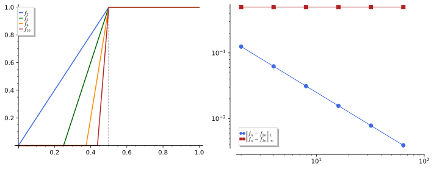
figures/fa2-incomplete-ramps.sage.
Definition 2 (Banach space) A sequence (x_n) in a normed space is a Cauchy sequence if \|x_n - x_m\| \to 0 as m, n \to \infty (Definition 3 of Real analysis). A normed space is complete, or a Banach space, if every Cauchy sequence in it converges to an element of the space. Every normed space X has a completion: a Banach space \tilde X with a linear isometry i : X \to \tilde X whose range is dense, unique up to a unique linear isometry, built from the classes of Cauchy sequences of X that are at distance zero from each other Arcozzi (2025, Thm. 1.1 and Prop. 1.1).
Veriphy. Pending.
Lean. Pending.
Sage. Pending.
Every finite-dimensional normed space is a Banach space, and the argument is the coordinate argument of Michele Cini and Rotondi (2023, sec. 2.8). The first example records it.
Example 7 (Finite dimensions) In \mathbb{C}^n with \|\cdot\|_2, a Cauchy sequence x^{(m)} has |x^{(m)}_k - x^{(l)}_k| \leq \|x^{(m)} - x^{(l)}\|_2, so each coordinate is a Cauchy sequence of complex numbers with a limit x_k, and \|x^{(m)} - x\|_2^2 = \sum_k|x^{(m)}_k - x_k|^2 \to 0 as a finite sum of null sequences Michele Cini and Rotondi (2023, sec. 2.8). By Theorem 1 the same holds for any norm on a finite-dimensional space.
Veriphy. Pending.
Lean. Pending.
Sage. Pending.
The bounded sequences with the supremum norm are a Banach space by a uniform version of the same argument. The second example gives it, together with the closed subspaces of convergent and null sequences that recur in the duality theory.
Example 8 (Bounded and null sequences) \ell^\infty = \{a : \sup_n|a_n| < \infty\} with \|a\|_\infty = \sup_n|a_n| is a Banach space: a Cauchy sequence a^{(m)} converges coordinatewise to some a, and letting l \to \infty in |a^{(m)}_n - a^{(l)}_n| \leq \varepsilon gives \|a^{(m)} - a\|_\infty \leq \varepsilon for large m. The convergent sequences c and the null sequences c_0 = \{a : a_n \to 0\} are closed subspaces, hence Banach spaces too.
Veriphy. Pending.
Lean. Pending.
Sage. Pending.
The continuous functions with the integral norm are the standard incomplete space, and the third example works out the sequence of the figure. Its completion is the space L^1 of the next section.
Example 9 (The ramps of the figure) For the ramps f_n of the figure and m > n, f_m - f_n vanishes outside [\tfrac12 - \tfrac1n, \tfrac12] and has modulus at most 1 there, so \|f_m - f_n\|_1 \leq \tfrac1n: the sequence is Cauchy in \|\cdot\|_1. If it had a continuous limit f, then f = 0 on [0, \tfrac12) and f = 1 on [\tfrac12, 1], which is impossible. So (C[0, 1], \|\cdot\|_1) is not a Banach space.
Veriphy. Pending.
Lean. Pending.
Sage. Pending.
The two meanings of the word “complete” in quantum mechanics are easily confused, and the first exercise separates them. A complete set of vectors spans the space, while a complete space contains the limits of its Cauchy sequences.
Exercise 7 (Two meanings of “complete”) Michele Cini and Rotondi (2023, sec. 2.2.3) calls a set of vectors complete if every vector is a linear combination of them, and a space complete if Cauchy sequences converge [Sec. 2.8]. Show that the vectors \delta^{(n)} (a one in place n) span c_{00}, which is not complete in \|\cdot\|_2, and that they do not span the complete space \ell^2 in the algebraic sense, although every a \in \ell^2 is the norm limit of \sum_{n \leq N}a_n\delta^{(n)}.
Every finitely supported sequence is a finite combination of the \delta^{(n)}. In c_{00} the sequence a^{(N)} = (1, \tfrac12, \dots, \tfrac1N, 0, \dots) is Cauchy in \|\cdot\|_2, since \|a^{(M)} - a^{(N)}\|_2^2 = \sum_{N < n \leq M}n^{-2}, but its limit (1/n) is not finitely supported, so c_{00} is not complete. The element (1/n) of \ell^2 is not a finite combination of the \delta^{(n)}, yet \|(1/n) - a^{(N)}\|_2^2 = \sum_{n > N} n^{-2} \to 0. In a Hilbert space “complete orthonormal set” therefore means that the closed span is everything (Definition 16), not the algebraic span.
Veriphy. Pending.
Lean. Pending.
Sage. Pending.
A Banach space has no countable algebraic basis, a consequence of completeness that Arcozzi (2025, sec. 3.1) proves for Hilbert spaces by an explicit vector. The second exercise carries the argument out in \ell^2.
Exercise 8 (No countable Hamel basis) Let v_1, v_2, \dots be linearly independent in \ell^2, and let e_1, e_2, \dots be the orthonormal vectors that Gram-Schmidt makes from them. Show that x = \sum_mm^{-1}e_m exists in \ell^2 and is not a finite linear combination of the v_n Arcozzi (2025, Prop. 3.1).
The partial sums \sum_{m \leq M}m^{-1}e_m are Cauchy, since \|\sum_{M < m \leq K}m^{-1}e_m\|^2 = \sum_{M < m \leq K}m^{-2}, so x exists by completeness. A finite combination of v_1, \dots, v_N lies in the span of e_1, \dots, e_N, which is orthogonal to e_{N + 1}, whereas \langle e_{N + 1}, x\rangle = 1/(N + 1) \neq 0. So x is not in the span of the v_n, which therefore cannot be an algebraic basis.
Veriphy. Pending.
Lean. Pending.
Sage. Pending.
The completion of a normed space can be identified concretely in the standard cases. The third exercise asks for the completions of the three incomplete spaces met so far.
Exercise 9 (Three completions) Identify the completions of (c_{00}, \|\cdot\|_\infty), (c_{00}, \|\cdot\|_2) and (\mathbb{Q}, |\cdot|) (a normed space over \mathbb{Q}), using that each space sits densely and isometrically in a Banach space.
The completion is the closure of the space in any Banach space containing it isometrically, by the uniqueness in Definition 2. c_{00} is dense in c_0 for \|\cdot\|_\infty (truncate a null sequence) and c_0 is closed in \ell^\infty, so the completion is c_0, not \ell^\infty: the constant sequence (1, 1, \dots) is at distance 1 from c_{00}. For \|\cdot\|_2 the completion is \ell^2, and for \mathbb{Q} it is \mathbb{R}.
Veriphy. Pending.
Lean. Pending.
Sage. Pending.
In a complete space a series whose norms are summable converges, and this property characterises completeness. The theorem below states it; it is the tool behind the completeness of L^p in the next section.
Theorem 2 (Absolutely convergent series) A normed space X is a Banach space if and only if every series \sum_nx_n with \sum_n\|x_n\| < \infty converges in X, and then \|\sum_nx_n\| \leq \sum_n\|x_n\|.
Veriphy. Pending.
Lean. Pending.
Sage. Pending.
The series criterion makes several completeness proofs one line long. The first example applies it to the bounded sequences with the norm of Example 8.
Example 10 (A series in \ell^\infty) The sequences x_n = 2^{-n}\delta^{(n)} in \ell^\infty have \sum\|x_n\|_\infty = 1, and \sum_nx_n = (2^{-1}, 2^{-2}, \dots) converges in \ell^\infty; in fact its tail has norm \|\sum_{n > N}x_n\|_\infty = 2^{-N-1}. The series \sum_n\delta^{(n)} has terms of norm 1 and its partial sums (1, \dots, 1, 0, \dots) do not converge in \ell^\infty, as consecutive partial sums stay at distance 1.
Veriphy. Pending.
Lean. Pending.
Sage. Pending.
The exponential of a matrix is the most familiar absolutely convergent series in a Banach space of linear maps. The second example writes it in this language; the same argument works for any bounded operator once Definition 5 is available.
Example 11 (The exponential series) For a matrix A with the operator norm, \|A^k/k!\| \leq \|A\|^k/k! and \sum_k\|A\|^k/k! = e^{\|A\|}, so e^A = \sum_kA^k/k! converges, with \|e^A\| \leq e^{\|A\|} (Definition 8 of Differential equations). For A = \begin{pmatrix} 0 & 1 \\ 0 & 0\end{pmatrix} the series stops, e^A = 1 + A, and \|e^A\| = \tfrac{1 + \sqrt5}{2} < e.
Veriphy. Pending.
Lean. Pending.
Sage. Pending.
In an incomplete space an absolutely convergent series may diverge, and the third example builds one from the ramps of the figure. The series of differences telescopes to the ramps themselves.
Example 12 (A divergent absolutely convergent series) In (C[0, 1], \|\cdot\|_1) put x_1 = f_2 and x_k = f_{2^k} - f_{2^{k - 1}} with the ramps of the figure. Then \|x_k\|_1 \leq 2^{-k}, so \sum\|x_k\|_1 < \infty, but the partial sums \sum_{k \leq K}x_k = f_{2^K} have no continuous limit (Example 9). The theorem identifies this as the failure of completeness.
Veriphy. Pending.
Lean. Pending.
Sage. Pending.
The first exercise asks for the proof of the theorem. Both directions are short, and the converse uses a fast Cauchy subsequence.
Exercise 10 (Proof of the series criterion) Prove Theorem 2. For the converse, given a Cauchy sequence (y_n) choose n_1 < n_2 < \dots with \|y_{n_{k + 1}} - y_{n_k}\| < 2^{-k}, sum the differences, and show that a Cauchy sequence with a convergent subsequence converges.
If X is complete and \sum\|x_n\| < \infty, the partial sums satisfy \|s_M - s_N\| \leq \sum_{N < n \leq M} \|x_n\|, which is small, so they converge; the norm bound passes to the limit. Conversely, with the subsequence chosen as stated, y_{n_1} + \sum_k(y_{n_{k + 1}} - y_{n_k}) converges by hypothesis, that is, y_{n_k} \to y. Then \|y_n - y\| \leq \|y_n - y_{n_k}\| + \|y_{n_k} - y\| is small for large n and k, so y_n \to y.
Veriphy. Pending.
Lean. Pending.
Sage. Pending.
The Neumann series of Section 1.11 is the absolutely convergent series used most often in this chapter. The second exercise sums it for a matrix and estimates the tail.
Exercise 11 (A geometric series of matrices) For A = \tfrac12\begin{pmatrix} 0 & 1 \\ 1 & 0\end{pmatrix} show that \sum_kA^k converges and equals (1 - A)^{-1}, and bound \|(1 - A)^{-1} - \sum_{k < N}A^k\| by 2^{-N}\cdot 2. Compute A^2 and use it to write the partial sums in closed form.
\|A\| = \tfrac12 (its eigenvalues are \pm\tfrac12 and it is symmetric), so \sum\|A^k\| = 2 and the series converges by Theorem 2. (1 - A)\sum_{k < N}A^k = 1 - A^N \to 1, so the sum is (1 - A)^{-1} = \tfrac43\begin{pmatrix} 1 & \tfrac12 \\ \tfrac12 & 1\end{pmatrix}, and the tail is bounded by \sum_{k \geq N} 2^{-k} = 2^{1 - N}. Since A^2 = \tfrac14, the even partial sums are \sum_{k < 2M}A^k = (1 + A)\sum_{j < M}4^{-j} = \tfrac43(1 - 4^{-M})(1 + A), which visibly tend to \tfrac43(1 + A) = (1 - A)^{-1}, with error 4^{-M}\cdot\tfrac43 \|1 + A\| = 2\cdot 4^{-M}, attaining the bound.
Sage computes the sum and compares the error of the partial sums with the bound 2^{1 - N}, which is attained for even N:
A = matrix(QQ, [[0, 1], [1, 0]]) / 2
R = (1 - A).inverse()
print("(1 - A)^(-1) =", R.list(), " A^2 =", (A^2).list())
for N in (2, 4, 8, 16, 17):
S = sum(A^k for k in range(N))
err = (R - S).change_ring(RDF).norm(2)
print("N = %2d: |(1-A)^(-1) - S_N| = %.3e, bound 2^(1-N) = %.3e" % (N, err, 2.0^(1 - N)))Output:
(1 - A)^(-1) = [4/3, 2/3, 2/3, 4/3] A^2 = [1/4, 0, 0, 1/4]
N = 2: |(1-A)^(-1) - S_N| = 5.000e-01, bound 2^(1-N) = 5.000e-01
N = 4: |(1-A)^(-1) - S_N| = 1.250e-01, bound 2^(1-N) = 1.250e-01
N = 8: |(1-A)^(-1) - S_N| = 7.812e-03, bound 2^(1-N) = 7.812e-03
N = 16: |(1-A)^(-1) - S_N| = 3.052e-05, bound 2^(1-N) = 3.052e-05
N = 17: |(1-A)^(-1) - S_N| = 1.526e-05, bound 2^(1-N) = 1.526e-05Veriphy. Pending.
Lean. Pending.
Sage. Pending.
Completeness is a property of the norm and not only of the topology, and the third exercise shows it with two equivalent norms. It also shows that completeness is preserved by equivalent norms.
Exercise 12 (Completeness and equivalent norms) Show that if \|\cdot\|_a and \|\cdot\|_b are equivalent norms on X, then (X, \|\cdot\|_a) is complete if and only if (X, \|\cdot\|_b) is. Then show that \|f\|_{C^1} = \|f\|_\infty + \|f'\|_\infty makes C^1[0, 1] a Banach space, while \|f\|_\infty alone does not.
Equivalent norms have the same Cauchy sequences and the same convergent sequences. For C^1: if (f_n) is Cauchy in \|\cdot\|_{C^1}, then f_n \to f and f_n' \to g uniformly, both continuous (Exercise 19), and f_n(x) = f_n(0) + \int_0^xf_n' gives f(x) = f(0) + \int_0^xg, so f \in C^1 with f' = g and f_n \to f in \|\cdot\|_{C^1}. In the supremum norm, \sqrt{(x - \tfrac12)^2 + 1/n} is a Cauchy sequence of C^1 functions whose uniform limit |x - \tfrac12| is not differentiable.
Veriphy. Pending.
Lean. Pending.
Sage. Pending.
The spaces \ell^p and L^p
The norms \|\cdot\|_p of \mathbb{R}^n have infinite-dimensional versions on sequences and on functions, and these are the basic Banach spaces of analysis. The figure compares the two directions in which the norms \|\cdot\| _p are ordered: on sequences they decrease with p, on functions on an interval of length one they increase.
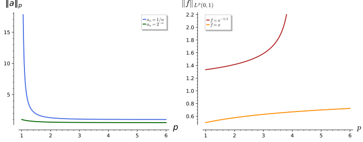
figures/fa2-lp-norms.sage.
Definition 3 (L^p space) Let 1 \leq p < \infty and let (X, \mu) be a measure space, such as an interval or \mathbb{R}^n with Lebesgue measure, or \{1, 2, 3, \dots\} with the counting measure. The space L^p(X, \mu) consists of the measurable functions with \|f\|_p = (\int_X|f|^p\,d\mu)^{1/p} < \infty, two functions being identified when they agree almost everywhere; L^\infty consists of the essentially bounded functions with \|f\|_\infty the essential supremum. For the counting measure these are the sequence spaces \ell^p = \{a : \sum_n|a_n|^p < \infty\} and \ell^\infty. For 1 \leq p \leq \infty, L^p and \ell^p are Banach spaces; L^2 is the Hilbert space of Definition 15.
Veriphy. Pending.
Lean. Pending.
Sage. Pending.
The sequences 1/n^\alpha are the test cases of the sequence spaces: whether they belong to \ell^p is decided by the p-series. The first example records the result.
Example 13 (Power sequences) a_n = n^{-\alpha} with \alpha > 0 lies in \ell^p exactly when \alpha p > 1 (Series), and always in \ell^\infty. So 1/n lies in every \ell^p with p > 1 but not in \ell^1, and 1/\sqrt n lies in \ell^p for p > 2 only. The left panel of the figure shows \|1/n\|_p decreasing in p and blowing up as p \to 1.
Veriphy. Pending.
Lean. Pending.
Sage. Pending.
Power functions play the same role for L^p, but the condition depends on whether the singularity is at zero or the decay is at infinity. The second example compares the two ends of (0, \infty).
Example 14 (Power functions) On (0, 1), x^{-\alpha} lies in L^p exactly when \alpha p < 1; on (1, \infty) exactly when \alpha p > 1. So x^{-1/4} lies in L^p(0, 1) for p < 4 (right panel of the figure), and 1/x is in L^2(1, \infty) but not in L^1(1, \infty). On (0, \infty) no power lies in any L^p, and neither of L^1(\mathbb{R}), L^2(\mathbb{R}) contains the other: x^{-1/2}\mathbf{1}_{(0, 1)} is in L^1 only, and (1 + |x|)^{-1} in L^2 only.
Veriphy. Pending.
Lean. Pending.
Sage. Pending.
The Gaussian lies in every L^p(\mathbb{R}), and its norms can be computed in closed form. The third example does so; the result reappears in the Sobolev part through the Fourier transform.
Example 15 (The Gaussian in L^p) For g(x) = e^{-x^2/2}, \|g\|_p^p = \int_{\mathbb{R}}e^{-px^2/2}dx = \sqrt{2\pi/p}, so \|g\|_p = (2\pi/p)^{1/(2p)} for 1 \leq p < \infty and \|g\|_\infty = 1. In particular \|g\|_1 = \sqrt{2\pi} and \|g\|_2 = \pi^{1/4}, and \|g\|_p \to 1 as p \to \infty, as it must for a continuous function with maximum 1.
Veriphy. Pending.
Lean. Pending.
Sage. Pending.
The inclusions between the sequence spaces follow from the monotonicity shown in the figure. The first exercise proves it and gives the opposite inclusion for functions on a set of finite measure.
Exercise 13 (Inclusions) Show that \|a\|_q \leq \|a\|_p for sequences and 1 \leq p < q \leq \infty, so that \ell^p \subset \ell^q. On (0, 1) show \|f\|_p \leq \|f\|_q, so that L^q(0, 1) \subset L^p(0, 1). Find a sequence in \ell^4 that is not in \ell^2 and a function in L^2(0, 1) that is not in L^4(0, 1).
If \|a\|_p = 1 then |a_n| \leq 1 and \sum|a_n|^q \leq \sum|a_n|^p = 1; homogeneity gives the general case. On (0, 1), Hölder’s inequality (Theorem 3) with exponents q/p and q/(q - p) gives \int|f|^p\cdot 1 \leq (\int|f|^q)^{p/q}. Examples: a_n = n^{-1/3} has \sum n^{-4/3} < \infty and \sum n^{-2/3} = \infty; f(x) = x^{-1/3} has \int x^{-2/3} = 3 and \int x^{-4/3} = \infty.
Veriphy. Pending.
Lean. Pending.
Sage. Pending.
Completeness of \ell^p is the uniform version of the coordinate argument, and the second exercise asks for it. The same proof with integrals in place of sums, and Fatou’s lemma in place of the limit of finite sums, gives the completeness of L^p.
Exercise 14 (Completeness of \ell^p) Let (a^{(m)}) be Cauchy in \ell^p, 1 \leq p < \infty. Show that it converges coordinatewise to a sequence a, that \sum_{n \leq N}|a^{(m)}_n - a_n|^p \leq \varepsilon^p for every N once m is large, and conclude that a \in \ell^p and a^{(m)} \to a in \ell^p.
|a^{(m)}_n - a^{(l)}_n| \leq \|a^{(m)} - a^{(l)}\|_p, so each coordinate is Cauchy with a limit a_n. Given \varepsilon, choose M with \|a^{(m)} - a^{(l)}\|_p \leq \varepsilon for m, l \geq M; then \sum_{n \leq N} |a^{(m)}_n - a^{(l)}_n|^p \leq \varepsilon^p, and l \to \infty in this finite sum gives the stated bound. Letting N \to \infty, a^{(m)} - a \in \ell^p with norm \leq \varepsilon, so a = a^{(m)} - (a^{(m)} - a) \in \ell^p and a^{(m)} \to a.
Veriphy. Pending.
Lean. Pending.
Sage. Pending.
The integrals and series of the examples can be evaluated in closed form, which makes the membership criteria quantitative. The third exercise treats a few borderline cases.
Exercise 15 (Borderline memberships) Compute \|n^{-1}\|_p^p = \zeta(p) for p = 2, 3, 4, the integral \int_0^1x^{-p/4}dx as a function of p < 4, and the Gaussian norms \|e^{-x^2/2}\|_p for p = 1, 2, 3. For which p is \log(1/x) in L^p(0, 1)?
\zeta(2) = \pi^2/6, \zeta(4) = \pi^4/90, \int_0^1x^{-p/4} = 4/(4 - p), and the Gaussian norms follow Example 15. With x = e^{-t}, \int_0^1\log(1/x)^pdx = \int_0^\infty t^pe^{-t}dt = \Gamma(p + 1) < \infty, so \log(1/x) lies in every L^p(0, 1) with p < \infty, though it is unbounded. For the Gaussian, \|e^{-x^2/2}\|_1 = \sqrt{2\pi}, \|e^{-x^2/2}\|_2 = \pi^{1/4} and \|e^{-x^2/2}\|_3 = (2\pi/3)^{1/6}; \zeta(3) has no known closed form, but 1 < \zeta(3) < 1 + \int_1^\infty x^{-3}dx = \tfrac32.
Sage evaluates the zeta values, the integrals and the Gaussian norms, and the moments of \log(1/x) numerically:
x, p, t = var('x p t'); assume(p > 0, p < 4)
print("zeta(2), zeta(3), zeta(4) =", zeta(2), zeta(3).n(digits=8), zeta(4))
print("int_0^1 x^(-p/4) dx =", integrate(x^(-p / 4), x, 0, 1))
for q in (1, 2, 3):
print("|exp(-x^2/2)|_%d =" % q, (integrate(exp(-q * x^2 / 2), x, -oo, oo))^(1 / q))
forget(); assume(t > 0)
for q in (1, 2, 5, 1/2):
print("int_0^1 log(1/x)^%s dx = %s (Gamma(%s) = %s)" % (q, numerical_integral(lambda u: log(1 / u)^q, 0, 1)[0], q + 1, gamma(q + 1).n()))Output:
zeta(2), zeta(3), zeta(4) = 1/6*pi^2 1.2020569 1/90*pi^4
int_0^1 x^(-p/4) dx = -4/(p - 4)
|exp(-x^2/2)|_1 = sqrt(2)*sqrt(pi)
|exp(-x^2/2)|_2 = pi^(1/4)
|exp(-x^2/2)|_3 = (1/3)^(1/3)*(sqrt(3)*sqrt(2)*sqrt(pi))^(1/3)
int_0^1 log(1/x)^1 dx = 0.9999999984543851 (Gamma(2) = 1.00000000000000)
int_0^1 log(1/x)^2 dx = 1.9999999975575957 (Gamma(3) = 2.00000000000000)
int_0^1 log(1/x)^5 dx = 119.99999986210251 (Gamma(6) = 120.000000000000)
int_0^1 log(1/x)^1/2 dx = 0.8862269251445211 (Gamma(3/2) = 0.886226925452758)Veriphy. Pending.
Lean. Pending.
Sage. Pending.
The triangle inequality for \|\cdot\|_p is not obvious, and it rests on an inequality between products and norms. The theorem below states it; it is also the tool that identifies the dual spaces of \ell^p and L^p in the last section of this part.
Theorem 3 (Hölder’s inequality) Let 1 \leq p, q \leq \infty be conjugate exponents, \tfrac1p + \tfrac1q = 1 (with \tfrac1\infty = 0). For f \in L^p and g \in L^q the product lies in L^1 and \int|fg|\,d\mu \leq \|f\|_p\|g\|_q (Hölder); for 1 < p < \infty equality holds exactly when |f|^p and |g|^q are proportional. For f, g \in L^p, \|f + g\|_p \leq \|f\|_p + \|g\|_p (Minkowski), so \|\cdot\|_p is a norm. The case p = q = 2 is the Cauchy-Schwarz inequality.
Veriphy. Pending.
Lean. Pending.
Sage. Pending.
The proof of Hölder’s inequality reduces it to an inequality between two numbers. The first example is that inequality, Young’s inequality, with its geometric meaning.
Example 16 (Young’s inequality) For s, t \geq 0 and conjugate p, q, st \leq s^p/p + t^q/q, by concavity of the logarithm: \log(\tfrac1p s^p + \tfrac1q t^q) \geq \tfrac1p\log s^p + \tfrac1q\log t^q = \log st. Applied to s = |f(x)|/\|f\|_p and t = |g(x)|/\|g\|_q and integrated, it gives \int|fg|/(\|f\|_p\|g\|_q) \leq \tfrac1p + \tfrac1q = 1, which is Hölder’s inequality.
Veriphy. Pending.
Lean. Pending.
Sage. Pending.
Hölder’s inequality gives the best constant in comparisons between norms, as already used in Exercise 5. The second example checks it on explicit vectors of \mathbb{R}^3, where both sides can be computed by hand.
Example 17 (A numerical instance) For p = 3, q = \tfrac32, x = (1, 2, 3), y = (3, 2, 1): \sum x_ky_k = 10, \|x\|_3 = 36^{1/3} \approx 3.302 and \|y\|_{3/2} = (3^{3/2} + 2^{3/2} + 1)^{2/3} \approx 4.335, with product \approx 14.31 \geq 10. Equality would require |x_k|^3 \propto |y_k|^{3/2}, that is y_k \propto x_k^2, as for y = (1, 4, 9), where \sum x_ky_k = 36 = \|x\|_3\|y\|_{3/2}.
Veriphy. Pending.
Lean. Pending.
Sage. Pending.
Minkowski’s inequality is the triangle inequality that makes \|\cdot\|_p a norm, and it fails for p < 1. The third example shows the failure on the same vectors as Exercise 1.
Example 18 (Minkowski’s inequality and its failure) For p = 3 and f = (1, 0), g = (0, 1), \|f + g\|_3 = 2^{1/3} \leq 2 = \|f\|_3 + \|g\|_3. For p = \tfrac12 the same vectors give \|f + g\|_{1/2} = (1 + 1)^2 = 4 > 2: the expression (\sum|a_k|^p)^{1/p} is not a norm for p < 1, which is why the family stops at p = 1 and why its unit “balls” are not convex for p < 1.
Veriphy. Pending.
Lean. Pending.
Sage. Pending.
The first exercise asks for the proof of Minkowski’s inequality from Hölder’s. The trick is to split |f + g|^p into two products, each of which Hölder controls.
Exercise 16 (Minkowski from Hölder) For 1 < p < \infty write |f + g|^p \leq |f|\,|f + g|^{p - 1} + |g|\,|f + g|^{p - 1}, apply Hölder’s inequality to each term with exponents p and q = p/(p - 1), and deduce \|f + g\|_p \leq \|f\|_p + \|g\|_p.
|f + g|^{p - 1} \in L^q with \||f + g|^{p - 1}\|_q = \|f + g\|_p^{p - 1}, since (p - 1)q = p. Hölder gives \int|f|\,|f + g|^{p - 1} \leq \|f\|_p\|f + g\|_p^{p - 1}, and similarly for g. Adding, \|f + g\|_p^p \leq (\|f\|_p + \|g\|_p)\|f + g\|_p^{p - 1}; dividing by \|f + g\|_p^{p - 1} (if non-zero) gives the claim. That f + g \in L^p in the first place follows from |f + g|^p \leq 2^p\max(|f|, |g|)^p \leq 2^p(|f|^p + |g|^p).
Veriphy. Pending.
Lean. Pending.
Sage. Pending.
Hölder’s inequality for three functions follows by applying it twice, and it is used for products of fields in the Sobolev part. The second exercise derives it.
Exercise 17 (Hölder for three factors) Show that \int|fgh| \leq \|f\|_p\|g\|_q\|h\|_r when \tfrac1p + \tfrac1q + \tfrac1r = 1. Deduce that the product of three functions in L^3 is integrable, and that \|fg\|_1 \leq \|f\|_2\|g\|_2 is the case r = \infty, h = 1 on a probability space.
Let \tfrac1s = \tfrac1q + \tfrac1r, so \tfrac1p + \tfrac1s = 1. Hölder gives \int|f|\,|gh| \leq \|f\|_p\|gh\|_s, and Hölder with exponents q/s, r/s applied to |g|^s|h|^s gives \|gh\|_s \leq \|g\|_q\|h\|_r. With p = q = r = 3 the right side is finite. With r = \infty and h = 1, \|h\|_\infty = 1 and the exponents are p = q = 2.
Veriphy. Pending.
Lean. Pending.
Sage. Pending.
The equality case of Hölder’s inequality is what makes the duality theorem work: for each f there is a g that attains the bound. The third exercise constructs it and checks it numerically.
Exercise 18 (The extremal function) For f \in L^p, 1 < p < \infty, f \neq 0, set g = \overline{\operatorname{sgn}f}\,|f|^{p - 1}/\|f\|_p^{p - 1}, where \operatorname{sgn}f = f/|f| (and 0 where f = 0). Show \|g\|_q = 1 and \int fg = \|f\|_p. Work it out for f = (1, -2, 3) and p = 3.
|g|^q = |f|^{(p - 1)q}/\|f\|_p^{(p - 1)q} = |f|^p/\|f\|_p^p, which integrates to 1, and fg = |f|^p/\|f\|_p^{p - 1} integrates to \|f\|_p^p/\|f\|_p^{p - 1} = \|f\|_p. For f = (1, -2, 3), p = 3: \|f\|_3 = 36^{1/3} and \overline{\operatorname{sgn}f}\,|f|^2 = (1, -4, 9), so g = (1, -4, 9)/36^{2/3} and \sum f_kg_k = (1 + 8 + 27)/36^{2/3} = 36^{1/3}, while \|g\|_{3/2}^{3/2} = (1 + 8 + 27)/36 = 1.
Veriphy. Pending.
Lean. Pending.
Sage. Pending.
The space C(K)
Continuous functions on a compact set, measured by their largest value, form the Banach space in which uniform approximation takes place. The figure shows the Bernstein polynomials of a function with a corner converging to it uniformly, which is the content of the Weierstrass theorem stated after the definition.
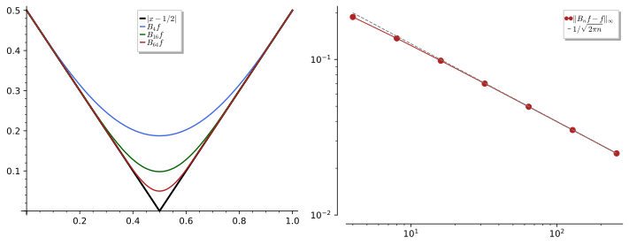
figures/fa2-bernstein.sage.
Definition 4 (Space of continuous functions) For a compact Hausdorff space K (Definition 19 of Sets, relations and topology, Definition 18 of Sets, relations and topology), such as a closed interval, a closed ball or a sphere, C(K) is the space of continuous functions f : K \to \mathbb{C} with the supremum norm \|f\|_\infty = \max_{x \in K}|f(x)|. Convergence in this norm is uniform convergence (Definition 19 of Real analysis), and C(K) is a Banach space. For a locally compact space X, the continuous functions vanishing at infinity, C_0(X) (for every \varepsilon > 0, |f| < \varepsilon outside a compact set), form a Banach space with the same norm Arcozzi (2025, sec. 1.2.1).
Veriphy. Pending.
Lean. Pending.
Sage. Pending.
The interval is the basic compact space, and the first example measures some functions on it. It also shows that the supremum of a continuous function on a compact set is attained.
Example 19 (Functions on an interval) On K = [0, 1], \|x - x^2\|_\infty = \tfrac14 (at x = \tfrac12) and \|\sin 2\pi x\|_\infty = 1. The functions f_n(x) = x^n converge pointwise to a function that is 0 on [0, 1) and 1 at x = 1, which is not continuous, so (x^n) has no limit in C[0, 1], consistent with \|f_n - f_{2n}\|_\infty = \tfrac14 (at x^n = \tfrac12).
Veriphy. Pending.
Lean. Pending.
Sage. Pending.
On the circle, continuous functions are the continuous periodic functions, and the uniform norm controls the Fourier coefficients. The second example records the inequality, which links C(S^1) with the sequence spaces.
Example 20 (The circle and Fourier coefficients) C(S^1) is the space of continuous 2\pi-periodic functions. The Fourier coefficients (Definition 2 of Fourier analysis) satisfy |\hat f(n)| \leq \|f\|_\infty, so f \mapsto \hat f maps C(S^1) into \ell^\infty(\mathbb{Z}), in fact into c_0 by the Riemann-Lebesgue lemma. If \sum_n|\hat f(n)| < \infty, the Fourier series converges uniformly, and \|f\|_\infty \leq \sum_n|\hat f(n)|.
Veriphy. Pending.
Lean. Pending.
Sage. Pending.
On \mathbb{R} the bounded continuous functions do not form a separable space, and the functions vanishing at infinity are the right replacement. The third example gives the standard members of C_0(\mathbb{R}) and a bounded function outside it.
Example 21 (Functions vanishing at infinity) e^{-x^2}, 1/(1 + x^2) and \sin(x)/x lie in C_0(\mathbb{R}); \sin x and the constant 1 are bounded and continuous but do not vanish at infinity. The Fourier transform of a function in L^1(\mathbb{R}) lies in C_0(\mathbb{R}) (the Riemann-Lebesgue lemma), for instance \int_{-1}^1e^{-ikx}dx = 2\sin(k)/k.
Veriphy. Pending.
Lean. Pending.
Sage. Pending.
The first exercise proves that C(K) is complete, which is the theorem that a uniform limit of continuous functions is continuous. The same argument gives the completeness of C^k[0, 1] used in Exercise 12.
Exercise 19 (Completeness of C(K)) Let (f_n) be Cauchy in C(K). Show that f_n(x) converges for every x, that the convergence is uniform, and that the limit f is continuous by an \varepsilon/3 argument. Conclude that C(K) is a Banach space.
|f_n(x) - f_m(x)| \leq \|f_n - f_m\|_\infty, so f_n(x) \to f(x); letting m \to \infty in |f_n(x) - f_m(x)| \leq \varepsilon for n, m \geq N gives \|f_n - f\|_\infty \leq \varepsilon. For continuity at x_0, fix such an n and choose a neighbourhood where |f_n(x) - f_n(x_0)| < \varepsilon; then |f(x) - f(x_0)| \leq |f(x) - f_n(x)| + |f_n(x) - f_n(x_0)| + |f_n(x_0) - f(x_0)| < 3\varepsilon.
Veriphy. Pending.
Lean. Pending.
Sage. Pending.
Pointwise convergence is not enough for convergence in C(K), and the moving bump shows it. The second exercise computes its norms, and the bump returns in the weak-convergence part.
Exercise 20 (A pointwise but not uniform limit) Let f_n(x) = nx\,e^{1 - nx} on [0, 1]. Show that f_n(x) \to 0 for every x but \|f_n\|_\infty = 1, so that f_n \not\to 0 in C[0, 1], while \|f_n\|_1 \to 0. Find where the maximum is attained.
f_n(0) = 0, and for x > 0, nx\,e^{-nx} \to 0. The derivative n e^{1 - nx}(1 - nx) vanishes at x = 1/n, where f_n = 1, so \|f_n\|_\infty = 1. With t = nx, \|f_n\|_1 = \tfrac en\int_0^nte^{-t}dt \leq e/n \to 0. The bump moves to 0 and becomes thinner but keeps its height.
Sage locates the maximum and computes the L^1 norms:
x = var('x'); n = var('n'); assume(n > 1)
f = n * x * exp(1 - n * x)
print("critical point:", solve(diff(f, x) == 0, x), " value there:", f.subs(x=1 / n))
print("L^1 norm:", integrate(f, x, 0, 1).simplify_full())
for nv in (1, 10, 100, 1000):
print("n = %4d: sup = %.4f, L^1 = %.5f, f_n(0.3) = %.3e" % (nv, find_local_maximum(f.subs(n=nv), 0, 1)[0], integrate(f.subs(n=nv), x, 0, 1).n(), f.subs(n=nv, x=0.3).n()))Output:
critical point: [
x == (1/n)
] value there: 1
L^1 norm: -(n*e + e - e^(n + 1))*e^(-n)/n
n = 1: sup = 1.0000, L^1 = 0.71828, f_n(0.3) = 6.041e-01
n = 10: sup = 1.0000, L^1 = 0.27169, f_n(0.3) = 4.060e-01
n = 100: sup = 1.0000, L^1 = 0.02718, f_n(0.3) = 7.631e-12
n = 1000: sup = 1.0000, L^1 = 0.00272, f_n(0.3) = 4.198e-128Veriphy. Pending.
Lean. Pending.
Sage. Pending.
The error of the Bernstein approximation of a function with a corner can be computed at the corner, where it is largest. The third exercise relates it to the central limit theorem and explains the rate seen in the figure.
Exercise 21 (The Bernstein error at a corner) For f(x) = |x - \tfrac12|, write B_nf(\tfrac12) - f(\tfrac12) as an expectation over a binomial distribution, show that it behaves like 1/\sqrt{2\pi n}, and compute it exactly for n = 2. Why is the error largest at the corner?
B_nf(\tfrac12) - f(\tfrac12) = \mathbb{E}|S_n/n - \tfrac12| for a binomial S_n with parameter \tfrac12, and by the central limit theorem (Theorem 5 of Probability and statistics) this is \approx\tfrac{1}{2\sqrt n}\mathbb{E}|Z| = \tfrac{1} {2\sqrt n}\sqrt{2/\pi} = 1/\sqrt{2\pi n}. Away from the corner f is linear, and B_n reproduces linear functions exactly, so the error comes from the kink. For n = 2, B_2f(\tfrac12) = \tfrac14\cdot\tfrac12 + \tfrac12\cdot 0 + \tfrac14\cdot\tfrac12 = \tfrac14, against 1/\sqrt{4\pi} \approx 0.28.
Sage evaluates the binomial expectation exactly and compares it with 1/\sqrt{2\pi n}:
def err(n):
return sum(binomial(n, k) * QQ(1) / 2^n * abs(QQ(k) / n - QQ(1) / 2) for k in range(n + 1))
print("n = 2: error", err(2))
for n in (2, 10, 50, 200, 1000):
e = err(n)
print("n = %4d: error %.6f, 1/sqrt(2 pi n) = %.6f, ratio %.4f" % (n, e, 1 / sqrt(2 * pi.n() * n), e * sqrt(2 * pi.n() * n)))Output:
n = 2: error 1/4
n = 2: error 0.250000, 1/sqrt(2 pi n) = 0.282095, ratio 0.8862
n = 10: error 0.123047, 1/sqrt(2 pi n) = 0.126157, ratio 0.9754
n = 50: error 0.056138, 1/sqrt(2 pi n) = 0.056419, ratio 0.9950
n = 200: error 0.028174, 1/sqrt(2 pi n) = 0.028209, ratio 0.9988
n = 1000: error 0.012613, 1/sqrt(2 pi n) = 0.012616, ratio 0.9998Veriphy. Pending.
Lean. Pending.
Sage. Pending.
Polynomials are dense in C[a, b], which makes C[a, b] separable and lets identities be proved on polynomials first. The theorem below states this and its generalisation to compact spaces.
Theorem 4 (Weierstrass approximation theorem) Every continuous function on [a, b] is a uniform limit of polynomials; explicitly, for f \in C[0, 1] the Bernstein polynomials B_nf converge to f uniformly. More generally (Stone-Weierstrass), if K is a compact Hausdorff space and \mathcal{A} \subset C(K) is a subalgebra that contains the constants, separates the points of K and is closed under complex conjugation, then \mathcal{A} is dense in C(K).
Veriphy. Pending.
Lean. Pending.
Sage. Pending.
The trigonometric polynomials are an algebra on the circle that contains the constants, separates points and is closed under conjugation. The first example applies the theorem to them.
Example 22 (Trigonometric polynomials) On S^1 the trigonometric polynomials \sum_{|n| \leq N}c_ne^{inx} form an algebra (e^{inx}e^{imx} = e^{i(n + m)x}), closed under conjugation (\overline{e^{inx}} = e^{-inx}), containing 1, and separating points (e^{ix} is injective on the circle). By Stone-Weierstrass they are dense in C(S^1). This is the uniform version of the completeness of the Fourier basis (Example 79).
Veriphy. Pending.
Lean. Pending.
Sage. Pending.
Spherical harmonics are the polynomials of the sphere, and the same theorem makes them dense. The second example applies it on S^2.
Example 23 (Polynomials on the sphere) On S^2 \subset \mathbb{R}^3 the restrictions of polynomials in x, y, z form an algebra containing the constants, closed under conjugation, and separating points (the coordinates do). They are dense in C(S^2), and since every polynomial restricted to S^2 is a finite sum of spherical harmonics (Definition 13 of Fourier analysis), finite sums of spherical harmonics are dense in C(S^2).
Veriphy. Pending.
Lean. Pending.
Sage. Pending.
The hypotheses of Stone-Weierstrass are all needed, and the third example drops two of them. Each failure is a closed proper subalgebra.
Example 24 (When the hypotheses fail) On [-1, 1] the even polynomials form an algebra with 1, closed under conjugation, but they do not separate x and -x; their closure is the even continuous functions, so x is not approximated. On the closed unit disc, the polynomials in z separate points but are not closed under conjugation; their uniform limits are holomorphic inside, so \bar z is not approximated: \|\bar z - p(z)\|_\infty \geq 1 for every polynomial p Arcozzi (2025, sec. 1.4).
Veriphy. Pending.
Lean. Pending.
Sage. Pending.
The Bernstein proof of the Weierstrass theorem is probabilistic, and the first exercise asks for its key computation. It reduces uniform convergence to the variance of a binomial distribution.
Exercise 22 (Bernstein’s proof) Show B_n1 = 1, B_nx = x, B_nx^2 = x^2 + x(1 - x)/n. For f \in C[0, 1] with modulus of continuity \omega(\delta) = \sup_{|x - y| \leq \delta}|f(x) - f(y)|, show |B_nf(x) - f(x)| \leq \omega(\delta) + 2\|f\|_\infty x(1 - x)/(n\delta^2) and conclude that B_nf \to f uniformly.
B_nf(x) = \mathbb{E}f(S_n/n) with S_n binomial(n, x); the three identities are \mathbb{E}1 = 1, \mathbb{E}S_n/n = x, \mathbb{E}(S_n/n)^2 = x^2 + x(1 - x)/n. Split |B_nf - f| \leq \mathbb{E}|f(S_n/n) - f(x)| into |S_n/n - x| \leq \delta, contributing at most \omega(\delta), and the rest, contributing at most 2\|f\|_\infty P(|S_n/n - x| > \delta) \leq 2\|f\|_\infty x(1 - x)/(n\delta^2) by Chebyshev. Choose \delta with \omega(\delta) < \varepsilon, then n large; x(1 - x) \leq \tfrac14 makes the bound uniform.
Veriphy. Pending.
Lean. Pending.
Sage. Pending.
Density of polynomials makes C[0, 1] separable, while the bounded sequences are not. The second exercise proves both statements Arcozzi (2025, Exercise 3.10).
Exercise 23 (Separable and non-separable) Show that the polynomials with rational coefficients are a countable dense subset of C[0, 1]. Show that the sequences of zeros and ones form an uncountable subset of \ell^\infty in which any two points are at distance 1, and conclude that \ell^\infty is not separable, while \ell^p is for p < \infty.
Approximate f by a polynomial within \varepsilon/2 and its coefficients by rationals within \varepsilon/(2(n + 1)); the set of rational polynomials is countable. The 0-1 sequences are in bijection with the subsets of \mathbb{N}, hence uncountable, and two different ones differ by 1 in some place. Balls of radius \tfrac12 around them are disjoint, so a dense set must meet each, and cannot be countable. In \ell^p, p < \infty, the finitely supported rational sequences are dense.
Veriphy. Pending.
Lean. Pending.
Sage. Pending.
The Weierstrass theorem implies that a continuous function is determined by its moments. The third exercise proves this uniqueness, which is the starting point of the moment problem in probability.
Exercise 24 (Functions determined by their moments) Let f \in C[0, 1] with \int_0^1f(x)x^ndx = 0 for all n \geq 0. Show that \int_0^1|f|^2 = 0, hence f = 0, by approximating \bar f uniformly by polynomials.
By hypothesis \int fp = 0 for every polynomial p. Choose p_n \to \bar f uniformly. Then |\int f\bar f - \int fp_n| \leq \|f\|_\infty\|\bar f - p_n\|_\infty \to 0, so \int|f|^2 = 0 and the continuous function |f|^2 vanishes identically.
Veriphy. Pending.
Lean. Pending.
Sage. Pending.
Bounded linear maps
A linear map between normed spaces is continuous exactly when it stretches vectors by a bounded factor. The figure shows the factor for one matrix and three norms on the plane: the image of each unit ball and the smallest ball of the same norm that contains it.
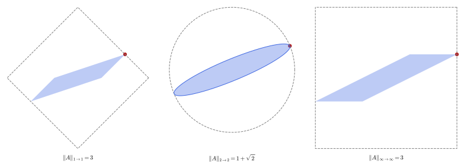
figures/fa2-operator-norms.sage.
Definition 5 (Bounded linear map) A linear map T : X \to Y between normed spaces (Definition 7 of Linear algebra) is bounded if \|Tx\| \leq C\|x\| for some constant C and all x; the smallest such constant is the operator norm \|T\| = \sup_{\|x\| \leq 1}\|Tx\|. A linear map is bounded if and only if it is continuous, if and only if it is continuous at 0. The bounded linear maps form a normed space \mathcal{B}(X, Y), which is a Banach space when Y is, and \|ST\| \leq \|S\|\,\|T\| Arcozzi (2025, Thm. 3.6, Exercise 3.4); Rainer Picard and Waurick (2020, Lemma B.4.3) gives the Hilbert-space case. On a Hilbert space this is the bounded operator of Definition 17.
Veriphy. Pending.
Lean. Pending.
Sage. Pending.
On \mathbb{C}^n with the norms \|\cdot\|_1 and \|\cdot\|_\infty the operator norm of a matrix has a closed form, unlike the Euclidean case. The first example derives the two formulas drawn in the figure.
Example 25 (Column and row sums) For a matrix A on (\mathbb{C}^n, \|\cdot\|_1), \|Ax\|_1 \leq \sum_j|x_j|\sum_i|A_{ij}| \leq (\max_j\sum_i|A_{ij}|) \|x\|_1, with equality at the basis vector of the largest column: \|A\|_{1 \to 1} is the largest column sum. On (\mathbb{C}^n, \|\cdot\|_\infty) the same argument gives the largest row sum, attained at x_j = \overline{\operatorname{sgn}A_{ij}} for the largest row i. For the matrix of the figure both are 3.
Veriphy. Pending.
Lean. Pending.
Sage. Pending.
Multiplication by a fixed function is the simplest operator on a function space, and its norm is the size of the multiplier. The second example computes it on L^p Arcozzi (2025, Exercise 3.11).
Example 26 (Multiplication operators on L^p) For g \in L^\infty, M_gf = gf satisfies \|gf\|_p \leq \|g\|_\infty\|f\|_p, and the bound is sharp: if |g| > \lambda on a set E of positive finite measure, f = \mathbf{1}_E gives \|gf\|_p \geq \lambda\|f\|_p. So \|M_g\| = \|g\|_\infty on every L^p, 1 \leq p \leq \infty, as for the Hilbert case p = 2 in Example 88.
Veriphy. Pending.
Lean. Pending.
Sage. Pending.
An integral operator with a continuous kernel is bounded on C[0, 1], and its norm is the largest integral of the kernel’s modulus. The third example computes it for the Volterra operator, which reappears in the Fredholm part.
Example 27 (The Volterra operator on C[0, 1\rbrack) (Vf)(x) = \int_0^xf(t)\,dt satisfies |Vf(x)| \leq x\|f\|_\infty, so \|V\| \leq 1, with equality at f = 1, Vf(x) = x. More generally (Kf)(x) = \int_0^1k(x, t)f(t)\,dt with continuous k has \|K\|_{C \to C} = \max_x \int_0^1|k(x, t)|\,dt; for V, k(x, t) = \mathbf{1}_{t \leq x} is not continuous, but the formula still gives \max_xx = 1.
Veriphy. Pending.
Lean. Pending.
Sage. Pending.
The equivalence of continuity and boundedness is the first theorem about linear maps, and the first exercise asks for its proof. It uses only homogeneity and the triangle inequality.
Exercise 25 (Bounded means continuous) Show that for a linear map T between normed spaces the following are equivalent: T is continuous; T is continuous at 0; T is bounded Waterstraat (2016, sec. 1.1). Show that a bounded T is Lipschitz with constant \|T\|.
Continuity implies continuity at 0. If T is continuous at 0, there is \delta > 0 with \|Tx\| \leq 1 for \|x\| \leq \delta; for x \neq 0, \|Tx\| = \tfrac{\|x\|}{\delta}\|T(\delta x/\|x\|)\| \leq \|x\|/\delta, so T is bounded with \|T\| \leq 1/\delta. If T is bounded, \|Tx - Ty\| = \|T(x - y)\| \leq \|T\|\,\|x - y\|, which is Lipschitz continuity.
Veriphy. Pending.
Lean. Pending.
Sage. Pending.
The completeness of the space of bounded maps is used constantly, for instance to sum operator series. The second exercise asks for the proof Arcozzi (2025, Thm. 3.6).
Exercise 26 (\mathcal{B}(X, Y) is a Banach space) Let Y be a Banach space and (T_n) Cauchy in \mathcal{B}(X, Y). Show that Tx = \lim T_nx exists and is linear, that \|T\| is finite, and that \|T_n - T\| \to 0.
\|T_nx - T_mx\| \leq \|T_n - T_m\|\,\|x\|, so (T_nx) is Cauchy in Y and converges; the limit is linear because each T_n is. Given \varepsilon, for n, m \geq N and \|x\| \leq 1, \|T_nx - T_mx\| \leq \varepsilon; letting m \to \infty, \|T_nx - Tx\| \leq \varepsilon. So T - T_N is bounded, hence T is, and \|T_n - T\| \leq \varepsilon for n \geq N.
Veriphy. Pending.
Lean. Pending.
Sage. Pending.
The Euclidean operator norm of a matrix is the largest singular value, and for small matrices it can be computed exactly. The third exercise does so for the matrix of the figure and compares the three norms.
Exercise 27 (Three norms of one matrix) For A = \begin{pmatrix} 1 & 2 \\ 0 & 1\end{pmatrix}, show that \|A\|_{2 \to 2} = 1 + \sqrt2 from the eigenvalues of A^{\mathsf T}A, compute the other two norms of the figure and \|A^{-1}\|_{2 \to 2}. Show that \|A\|_{2 \to 2}^2 \leq \|A\|_{1 \to 1}\|A\|_{\infty \to \infty} here.
A^{\mathsf T}A = \begin{pmatrix} 1 & 2 \\ 2 & 5\end{pmatrix} has eigenvalues 3 \pm 2\sqrt2 = (1 \pm \sqrt2)^2, so \|A\|_{2 \to 2} = 1 + \sqrt2 \approx 2.414 and, A^{-1} having the same singular values inverted and swapped, \|A^{-1}\|_{2 \to 2} = 1/(\sqrt2 - 1) = 1 + \sqrt2. The largest column and row sums of A are 1 + 0 = 1, 2 + 1 = 3 and 1 + 2 = 3, 0 + 1 = 1, so the other two norms are 3. Then (1 + \sqrt2)^2 = 3 + 2\sqrt2 \approx 5.83 \leq 9.
Sage computes the three norms and the norm of the inverse:
A = matrix(QQ, [[1, 2], [0, 1]])
print("eigenvalues of A^T A:", (A.transpose() * A).charpoly().roots(QQbar, multiplicities=False))
n2 = sqrt(max((A.transpose() * A).eigenvalues()))
print("|A|_2 =", n2.radical_expression() if hasattr(n2, 'radical_expression') else n2, "=", n2.n(digits=6))
print("|A|_1 (max column sum) =", max(sum(abs(A[i, j]) for i in range(2)) for j in range(2)), " |A|_inf (max row sum) =", max(sum(abs(A[i, j]) for j in range(2)) for i in range(2)))
Ai = A.inverse()
print("|A^-1|_2 =", sqrt(max((Ai.transpose() * Ai).eigenvalues())).n(digits=6), " 1 + sqrt(2) =", (1 + sqrt(2)).n(digits=6))
print("|A|_2^2 <= |A|_1 |A|_inf:", n2^2 <= 9, "(", (n2^2).n(digits=5), "<= 9 )")Output:
eigenvalues of A^T A: [0.1715728752538099?, 5.828427124746190?]
|A|_2 = sqrt(2) + 1 = 2.41421
|A|_1 (max column sum) = 3 |A|_inf (max row sum) = 3
|A^-1|_2 = 2.41421 1 + sqrt(2) = 2.41421
|A|_2^2 <= |A|_1 |A|_inf: True ( 5.8284 <= 9 )Veriphy. Pending.
Lean. Pending.
Sage. Pending.
Dual spaces
The continuous linear functionals on a normed space form its dual, which is the space of all bounded ways of measuring a vector by a number. The figure shows, for the norms \|\cdot\|_3 and \|\cdot\|_{3/2} of the plane, the supporting line that realises the norm of a vector as the value of a dual vector of norm one.
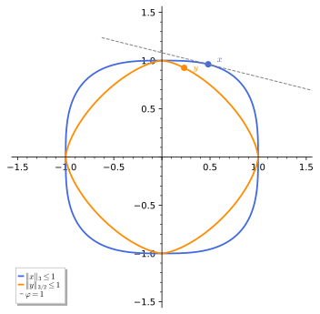
figures/fa2-dual-norms.sage.
Definition 6 (Continuous dual space) The dual space of a normed space X over \mathbb{K} = \mathbb{R} or \mathbb{C} is X^* = \mathcal{B}(X, \mathbb{K}), the space of continuous linear functionals (Definition 8 of Linear algebra) with the norm \|\varphi\| = \sup_{\|x\| \leq 1}|\varphi(x)|. It is a Banach space even when X is not. The dual of X^* is the bidual X^{**}, and each x \in X defines \hat x \in X^{**} by \hat x(\varphi) = \varphi(x). In finite dimensions X^* is the algebraic dual of Definition 9 of Linear algebra; in infinite dimensions it is a proper subspace of it.
Veriphy. Pending.
Lean. Pending.
Sage. Pending.
The dual of \mathbb{C}^n with a p-norm is \mathbb{C}^n with the conjugate norm, as the figure shows for p = 3. The first example derives it from Hölder’s inequality.
Example 28 (Duals of (\mathbb{C}^n, \|\cdot\|_p)) Every functional on \mathbb{C}^n is \varphi_y(x) = \sum_ky_kx_k. By Hölder, |\varphi_y(x)| \leq \|y\|_q\|x\|_p, and the extremal vector of Exercise 18 gives equality, so \|\varphi_y\| = \|y\|_q with \tfrac1p + \tfrac1q = 1. The dual of \|\cdot\|_1 is \|\cdot\|_\infty and conversely, and \|\cdot\|_2 is its own dual.
Veriphy. Pending.
Lean. Pending.
Sage. Pending.
Evaluating a continuous function at a point is a functional on C(K), and integrating against a measure is the general one. The second example computes the norms of these functionals.
Example 29 (Point evaluations and integrals) On C[0, 1], \delta_a(f) = f(a) has |\delta_a(f)| \leq \|f\|_\infty with equality at f = 1, so \|\delta_a\| = 1, and \|\delta_a - \delta_b\| = 2 for a \neq b (take f with f(a) = 1, f(b) = -1). The functional \varphi_g(f) = \int_0^1gf with g \in L^1 has norm \|g\|_1. By the Riesz-Markov theorem every functional on C(K) is integration against a complex measure, with norm its total variation Arcozzi (2025, sec. 1.2).
Veriphy. Pending.
Lean. Pending.
Sage. Pending.
On L^2 evaluation at a point is not bounded, and on any infinite-dimensional space some linear functionals are not continuous. The third example constructs one Arcozzi (2025, Prop. 3.2).
Example 30 (A discontinuous linear functional) On c_{00} with \|\cdot\|_\infty, \varphi(a) = \sum_nna_n is linear and finite, but \varphi(\delta^{(n)}) = n with \|\delta^{(n)}\|_\infty = 1, so \varphi is unbounded. On a Banach space such functionals exist only by the axiom of choice: extending \delta^{(n)} \mapsto n through a Hamel basis gives an everywhere-defined, unbounded functional on \ell^2 Arcozzi (2025, Prop. 3.2). Its kernel is a dense hyperplane Waterstraat (2016, Lemma 1.1.10).
Veriphy. Pending.
Lean. Pending.
Sage. Pending.
The norm of a functional on \ell^1 is the supremum of its values on the unit vectors. The first exercise proves (\ell^1)^* = \ell^\infty by this observation Arcozzi (2025, Exercise 3.7).
Exercise 28 (The dual of \ell^1) For \varphi \in (\ell^1)^* set y_n = \varphi(\delta^{(n)}). Show |y_n| \leq \|\varphi\|, that \varphi(a) = \sum_ny_na_n for every a \in \ell^1, and that \|\varphi\| = \|y\|_\infty. Conclude that (\ell^1)^* is isometric to \ell^\infty.
|y_n| = |\varphi(\delta^{(n)})| \leq \|\varphi\|. For a \in \ell^1 the partial sums \sum_{n \leq N}a_n \delta^{(n)} converge to a in \ell^1, so by continuity \varphi(a) = \lim\sum_{n \leq N}a_ny_n. Then |\varphi(a)| \leq \|y\|_\infty\|a\|_1, so \|\varphi\| \leq \|y\|_\infty \leq \|\varphi\|. Conversely each y \in \ell^\infty defines such a functional, so y \mapsto \varphi is an isometric isomorphism.
Veriphy. Pending.
Lean. Pending.
Sage. Pending.
The limit of a convergent sequence is a functional on c that no element of \ell^1 represents. The second exercise shows this, which is the first sign that \ell^1 is not reflexive Arcozzi (2025, Exercise 3.7).
Exercise 29 (The limit functional) On the space c of convergent sequences with \|\cdot\|_\infty, show that L(a) = \lim_na_n is a functional of norm 1. Show that there is no y \in \ell^1 with L(a) = \sum_ny_na_n for all a \in c (test on the \delta^{(n)}).
|\lim a_n| \leq \sup|a_n|, with equality at a = (1, 1, \dots), so \|L\| = 1. If L(a) = \sum y_na_n, then y_n = L(\delta^{(n)}) = 0 for every n, so L = 0, contradicting L(1, 1, \dots) = 1. On c_0 the same reasoning shows every functional is \sum y_na_n with y \in \ell^1, so c_0^* = \ell^1, while c^* needs the extra functional L.
Veriphy. Pending.
Lean. Pending.
Sage. Pending.
The norm of a functional on \mathbb{R}^n with a p-norm can be found by maximising over the unit sphere with a Lagrange multiplier. The third exercise compares the result with the dual-norm formula.
Exercise 30 (Dual norms by Lagrange multipliers) Maximise \varphi(x) = x_1 + 4x_2 over the unit sphere x_1^3 + x_2^3 = 1, x_k \geq 0, of \|\cdot\|_3 on \mathbb{R}^2 with a Lagrange multiplier, and compare with \|(1, 4)\|_{3/2}. Find the maximiser and compare with the extremal vector of Exercise 18.
\|(1, 4)\|_{3/2} = (1 + 8)^{2/3} = 9^{2/3} \approx 4.327. The maximiser is x = (1, 2)/9^{1/3}, since by the equality case |x_k|^3 \propto |y_k|^{3/2} gives x \propto (1, 2); this is the point of contact in the figure. Indeed the Lagrange condition (1, 4) = 3\mu(x_1^2, x_2^2) gives x_2/x_1 = 2, so x = (1, 2)/9^{1/3} and \varphi(x) = 9/9^{1/3} = 9^{2/3}.
Sage solves the Lagrange system and compares the maximum with 9^{2/3}:
x1, x2, mu = var('x1 x2 mu')
sols = solve([1 == 3 * mu * x1^2, 4 == 3 * mu * x2^2, x1^3 + x2^3 == 1], x1, x2, mu, solution_dict=True)
real = [s for s in sols if all(s[v] in RR and s[v] > 0 for v in (x1, x2))]
for s in real:
print("maximiser:", s[x1], s[x2], " ratio x2/x1 =", (s[x2] / s[x1]).simplify_full(), " value:", (s[x1] + 4 * s[x2]).n(digits=8))
print("|(1, 4)|_{3/2} = 9^(2/3) =", (9^(2 / 3)).n(digits=8))Output:
maximiser: 0.48074984882080224 0.9614997483643684 ratio x2/x1 = 2.000000105507602 value: 4.3267488
|(1, 4)|_{3/2} = 9^(2/3) = 4.3267487Veriphy. Pending.
Lean. Pending.
Sage. Pending.
For 1 \leq p < \infty the dual of L^p is L^q, which is the infinite-dimensional version of Example 28. The theorem below states it; for p = 2 it is the Riesz representation theorem (Theorem 11).
Theorem 5 (Duality of L^p spaces) Let 1 \leq p < \infty and \tfrac1p + \tfrac1q = 1, and let \mu be \sigma-finite (for example Lebesgue measure or counting measure). Every \varphi \in (L^p)^* is \varphi(f) = \int gf\,d\mu for a unique g \in L^q, and \|\varphi\| = \|g\|_q; so (L^p)^* \cong L^q isometrically, and in particular (\ell^p)^* \cong \ell^q. Moreover c_0^* \cong \ell^1. For p = \infty the map L^1 \to (L^\infty)^* is isometric but not onto: (\ell^\infty)^* is strictly larger than \ell^1.
Veriphy. Pending.
Lean. Pending.
Sage. Pending.
The duality pairs the spaces of the figure of the \ell^p section in a fixed way. The first example lists the pairs that recur in this chapter.
Example 31 (Dual pairs) (\ell^2)^* = \ell^2, (\ell^{3/2})^* = \ell^3, (\ell^1)^* = \ell^\infty and c_0^* = \ell^1; on (0, 1), (L^4)^* = L^{4/3}. Since x^{-1/4} \in L^p(0, 1) exactly for p < 4, the functional \varphi(g) = \int_0^1x^{-1/4}g is bounded on L^q(0, 1) exactly for q > \tfrac43, with norm \|x^{-1/4}\|_p, p = q/(q - 1).
Veriphy. Pending.
Lean. Pending.
Sage. Pending.
The bidual of c_0 is \ell^\infty, which is larger than c_0, so c_0 is not its own bidual. The second example computes this by applying the theorem twice.
Example 32 (The bidual of c_0) c_0^* = \ell^1 and (\ell^1)^* = \ell^\infty, so c_0^{**} = \ell^\infty, and the canonical map a \mapsto \hat a of Definition 6 is the inclusion c_0 \subset \ell^\infty. The constant sequence (1, 1, \dots) is an element of the bidual that does not come from c_0. For 1 < p < \infty, by contrast, (\ell^p)^{**} = (\ell^q)^* = \ell^p, and these spaces are the model of the reflexive spaces of Section 1.3.
Veriphy. Pending.
Lean. Pending.
Sage. Pending.
The dual of \ell^\infty contains functionals that are not given by sequences, such as generalised limits. The third example describes one, constructed with the Hahn-Banach theorem of the next part.
Example 33 (A functional on \ell^\infty not in \ell^1) The limit functional L on c has norm 1; by the Hahn-Banach theorem (Theorem 6) it extends to some \Lambda \in (\ell^\infty)^* of norm 1. Such a \Lambda vanishes on c_0 but \Lambda(1, 1, \dots) = 1, so it is not a \mapsto \sum y_na_n for any y \in \ell^1 (which would give y_n = \Lambda(\delta^{(n)}) = 0). Hence (\ell^\infty)^* \supsetneq \ell^1.
Veriphy. Pending.
Lean. Pending.
Sage. Pending.
The proof of the duality theorem for sequences is a direct extension of Exercise 28, and the first exercise asks for it. The extremal vector of Hölder’s inequality supplies the lower bound on the norm.
Exercise 31 (The dual of \ell^p) For 1 < p < \infty and \varphi \in (\ell^p)^*, put y_n = \varphi(\delta^{(n)}). Apply \varphi to the truncation of the extremal vector of (y_1, \dots, y_N) to show (\sum_{n \leq N}|y_n|^q)^{1/q} \leq \|\varphi\|, and conclude y \in \ell^q, \varphi(a) = \sum y_na_n and \|\varphi\| = \|y\|_q.
Let a_n = \overline{\operatorname{sgn}y_n}|y_n|^{q - 1} for n \leq N and 0 beyond. Then \varphi(a) = \sum_{n \leq N}|y_n|^q and \|a\|_p = (\sum_{n \leq N}|y_n|^{(q - 1)p})^{1/p} = (\sum_{n \leq N}|y_n|^q)^{1/p}, since (q - 1)p = q. From \varphi(a) \leq \|\varphi\|\,\|a\|_p we get (\sum_{n \leq N}|y_n|^q)^{1 - 1/p} \leq \|\varphi\|, that is, the claim. Letting N \to \infty, \|y\|_q \leq \|\varphi\|; density of c_{00} in \ell^p gives \varphi(a) = \sum y_na_n, and Hölder gives the reverse inequality.
Veriphy. Pending.
Lean. Pending.
Sage. Pending.
The norm of the functional \varphi(f) = \int_0^1x^{-1/4}f on L^q(0, 1) can be computed exactly. The second exercise does so and tests the bound on two functions.
Exercise 32 (The norm of an integral functional) For q = 2, compute the norm of \varphi(f) = \int_0^1x^{-1/4}f(x)\,dx on L^2(0, 1) and a function at which it is attained. Check the bound |\varphi(f)| \leq \|\varphi\|\,\|f\|_2 on f = 1 and f = x.
By the theorem \|\varphi\| = \|x^{-1/4}\|_2 = (\int_0^1x^{-1/2})^{1/2} = \sqrt2, attained at f = x^{-1/4}/\sqrt2. For f = 1, \varphi(1) = \tfrac43 \leq \sqrt2; for f = x, \varphi(x) = \tfrac47 and \|x\|_2 = 1/\sqrt3, with \tfrac47 \approx 0.571 \leq \sqrt2/\sqrt3 \approx 0.816.
Sage computes the norm, the maximiser and the two test values:
x = var('x'); assume(x > 0)
g = x^(-1 / 4)
nrm = sqrt(integrate(g^2, x, 0, 1))
print("|phi| = |x^(-1/4)|_2 =", nrm)
f0 = g / nrm
print("attained at f = x^(-1/4)/sqrt(2): |f|_2 =", sqrt(integrate(f0^2, x, 0, 1)), ", phi(f) =", integrate(g * f0, x, 0, 1))
for f in (1, x):
print("f = %s: phi(f) = %s, |phi| |f|_2 = %s" % (f, integrate(g * f, x, 0, 1), (nrm * sqrt(integrate(f^2, x, 0, 1))).n(digits=5)))Output:
|phi| = |x^(-1/4)|_2 = sqrt(2)
attained at f = x^(-1/4)/sqrt(2): |f|_2 = 1 , phi(f) = sqrt(2)
f = 1: phi(f) = 4/3, |phi| |f|_2 = 1.4142
f = x: phi(f) = 4/7, |phi| |f|_2 = 0.81650Veriphy. Pending.
Lean. Pending.
Sage. Pending.
The duality theorem fails for p = \infty, and the failure is detected by the separability of the dual. The third exercise uses the fact that a space with a separable dual is itself separable Arcozzi (2025, Thm. 3.8).
Exercise 33 (Why (\ell^\infty)^* \neq \ell^1, again) Using Arcozzi (2025, Thm. 3.8) (if X^* is separable, so is X) and Exercise 23, show that (\ell^\infty)^* is not isometric to \ell^1, and deduce that \ell^1 is not reflexive.
If (\ell^\infty)^* were (isometric to) \ell^1, which is separable, then by the theorem \ell^\infty would be separable, contradicting Exercise 23. The same argument shows that \ell^1 is not reflexive: if \ell^1 = (\ell^1)^{**} = (\ell^\infty)^*, then (\ell^\infty)^* would be separable.
Veriphy. Pending.
Lean. Pending.
Sage. Pending.
Exercises
The exercises of this part combine norms, completeness, the standard spaces, bounded maps and duals. They prepare the four principles of the next part, each of which uses completeness in an essential way.
Completeness of the bounded maps and the series criterion together give a quick proof that operators close to the identity are invertible. The first integrative exercise carries it out on \ell^p.
Exercise 34 (Operators near the identity) Let X be a Banach space and T \in \mathcal{B}(X) with \|T\| < 1. Show that \sum_kT^k converges in \mathcal{B}(X) to (1 - T)^{-1}, with \|(1 - T)^{-1}\| \leq 1/(1 - \|T\|). Apply this on \ell^p to T = \tfrac12S, with S the right shift, and compute (1 - T)^{-1}\delta^{(1)}.
\sum\|T^k\| \leq \sum\|T\|^k = 1/(1 - \|T\|), so the series converges by Theorem 2 in the Banach space \mathcal{B}(X) (Definition 5), and (1 - T)\sum_{k \leq N}T^k = 1 - T^{N + 1} \to 1, similarly on the other side. For T = \tfrac12S, \|T\| = \tfrac12 on every \ell^p, and (1 - T)^{-1}\delta^{(1)} = \sum_k2^{-k} S^k\delta^{(1)} = (1, \tfrac12, \tfrac14, \dots), of \ell^p norm (1 - 2^{-p})^{-1/p} \leq 2.
Veriphy. Pending.
Lean. Pending.
Sage. Pending.
The dual of a space depends on its norm, and different norms on the same functions give different duals. The second integrative exercise compares the duals of the continuous functions with two norms.
Exercise 35 (Duals depend on the norm) Show that the point evaluation \delta_{1/2} is a bounded functional on (C[0, 1], \|\cdot\|_\infty) but not on (C[0, 1], \|\cdot\|_1), using the ramps or the bumps of this part. Identify the dual of (C[0, 1], \|\cdot\|_1) using its completion.
|f(\tfrac12)| \leq \|f\|_\infty. In \|\cdot\|_1, the tent h_n of height 1 supported on [\tfrac12 - \tfrac1n, \tfrac12 + \tfrac1n] has \|h_n\|_1 = \tfrac1n and \delta_{1/2}(h_n) = 1, so \delta_{1/2} is unbounded. A bounded functional on a dense subspace extends uniquely to the completion with the same norm Arcozzi (2025, Exercise 3.5), so the dual of (C[0, 1], \|\cdot\|_1) is the dual of its completion L^1(0, 1), which is L^\infty(0, 1) by Theorem 5.
Veriphy. Pending.
Lean. Pending.
Sage. Pending.
The space \ell^p with 1 < p < \infty sits between \ell^1 and \ell^\infty, and the shift acts on all of them with the same norm. The third integrative exercise computes norms of the shift and of a diagonal operator on all the \ell^p and compares them with their finite truncations.
Exercise 36 (Operators on all the \ell^p) Show that the right shift S and the diagonal operator D = \operatorname{diag}(1, \tfrac12, \tfrac13, \dots) have \|S\| = 1 and \|D\| = 1 on every \ell^p, and that \|D^k\| = 1, while \|(D - \tfrac12)\| = \tfrac12. Compute the 1 \to 1 and \infty \to \infty norms of the 6 \times 6 truncations of S, D and S + D.
S preserves every \ell^p norm, so \|S\| = 1. For a diagonal operator \|D\| = \sup_n|d_n| on every \ell^p (as in Example 26), giving 1 for D and D^k and \sup_n|1/n - \tfrac12| = \tfrac12 for D - \tfrac12. For the truncation of S + D the largest column sum is 1 + 1 = 2 (first column) and the largest row sum is 1 + \tfrac12 = \tfrac32 (second row), so the 1 \to 1 and \infty \to \infty norms are 2 and \tfrac32, and the Euclidean norm, bounded by \sqrt{2\cdot\tfrac32} = \sqrt3 (Exercise 27), lies between.
Veriphy. Pending.
Lean. Pending.
Sage. Pending.
The four principles
Four theorems carry most of the weight of functional analysis on Banach spaces. The Hahn-Banach theorem supplies enough continuous functionals to separate points; the Baire category theorem turns completeness into a statement about the size of sets; the uniform boundedness principle and the open mapping theorem, both consequences of Baire’s, turn pointwise information into uniform estimates. This part states each theorem, proves the shorter ones in the exercises, and shows by counterexamples why each hypothesis, completeness above all, is needed. The proofs follow Arcozzi (2025, secs. 3.2, 3.5 and 3.6); closed operators follow Rainer Picard and Waurick (2020, sec. B.4) and Waterstraat (2016, sec. 1.2).
For more on this topic, see Gasiński and Papageorgiou (2014, Ch. 5).
The Hahn-Banach theorem
A functional defined on a subspace can be extended to the whole space without increasing its norm. In a Hilbert space this is an orthogonal projection followed by the Riesz representation, but in a general normed space there is no projection, and the extension needs an argument by induction on dimensions closed off by Zorn’s lemma.
Theorem 6 (Hahn-Banach theorem) Let X be a real vector space, p : X \to \mathbb{R} sublinear (p(x + y) \leq p(x) + p(y) and p(tx) = tp(x) for t \geq 0), Y \subset X a subspace and \ell : Y \to \mathbb{R} linear with \ell \leq p on Y. Then \ell has a linear extension L to X with L \leq p on X; over \mathbb{C} the same holds with |\ell| \leq p Arcozzi (2025, Thms. 3.4 and 3.5). Consequences for a normed space X: every \lambda \in Y^* extends to some L \in X^* with \|L\| = \|\lambda\|; for every x \in X there is \varphi \in X^* with \|\varphi\| = 1 and \varphi(x) = \|x\|; the canonical map x \mapsto \hat x of X into X^{**} is an isometry; and for a subspace Z and y at distance d(y, Z) > 0 there is \varphi \in X^* with \|\varphi\| = 1, \varphi|_Z = 0 and \varphi(y) = d(y, Z) Arcozzi (2025, Cors. 3.1-3.3, Thm. 3.7). In geometric form, two disjoint convex sets, one of them open, are separated by a closed real hyperplane Ramesh (2020, Thm. 2.15).
Veriphy. Pending.
Lean. Pending.
Sage. Pending.
In a Hilbert space the extension is explicit and unique, which is the case to compare with. The first example writes it down Arcozzi (2025, Exercise 3.1).
Example 34 (Extension in a Hilbert space) Let M be a closed subspace of a Hilbert space H and \lambda \in M^*. By the Riesz representation theorem (Theorem 11) on M, \lambda(m) = \langle y, m\rangle for some y \in M with \|y\| = \|\lambda\|. Then L(x) = \langle y, x\rangle extends \lambda with \|L\| = \|y\|. It is the only norm-preserving extension: any other is \langle y + z, x\rangle with z \perp M, of norm (\|y\|^2 + \|z\|^2)^{1/2}.
Veriphy. Pending.
Lean. Pending.
Sage. Pending.
Outside Hilbert spaces the norm-preserving extension is usually not unique, and the plane with the norm \|\cdot\|_1 already shows it. The second example finds all the extensions.
Example 35 (Many extensions in (\mathbb{R}^2, \|\cdot\|_1)) On Y = \mathbb{R}e_1 let \ell(te_1) = t, of norm 1. Every extension is L_c(x) = x_1 + cx_2, and its norm for \|\cdot\|_1 is the dual norm \|(1, c)\|_\infty = \max(1, |c|) (Example 28). So every c \in [-1, 1] gives a norm-preserving extension: the unit ball of \|\cdot\|_1 has a corner at e_1, and every line through the corner that does not cut the ball supports it.
Veriphy. Pending.
Lean. Pending.
Sage. Pending.
The norming functionals of the theorem can be written down in the standard spaces. The third example lists them; in each case the functional touches the unit ball at x/\|x\|.
Example 36 (Norming functionals) In \ell^p, 1 < p < \infty, the norming functional of x is the extremal vector of Exercise 18. In C[0, 1], if |f| attains its maximum at x_0, then \varphi = \overline{\operatorname{sgn}f(x_0)}\,\delta_{x_0} has \|\varphi\| = 1 and \varphi(f) = \|f\|_\infty; for f(x) = x - x^2 this is \delta_{1/2}. In \ell^1 the functional y = (\overline{\operatorname{sgn}x_n}) \in \ell^\infty norms x, and it is not unique when some x_n = 0.
Veriphy. Pending.
Lean. Pending.
Sage. Pending.
The uniqueness in Hilbert spaces is a consequence of the strict convexity of the unit ball, and the first exercise proves it directly Arcozzi (2025, Exercise 3.6). The argument uses only the parallelogram law.
Exercise 37 (Uniqueness in Hilbert spaces) Let L, L' be two extensions of \lambda \in M^* to H with \|L\| = \|L'\| = \|\lambda\|. Represent them by vectors y, y' and use the parallelogram law on \tfrac12(y + y') to show y = y'.
Both y and y' have norm \|\lambda\|, and \tfrac12(L + L') also extends \lambda, so \|\tfrac12(y + y')\| \geq \|\lambda\|. The parallelogram law gives \|\tfrac12(y - y')\|^2 = \tfrac12\|y\|^2 + \tfrac12\|y'\|^2 - \|\tfrac12(y + y')\|^2 \leq \|\lambda\|^2 - \|\lambda\|^2 = 0, so y = y'.
Veriphy. Pending.
Lean. Pending.
Sage. Pending.
In \ell^1 the norm-preserving extensions of a functional on a line form a large set, which the second exercise describes Arcozzi (2025, Exercise 3.9). The answer is a whole face of the dual unit ball.
Exercise 38 (All extensions in \ell^1) On the line \mathbb{C}\delta^{(1)} \subset \ell^1 let \ell(t\delta^{(1)}) = t. Using (\ell^1)^* = \ell^\infty (Exercise 28), find all L \in (\ell^1)^* extending \ell with \|L\| = 1. How does this differ from Example 34?
L is given by y \in \ell^\infty with L(\delta^{(1)}) = y_1 = 1 and \|L\| = \|y\|_\infty = 1. So the extensions are exactly the sequences (1, y_2, y_3, \dots) with |y_n| \leq 1: an infinite-dimensional family, compared with the single extension in a Hilbert space.
Veriphy. Pending.
Lean. Pending.
Sage. Pending.
The distance functional of the theorem can be computed in the plane, where the dual norm is explicit. The third exercise does so and compares the functional with the dual norm.
Exercise 39 (The distance functional) In (\mathbb{R}^2, \|\cdot\|_\infty) let Z = \mathbb{R}(1, 1) and y = (1, 0). Compute d(y, Z) and find the functional \varphi of the theorem with \|\varphi\| = 1, \varphi(1, 1) = 0 and \varphi(y) = d(y, Z), by minimising \|y - t(1, 1)\|_\infty over t.
\|y - t(1, 1)\|_\infty = \max(|1 - t|, |t|) is minimal at t = \tfrac12, so d(y, Z) = \tfrac12. A functional vanishing on (1, 1) is \varphi(x) = c(x_1 - x_2), of norm \|(c, -c)\|_1 = 2|c|; so c = \tfrac12, and \varphi(y) = \tfrac12 = d(y, Z).
A grid search in Sage confirms the minimum and the functional:
t = var('t')
dist = lambda tv: max(abs(1 - tv), abs(tv))
best = min((dist(k / 1000), k / 1000) for k in range(-2000, 2001))
print("min over t of |y - t(1,1)|_inf on a grid:", best)
phi = lambda v: (v[0] - v[1]) / 2
print("phi(x) = (x1 - x2)/2: phi(1,1) =", phi((1, 1)), " phi(y) =", phi((1, 0)), " norm |(1/2, -1/2)|_1 =", abs(QQ(1) / 2) + abs(-QQ(1) / 2))Output:
min over t of |y - t(1,1)|_inf on a grid: (1/2, 1/2)
phi(x) = (x1 - x2)/2: phi(1,1) = 0 phi(y) = 1/2 norm |(1/2, -1/2)|_1 = 1Veriphy. Pending.
Lean. Pending.
Sage. Pending.
The isometry of the canonical embedding is the reason every normed space sits in a Banach space of the same norm. The fourth exercise asks for the proof Arcozzi (2025, Thm. 3.7).
Exercise 40 (The canonical embedding is isometric) Show \|\hat x\|_{X^{**}} \leq \|x\| from |\varphi(x)| \leq \|\varphi\|\,\|x\|, and the reverse inequality from the norming functional of x. Deduce that the closure of \{\hat x\} in X^{**} is a completion of X.
|\hat x(\varphi)| = |\varphi(x)| \leq \|\varphi\|\,\|x\| gives \|\hat x\| \leq \|x\|; the norming functional \varphi has \|\varphi\| = 1 and \hat x(\varphi) = \|x\|, giving equality. X^{**} is a Banach space (Definition 6), so the closure of the isometric image of X is complete and contains X densely, which is the completion of Definition 2.
Veriphy. Pending.
Lean. Pending.
Sage. Pending.
The Baire category theorem
In a complete metric space a set that is “thin” in a precise sense cannot fill the space, even after a countable union. The figure shows a function that the theorem produces in abundance, a continuous function with no derivative at any point, and the definition below makes “thin” precise.
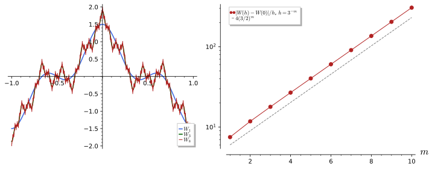
figures/fa2-weierstrass-function.sage.
Definition 7 (Meagre set) A subset A of a metric space M is nowhere dense if its closure contains no open ball, and meagre (or of the first category) if it is a countable union of nowhere dense sets. A set whose complement is meagre is comeagre (or residual); a property that holds on a comeagre set holds for a generic point. A closed set is nowhere dense if and only if its complement is open and dense.
Veriphy. Pending.
Lean. Pending.
Sage. Pending.
A single point of \mathbb{R} is nowhere dense, so every countable set is meagre. The first example draws the conclusion for the rationals, which are dense and meagre at the same time.
Example 37 (The rationals) \mathbb{Q} = \bigcup_{q}\{q\} is a countable union of closed sets with empty interior, hence meagre in \mathbb{R}, although it is dense. Its complement, the irrationals, is comeagre. “Meagre” and “of measure zero” are different notions: the irrationals in [0, 1] have measure one, and there are comeagre sets of measure zero.
Veriphy. Pending.
Lean. Pending.
Sage. Pending.
The Cantor set is uncountable but nowhere dense, so size in the sense of cardinality and in the sense of category also differ. The second example records its construction.
Example 38 (The Cantor set) Remove the open middle third of [0, 1], then of each remaining interval, and so on; after n steps 2^n intervals of total length (\tfrac23)^n remain, and the Cantor set C is their intersection. It is closed, and it contains no interval, since it lies in intervals of length 3^{-n}; so it is nowhere dense, though it is uncountable (points of C are the numbers with ternary digits 0 and 2).
Veriphy. Pending.
Lean. Pending.
Sage. Pending.
In a normed space every proper closed subspace is nowhere dense, which is the fact that the Baire argument against countable bases uses. The third example states it with the finitely supported sequences in \ell^2.
Example 39 (Proper subspaces) A proper closed subspace F of a normed space contains no ball: if B(x, r) \subset F then B(0, r) \subset F - x = F, and then F contains every vector, by scaling. So the finite-dimensional subspaces F_N = \operatorname{span}\{ \delta^{(1)}, \dots, \delta^{(N)}\} of \ell^2 are nowhere dense (closed by Theorem 1), and c_{00} = \bigcup_NF_N is meagre in \ell^2.
Veriphy. Pending.
Lean. Pending.
Sage. Pending.
The first exercise characterises nowhere dense closed sets by their complements. It is the form in which Baire’s theorem is usually applied.
Exercise 41 (Nowhere dense and open dense) Show that a closed set F is nowhere dense if and only if M \setminus F is open and dense, and that A is nowhere dense if and only if its closure is. Deduce that a countable intersection of open dense sets is comeagre.
M \setminus F is open since F is closed. It is dense if and only if every ball meets it, if and only if no ball lies inside F. Nowhere density of A is defined through \bar A, which is closed and has closure \bar A. If U_n are open and dense, F_n = M \setminus U_n are closed nowhere dense, and \bigcap U_n = M \setminus\bigcup F_n is the complement of a meagre set.
Veriphy. Pending.
Lean. Pending.
Sage. Pending.
The total length of the Cantor construction tends to zero, while the number of intervals doubles at each step. The second exercise computes both and shows that \tfrac14 is a point of the Cantor set.
Exercise 42 (Stages of the Cantor set) Describe the 2^n intervals of the n-th stage for n \leq 6, compute their total length (\tfrac23)^n, and check that \tfrac14 = 0.0202\ldots_3 lies in every stage. Is \tfrac14 an endpoint of some interval?
The n-th stage consists of the intervals [0.d_1\dots d_n{}_3, 0.d_1\dots d_n{}_3 + 3^{-n}] with ternary digits d_k \in \{0, 2\}, so there are 2^n of them, each of length 3^{-n}. The lengths are 1, \tfrac23, \tfrac49, \dots, (\tfrac23)^6 = \tfrac{64}{729}. \tfrac14 has ternary expansion 0.\overline{02}_3, using only the digits 0 and 2, so it lies in every stage, but it is not an endpoint, since endpoints have finite expansions (ending in repeated 0s or 2s from some digit on, like \tfrac13 = 0.1_3 = 0.0\overline{2}_3).
Sage generates the stages exactly and the ternary digits of \tfrac14:
def stage(n):
I = [(QQ(0), QQ(1))]
for _ in range(n):
I = [J for (a, b) in I for J in ((a, a + (b - a) / 3), (b - (b - a) / 3, b))]
return I
for n in range(7):
I = stage(n)
print("n = %d: %2d intervals, total length %s, contains 1/4: %s, 1/4 is an endpoint: %s" %
(n, len(I), sum(b - a for a, b in I), any(a <= QQ(1) / 4 <= b for a, b in I), any(QQ(1) / 4 in (a, b) for a, b in I)))
print("stage 2:", stage(2))
x = QQ(1) / 4; digits = []
for _ in range(10):
x *= 3; d = floor(x); digits.append(d); x -= d
print("ternary digits of 1/4:", digits)Output:
n = 0: 1 intervals, total length 1, contains 1/4: True, 1/4 is an endpoint: False
n = 1: 2 intervals, total length 2/3, contains 1/4: True, 1/4 is an endpoint: False
n = 2: 4 intervals, total length 4/9, contains 1/4: True, 1/4 is an endpoint: False
n = 3: 8 intervals, total length 8/27, contains 1/4: True, 1/4 is an endpoint: False
n = 4: 16 intervals, total length 16/81, contains 1/4: True, 1/4 is an endpoint: False
n = 5: 32 intervals, total length 32/243, contains 1/4: True, 1/4 is an endpoint: False
n = 6: 64 intervals, total length 64/729, contains 1/4: True, 1/4 is an endpoint: False
stage 2: [(0, 1/9), (2/9, 1/3), (2/3, 7/9), (8/9, 1)]
ternary digits of 1/4: [0, 2, 0, 2, 0, 2, 0, 2, 0, 2]Veriphy. Pending.
Lean. Pending.
Sage. Pending.
The rationals are dense and meagre, and the third exercise shows that they cannot be written as a countable intersection of open sets. The proof uses Theorem 7, applied in the complete space \mathbb{R}.
Exercise 43 (\mathbb{Q} is not a countable intersection of open sets) Suppose \mathbb{Q} = \bigcap_nU_n with U_n open. Show that each U_n is dense, and that \mathbb{R} = \bigcup_n( \mathbb{R} \setminus U_n) \cup \bigcup_q\{q\} writes \mathbb{R} as a countable union of nowhere dense sets. Conclude with Baire’s theorem.
U_n \supset \mathbb{Q} is dense, so \mathbb{R} \setminus U_n is closed nowhere dense. Every real number is either rational or outside some U_n, which gives the countable union. Each piece is nowhere dense, so \mathbb{R} would be meagre, contradicting the Baire theorem for the complete metric space \mathbb{R}.
Veriphy. Pending.
Lean. Pending.
Sage. Pending.
Completeness rules out a countable union of thin sets filling the space. The theorem below states this; the proof is a nested sequence of balls whose centres form a Cauchy sequence.
Theorem 7 (Baire category theorem) A complete metric space is not meagre in itself: if M = \bigcup_nA_n, some \bar A_n contains a ball. Equivalently, a countable intersection of open dense subsets of a complete metric space is dense Arcozzi (2025, Thm. 3.12). In the Banach space C[0, 1] the functions that are differentiable at some point form a meagre set, so a generic continuous function is differentiable nowhere.
Veriphy. Pending.
Lean. Pending.
Sage. Pending.
The first consequence is that a Banach space cannot be too small in dimension. The first example combines the theorem with Example 39.
Example 40 (No countable basis, by category) If an infinite-dimensional Banach space X had a countable algebraic basis v_1, v_2, \dots, then X = \bigcup_N \operatorname{span}\{v_1, \dots, v_N\} would be a countable union of proper closed subspaces, each nowhere dense, which the theorem forbids. This is a second proof of Exercise 8, and it shows in particular that c_{00} admits no complete norm.
Veriphy. Pending.
Lean. Pending.
Sage. Pending.
The theorem shows that the reals are uncountable without decimal expansions. The second example gives the argument, which is the simplest application of the theorem.
Example 41 (\mathbb{R} is uncountable) If \mathbb{R} = \{r_1, r_2, \dots\}, then \mathbb{R} = \bigcup_n\{r_n\} would be a countable union of nowhere dense closed sets, contradicting the theorem for the complete metric space \mathbb{R}. The same argument shows that a complete metric space without isolated points, such as the Cantor set, is uncountable.
Veriphy. Pending.
Lean. Pending.
Sage. Pending.
The Weierstrass function of the figure is an explicit continuous nowhere-differentiable function, while the theorem says that such functions are the rule. The third example describes it.
Example 42 (The Weierstrass function) W(x) = \sum_{n \geq 0}a^n\cos(b^n\pi x) with 0 < a < 1 and an odd integer b with ab \geq 1 converges uniformly by the Weierstrass test, so W \in C(\mathbb{R}), and it is differentiable nowhere (Weierstrass for ab > 1 + \tfrac32\pi, Hardy for ab \geq 1). The figure uses a = \tfrac12, b = 3: at x = 0 the difference quotients at h = 3^{-m} are about -4(\tfrac32)^m (Exercise 45).
Veriphy. Pending.
Lean. Pending.
Sage. Pending.
The proof of the theorem is a nested-balls argument. The first exercise asks for it in full Arcozzi (2025, Thm. 3.12).
Exercise 44 (Proof of Baire’s theorem) Let A_n be nowhere dense in a complete metric space M. Construct closed balls \bar B(x_n, r_n) with r_n < 2^{-n}, \bar B(x_{n + 1}, r_{n + 1}) \subset B(x_n, r_n) and \bar B(x_n, r_n) \cap \bar A_n = \emptyset. Show that (x_n) is Cauchy and its limit lies outside every A_n.
Since \bar A_1 contains no ball, M \setminus\bar A_1 is a non-empty open set, containing some ball \bar B(x_1, r_1) with r_1 < \tfrac12. Inductively, B(x_n, r_n) \setminus\bar A_{n + 1} is open and non-empty and contains a closed ball of radius < 2^{-n - 1}. For m > n, x_m \in B(x_n, r_n), so d(x_m, x_n) < 2^{-n} and (x_n) is Cauchy, with limit x in each closed ball \bar B(x_n, r_n), hence in no \bar A_n. So \bigcup A_n \neq M.
Veriphy. Pending.
Lean. Pending.
Sage. Pending.
The growth of the difference quotients of the Weierstrass function can be computed exactly at x = 0. The second exercise does this by splitting the series at n = m.
Exercise 45 (Difference quotients at the origin) For W(x) = \sum_n2^{-n}\cos(3^n\pi x) and h = 3^{-m}, show that the terms with n \geq m contribute exactly -4\cdot 2^{-m} to W(h) - W(0), and bound the terms with n < m by \tfrac{\pi^2}{2}\sum_{n < m}2^{-n}9^{n - m}. Conclude that |W(h) - W(0)|/h \geq (4 - \tfrac{\pi^2}7)(\tfrac32)^m.
For n \geq m, 3^nh = 3^{n - m} is odd, so \cos(3^{n - m}\pi) - 1 = -2, and \sum_{n \geq m}2^{-n}(-2) = -4\cdot 2^{-m}. For n < m, |\cos t - 1| \leq t^2/2 with t = 3^{n - m}\pi gives the bound, and \tfrac{\pi^2}{2}9^{-m}\sum_{n < m}(\tfrac92)^n = \tfrac{\pi^2}{2}9^{-m}\tfrac{(9/2)^m - 1}{7/2} \leq \tfrac{\pi^2}{7}2^{-m}. So |W(h) - W(0)| \geq (4 - \tfrac{\pi^2}7)2^{-m}, and dividing by h = 3^{-m} gives the claim; since 4 - \pi^2/7 \approx 2.59 > 0, the quotients tend to infinity and W is not differentiable at 0.
Sage evaluates the quotients with sixty terms of the series in high precision; the terms with n \geq m add up to -4\cdot2^{-m} up to the truncation:
R = RealField(200)
def W(x, terms=60):
return sum(R(2)^(-n) * cos(R(3)^n * R(pi) * x) for n in range(terms))
for m in range(1, 9):
h = R(3)^(-m)
q = abs(W(h) - W(0)) / h
tail = sum(R(2)^(-n) * (cos(R(3)^n * R(pi) * h) - 1) for n in range(m, 60))
print("m = %d: |W(h) - W(0)|/h = %10.3f, bound %9.3f, tail + 4 * 2^-m = %.1e (truncation 2^-59)" % (m, q, (4 - R(pi)^2 / 7) * R(1.5)^m, tail + 4 * R(2)^(-m)))Output:
m = 1: |W(h) - W(0)|/h = 7.500, bound 3.885, tail + 4 * 2^-m = 3.5e-18 (truncation 2^-59)
m = 2: |W(h) - W(0)|/h = 11.793, bound 5.828, tail + 4 * 2^-m = 3.5e-18 (truncation 2^-59)
m = 3: |W(h) - W(0)|/h = 17.872, bound 8.741, tail + 4 * 2^-m = 3.5e-18 (truncation 2^-59)
m = 4: |W(h) - W(0)|/h = 26.868, bound 13.112, tail + 4 * 2^-m = 3.5e-18 (truncation 2^-59)
m = 5: |W(h) - W(0)|/h = 40.323, bound 19.668, tail + 4 * 2^-m = 3.5e-18 (truncation 2^-59)
m = 6: |W(h) - W(0)|/h = 60.491, bound 29.502, tail + 4 * 2^-m = 3.5e-18 (truncation 2^-59)
m = 7: |W(h) - W(0)|/h = 90.739, bound 44.254, tail + 4 * 2^-m = 3.5e-18 (truncation 2^-59)
m = 8: |W(h) - W(0)|/h = 136.110, bound 66.380, tail + 4 * 2^-m = 3.5e-18 (truncation 2^-59)Veriphy. Pending.
Lean. Pending.
Sage. Pending.
The theorem needs completeness, and the space of polynomials shows what goes wrong without it. The third exercise makes this precise.
Exercise 46 (Completeness is needed) Show that the polynomials with the supremum norm on [0, 1] form a normed space that is a countable union of nowhere dense sets. Which step of the proof of the theorem fails?
The polynomials of degree \leq N form a finite-dimensional, hence closed, proper subspace P_N, which is nowhere dense (Example 39), and the polynomial space is \bigcup_NP_N. In the proof the centres of the nested balls form a Cauchy sequence whose limit, a continuous function, need not be a polynomial: the last step uses completeness.
Veriphy. Pending.
Lean. Pending.
Sage. Pending.
Uniform boundedness
A family of bounded operators that is bounded at each point of a Banach space is bounded uniformly. The figure shows the most famous consequence: the norms of the Fourier partial-sum functionals grow without bound, so some continuous function has a divergent Fourier series.
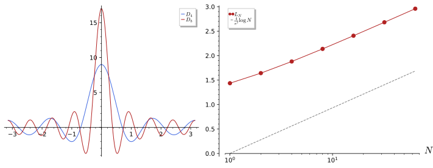
figures/fa2-lebesgue-constants.sage.
Theorem 8 (Uniform boundedness principle) Let X be a Banach space, Y a normed space and \mathcal{F} \subset \mathcal{B}(X, Y) a family with \sup_{T \in \mathcal{F}}\|Tx\| < \infty for every x \in X. Then \sup_{T \in \mathcal{F}}\|T\| < \infty (Banach-Steinhaus) Arcozzi (2025, Thm. 3.13). Consequently, if T_n \in \mathcal{B}(X, Y) and Tx = \lim T_nx exists for every x, then T is bounded with \|T\| \leq \liminf\|T_n\| Arcozzi (2025, Cor. 3.4); Ramesh (2020, Thm. 2.16). Equivalently, if \sup_{T \in \mathcal{F}}\|T\| = \infty, the points x with \sup_T\|Tx\| = \infty form a comeagre set.
Veriphy. Pending.
Lean. Pending.
Sage. Pending.
The Fourier partial sums at a point are functionals on C(S^1), and their norms are the Lebesgue constants of the figure. The first example applies the principle to them.
Example 43 (A continuous function with divergent Fourier series) \Lambda_Nf = S_Nf(0) = \tfrac1{2\pi}\int_{-\pi}^\pi D_N(x)f(x)\,dx (Definition 3 of Fourier analysis) has norm \|\Lambda_N\| = L_N = \tfrac1{2\pi}\int|D_N| on C(S^1) (Example 29), and L_N \geq \tfrac4{\pi^2}\log N \to \infty. By the principle there is f \in C(S^1) with \sup_N|S_Nf(0)| = \infty, and such f are generic. Uniform convergence of Fourier series needs more than continuity, for instance \sum|\hat f(n)| < \infty (Example 20).
Veriphy. Pending.
Lean. Pending.
Sage. Pending.
A pointwise limit of bounded operators is bounded, which in Hilbert space is a familiar fact about projections. The second example shows the limit of the truncations and the limit of the shifts.
Example 44 (Pointwise limits) The truncations P_N a = (a_1, \dots, a_N, 0, \dots) on \ell^p, p < \infty, have \|P_N\| = 1 and P_Na \to a, so the limit 1 is bounded with norm \leq 1. The powers of the backward shift satisfy (S^*)^na \to 0 for every a \in \ell^2, although \|(S^*)^n\| = 1: the bound \|T\| \leq\liminf\|T_n\| can be strict, and pointwise convergence does not imply norm convergence.
Veriphy. Pending.
Lean. Pending.
Sage. Pending.
Without completeness the principle fails, and the finitely supported sequences give the counterexample. The third example constructs a pointwise bounded but unbounded family on them.
Example 45 (Completeness is needed) On c_{00} with \|\cdot\|_\infty let \varphi_n(a) = na_n. For each a \in c_{00} the sequence \varphi_n(a) is eventually 0, so \sup_n|\varphi_n(a)| < \infty; but \|\varphi_n\| = n. The principle fails because c_{00} is not complete; on its completion c_0, the sequence a_n = n^{-1/2} gives \varphi_n(a) = \sqrt n \to \infty.
Veriphy. Pending.
Lean. Pending.
Sage. Pending.
The proof is a direct application of Baire’s theorem to the sets where the family is bounded by m. The first exercise asks for it Arcozzi (2025, Thm. 3.13).
Exercise 47 (Proof of the principle) Let A_m = \{x : \sup_T\|Tx\| \leq m\}. Show that the A_m are closed and cover X, that some A_m contains a ball \bar B(z, r), and that then \|T\| \leq 2m/r for all T \in \mathcal{F}.
A_m = \bigcap_T\{x : \|Tx\| \leq m\} is an intersection of closed sets, and by hypothesis every x lies in some A_m. By Theorem 7 some A_m contains \bar B(z, r). For \|x\| \leq 1, z + rx and z lie in A_m, so \|T(rx)\| \leq \|T(z + rx)\| + \|Tz\| \leq 2m, that is \|Tx\| \leq 2m/r.
Veriphy. Pending.
Lean. Pending.
Sage. Pending.
The Lebesgue constants grow like a logarithm, and a lower bound of this form follows from an elementary estimate. The second exercise computes the first two exactly and proves the growth.
Exercise 48 (Growth of the Lebesgue constants) Show L_0 = 1 and L_1 = \tfrac13 + \tfrac{2\sqrt3}{\pi}. Then use |\sin(x/2)| \leq |x|/2 to show L_N \geq \tfrac1\pi\int_0^\pi|\sin((N + \tfrac12)x)|\,\tfrac{2}{x}\,dx, and bound this below by \tfrac{4}{\pi^2}\sum_{k = 1}^N \tfrac1k.
D_0 = 1 gives L_0 = 1. D_1 = 1 + 2\cos x changes sign at x = \pm\tfrac{2\pi}3, and integrating |1 + 2\cos x| gives 2\pi L_1 = (\tfrac{4\pi}3 + 2\sqrt3) + (2\sqrt3 - \tfrac{2\pi}3) = \tfrac{2\pi}3 + 4\sqrt3. For the lower bound, D_N is even and |\sin(x/2)| \leq x/2, so L_N \geq \tfrac1\pi\int_0^\pi|\sin((N + \tfrac12)x)|\tfrac2x dx. With t = (N + \tfrac12)x this is \tfrac2\pi\int_0^{(N + 1/2)\pi}|\sin t|\tfrac{dt}t \geq \tfrac2\pi\sum_{k = 1}^N\tfrac1{k\pi}\int_{(k - 1)\pi}^{k\pi}|\sin t|\,dt = \tfrac4{\pi^2}\sum_{k = 1}^N\tfrac1k \geq \tfrac4{\pi^2} \log(N + 1).
Sage integrates |D_N| between its zeros and compares with the lower bound and with the asymptotic \tfrac4{\pi^2}\log N:
def L(N):
D = lambda x: 1 + 2 * sum(cos(k * x) for k in range(1, N + 1))
# integrate |D| over [0, pi] piecewise between the zeros 2 pi j/(2N + 1)
zs = [0] + [2 * pi.n() * j / (2 * N + 1) for j in range(1, N + 1)] + [pi.n()]
return 2 * sum(abs(numerical_integral(D, a, b)[0]) for a, b in zip(zs, zs[1:])) / (2 * pi.n())
print("L_0 = %.6f, L_1 = %.6f, 1/3 + 2 sqrt(3)/pi = %.6f" % (L(0), L(1), (1 / 3 + 2 * sqrt(3) / pi).n()))
for N in (2, 4, 8, 16, 32, 64):
print("N = %2d: L_N = %.4f, lower bound %.4f, (4/pi^2) log N + 1.27 = %.4f" % (N, L(N), 4 / pi.n()^2 * sum(1 / k for k in range(1, N + 1)), 4 / pi.n()^2 * log(N) + 1.27))Output:
L_0 = 1.000000, L_1 = 1.435991, 1/3 + 2 sqrt(3)/pi = 1.435991
N = 2: L_N = 1.6422, lower bound 0.6079, (4/pi^2) log N + 1.27 = 1.5509
N = 4: L_N = 1.8801, lower bound 0.8443, (4/pi^2) log N + 1.27 = 1.8318
N = 8: L_N = 2.1377, lower bound 1.1015, (4/pi^2) log N + 1.27 = 2.1128
N = 16: L_N = 2.4065, lower bound 1.3702, (4/pi^2) log N + 1.27 = 2.3937
N = 32: L_N = 2.6812, lower bound 1.6448, (4/pi^2) log N + 1.27 = 2.6746
N = 64: L_N = 2.9590, lower bound 1.9226, (4/pi^2) log N + 1.27 = 2.9555Veriphy. Pending.
Lean. Pending.
Sage. Pending.
A set that every functional sees as bounded is bounded in norm, which the third exercise derives from the principle Ramesh (2020, Def. 2.22, Rem. 2.23 and the text after it). The bidual embedding of Theorem 6 turns vectors into functionals on X^*.
Exercise 49 (Weakly bounded sets are bounded) Let A \subset X with \sup_{a \in A}|\varphi(a)| < \infty for every \varphi \in X^*. Apply the principle to the family \{\hat a : a \in A\} \subset \mathcal{B}(X^*, \mathbb{K}), using that X^* is complete, and conclude that \sup_{a \in A}\|a\| < \infty.
X^* is a Banach space (Definition 6), and \hat a(\varphi) = \varphi(a) is bounded in a for each fixed \varphi by hypothesis. The principle gives \sup_a\|\hat a\| < \infty, and \|\hat a\| = \|a\| by Theorem 6.
Veriphy. Pending.
Lean. Pending.
Sage. Pending.
Open mapping and closed graph
A bounded bijection between Banach spaces has a bounded inverse, and a linear map whose graph is closed is bounded. Both statements fail for the differentiation operator, which is closed but unbounded because it is not defined on the whole space; the figure shows why it is unbounded, and the definition below names the operators with closed graphs.
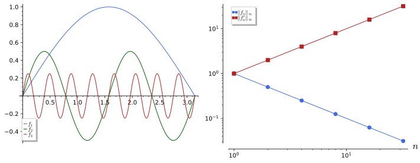
figures/fa2-unbounded-derivative.sage.
Definition 8 (Closed operator) A linear operator T : D(T) \subset X \to Y between Banach spaces, defined on a subspace D(T), is closed if its graph \{(x, Tx) : x \in D(T)\} is closed in X \times Y, that is, if x_n \to x and Tx_n \to y with x_n \in D(T) imply x \in D(T) and Tx = y Rainer Picard and Waurick (2020, Def. B.4.1). It is closable if the closure of its graph is the graph of an operator. On D(T) the graph norm \|x\|_T = \|x\| + \|Tx\| (or (\|x\|^2 + \|Tx\|^2)^{1/2} in Hilbert spaces) makes D(T) a Banach space exactly when T is closed Rainer Picard and Waurick (2020, Lemma B.4.2). The unbounded operators of Definition 29 are closed in the cases met in this chapter.
Veriphy. Pending.
Lean. Pending.
Sage. Pending.
Differentiation is the model closed operator, and it is the operator the figure shows to be unbounded. The first example proves that its graph is closed Waterstraat (2016, Ex. 1.2.16).
Example 46 (Differentiation on C[0, 1\rbrack) T = d/dx with D(T) = C^1[0, 1] \subset C[0, 1] is closed: if f_n \to f and f_n' \to g uniformly, then f_n(x) = f_n(0) + \int_0^xf_n' gives f(x) = f(0) + \int_0^xg, so f \in C^1 and f' = g. Its graph norm is the C^1 norm of Exercise 12, and T is unbounded, as the functions \sin(n^2x)/n of the figure show.
Veriphy. Pending.
Lean. Pending.
Sage. Pending.
Every bounded operator defined on the whole space is closed, but a densely defined operator can also fail to be closable. The second example gives the standard non-closable functional.
Example 47 (A non-closable operator) Let T : C[0, 1] \subset L^2(0, 1) \to \mathbb{C}, Tf = f(0). The functions f_n(x) = \max(0, 1 - nx) have \|f_n\|_2 = (3n)^{-1/2} \to 0 and Tf_n = 1, so (0, 1) lies in the closure of the graph together with (0, 0): the closure is not a graph, and T is not closable Rainer Picard and Waurick (2020, Lemma B.4.2(2)).
Veriphy. Pending.
Lean. Pending.
Sage. Pending.
The time derivative of Rainer Picard and Waurick (2020) is closed with a bounded inverse once the right weighted space is chosen. The third example describes it; it is the model of the evolution equations that the book solves by operator methods.
Example 48 (The weighted time derivative) For \rho > 0 let H_{\rho} = \{f : e^{-\rho t}f \in L^2(\mathbb{R})\} with \|f\|_\rho^2 = \int|f|^2e^{-2\rho t}dt Rainer Picard and Waurick (2020, Def. 1.1.1). The closure \partial_{0, \rho} of d/dt on compactly supported C^1 functions is a closed operator that is invertible, with (\partial_{0, \rho}^{-1}f)(t) = \int_{-\infty}^tf(s)\,ds and \|\partial_{0, \rho}^{-1} \| \leq 1/\rho Rainer Picard and Waurick (2020, Thm. 1.1.4). On L^2(\mathbb{R}) (\rho = 0) the derivative is not invertible.
Veriphy. Pending.
Lean. Pending.
Sage. Pending.
The graph norm turns a closed operator into a bounded one on a Banach space, and the first exercise proves this Rainer Picard and Waurick (2020, Lemma B.4.2(1)). It is the reason closed operators can be treated with the theorems of this part.
Exercise 50 (The graph norm) Show that (D(T), \|\cdot\|_T) is complete if and only if T is closed, and that T : (D(T), \|\cdot\|_T) \to Y is bounded with norm at most 1.
x \mapsto (x, Tx) is an isometry from (D(T), \|\cdot\|_T) onto the graph with the norm \|x\| + \|y\| of X \times Y, which is complete. So D(T) is complete if and only if the graph is complete, if and only if it is closed in X \times Y. Boundedness: \|Tx\| \leq \|x\| + \|Tx\| = \|x\|_T.
Veriphy. Pending.
Lean. Pending.
Sage. Pending.
A closable operator has a smallest closed extension, and the criterion of Rainer Picard and Waurick (2020, Lemma B.4.2(2)) decides closability. The second exercise applies it to differentiation on L^2.
Exercise 51 (Closability) Show that T is closable if and only if x_n \to 0 and Tx_n \to y imply y = 0. Apply this to T = d/dx on C^1_c(0, 1) \subset L^2(0, 1) by integrating against a test function \psi, and conclude that it is closable.
The closure of the graph is a graph if and only if it contains no (0, y) with y \neq 0, which is the stated condition. For d/dx: if f_n \to 0 and f_n' \to g in L^2, then for \psi \in C^\infty_c(0, 1), \int g\psi = \lim\int f_n'\psi = -\lim\int f_n\psi' = 0, so g = 0 by density of the test functions. The closure is the weak derivative on the Sobolev space of Section 1.9 with zero boundary values.
Veriphy. Pending.
Lean. Pending.
Sage. Pending.
The weighted inverse of the time derivative can be tested on explicit functions, and the bound 1/\rho follows from an integration by parts. The third exercise proves it and computes an example.
Exercise 52 (The bound \|\partial_{0, \rho}^{-1}\| \leq 1/\rho) For compactly supported C^1 functions u, show \operatorname{Re}\int\bar uu'\,e^{-2\rho t}dt = \rho\|u\|_\rho^2 by integrating by parts, and deduce \rho\|u\|_\rho \leq \|u'\|_\rho. For \rho = 1 and f = \mathbf{1}_{[0, a]}, compute u(t) = \int_{-\infty}^tf and the limit of \|u\|_\rho/\|f\|_\rho as a \to \infty.
\tfrac{d}{dt}|u|^2 = 2\operatorname{Re}\bar uu', so 2\operatorname{Re}\int\bar uu'e^{-2\rho t} = -\int|u|^2 \tfrac{d}{dt}e^{-2\rho t} = 2\rho\|u\|_\rho^2, and Cauchy-Schwarz gives \rho\|u\|_\rho^2 \leq \|u\|_\rho\|u'\|_\rho. For f = \mathbf{1}_{[0, a]} and \rho = 1: \|f\|_1^2 = \int_0^ae^{-2t}dt = \tfrac12(1 - e^{-2a}), and u = t on [0, a], u = a after, so \|u\|_1^2 = \int_0^at^2e^{-2t}dt + \tfrac{a^2}2e^{-2a} = \tfrac14 - e^{-2a}(\tfrac a2 + \tfrac14). The ratio tends to (\tfrac14/\tfrac12)^{1/2} = 1/\sqrt2 < 1, within the bound.
Veriphy. Pending.
Lean. Pending.
Sage. Pending.
Surjective bounded maps between Banach spaces are open, and the two other statements follow from this one. The theorem below collects the three; each fails without completeness, as the examples show.
Theorem 9 (Open mapping theorem) Let X, Y be Banach spaces and T \in \mathcal{B}(X, Y) surjective. Then T maps open sets to open sets; in particular T(B_X(0, 1)) \supset B_Y(0, \eta) for some \eta > 0 Arcozzi (2025, Thm. 3.15); Waterstraat (2016, Thm. 1.1.3). Inverse mapping theorem: a bounded bijection between Banach spaces has a bounded inverse Arcozzi (2025, Thm. 3.16). Closed graph theorem: a closed operator T : X \to Y defined on all of X is bounded Arcozzi (2025, Thm. 3.17).
Veriphy. Pending.
Lean. Pending.
Sage. Pending.
Two complete norms that are comparable are equivalent, which is the inverse mapping theorem applied to the identity. The first example gives it Arcozzi (2025, Exercise 3.17).
Example 49 (Comparable complete norms) If \|x\|_2 \leq \|x\|_1 on X and X is complete for both, the identity (X, \|\cdot\|_1) \to (X, \|\cdot\|_2) is a bounded bijection, so its inverse is bounded: \|x\|_1 \leq C\|x\|_2. On C[0, 1], \|\cdot\|_1 \leq\|\cdot\|_\infty but the norms are not equivalent (Example 2), which shows again that \|\cdot\|_1 is not complete there.
Veriphy. Pending.
Lean. Pending.
Sage. Pending.
Without completeness of the domain, a bounded bijection may have an unbounded inverse. The second example gives one on the finitely supported sequences.
Example 50 (An unbounded inverse) The identity (c_{00}, \|\cdot\|_1) \to (c_{00}, \|\cdot\|_\infty) is bounded with norm 1, since \|a\|_\infty \leq \|a\|_1, and bijective; its inverse is unbounded by Example 6. Similarly D = \operatorname{diag} (1, \tfrac12, \tfrac13, \dots) is a bounded injection of \ell^2 with dense range and unbounded inverse \operatorname{diag}(1, 2, 3, \dots); its range is not closed, so it is not onto.
Veriphy. Pending.
Lean. Pending.
Sage. Pending.
A symmetric operator defined on the whole Hilbert space is automatically bounded, a result physicists meet as the reason why the position and momentum operators cannot be everywhere defined. The third example derives it from the closed graph theorem.
Example 51 (The Hellinger-Toeplitz theorem) Let A : H \to H be linear with \langle Ax, y\rangle = \langle x, Ay\rangle for all x, y. If x_n \to x and Ax_n \to z, then \langle z, y\rangle = \lim\langle x_n, Ay\rangle = \langle x, Ay\rangle = \langle Ax, y\rangle, so z = Ax: A is closed and, by the theorem, bounded. Since x (Example 151) is unbounded, it cannot be defined on all of L^2(\mathbb{R}).
Veriphy. Pending.
Lean. Pending.
Sage. Pending.
The open mapping theorem is not quantitative, as the first exercise shows in the plane Arcozzi (2025, Exercise 3.16). The constant \eta depends on the operator and can be arbitrarily small.
Exercise 53 (No uniform constant) For \varepsilon > 0 find a linear bijection T of (\mathbb{R}^2, \|\cdot\|_2) with \|T\| = 1 whose image of the unit ball contains no ball B(0, \varepsilon') with \varepsilon' > \varepsilon, and compute \|T\| and \|T^{-1}\|.
T = \operatorname{diag}(1, \varepsilon) maps the unit disc onto the ellipse with semi-axes 1 and \varepsilon, which contains B(0, \varepsilon) but no larger centred ball; \|T\| = 1 and \|T^{-1}\| = 1/\varepsilon. In the theorem \eta = 1/\|T^{-1}\| for a bijection.
Veriphy. Pending.
Lean. Pending.
Sage. Pending.
The closed graph theorem follows from the inverse mapping theorem applied to the projection from the graph. The second exercise asks for this deduction Arcozzi (2025, proof of Thm. 3.17).
Exercise 54 (From inverse mapping to closed graph) Let T : X \to Y be closed and everywhere defined. Show that \pi_X : (x, Tx) \mapsto x is a bounded bijection from the graph (a Banach space) to X, and conclude that T = \pi_Y\circ\pi_X^{-1} is bounded.
The graph is closed in the Banach space X \times Y, hence complete. \pi_X is linear, bounded (\|x\| \leq \|x\| + \|Tx\|) and bijective since T is defined everywhere. By the inverse mapping theorem \pi_X^{-1} is bounded, and \pi_Y : (x, Tx) \mapsto Tx is bounded, so T is a composition of bounded maps.
Veriphy. Pending.
Lean. Pending.
Sage. Pending.
The inverse of a closed bijective operator is bounded even though the operator itself is not. The third exercise proves this and applies it to the derivative with an initial condition.
Exercise 55 (Inverses of closed operators) Let T : D(T) \subset X \to Y be closed and bijective onto Y. Show that T^{-1} : Y \to X is closed and everywhere defined, hence bounded. Apply this to T = d/dx on \{f \in C^1[0, 1] : f(0) = 0\}, find T^{-1} and its norm.
The graph of T^{-1} is the graph of T with the factors exchanged, hence closed, and T^{-1} is defined on all of Y; the closed graph theorem makes it bounded. For the derivative with f(0) = 0, T is closed (as in Example 46, the condition f(0) = 0 passes to limits) and bijective onto C[0, 1], with T^{-1} = V the Volterra operator of Example 27, of norm 1.
Veriphy. Pending.
Lean. Pending.
Sage. Pending.
Exercises
These exercises combine the four principles. Each uses completeness at an essential point, and each shows a different way in which pointwise information becomes uniform.
Weak Lipschitz bounds imply strong ones, by the uniform boundedness principle applied to difference quotients. The first integrative exercise proves it Arcozzi (2025, Exercise 3.12).
Exercise 56 (Weakly Lipschitz curves) Let f : [a, b] \to X with |\varphi(f(t + h)) - \varphi(f(t))| \leq C(\varphi)|h| for every \varphi \in X^*. Show that f is Lipschitz in norm, applying Exercise 49 to the set of difference quotients (f(t + h) - f(t))/h.
The set A = \{(f(t + h) - f(t))/h\} satisfies \sup_{a \in A}|\varphi(a)| \leq C(\varphi) for each \varphi, so by Exercise 49 (the principle applied in the complete space X^*) \sup_{a \in A}\|a\| = C < \infty, which is \|f(t + h) - f(t)\| \leq C|h|.
Veriphy. Pending.
Lean. Pending.
Sage. Pending.
The closed graph theorem shows that the norm of a Banach space in which the coordinate functionals are continuous is essentially unique. The second integrative exercise proves it for sequence spaces.
Exercise 57 (Inclusions of sequence spaces are bounded) Let E, F be Banach spaces of sequences on which each coordinate a \mapsto a_n is continuous, with E \subset F. Show that the inclusion E \to F has a closed graph and is therefore bounded. Deduce \|a\|_q \leq C\|a\|_p for p < q without computing C, and compare with Exercise 13.
If a^{(k)} \to a in E and a^{(k)} \to b in F, then coordinatewise a^{(k)}_n \to a_n and \to b_n, so a = b: the graph is closed. The closed graph theorem gives boundedness. For \ell^p \subset \ell^q this gives some C; the direct computation shows C = 1.
Veriphy. Pending.
Lean. Pending.
Sage. Pending.
The partial sums of the Fourier series at 0 can be made large by a continuous function close to the sign of the Dirichlet kernel. The third integrative exercise constructs such functions and shows that the Lebesgue constant is the exact norm.
Exercise 58 (Large Fourier partial sums) For N = 8, let g = \operatorname{sgn}D_N, and let g_\varepsilon be a continuous function with \|g_\varepsilon \|_\infty = 1 that agrees with g except within \varepsilon of the zeros of D_N. Estimate |S_Ng_\varepsilon(0) - L_N| in terms of \varepsilon. Explain why this shows \|\Lambda_N\| = L_N.
S_Ng(0) = \tfrac1{2\pi}\int D_Ng = \tfrac1{2\pi}\int|D_N| = L_N, and |S_Ng_\varepsilon(0) - L_N| \leq \tfrac1{2\pi}(2N + 1)\cdot 2\cdot 2\varepsilon\cdot 2N, which tends to 0 with \varepsilon. Since |\Lambda_Nf| \leq L_N\|f\|_\infty for all f, the norm is exactly L_N; the principle then yields the divergent Fourier series of Example 43.
Veriphy. Pending.
Lean. Pending.
Sage. Pending.
Weak topologies and reflexivity
In infinite dimensions the closed unit ball is never compact in norm, so bounded sequences need not have convergent subsequences. Weakening the notion of convergence restores compactness: a sequence converges weakly when every continuous functional converges along it. This part defines weak and weak-* convergence on the examples of oscillating, travelling and concentrating bumps, proves that the dual unit ball is weak-* compact (the Banach-Alaoglu theorem), and characterises the reflexive spaces, in which bounded sequences always have weakly convergent subsequences. The exposition follows Ramesh (2020) and Arcozzi (2025, sec. 3.4).
For more on this topic, see Borodzik et al. (2019, Ch. 4) and Gasiński and Papageorgiou (2014, Ch. 4).
Weak and weak-* convergence
A sequence of functions can lose its norm to oscillation, escape to infinity or concentrate at a point, and in each case it converges to zero in a weaker sense. The figure shows the three mechanisms, and the definitions below make “weaker” precise.
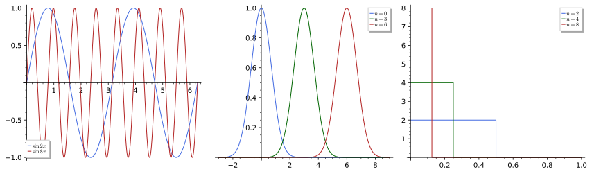
figures/fa2-weak-convergence.sage.
Definition 9 (Weak convergence) A sequence (x_n) in a normed space X converges weakly to x, written x_n \rightharpoonup x, if \varphi(x_n) \to \varphi(x) for every \varphi \in X^*. The weak topology \sigma(X, X^*) is the coarsest topology in which every \varphi \in X^* is continuous; it is Hausdorff by Theorem 6, and its convergent sequences are the weakly convergent ones Ramesh (2020, Def. 2.7, Prop. 2.8, Thm. 2.9). Norm convergence implies weak convergence; a weakly convergent sequence in a Banach space is bounded, and \|x\| \leq \liminf\|x_n\| Arcozzi (2025, Prop. 3.4); Ramesh (2020, Prop. 2.17). In a Hilbert space, x_n \rightharpoonup x means \langle y, x_n\rangle \to \langle y, x\rangle for every y.
Veriphy. Pending.
Lean. Pending.
Sage. Pending.
Every orthonormal sequence in a Hilbert space converges weakly to zero, which is Bessel’s inequality in disguise. The first example records it Arcozzi (2025, eq. 3.4.2).
Example 52 (Orthonormal sequences) If (e_n) is orthonormal in a Hilbert space and y \in H, Bessel’s inequality (Definition 13) gives \sum_n|\langle y, e_n\rangle|^2 \leq \|y\|^2, so \langle y, e_n\rangle \to 0: e_n \rightharpoonup 0. Since \|e_n\| = 1, the inequality \|0\| \leq \liminf\|e_n\| is strict, and no subsequence converges in norm, as \|e_m - e_n\| = \sqrt2.
Veriphy. Pending.
Lean. Pending.
Sage. Pending.
Oscillating functions are the physical instance of the previous example, and the figure shows them. The second example computes their weak limit.
Example 53 (Oscillations) In L^2(0, 2\pi), \sin(nx) = \sqrt\pi\,\cdot (an orthonormal vector), so \sin(nx) \rightharpoonup 0, and for g(x) = x the pairing is \int_0^{2\pi}x\sin(nx)\,dx = -2\pi/n (integrate by parts). In contrast \sin^2(nx) = \tfrac12 - \tfrac12\cos(2nx) \rightharpoonup \tfrac12, not 0^2: weak limits do not commute with non-linear functions.
Veriphy. Pending.
Lean. Pending.
Sage. Pending.
Weak convergence in \ell^p depends on p, and at p = 1 it coincides with norm convergence for sequences. The third example compares the unit vectors in the different \ell^p.
Example 54 (Unit vectors in \ell^p) For 1 < p < \infty, (\ell^p)^* = \ell^q (Theorem 5) and y(\delta^{(n)}) = y_n \to 0 for y \in \ell^q, so \delta^{(n)} \rightharpoonup 0. In \ell^1 the functional y = (1, 1, \dots) \in \ell^\infty gives y(\delta^{(n)}) = 1, so \delta^{(n)} \not\rightharpoonup 0; by Schur’s lemma weakly convergent sequences in \ell^1 converge in norm Ramesh (2020, Thm. 2.31). In c_0, \delta^{(n)} \rightharpoonup 0 again, since c_0^* = \ell^1.
Veriphy. Pending.
Lean. Pending.
Sage. Pending.
A bump that slides off to infinity keeps its shape and norm but disappears weakly. The fourth example treats the travelling bump of the figure.
Example 55 (The travelling bump) Let f \in L^2(\mathbb{R}) and f_n(x) = f(x - n). For g with compact support, \int gf_n = 0 once the supports are disjoint; for general g \in L^2, approximate it by such g and use \|f_n\|_2 = \|f\|_2. Hence f_n \rightharpoonup 0 in L^2(\mathbb{R}). In L^1(\mathbb{R}) the same sequence does not converge weakly: the pairing with g = 1 \in L^\infty is \int f for every n.
Veriphy. Pending.
Lean. Pending.
Sage. Pending.
When the norms converge as well, weak convergence becomes norm convergence in a Hilbert space. The first exercise proves it Ramesh (2020, Exercise 2.18).
Exercise 59 (Weak convergence with norms) In a Hilbert space let x_n \rightharpoonup x and \|x_n\| \to \|x\|. Expand \|x_n - x\|^2 and show x_n \to x. Find a sequence in \ell^2 with x_n \rightharpoonup x and \|x_n\| \to c > \|x\|.
\|x_n - x\|^2 = \|x_n\|^2 - 2\operatorname{Re}\langle x, x_n\rangle + \|x\|^2 \to \|x\|^2 - 2\|x\|^2 + \|x\|^2 = 0. The sequence x_n = \delta^{(1)} + \delta^{(n)} converges weakly to \delta^{(1)} with \|x_n\| = \sqrt2 > 1.
Veriphy. Pending.
Lean. Pending.
Sage. Pending.
In the sequence spaces with 1 < p < \infty weak convergence is easy to test. The second exercise proves the criterion Ramesh (2020, Exercise 15).
Exercise 60 (Weak convergence in \ell^p) Let 1 < p < \infty. Show that a^{(k)} \rightharpoonup a in \ell^p if and only if (a^{(k)}) is bounded and a^{(k)}_n \to a_n for every n. Show that the condition fails in \ell^1 with a^{(k)} = \delta^{(k)}.
Weak convergence implies boundedness (Definition 9) and, testing on \delta^{(n)} \in \ell^q, coordinatewise convergence. Conversely, with \|a^{(k)} - a\|_p \leq C, for y \in \ell^q split \sum y_n(a^{(k)}_n - a_n) at N: the tail is at most C(\sum_{n > N}|y_n|^q)^{1/q}, small for large N since q < \infty, and the head tends to 0. In \ell^1 the tail argument fails because q = \infty: \delta^{(k)} is bounded and tends to 0 coordinatewise, but not weakly (Example 54).
Veriphy. Pending.
Lean. Pending.
Sage. Pending.
A weakly convergent sequence has convex combinations that converge in norm, by the Hahn-Banach separation theorem. The third exercise checks this for the unit vectors Ramesh (2020, Cor. 2.25).
Exercise 61 (Averages of unit vectors) In \ell^p, 1 < p < \infty, compute \|\tfrac1N\sum_{n \leq N}\delta^{(n)}\|_p and show that the averages converge to 0 in norm although \delta^{(n)} does not. What happens in \ell^1?
\|\tfrac1N\sum_{n \leq N}\delta^{(n)}\|_p = \tfrac1N N^{1/p} = N^{1/p - 1} \to 0 for p > 1. In \ell^1 the norm is 1 for every N, consistent with \delta^{(n)} \not\rightharpoonup 0 there: by Mazur’s lemma, a sequence whose convex combinations stay away from 0 cannot converge weakly to 0.
The norms of the averages, computed in Sage:
for p in (1, 1.5, 2, 4):
print("p = %3s:" % p, [round(vector([1.0 / N] * N).norm(p), 5) for N in (1, 10, 100, 1000)], " N^(1/p - 1) at N = 1000:", round(1000^(1 / p - 1), 5))Output:
p = 1: [1.0, 1.0, 1.0, 1.0] N^(1/p - 1) at N = 1000: 1.0
p = 1.50000000000000: [1.0, 0.46416, 0.21544, 0.1] N^(1/p - 1) at N = 1000: 0.1
p = 2: [1.0, 0.31623, 0.1, 0.03162] N^(1/p - 1) at N = 1000: 0.03162
p = 4: [1.0, 0.17783, 0.03162, 0.00562] N^(1/p - 1) at N = 1000: 0.00562Veriphy. Pending.
Lean. Pending.
Sage. Pending.
The dual of a space carries a second, still weaker, notion of convergence, in which functionals converge at every point of the original space. The definition below introduces it; the Banach-Alaoglu theorem shows that it has the compactness that norm convergence lacks.
Definition 10 (Weak-* convergence) A sequence (\varphi_n) in the dual X^* converges weak-* to \varphi, written \varphi_n \xrightarrow{w^*}\varphi, if \varphi_n(x) \to \varphi(x) for every x \in X Ramesh (2020, Def. 3.1, Prop. 3.3). The weak-* topology \sigma(X^*, X) is the coarsest topology on X^* making every evaluation \varphi \mapsto \varphi(x) continuous; it is Hausdorff and coarser than the weak topology of X^*, with which it coincides when X is reflexive Ramesh (2020, Rem. 3.2). If X is a Banach space, a weak-* convergent sequence is bounded and \|\varphi\| \leq \liminf\|\varphi_n\| Arcozzi (2025, Prop. 3.5).
Veriphy. Pending.
Lean. Pending.
Sage. Pending.
Point evaluations on C[0, 1] converge weak-* when the points converge, but never in norm. The first example shows this and explains why weak-* convergence is the natural notion for measures.
Example 56 (Moving point masses) In C[0, 1]^*, \delta_{1/n}(f) = f(1/n) \to f(0) for every continuous f, so \delta_{1/n} \xrightarrow{w^*}\delta_0. But \|\delta_{1/n} - \delta_0\| = 2 (Example 29), so there is no norm convergence. Measures that converge “physically” converge weak-*.
Veriphy. Pending.
Lean. Pending.
Sage. Pending.
The concentrating bumps of the figure are functions, but as functionals on C[0, 1] they converge to the Dirac functional. The second example proves it.
Example 57 (Approximate identities) \varphi_n(f) = n\int_0^{1/n}f(x)\,dx has \|\varphi_n\| = \|n\mathbf{1}_{[0, 1/n]}\|_1 = 1, and |\varphi_n(f) - f(0)| \leq \max_{[0, 1/n]}|f - f(0)| \to 0 by continuity: \varphi_n \xrightarrow{w^*}\delta_0. The limit is not given by an L^1 function, so the sequence has no weak limit in L^1 itself; this is the origin of the Dirac delta as a limit of functions (Definition 24 of Differential equations).
Veriphy. Pending.
Lean. Pending.
Sage. Pending.
On \ell^1 = c_0^* the two notions of convergence differ, as the unit vectors show. The third example compares them Ramesh (2020, Exercise 5).
Example 58 (Weak-* but not weak) Regard \ell^1 as c_0^*. For a \in c_0, \delta^{(n)}(a) = a_n \to 0, so \delta^{(n)} \xrightarrow{w^*}0. Regard \ell^1 as a Banach space with dual \ell^\infty: then y = (1, 1, \dots) gives y(\delta^{(n)}) = 1, so \delta^{(n)} does not converge weakly. The difference is exactly the element (1, 1, \dots) \in \ell^\infty \setminus c_0.
Veriphy. Pending.
Lean. Pending.
Sage. Pending.
Weak-* convergence can be tested on a dense set if the sequence is bounded. The first exercise proves this, and it is the criterion used in practice Ramesh (2020, Exercise 16).
Exercise 62 (Testing on a dense set) Let X be a Banach space and (\varphi_n) in X^*. Show that \varphi_n \xrightarrow{w^*}\varphi if and only if (\varphi_n) is bounded and \varphi_n(x) \to \varphi(x) for x in a dense subset D.
Necessity: boundedness by the uniform boundedness principle (Theorem 8). Sufficiency: let \|\varphi_n\|, \|\varphi\| \leq C, x \in X, and d \in D with \|x - d\| < \varepsilon. Then |\varphi_n(x) - \varphi(x)| \leq |\varphi_n(x - d)| + |\varphi_n(d) - \varphi(d)| + |\varphi(d - x)| \leq 2C\varepsilon + |\varphi_n(d) - \varphi(d)|, which is less than 3C\varepsilon for large n.
Veriphy. Pending.
Lean. Pending.
Sage. Pending.
Riemann sums are functionals on C[0, 1], and they converge weak-* to the integral. The second exercise proves this with the criterion of the first and computes the rate for a polynomial.
Exercise 63 (Riemann sums converge weak-*) Let \mu_n(f) = \tfrac1n\sum_{k = 1}^nf(k/n). Show \|\mu_n\| = 1 and \mu_n \xrightarrow{w^*}\mu with \mu(f) = \int_0^1 f, testing on polynomials. Compute \mu_n(x^2) - \tfrac13 exactly.
|\mu_n(f)| \leq \|f\|_\infty with equality at f = 1. For f = x^m, \mu_n(f) is a Riemann sum of x^m, which converges to \tfrac1{m + 1}; polynomials are dense (Theorem 4), so Exercise 62 applies. For x^2: \tfrac1{n^3}\sum_kk^2 = \tfrac{(n + 1)(2n + 1)}{6n^2} = \tfrac13 + \tfrac1{2n} + \tfrac1{6n^2}.
Sage computes the errors of the Riemann sums exactly for several monomials and numerically for e^x:
n, k = var('n k'); assume(n > 0)
e2 = (sum(k^2, k, 1, n) / n^3 - 1 / 3).simplify_full()
print("mu_n(x^2) - 1/3 =", e2.expand())
for m in (1, 2, 3, 5):
print("x^%d: mu_n(x^%d) - 1/(%d+1) =" % (m, m, m), (sum(k^m, k, 1, n) / n^(m + 1) - 1 / (m + 1)).simplify_full().expand())
print("non-polynomial test f = exp(x), n = 10, 100, 1000:", [(sum(exp(QQ(j) / nv) for j in range(1, nv + 1)) / nv - (e - 1)).n(digits=5) for nv in (10, 100, 1000)])Output:
mu_n(x^2) - 1/3 = 1/2/n + 1/6/n^2
x^1: mu_n(x^1) - 1/(1+1) = 1/2/n
x^2: mu_n(x^2) - 1/(2+1) = 1/2/n + 1/6/n^2
x^3: mu_n(x^3) - 1/(3+1) = 1/2/n + 1/4/n^2
x^5: mu_n(x^5) - 1/(5+1) = 1/2/n + 5/12/n^2 - 1/12/n^4
non-polynomial test f = exp(x), n = 10, 100, 1000: [0.087350, 0.0086112, 0.00087474]Veriphy. Pending.
Lean. Pending.
Sage. Pending.
Weak-* convergence and norm convergence combine to give convergence of the pairing. The third exercise proves this Ramesh (2020, Prop. 3.5(3) and Exercise 8).
Exercise 64 (Pairings of convergent sequences) Let X be a Banach space, \varphi_n \xrightarrow{w^*}\varphi in X^* and x_n \to x in X. Show that \varphi_n(x_n) \to \varphi(x). Show by an example in \ell^2 that the conclusion fails if x_n only converges weakly.
|\varphi_n(x_n) - \varphi(x)| \leq \|\varphi_n\|\,\|x_n - x\| + |\varphi_n(x) - \varphi(x)|; the first term tends to 0 because \|\varphi_n\| is bounded, the second by hypothesis. In \ell^2 = (\ell^2)^* take \varphi_n = x_n = \delta^{(n)}: both tend to 0 weakly, but \varphi_n(x_n) = 1.
Veriphy. Pending.
Lean. Pending.
Sage. Pending.
The Banach-Alaoglu theorem
The closed unit ball of an infinite-dimensional space is not compact in norm, but the unit ball of a dual space is compact in the weak-* topology. The theorem below states this; its separable, sequential form is proved by the diagonal argument of the Arzelà-Ascoli theorem and is the version used in analysis.
Theorem 10 (Banach-Alaoglu theorem) For every normed space X, the closed unit ball B_{X^*} = \{\varphi \in X^* : \|\varphi\| \leq 1\} is compact in the weak-* topology Arcozzi (2025, Thm. 3.10); Ramesh (2020, Thm. 4.1). If X is separable, every bounded sequence in X^* has a weak-* convergent subsequence Arcozzi (2025, Thm. 3.11). Consequently every Banach space is isometric to a closed subspace of C(K) for the compact space K = (B_{X^*}, \sigma(X^*, X)) Ramesh (2020, Thm. 4.2).
Veriphy. Pending.
Lean. Pending.
Sage. Pending.
Bounded sequences in \ell^\infty = (\ell^1)^* have weak-* convergent subsequences, since \ell^1 is separable. The first example finds the limit of a bounded sequence that has no norm limit.
Example 59 (Truncated constants in \ell^\infty) s^{(N)} = (1, \dots, 1, 0, \dots) (N ones) has \|s^{(N)}\|_\infty = 1 and s^{(N)}(a) = \sum_{n \leq N}a_n \to \sum_na_n for every a \in \ell^1, so s^{(N)} \xrightarrow{w^*}(1, 1, \dots). It has no norm limit, since \|s^{(N)} - s^{(M)}\|_\infty = 1, and no limit in c_0 at all.
Veriphy. Pending.
Lean. Pending.
Sage. Pending.
Probability measures on a compact interval form a weak-* compact set, by the theorem. The second example applies this to the empirical measures of a sequence of points.
Example 60 (Limits of empirical measures) For points x_1, x_2, \dots \in [0, 1], the empirical measures \mu_n = \tfrac1n\sum_{k \leq n}\delta_{x_k} have norm 1 in C[0, 1]^*, so a subsequence converges weak-* to a positive functional of norm 1, a probability measure. For x_k = \{k\sqrt2\} (fractional part), Weyl’s equidistribution theorem identifies the limit as Lebesgue measure for the whole sequence; for x_k = k/n in the n-th block one obtains the Riemann sums of Exercise 63.
Veriphy. Pending.
Lean. Pending.
Sage. Pending.
Weak-* compactness of B_{X^*} does not make the unit ball of X weakly compact, and \ell^1 with its two dualities shows the difference. The third example explains it Ramesh (2020, Rem. 2.32).
Example 61 (The unit ball of \ell^1) As the dual of c_0, B_{\ell^1} is weak-* compact, and \delta^{(n)} \xrightarrow{w^*}0. As a space in its own right, B_{\ell^1} is not weakly compact: by Schur’s lemma a weakly convergent subsequence of \delta^{(n)} would converge in norm, but \|\delta^{(m)} - \delta^{(n)}\|_1 = 2. The ball is weakly compact exactly in reflexive spaces (Definition 11).
Veriphy. Pending.
Lean. Pending.
Sage. Pending.
The sequential form of the theorem is proved by a diagonal argument on a countable dense set. The first exercise asks for the steps Arcozzi (2025, Thm. 3.11).
Exercise 65 (The diagonal argument) Let X be separable with dense sequence (z_j) and \|\varphi_n\| \leq 1. Choose nested subsequences along which \varphi_n(z_j) converges for j = 1, 2, \dots, take the diagonal subsequence, and show that it converges at every z_j, then at every x by Exercise 62, to a functional of norm \leq 1.
|\varphi_n(z_1)| \leq \|z_1\|, so a subsequence makes \varphi_n(z_1) converge (Bolzano-Weierstrass); refine it for z_2, and so on. The k-th element of the k-th subsequence defines a diagonal subsequence that is eventually a subsequence of each, so it converges at every z_j. By Exercise 62 it converges at every x, and the limit \varphi(x) = \lim\varphi_{n_k}(x) is linear with |\varphi(x)| \leq \|x\|.
Veriphy. Pending.
Lean. Pending.
Sage. Pending.
The ball of c_0 is not weakly compact, which the second exercise shows with the same truncated constants as in the first example. The weak limit they would need lies outside c_0.
Exercise 66 (The unit ball of c_0) Show that s^{(N)} = (1, \dots, 1, 0, \dots) has no weakly convergent subsequence in c_0: a weak limit s would have s_n = \lim_N s^{(N)}_n = 1 for all n. Conclude that B_{c_0} is not weakly compact.
The coordinate functionals \delta^{(n)} \in \ell^1 = c_0^* give s_n = \lim_Ns^{(N)}_n = 1 for any weak limit s of a subsequence, so s = (1, 1, \dots) \notin c_0. Weak compactness of B_{c_0} would give a weakly convergent subsequence by the Eberlein-Šmulian theorem; even without it, a weakly compact set would contain a weak cluster point of (s^{(N)}), which, by the same coordinate argument, would have to be (1, 1, \dots).
Veriphy. Pending.
Lean. Pending.
Sage. Pending.
Weak compactness and weak lower semicontinuity of the norm give minimisers. The third exercise finds the vector of smallest norm in a closed hyperplane of \ell^2 by this route and then explicitly.
Exercise 67 (A minimiser in \ell^2) Let A = \{x \in \ell^2 : \sum_nx_n/n = 1\}. Show that a minimising sequence for \|x\|_2 on A has a weakly convergent subsequence whose limit lies in A and minimises the norm. Find the minimiser and the minimum using Cauchy-Schwarz.
A minimising sequence is bounded; by Theorem 10 (for \ell^2 = (\ell^2)^*, separable) a subsequence converges weakly to some x. The functional y = (1/n) \in \ell^2 keeps \langle y, x\rangle = 1, so x \in A, and \|x\| \leq \liminf\|x_n\|, so x is a minimiser. Cauchy-Schwarz gives 1 = \langle y, x\rangle \leq \|y\|\,\|x\|, so \|x\| \geq 1/\|y\| = \sqrt6/\pi, with equality for x = y/\|y\|^2, that is x_n = \tfrac6{\pi^2n}.
Truncating to N coordinates, Sage shows the minimum and the first coordinate of the minimiser converging to the limits:
for N in (10, 100, 1000, 10000):
s = sum(1 / RDF(n)^2 for n in range(1, N + 1))
print("N = %5d: minimum %.6f, x_1 = %.6f" % (N, 1 / sqrt(s), 1 / s))
print("limit: sqrt(6)/pi = %.6f, 6/pi^2 = %.6f" % ((sqrt(6) / pi).n(), (6 / pi^2).n()))Output:
N = 10: minimum 0.803280, x_1 = 0.645258
N = 100: minimum 0.782066, x_1 = 0.611627
N = 1000: minimum 0.779934, x_1 = 0.608297
N = 10000: minimum 0.779721, x_1 = 0.607964
limit: sqrt(6)/pi = 0.779697, 6/pi^2 = 0.607927Veriphy. Pending.
Lean. Pending.
Sage. Pending.
Reflexive spaces
A Banach space is reflexive when it is its own bidual through the canonical embedding. The figure shows what can go wrong in a non-reflexive space: a functional whose norm is approached but never attained on the unit ball.
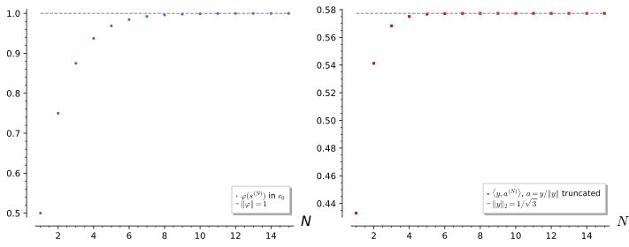
figures/fa2-norm-attaining.sage.
Definition 11 (Reflexive space) A Banach space X is reflexive if the canonical isometry x \mapsto \hat x of X into X^{**} (Theorem 6) is onto Arcozzi (2025, sec. 3.3); Ramesh (2020, sec. 3). Equivalently: the closed unit ball of X is weakly compact Ramesh (2020, Thm. 5.2); or every \varphi \in X^* attains its norm on the unit sphere (James’s theorem) Ramesh (2020, Thm. 5.7). Closed subspaces of reflexive spaces are reflexive, and X is reflexive if and only if X^* is Ramesh (2020, Cor. 5.3, Thm. 5.4). In a reflexive space every bounded sequence has a weakly convergent subsequence.
Veriphy. Pending.
Lean. Pending.
Sage. Pending.
Finite-dimensional spaces and Hilbert spaces are reflexive, the second by applying the Riesz representation twice. The first example records both.
Example 62 (Hilbert spaces) If \dim X < \infty then \dim X^{**} = \dim X and the injective map x \mapsto \hat x is onto. For a Hilbert space, every \Phi \in H^{**} is, by Theorem 11 applied in the Hilbert space H^*, of the form \Phi(\varphi) = \langle\varphi_z, \varphi\rangle_{H^*} for some \varphi_z = \langle z, \cdot\rangle; unwinding the inner product of H^* gives \Phi(\varphi) = \varphi(z) = \hat z(\varphi).
Veriphy. Pending.
Lean. Pending.
Sage. Pending.
The sequence spaces \ell^p with 1 < p < \infty are reflexive by the duality theorem applied twice. The second example gives the computation and its analogue for L^p.
Example 63 (\ell^p and L^p for 1 < p < \infty) (\ell^p)^* = \ell^q and (\ell^q)^* = \ell^p (Theorem 5), and the composite identification \ell^p \to (\ell^p)^{**} sends a to the functional y \mapsto \sum_ny_na_n, which is \hat a. So \ell^p is reflexive, and similarly L^p(X, \mu) for 1 < p < \infty. Bounded sequences in these spaces have weakly convergent subsequences, as in Exercise 67.
Veriphy. Pending.
Lean. Pending.
Sage. Pending.
The spaces c_0, \ell^1, \ell^\infty, C[0, 1] and L^1 are not reflexive, and the figure shows the failure of James’s criterion on c_0. The third example lists the reasons.
Example 64 (Non-reflexive spaces) c_0^{**} = \ell^\infty \neq c_0 (Example 32). \ell^1 is separable but its dual \ell^\infty is not, so (\ell^1)^{**} = (\ell^\infty)^* is not separable (Exercise 33) and cannot be \ell^1; then \ell^\infty = (\ell^1)^* is not reflexive either. C[0, 1] and L^1(0, 1) contain closed subspaces isometric to c_0 and \ell^1, and closed subspaces of reflexive spaces are reflexive.
Veriphy. Pending.
Lean. Pending.
Sage. Pending.
The functional of the figure shows James’s theorem at work. The fourth example proves that it does not attain its norm.
Example 65 (A functional on c_0 that does not attain its norm) \varphi(a) = \sum_n2^{-n}a_n has |\varphi(a)| \leq \|a\|_\infty\sum_n2^{-n} = \|a\|_\infty and \varphi(s^{(N)}) = 1 - 2^{-N}, so \|\varphi\| = 1. If \|a\|_\infty \leq 1 and \varphi(a) = 1, then \sum 2^{-n}(1 - \operatorname{Re} a_n) = 0 with non-negative terms, so a_n = 1 for all n, and a \notin c_0.
Veriphy. Pending.
Lean. Pending.
Sage. Pending.
The first exercise is the continuous analogue of the last example: a functional on C[0, 1] whose norm is approached by continuous functions but attained only by a discontinuous one. James’s theorem then shows that C[0, 1] is not reflexive.
Exercise 68 (A functional on C[0, 1\rbrack) Show that \varphi(f) = \int_0^{1/2}f - \int_{1/2}^1f has norm 1 on C[0, 1] and that |\varphi(f)| < 1 for every f with \|f\|_\infty \leq 1. Conclude that C[0, 1] is not reflexive.
|\varphi(f)| \leq \|f\|_\infty, and continuous f equal to 1 on [0, \tfrac12 - \tfrac1n], to -1 on [\tfrac12 + \tfrac1n, 1] and linear between give \varphi(f) = 1 - \tfrac1{2n}, so \|\varphi\| = 1. If \|f\|_\infty \leq 1 and |\varphi(f)| = 1, then (after a phase) \int_0^{1/2}(1 - \operatorname{Re}f) + \int_{1/2}^1(1 + \operatorname{Re}f) = 0, forcing f = 1 on [0, \tfrac12) and f = -1 on (\tfrac12, 1], which is not continuous. By James’s theorem C[0, 1] is not reflexive.
Veriphy. Pending.
Lean. Pending.
Sage. Pending.
In a reflexive space the distance to a closed convex set is attained, and in c_0 it need not be. The second exercise compares the two Ramesh (2020, Cor. 5.5).
Exercise 69 (Nearest points) Let A = \{a : \varphi(a) = 1\} with \varphi as in Example 65. Show that \inf_{a \in A}\|a\|_\infty = 1 in c_0 but that no a \in A has norm 1. Show that in a reflexive space every non-empty closed convex set has an element of minimal norm.
1 = |\varphi(a)| \leq \|a\|_\infty on A, and s^{(N)}/(1 - 2^{-N}) \in A has norm 1/(1 - 2^{-N}) \to 1. A minimiser of norm 1 would attain \|\varphi\|, which is impossible. In a reflexive space a minimising sequence is bounded, a subsequence converges weakly; a closed convex set is weakly closed Ramesh (2020, Prop. 2.24), so the limit lies in the set, and the norm is weakly lower semicontinuous.
Veriphy. Pending.
Lean. Pending.
Sage. Pending.
Reflexivity passes to closed subspaces and to duals, which the third exercise proves from the definition and the weak compactness criterion Ramesh (2020, Cor. 5.3, Thm. 5.4).
Exercise 70 (Reflexivity of duals) Show that if X is reflexive then X^* is reflexive, by identifying (X^*)^{**} = (X^{**})^* with X^*. Deduce that \ell^1 is not reflexive from the fact that c_0 is not, using c_0^* = \ell^1.
If J : X \to X^{**} is onto, every \Psi \in X^{***} defines \psi = \Psi\circ J \in X^*, and for \Phi = Jx \in X^{**}, \hat\psi(\Phi) = \Phi(\psi) = \psi(x) = \Psi(Jx) = \Psi(\Phi), so \Psi = \hat\psi and X^* is reflexive. Conversely, if X^* is reflexive then so is X^{**}, and X, a closed subspace of X^{**}, is reflexive. If \ell^1 = c_0^* were reflexive, c_0 would be, contradicting Example 64.
Veriphy. Pending.
Lean. Pending.
Sage. Pending.
Exercises
These exercises combine weak convergence, the Banach-Alaoglu theorem and reflexivity with the operators and duals of the earlier parts. They prepare the compact operators of Section 1.7, which are characterised by what they do to weakly convergent sequences.
A compact operator turns weak convergence into norm convergence, which is the mechanism behind the discreteness of spectra. The first integrative exercise proves it for a diagonal operator and in general Arcozzi (2025, Thm. 4.1).
Exercise 71 (Compact operators improve convergence) Show that D = \operatorname{diag}(1, \tfrac12, \tfrac13, \dots) on \ell^2 maps every weakly convergent sequence to a norm convergent one, by splitting D into a finite-rank part and a part of norm \leq 1/N. Show that the identity does not have this property.
Let x_k \rightharpoonup x, with \|x_k - x\| \leq C. Write D = D_N + R_N, with D_N the first N diagonal entries and \|R_N\| \leq \tfrac1{N + 1}. D_N(x_k - x) involves finitely many coordinates, each tending to 0, so it tends to 0 in norm, while \|R_N(x_k - x)\| \leq C/(N + 1). Hence \limsup\|D(x_k - x)\| \leq C/(N + 1) for every N. The identity maps \delta^{(k)} \rightharpoonup 0 to itself, which does not converge in norm.
Veriphy. Pending.
Lean. Pending.
Sage. Pending.
Weak limits of products are not products of weak limits, and this is the source of effective coefficients in homogenisation. The second integrative exercise computes the weak limits of \sin^2(nx) and of \sin(nx)\cos(nx).
Exercise 72 (Weak limits of products) In L^2(0, 2\pi) find the weak limits of \sin(nx), \sin^2(nx) and \sin(nx)\cos(nx), and of \sin^2(nx) paired with g(x) = x exactly. Show that f_n \rightharpoonup f and g_n \rightharpoonup g do not imply f_ng_n \rightharpoonup fg.
\sin(nx) \rightharpoonup 0; \sin^2(nx) = \tfrac12 - \tfrac12\cos(2nx) \rightharpoonup \tfrac12; \sin(nx)\cos(nx) = \tfrac12\sin(2nx) \rightharpoonup 0. Exactly, \int_0^{2\pi}x\sin^2(nx)\,dx = \pi^2 - \tfrac12\int_0^{2\pi}x\cos(2nx)\,dx = \pi^2, since the last integral vanishes. With f_n = g_n = \sin(nx) \rightharpoonup 0, f_ng_n \rightharpoonup \tfrac12 \neq 0.
Sage evaluates the pairings with several test functions for n = 1, 10, 100:
x = var('x'); n = var('n', domain='integer'); assume(n > 0)
print("int x sin^2(nx) =", integrate(x * sin(n * x)^2, x, 0, 2 * pi).simplify_full(), " (= pi^2 = (1/2) int x)")
for g in (x, x^2, exp(-x)):
vals = [integrate(g * sin(m * x), x, 0, 2 * pi).n(digits=5) for m in (1, 10, 100)]
vals2 = [(integrate(g * sin(m * x)^2, x, 0, 2 * pi) - integrate(g / 2, x, 0, 2 * pi)).n(digits=5) for m in (1, 10, 100)]
vals3 = [integrate(g * sin(m * x) * cos(m * x), x, 0, 2 * pi).n(digits=5) for m in (1, 10, 100)]
print("g = %s: <g, sin nx> %s; <g, sin^2 nx - 1/2> %s; <g, sin nx cos nx> %s (n = 1, 10, 100)" % (g, vals, vals2, vals3))Output:
int x sin^2(nx) = pi^2 (= pi^2 = (1/2) int x)
g = x: <g, sin nx> [-6.2832, -0.62832, -0.062832]; <g, sin^2 nx - 1/2> [0.00000, 0.00000, 0.00000]; <g, sin nx cos nx> [-1.5708, -0.15708, -0.015708] (n = 1, 10, 100)
g = x^2: <g, sin nx> [-39.478, -3.9478, -0.39478]; <g, sin^2 nx - 1/2> [-1.5708, -0.015708, -0.00015708]; <g, sin nx cos nx> [-9.8696, -0.98696, -0.098696] (n = 1, 10, 100)
g = e^(-x): <g, sin nx> [0.49907, 0.098825, 0.0099803]; <g, sin^2 nx - 1/2> [-0.099813, -0.0012446, -0.000012476]; <g, sin nx cos nx> [0.19963, 0.024891, 0.0024953] (n = 1, 10, 100)Veriphy. Pending.
Lean. Pending.
Sage. Pending.
Every Banach space is a space of continuous functions in disguise, by the Banach-Alaoglu theorem. The third integrative exercise proves this embedding Ramesh (2020, Thm. 4.2).
Exercise 73 (Every Banach space sits in a C(K)) Let K = B_{X^*} with the weak-* topology. Show that K is compact Hausdorff, that e_x(\varphi) = \varphi(x) is continuous on K, and that x \mapsto e_x is a linear isometry of X into C(K). What is K for X = \mathbb{R}^2 with \|\cdot\|_\infty?
K is compact by Theorem 10 and Hausdorff (Definition 10). e_x is continuous for \sigma(X^*, X) by definition of that topology. Linearity is clear, and \|e_x\|_\infty = \sup_{\|\varphi\| \leq 1}|\varphi(x)| = \|x\| by the norming functional of Theorem 6. For (\mathbb{R}^2, \|\cdot\|_\infty), K is the unit ball of the dual norm \|\cdot\|_1, the square with vertices (\pm1, 0), (0, \pm1), and e_x(y) = x_1y_1 + x_2y_2 attains its maximum modulus \|x\|_\infty at a vertex.
Veriphy. Pending.
Lean. Pending.
Sage. Pending.
Inner product and Hilbert spaces
An inner product assigns a complex number to two vectors and gives a vector space lengths, angles and orthogonality. This section defines inner products and orthonormal systems, introduces completeness and the two model Hilbert spaces \ell^2 and L^2, defines orthonormal bases with Parseval’s identity, and quotes the Riesz representation theorem; the Gram-Schmidt process and the orthogonal projection are then carried out on explicit vectors and functions.
For more on this topic, see Axler (2024, Ch. 6, Ch. 7) and Dereziński and Gérard (2022, Ch. 1-2).
Inner products
A bilinear form (Definition 11 of Linear algebra) assigns a number to two vectors, and on a real space a positive definite symmetric one gives lengths and angles. On a complex space the form must be adjusted so that \langle u, u\rangle stays real and positive, and the definition below fixes the convention used throughout: the inner product is antilinear in its first slot and linear in its second, which is the convention of quantum mechanics.
Definition 12 (Inner product) An inner product on a complex vector space V (Definition 1 of Linear algebra) is a map \langle\cdot, \cdot\rangle : V \times V \to \mathbb{C} that is linear in the second slot, \langle u, \alpha v + \beta w\rangle = \alpha\langle u, v\rangle + \beta\langle u, w\rangle, conjugate symmetric, \langle v, u\rangle = \overline{\langle u, v\rangle}, and positive definite, \langle u, u\rangle > 0 for u \neq 0. The two rules together make it antilinear in the first slot, \langle \alpha u, v\rangle = \bar\alpha\langle u, v\rangle. The norm is \|u\| = \sqrt{\langle u, u\rangle}; it satisfies the Cauchy-Schwarz inequality |\langle u, v\rangle| \leq \|u\|\,\|v\| and the triangle inequality \|u + v\| \leq \|u\| + \|v\|. A vector space with an inner product is an inner product space, and on a real vector space the same definition with real scalars recovers a positive definite symmetric bilinear form.
Veriphy. Pending.
Lean. Pending.
Sage. Pending.
The first instance is the complex version of the dot product, in which the conjugation on the first vector is exactly what makes \langle u, u\rangle a sum of squared moduli. It also shows why the conjugate is needed at all: without it the “length” of (1, i) would be zero.
Example 66 (\mathbb{C}^n) \langle u, v\rangle = \sum_k \bar u_k v_k is an inner product on \mathbb{C}^n, with \|u\|^2 = \sum |u_k|^2. For u = (1, i) this gives \|u\|^2 = 1 + 1 = 2, whereas the unconjugated sum \sum u_k u_k = 1 + i^2 = 0 would not be a norm; \langle (1, i), (i, 1)\rangle = \bar 1\cdot i + \bar i\cdot 1 = i - i = 0, so the two vectors are orthogonal.
Matrices form a vector space, and the trace supplies an inner product on it that will reappear as the Hilbert-Schmidt inner product of operators. The example computes it on the Pauli matrices, which turn out to be orthogonal to each other and to the identity.
Example 67 (Matrices with the trace form) \langle A, B\rangle = \operatorname{tr}(A^\dagger B), with A^\dagger = \bar A^{\mathsf{T}} the conjugate transpose, is an inner product on the n \times n complex matrices: \langle A, A\rangle = \sum_{jk}|A_{jk}|^2. The identity and the three Pauli matrices \sigma_1 = \begin{pmatrix} 0 & 1 \\ 1 & 0\end{pmatrix}, \sigma_2 = \begin{pmatrix} 0 & -i \\ i & 0\end{pmatrix}, \sigma_3 = \begin{pmatrix} 1 & 0 \\ 0 & -1\end{pmatrix} satisfy \langle\sigma_a, \sigma_b\rangle = 2\delta_{ab} and \langle 1, \sigma_a\rangle = \operatorname{tr}\sigma_a = 0 (Exercise 76): they are an orthogonal basis of the 2 \times 2 matrices.
Functions on an interval form an infinite-dimensional vector space, and the integral replaces the sum of the previous examples. The third example is the inner product that the rest of the chapter uses, and it shows a first orthogonality relation between exponentials.
Example 68 (Continuous functions on an interval) On the continuous complex functions on [0, 2\pi], \langle f, g\rangle = \int_0^{2\pi}\overline{f(x)}g(x)\,dx is an inner product (the Riemann integral of The Riemann integral), and positive definiteness holds because a continuous |f|^2 with zero integral vanishes identically. For e_n(x) = e^{inx} one finds \langle e_m, e_n\rangle = \int_0^{2\pi}e^{i(n - m)x}dx = 2\pi\delta_{mn}, the orthogonality of modes of Fourier series.
The Cauchy-Schwarz inequality is quoted in the definition, and its proof is the one computation every reader should do once: minimise \|u - tv\|^2 over t. The first exercise asks for this proof and for the triangle inequality that follows from it.
Exercise 74 (Cauchy-Schwarz from positivity) Prove |\langle u, v\rangle| \leq \|u\|\,\|v\| by expanding 0 \leq \|u - tv\|^2 for a suitable complex t, and deduce the triangle inequality.
If v = 0 there is nothing to prove; otherwise set t = \langle v, u\rangle/\|v\|^2. Then 0 \leq \|u - tv\|^2 = \|u\|^2 - \bar t\langle v, u\rangle - t\langle u, v\rangle + |t|^2\|v\|^2 = \|u\|^2 - |\langle u, v\rangle|^2/ \|v\|^2, using \langle u, v\rangle = \overline{\langle v, u\rangle}, which is the inequality. For the triangle inequality, \|u + v\|^2 = \|u\|^2 + 2\operatorname{Re}\langle u, v\rangle + \|v\|^2 \leq \|u\|^2 + 2\|u\|\|v\| + \|v\|^2 = (\|u\| + \|v\|)^2.
The norm determines the inner product: the polarisation identity recovers \langle u, v\rangle from the lengths of four vectors. The second exercise asks for this identity and for the parallelogram law, which is the property that distinguishes norms coming from inner products from all others.
Exercise 75 (Polarisation and the parallelogram law) Show that \|u + v\|^2 + \|u - v\|^2 = 2\|u\|^2 + 2\|v\|^2 (parallelogram law), and that \langle u, v\rangle = \tfrac14\sum_{k=0}^3 i^{-k}\,\|u + i^k v\|^2 with the antilinear-first-slot convention.
Expanding, \|u \pm v\|^2 = \|u\|^2 \pm 2\operatorname{Re}\langle u, v\rangle + \|v\|^2, and adding gives the parallelogram law. For polarisation, \|u + i^kv\|^2 = \|u\|^2 + \|v\|^2 + 2\operatorname{Re}(i^k\langle u, v\rangle); the constant terms cancel in \sum_k i^{-k} since \sum_k i^{-k} = 0, and \sum_k i^{-k}\cdot 2\operatorname{Re}(i^k z) = \sum_k i^{-k}(i^kz + i^{-k}\bar z) = 4z + \bar z\sum_k i^{-2k} = 4z because \sum_k (-1)^k = 0. Dividing by 4 gives \langle u, v\rangle.
Sage computes traces and conjugate transposes exactly, so the orthogonality of the Pauli matrices and the Cauchy-Schwarz inequality on random vectors can be checked without rounding. The last exercise does both, and finds the coefficients of a matrix in the Pauli basis by taking inner products.
Exercise 76 (The Pauli basis in Sage) With Sage, check \operatorname{tr}(\sigma_a^\dagger\sigma_b) = 2\delta_{ab}, expand M = \begin{pmatrix} 1 & 2 - i \\ 2 + i & 3\end{pmatrix} as c_0 1 + \sum_a c_a\sigma_a with c = \tfrac12\langle\sigma, M\rangle, and verify Cauchy-Schwarz for two explicit complex vectors.
The coefficients are c_0 = 2, c_1 = 2, c_2 = 1, c_3 = -1, as M is Hermitian with real coefficients in the Pauli basis:
s0 = identity_matrix(SR, 2)
s1 = matrix(SR, [[0, 1], [1, 0]]); s2 = matrix(SR, [[0, -I], [I, 0]]); s3 = matrix(SR, [[1, 0], [0, -1]])
ip = lambda A, B: (A.conjugate_transpose() * B).trace()
gram = matrix(SR, 4, 4, lambda a, b: ip([s0, s1, s2, s3][a], [s0, s1, s2, s3][b]))
print("Gram matrix of 1, sigma_1, sigma_2, sigma_3:"); print(gram)
M = matrix(SR, [[1, 2 - I], [2 + I, 3]])
c = [ip(s, M) / 2 for s in [s0, s1, s2, s3]]
print("coefficients c_0, c_1, c_2, c_3 =", c, "; reconstruction:", bool(sum(ck * sk for ck, sk in zip(c, [s0, s1, s2, s3])) == M))
u = vector(SR, [1, I, 2]); v = vector(SR, [1 - I, 3, I])
lhs = abs(sum(conjugate(a) * b for a, b in zip(u, v))); rhs = u.norm() * v.norm()
print("|<u, v>| =", lhs.simplify_full(), " ||u|| ||v|| =", rhs.simplify_full(), " Cauchy-Schwarz:", bool(lhs <= rhs))Output:
Gram matrix of 1, sigma_1, sigma_2, sigma_3:
[2 0 0 0]
[0 2 0 0]
[0 0 2 0]
[0 0 0 2]
coefficients c_0, c_1, c_2, c_3 = [2, 2, 1, -1] ; reconstruction: True
|<u, v>| = sqrt(5) ||u|| ||v|| = 2*sqrt(6)*sqrt(3) Cauchy-Schwarz: TrueOrthonormal systems
Two vectors are orthogonal when their inner product vanishes, and a family of mutually orthogonal unit vectors is the right-angled coordinate frame of an inner product space. The figure shows the Gram-Schmidt process turning two vectors of the plane into such a frame, and the orthogonal projection onto a line; the definition below names the frame, the process and the projection.
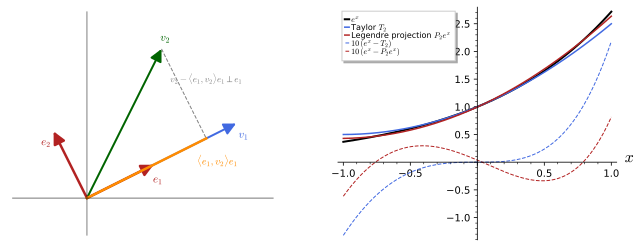
figures/gram_schmidt_projection.sage.
Definition 13 (Orthonormal system) Vectors u, v are orthogonal, u \perp v, if \langle u, v\rangle = 0. A family (e_k) is an orthonormal system if \langle e_j, e_k\rangle = \delta_{jk}. The Gram-Schmidt process turns linearly independent vectors v_1, v_2, \dots into an orthonormal system spanning the same subspaces: e_1 = v_1/\|v_1\|, and e_k = w_k/\|w_k\| with w_k = v_k - \sum_{j < k}\langle e_j, v_k\rangle e_j. For a finite orthonormal system e_1, \dots, e_n the orthogonal projection onto their span is Pu = \sum_k \langle e_k, u\rangle e_k; u - Pu is orthogonal to the span, Pu is the point of the span closest to u, and \|Pu\|^2 = \sum_k |\langle e_k, u\rangle|^2 \leq \|u\|^2 (Bessel’s inequality).
Veriphy. Pending.
Lean. Pending.
Sage. Pending.
In the plane an orthonormal system is a pair of perpendicular unit vectors, and any rotation of the standard basis gives one. The first example writes down such a pair in \mathbb{C}^2 with complex entries, and expands a vector in it by taking inner products.
Example 69 (An orthonormal pair in \mathbb{C}^2) e_1 = (1, i)/\sqrt2, e_2 = (1, -i)/\sqrt2 satisfy \langle e_1, e_1\rangle = (1 + 1)/2 = 1 and \langle e_1, e_2\rangle = (1 + \bar i(-i))/2 = (1 - 1)/2 = 0, an orthonormal system; they are the eigenvectors of \sigma_2 (Section 1.6). A vector u = (a, b) has components \langle e_1, u\rangle = (a - ib)/\sqrt2 and \langle e_2, u\rangle = (a + ib)/\sqrt2, and |\langle e_1, u\rangle|^2 + |\langle e_2, u\rangle|^2 = |a|^2 + |b|^2 = \|u\|^2.
Applied to the monomials 1, x, x^2, \dots in the inner product of L^2(-1, 1), Gram-Schmidt produces the Legendre polynomials up to normalisation. The example carries out the first three steps, each of which needs only the integrals of even powers of x over [-1, 1].
Example 70 (Gram-Schmidt on 1, x, x^2) With \langle f, g\rangle = \int_{-1}^1 \bar f g\,dx: w_1 = 1; w_2 = x - \langle 1, x\rangle/\langle 1, 1\rangle = x since \int_{-1}^1 x\,dx = 0; w_3 = x^2 - \tfrac{\langle 1, x^2\rangle}{\langle 1, 1\rangle} - \tfrac{\langle x, x^2\rangle}{\langle x, x\rangle}x = x^2 - \tfrac13. These are P_0, P_1 and \tfrac23P_2, the Legendre polynomials of Boundary value and Sturm-Liouville problems, and normalising gives e_k = \sqrt{(2k + 1)/2}\,P_k (Proposition 1, Exercise 79).
The exponentials of Example 68 become an orthonormal system after dividing by \sqrt{2\pi}, and the orthogonal projection onto finitely many of them is a truncated Fourier series. The third example makes this identification, which is the bridge between this chapter and Fourier series.
Example 71 (The exponentials e^{inx}/\sqrt{2\pi}) e_n(x) = e^{inx}/\sqrt{2\pi}, n \in \mathbb{Z}, is an orthonormal system in the functions on [0, 2\pi] by Example 68. The projection onto \operatorname{span}\{e_{-N}, \dots, e_N\} is P_Nf = \sum_{|n| \leq N} \langle e_n, f\rangle e_n = \sum_{|n| \leq N} c_n e^{inx} with c_n = \tfrac{1}{2\pi}\int_0^{2\pi}e^{-inx}f(x)dx, the N-th partial Fourier sum, and Bessel’s inequality reads 2\pi\sum_{|n| \leq N}|c_n|^2 \leq \int_0^{2\pi} | f|^2dx.
Carrying out Gram-Schmidt by hand on three vectors of \mathbb{R}^3 and then letting Sage repeat it is the quickest way to internalise the process. The first exercise does this and checks the resulting frame.
Exercise 77 (Gram-Schmidt in \mathbb{R}^3) Orthonormalise v_1 = (1, 1, 0), v_2 = (1, 0, 1), v_3 = (0, 1, 1) by hand, and check with Sage that the result is orthonormal and spans the same space.
e_1 = (1, 1, 0)/\sqrt2; w_2 = v_2 - \tfrac12(1, 1, 0) = (\tfrac12, -\tfrac12, 1), e_2 = (1, -1, 2)/\sqrt6; w_3 = v_3 - \tfrac12(1, 1, 0) - \tfrac16(1, -1, 2) = (-\tfrac23, \tfrac23, \tfrac23), e_3 = (-1, 1, 1)/\sqrt3. Sage’s gram_schmidt returns the orthogonal vectors w_k before normalisation:
V = matrix(QQ, [[1, 1, 0], [1, 0, 1], [0, 1, 1]])
W, mu = V.gram_schmidt()
print("orthogonal vectors w_k (rows):"); print(W)
E = matrix(SR, [w / w.norm() for w in W.rows()])
print("orthonormal frame e_k (rows):"); print(E)
print("Gram matrix E E^T = 1:", bool((E * E.transpose()).simplify_full() == identity_matrix(3)))
print("same span as the v_k:", V.row_space() == W.row_space())Output:
orthogonal vectors w_k (rows):
[ 1 1 0]
[ 1/2 -1/2 1]
[-2/3 2/3 2/3]
orthonormal frame e_k (rows):
[ 1/2*sqrt(2) 1/2*sqrt(2) 0]
[ 1/3*sqrt(3/2) -1/3*sqrt(3/2) 2/3*sqrt(3/2)]
[ -sqrt(1/3) sqrt(1/3) sqrt(1/3)]
Gram matrix E E^T = 1: True
same span as the v_k: TrueBessel’s inequality and the best-approximation property of the projection are both consequences of one identity, the Pythagorean decomposition \|u\|^2 = \|Pu\|^2 + \|u - Pu\|^2. The second exercise asks for the identity and for both consequences.
Exercise 78 (Bessel’s inequality and best approximation) For an orthonormal system e_1, \dots, e_n and Pu = \sum_k\langle e_k, u\rangle e_k, show that u - Pu \perp e_j for every j, that \|u\|^2 = \|Pu\|^2 + \|u - Pu\|^2, and that \|u - Pu\| \leq \|u - w\| for every w in the span of the e_k.
\langle e_j, u - Pu\rangle = \langle e_j, u\rangle - \sum_k\langle e_k, u\rangle\delta_{jk} = 0. Since Pu is in the span, \langle Pu, u - Pu\rangle = 0, and \|u\|^2 = \|Pu + (u - Pu)\|^2 = \|Pu\|^2 + \|u - Pu\|^2 with the cross terms vanishing; as \|Pu\|^2 = \sum|\langle e_k, u\rangle|^2 this is Bessel’s inequality. For w in the span, u - w = (u - Pu) + (Pu - w) with Pu - w in the span and so orthogonal to u - Pu; hence \|u - w\|^2 = \|u - Pu\|^2 + \|Pu - w\|^2 \geq \|u - Pu\|^2, with equality only for w = Pu.
The Gram-Schmidt process on monomials can be continued indefinitely, and the fourth step already requires several integrals. The last exercise lets Sage do the integrals and compares with the Legendre polynomial P_3 and with Rodrigues’ formula.
Exercise 79 (The fourth Legendre polynomial) Continue Example 70 in Sage to x^3, normalise the four orthogonal polynomials in L^2(-1, 1), and check that they are \sqrt{(2k + 1)/2}\,P_k(x) for k = 0, 1, 2, 3.
w_4 = x^3 - \tfrac35x = \tfrac25P_3, and all four normalised polynomials agree with \sqrt{(2k + 1)/2}P_k:
x = var("x", domain="real")
ip = lambda f, g: integrate(f * g, x, -1, 1)
ws = []
for f in [SR(1), x, x ** 2, x ** 3]:
w = f - sum(ip(e, f) / ip(e, e) * e for e in ws)
ws.append(SR(w).expand())
print("orthogonal polynomials w_k:", ws)
es = [(w / sqrt(ip(w, w))).expand() for w in ws]
print("normalised e_k:", es)
print("e_k = sqrt((2k + 1)/2) P_k:", [bool((es[k] - sqrt((2 * k + 1) / QQ(2)) * legendre_P(k, x)).expand() == 0) for k in range(4)])
print("Gram matrix of the e_k:"); print(matrix(SR, 4, 4, lambda j, k: ip(es[j], es[k])))Output:
orthogonal polynomials w_k: [1, x, x^2 - 1/3, x^3 - 3/5*x]
normalised e_k: [1/2*sqrt(2), 3/2*sqrt(2/3)*x, 15/4*sqrt(2/5)*x^2 - 5/4*sqrt(2/5), 35/4*sqrt(2/7)*x^3 - 21/4*sqrt(2/7)*x]
e_k = sqrt((2k + 1)/2) P_k: [True, True, True, True]
Gram matrix of the e_k:
[1 0 0 0]
[0 1 0 0]
[0 0 1 0]
[0 0 0 1]Hilbert spaces
An inner product space in which Cauchy sequences (Definition 3 of Real analysis) need not converge is like the rationals inside the reals: limits that “should” exist are missing. The definition below adds completeness, and the result is the class of spaces in which infinite expansions in orthonormal systems make sense.
Definition 14 (Hilbert space) A Hilbert space is an inner product space H that is complete: every Cauchy sequence, \|u_m - u_n\| \to 0 as m, n \to \infty, converges to some u \in H in the norm, \|u_n - u\| \to 0. A subspace that is closed in the norm is again a Hilbert space. Every inner product space has a completion, a Hilbert space containing it as a dense subspace, obtained as for \mathbb{R} from \mathbb{Q} by adjoining limits of Cauchy sequences.
Veriphy. Pending.
Lean. Pending.
Sage. Pending.
Finite-dimensional inner product spaces are automatically complete, because convergence in norm is convergence of each coordinate. The first example records this, so that the real content of completeness lies in infinite dimensions.
Example 72 (\mathbb{C}^n is complete) In \mathbb{C}^n with the standard inner product, |u_k - v_k| \leq \|u - v\| for each coordinate, so a Cauchy sequence of vectors has Cauchy, hence convergent, coordinates, and converges to the vector of the limits. Every finite-dimensional inner product space is a Hilbert space, and so is the space of n \times n matrices with the trace inner product.
The first infinite-dimensional Hilbert space is the space of square-summable sequences, the natural home for coefficient sequences (\langle e_k, u\rangle)_k. The example defines it and sketches why it is complete, with the details in Exercise 80.
Example 73 (The sequence space \ell^2) \ell^2 = \{(a_n)_{n \geq 1} : \sum_n |a_n|^2 < \infty\} with \langle a, b\rangle = \sum_n \bar a_n b_n is a Hilbert space; the series converges absolutely by Cauchy-Schwarz on partial sums. Completeness: a Cauchy sequence a^{(m)} has Cauchy coordinates a^{(m)}_n \to a_n, and the limit sequence a is in \ell^2 with a^{(m)} \to a (Exercise 80). The sequence a_n = 1/n is in \ell^2 (\sum 1/n^2 = \pi^2/6, Series), while a_n = 1/\sqrt n is not.
The continuous functions with the integral inner product of Example 68 are the standard example of an incomplete space: a Cauchy sequence of continuous functions can converge in norm towards a jump. The third example exhibits such a sequence, and the completion is the space L^2 defined next.
Example 74 (Continuous functions are not complete in the L^2 norm) On [-1, 1] let f_n(x) = \max(-1, \min(1, nx)), continuous and equal to the sign function outside [-1/n, 1/n]. Then \|f_m - f_n\|^2 \leq \int_{-1/n}^{1/n} 4\,dx = 8/n for m > n, a Cauchy sequence, but the only candidate limit is the discontinuous \operatorname{sign}(x), which is not in the space: the norm limit is missing. The completion is L^2(-1, 1) (Definition 15), in which \operatorname{sign} is an element.
The completeness of \ell^2 is a model proof that reappears for every sequence space, and its two steps are to identify a candidate limit coordinatewise and then to show that the convergence happens in the norm. The first exercise asks for both steps.
Exercise 80 (Completeness of \ell^2) Let a^{(m)} be a Cauchy sequence in \ell^2. Show that each coordinate converges, a^{(m)}_n \to a_n, that a \in \ell^2, and that \|a^{(m)} - a\| \to 0.
|a^{(m)}_n - a^{(k)}_n| \leq \|a^{(m)} - a^{(k)}\|, so each coordinate sequence is Cauchy in \mathbb{C} and converges, say to a_n. Given \varepsilon, choose M with \|a^{(m)} - a^{(k)}\| < \varepsilon for m, k \geq M; for every finite N, \sum_{n \leq N}|a^{(m)}_n - a^{(k)}_n|^2 < \varepsilon^2, and letting k \to \infty gives \sum_{n \leq N}|a^{(m)}_n - a_n|^2 \leq \varepsilon^2 for all N, hence \|a^{(m)} - a\| \leq \varepsilon for m \geq M. In particular a^{(M)} - a \in \ell^2, so a = a^{(M)} - (a^{(M)} - a) \in \ell^2, and a^{(m)} \to a.
Not every norm on a vector space comes from an inner product, and the parallelogram law of Exercise 75 is the test. The second exercise applies it to the supremum norm and to the \ell^1 norm, which define complete spaces (Banach spaces) that are not Hilbert spaces.
Exercise 81 (Norms that are not inner product norms) Show that the supremum norm \|f\|_\infty = \sup|f| on continuous functions on [0, 1] (Definition 1 of Real analysis) and the norm \|a\|_1 = \sum|a_n| on summable sequences violate the parallelogram law, so that neither comes from an inner product.
Take f(x) = 1 and g(x) = x: \|f + g\|_\infty = 2, \|f - g\|_\infty = 1, so the left side of the law is 5 while the right side is 2(1 + 1) = 4. In \ell^1 take a = (1, 0, 0, \dots), b = (0, 1, 0, \dots): \|a + b\|_1^2 + \|a - b\|_1^2 = 4 + 4 = 8 \neq 2 + 2 = 4. Since every inner product norm satisfies the law (Exercise 75), neither norm is induced by an inner product.
The sequence of Example 74 converges in norm but not uniformly, and the two kinds of convergence must be kept apart. The last exercise computes the norm distances explicitly and compares with uniform convergence (Definition 19 of Real analysis).
Exercise 82 (Norm convergence versus uniform convergence) For f_n as in Example 74 compute \|f_n - \operatorname{sign}\|^2 exactly, show that f_n \to \operatorname{sign} in the L^2 norm, and explain why the convergence is not uniform.
On [0, 1/n], f_n(x) - 1 = nx - 1, and \int_0^{1/n}(nx - 1)^2dx = 1/(3n); by symmetry \|f_n - \operatorname{sign}\|^2 = 2/(3n) \to 0. The convergence is not uniform since \sup_x|f_n(x) - \operatorname{sign}(x)| = 1 for every n (approach x = 0^+), and indeed a uniform limit of continuous functions would be continuous, which \operatorname{sign} is not.
The space L^2
The completion of the continuous functions in the integral norm is the space of square-integrable functions, and describing it requires an integral more general than Riemann’s. The definition below introduces the Lebesgue integral informally, as the integral that handles limits of integrable functions, together with the identification of functions that differ only on a negligible set.
Definition 15 (L^2 space) Let X be an interval, a region of \mathbb{R}^n or a surface with its volume element d\mu. The Lebesgue integral \int_X f\,d\mu extends the Riemann integral (Definition 11 of Real analysis) to a larger class of functions with the property that limits can be exchanged with the integral under mild conditions; every Riemann integrable function is Lebesgue integrable with the same integral. A set is null (of measure zero) if it can be covered by intervals of arbitrarily small total length, and functions that agree outside a null set are identified. The space L^2(X) consists of the (classes of) measurable functions with \int_X|f|^2d\mu < \infty, with the inner product \langle f, g\rangle = \int_X\bar f g\,d\mu; it is a Hilbert space (the Riesz-Fischer theorem**), and the continuous functions are dense in it.
Veriphy. Pending.
Lean. Pending.
Sage. Pending.
The first instance is the circle, where the functions on [0, 2\pi] with the integral inner product are completed. The exponentials now form an orthonormal system in a Hilbert space, and the sign function excluded in Example 74 is admitted.
Example 75 (L^2(0, 2\pi) and the circle) L^2(0, 2\pi), equivalently L^2(S^1) for 2\pi-periodic functions, contains every bounded Riemann integrable function, including step functions and \operatorname{sign}(x - \pi), and the exponentials e^{inx}/\sqrt{2\pi} are an orthonormal system in it. The function 1/\sqrt x is in L^2(0, 2\pi) only if \int_0^{2\pi}dx/x converges, which it does not (Definition 13 of Real analysis); x^{-1/4} is in L^2 since \int_0^{2\pi}x^{-1/2}dx = 2\sqrt{2\pi}.
On the whole real line the inner product is an improper integral, and membership in L^2(\mathbb{R}) constrains the decay at infinity. The second example is the Gaussian, the central element of the space, together with a function that is bounded but not square-integrable.
Example 76 (L^2(\mathbb{R}) and the Gaussian) \psi(x) = e^{-x^2/2} is in L^2(\mathbb{R}) with \|\psi\|^2 = \int e^{-x^2}dx = \sqrt\pi (the Gaussian integral of The Riemann integral), so \pi^{-1/4}e^{-x^2/2} is a unit vector. The constant function 1 and the plane wave e^{ikx} have |f|^2 = 1 and infinite integral: they are not in L^2(\mathbb{R}), a fact that returns in Section 1.8 as the absence of eigenfunctions of the momentum operator. The function 1/(1 + x^2) is in L^2(\mathbb{R}) (Exercise 83).
On a surface the volume element enters the inner product, and on the sphere it is \sin\theta\,d\theta\,d\varphi. The third example writes down L^2(S^2), in which the spherical harmonics of Harmonic analysis on the sphere and on compact groups form an orthonormal system.
Example 77 (L^2(S^2)) On the unit sphere with the area element d\mu = \sin\theta\,d\theta\,d\varphi, \langle f, g\rangle = \int_0^{2\pi}\int_0^\pi \bar f g\,\sin\theta\,d\theta\,d\varphi. The constant 1 has \|1\|^2 = 4\pi, the area; \cos\theta has \|\cos\theta\|^2 = 2\pi\int_0^\pi\cos^2\theta\sin\theta\,d\theta = 4\pi/3, and \langle 1, \cos\theta\rangle = 0. Normalised, Y_{00} = 1/\sqrt{4\pi} and Y_{10} = \sqrt{3/4\pi}\cos\theta are the first spherical harmonics (Exercise 85).
Deciding whether a function is square-integrable is a convergence test for an improper integral, local near singularities and global at infinity. The first exercise runs Sage on four functions on \mathbb{R} or on (0, 1).
Exercise 83 (Which functions are in L^2?) Decide, by hand and with Sage, which of 1/(1 + x^2), 1/\sqrt{1 + x^2}, \sin x/x on \mathbb{R}, and x^{-1/3}, x^{-1/2} on (0, 1), belong to L^2, and compute the norms of those that do.
\int (1 + x^2)^{-2}dx = \pi/2 (in L^2), \int (1 + x^2)^{-1}dx = \pi (in L^2), \int \sin^2x/x^2\,dx = \pi (in L^2, although \sin x/x is not absolutely integrable); \int_0^1 x^{-2/3}dx = 3 (in L^2) while \int_0^1 x^{-1}dx diverges (x^{-1/2} \notin L^2(0, 1)):
x = var("x", domain="real")
for f in [1 / (1 + x ** 2), 1 / sqrt(1 + x ** 2), sin(x) / x]:
print("int_R |f|^2 for f =", f, ":", integrate(f ** 2, x, -oo, oo))
for f in [x ** (-1 / 3), x ** (-1 / 2)]:
try:
print("int_0^1 |f|^2 for f =", f, ":", integrate(f ** 2, x, 0, 1))
except ValueError as err:
print("int_0^1 |f|^2 for f =", f, ": divergent (", str(err).split("\n")[0], ")")Output:
int_R |f|^2 for f = 1/(x^2 + 1) : 1/2*pi
int_R |f|^2 for f = 1/sqrt(x^2 + 1) : pi
int_R |f|^2 for f = sin(x)/x : pi
int_0^1 |f|^2 for f = x^(-1/3) : 3
int_0^1 |f|^2 for f = 1/sqrt(x) : divergent ( Integral is divergent. )The identification of functions agreeing outside a null set is what makes L^2 a space of classes rather than of functions, and the Dirichlet function is the standard illustration. The second exercise asks what it means for this function to be the zero element, and connects with the Riemann integral.
Exercise 84 (The Dirichlet function in L^2) The function D(x) = 1 for rational x and 0 for irrational x on [0, 1] is not Riemann integrable. Explain why it is the zero element of L^2(0, 1), why \|D\| = 0 is consistent with positive definiteness, and why the value of an L^2 function at a single point is not defined.
The rationals in [0, 1] are countable, q_1, q_2, \dots, and are covered by intervals of length \varepsilon 2^{-k} around q_k with total length \varepsilon: a null set. D agrees with 0 outside it, so D and 0 are identified and \int D^2 = 0. Positive definiteness holds for classes: \|f\| = 0 means f = 0 outside a null set, which is the zero class. A point is a null set, so changing f at a point does not change its class: f(x_0) has no meaning for f \in L^2, only integrals of f against other functions do. In The Riemann integral the same function appears as the example where upper and lower sums disagree.
The normalisation constants of the spherical harmonics are integrals over the sphere with the correct area element, and Sage computes them exactly. The last exercise does this for the three l = 1 harmonics and checks their mutual orthogonality.
Exercise 85 (Normalising the l = 1 harmonics) Compute \|\cos\theta\|^2, \|\sin\theta\,e^{i\varphi}\|^2 and \langle\cos\theta, \sin\theta\,e^{i\varphi} \rangle in L^2(S^2) with Sage, and show that Y_{10} = \sqrt{3/4\pi}\cos\theta and Y_{1, \pm1} = \mp\sqrt{3/8\pi}\sin\theta\,e^{\pm i\varphi} are orthonormal.
\|\cos\theta\|^2 = 4\pi/3, \|\sin\theta\,e^{i\varphi}\|^2 = 2\pi\int_0^\pi\sin^3\theta\,d\theta = 8\pi/3, and the cross inner product vanishes because \int_0^{2\pi}e^{i\varphi}d\varphi = 0; dividing by the norms gives the Y_{1m}, whose Gram matrix Sage returns as the identity:
th, ph = var("theta phi", domain="real")
ip = lambda f, g: integrate(integrate(conjugate(f) * g * sin(th), th, 0, pi), ph, 0, 2 * pi)
f1, f2 = cos(th), sin(th) * exp(I * ph)
print("||cos theta||^2 =", ip(f1, f1), "; ||sin theta e^{i phi}||^2 =", ip(f2, f2), "; <cos theta, sin theta e^{i phi}> =", ip(f1, f2))
Y = [sqrt(3 / (8 * pi)) * sin(th) * exp(-I * ph), sqrt(3 / (4 * pi)) * cos(th), -sqrt(3 / (8 * pi)) * sin(th) * exp(I * ph)]
G = matrix(SR, 3, 3, lambda a, b: ip(Y[a], Y[b]).simplify_full())
print("Gram matrix of Y_{1,-1}, Y_{10}, Y_{11}:"); print(G)
print("agrees with Sage's spherical_harmonic:", all(bool((Y[m + 1] - spherical_harmonic(1, m, th, ph)).simplify_full() == 0) for m in [-1, 0, 1]))Output:
||cos theta||^2 = 4/3*pi ; ||sin theta e^{i phi}||^2 = 8/3*pi ; <cos theta, sin theta e^{i phi}> = 0
Gram matrix of Y_{1,-1}, Y_{10}, Y_{11}:
[1 0 0]
[0 1 0]
[0 0 1]
agrees with Sage's spherical_harmonic: TrueOrthonormal bases
A finite orthonormal system spans a subspace; the question is when an infinite one spans, in the sense of limits, the whole Hilbert space. The definition below answers it with the notion of an orthonormal basis and records Parseval’s identity, the infinite-dimensional Pythagorean theorem, which turns Bessel’s inequality into an equality.
Definition 16 (Orthonormal basis) An orthonormal system (e_k) in a Hilbert space H is an orthonormal basis if it is complete: the only vector orthogonal to every e_k is 0. Equivalently, every u \in H is the norm-convergent sum of its expansion u = \sum_k\langle e_k, u\rangle e_k, and equivalently again Parseval’s identity \|u\|^2 = \sum_k|\langle e_k, u\rangle|^2 holds for all u; then also \langle u, v\rangle = \sum_k\overline{\langle e_k, u\rangle}\langle e_k, v\rangle. A Hilbert space with a countable orthonormal basis is separable, and the map u \mapsto (\langle e_k, u\rangle)_k is then an isomorphism of H onto \ell^2 preserving inner products. An orthonormal basis of an infinite-dimensional space is not a basis in the sense of Definition 5 of Linear algebra, since infinite sums are allowed.
Veriphy. Pending.
Lean. Pending.
Sage. Pending.
The sequences with a single non-zero entry form the standard orthonormal basis of \ell^2, and every orthonormal basis is modelled on it by the isomorphism in the definition. The first example checks completeness and Parseval directly.
Example 78 (The standard basis of \ell^2) \delta^{(k)} = (0, \dots, 0, 1, 0, \dots) with the 1 in position k form an orthonormal system in \ell^2, and \langle\delta^{(k)}, a\rangle = a_k. If a \perp \delta^{(k)} for all k then every a_k = 0, so the system is complete; Parseval’s identity \|a\|^2 = \sum|a_k|^2 is the definition of the norm, and the expansion a = \sum_k a_k\delta^{(k)} converges in norm because the tail \sum_{k > N}|a_k|^2 \to 0.
The exponentials are an orthonormal basis of L^2(0, 2\pi); this is the completeness of the Fourier system, proved in Fourier series and quoted here. Parseval’s identity then turns an integral into a sum, and the example evaluates \sum 1/n^2 this way.
Example 79 (The Fourier basis and \sum 1/n^2) e_n = e^{inx}/\sqrt{2\pi}, n \in \mathbb{Z}, is an orthonormal basis of L^2(-\pi, \pi) (Fourier series). For f(x) = x, \langle e_n, f\rangle = \tfrac{1}{\sqrt{2\pi}}\int_{-\pi}^\pi xe^{-inx}dx = \sqrt{2\pi}\,i(-1)^n/n for n \neq 0 and 0 for n = 0, so Parseval gives \tfrac{2\pi^3}{3} = \|f\|^2 = 2\pi\sum_{n \neq 0}1/n^2 = 4\pi\sum_{n \geq 1}1/n^2, that is, \sum_{n \geq 1}1/n^2 = \pi^2/6 (Exercise 86, Series).
The normalised Legendre polynomials are an orthonormal basis of L^2(-1, 1), by the completeness part of the Sturm-Liouville theorem (Theorem 2 of Differential equations) or by the density of polynomials. The third example states this and shows how a function is expanded in them, with the figure as illustration.
Example 80 (The Legendre basis of L^2(-1, 1)) e_k = \sqrt{(2k + 1)/2}\,P_k, k \geq 0, is an orthonormal basis of L^2(-1, 1): polynomials are dense in the continuous functions on [-1, 1] (Weierstrass), which are dense in L^2, and the span of e_0, \dots, e_n is the polynomials of degree \leq n. The expansion of e^x begins e^x = \sinh 1\,P_0 + 3e^{-1}P_1 + \tfrac52(e - 7e^{-1})P_2 + \dots, and the sum of the first three terms is the projection shown in Figure 12 (Proposition 1).
The Fourier coefficients of x and the resulting value of \sum 1/n^2 are a computation Sage does exactly, and the partial sums of Parseval’s identity show how fast the expansion converges. The first exercise carries this out and repeats it for x^2, where the answer is \sum 1/n^4.
Exercise 86 (Parseval for x and x^2) With Sage, compute the Fourier coefficients of f(x) = x and g(x) = x^2 on (-\pi, \pi), verify Parseval’s identity in the form of the series \sum 1/n^2 = \pi^2/6 and \sum 1/n^4 = \pi^4/90, and check that the partial sum over |n| \leq 10 already gives \|f\|^2 to within 10\% and \|g\|^2 to within 0.1\%.
|\langle e_n, f\rangle|^2 = 2\pi/n^2 and, for g, \langle e_0, g\rangle = \sqrt{2\pi}\,\pi^2/3 with |\langle e_n, g\rangle|^2 = 8\pi/n^4 for n \neq 0; the second series converges much faster because g is continuous as a periodic function while f has a jump at \pm\pi:
x = var("x", domain="real")
c = lambda f, n: (integrate(f * exp(-I * n * x), x, -pi, pi) / sqrt(2 * pi)).simplify_full()
f, g = x, x ** 2
print("<e_n, x> for n = 1, 2, 3:", [c(f, n) for n in [1, 2, 3]], "; <e_0, x^2> =", c(g, 0), "; <e_n, x^2> for n = 1, 2, 3:", [c(g, n) for n in [1, 2, 3]])
n = var("n", domain="integer")
print("||x||^2 =", integrate(f ** 2, x, -pi, pi), " = 4 pi sum 1/n^2 gives sum 1/n^2 =", (integrate(f ** 2, x, -pi, pi) / (4 * pi)).simplify_full(), "=", sum(1 / n ** 2, n, 1, oo))
print("||x^2||^2 =", integrate(g ** 2, x, -pi, pi), " = 2 pi^5/9 + 16 pi sum 1/n^4 gives sum 1/n^4 =", ((integrate(g ** 2, x, -pi, pi) - 2 * pi ** 5 / 9) / (16 * pi)).simplify_full(), "=", sum(1 / n ** 4, n, 1, oo))
for h, name in [(f, "x"), (g, "x^2")]:
full = integrate(h ** 2, x, -pi, pi)
part = sum(abs(c(h, k)) ** 2 for k in range(-10, 11))
print("partial Parseval sum |n| <= 10 for", name, ":", part.n(digits=8), " norm^2:", full.n(digits=8), " ratio:", (part / full).n(digits=6))Output:
<e_n, x> for n = 1, 2, 3: [-I*sqrt(2)*sqrt(pi), 1/2*I*sqrt(2)*sqrt(pi), -1/3*I*sqrt(2)*sqrt(pi)] ; <e_0, x^2> = 1/3*sqrt(2)*pi^(5/2) ; <e_n, x^2> for n = 1, 2, 3: [-2*sqrt(2)*sqrt(pi), 1/2*sqrt(2)*sqrt(pi), -2/9*sqrt(2)*sqrt(pi)]
||x||^2 = 2/3*pi^3 = 4 pi sum 1/n^2 gives sum 1/n^2 = 1/6*pi^2 = 1/6*pi^2
||x^2||^2 = 2/5*pi^5 = 2 pi^5/9 + 16 pi sum 1/n^4 gives sum 1/n^4 = 1/90*pi^4 = 1/90*pi^4
partial Parseval sum |n| <= 10 for x : 19.474956 norm^2: 20.670851 ratio: 0.942146
partial Parseval sum |n| <= 10 for x^2 : 122.39347 norm^2: 122.40787 ratio: 0.999882The three characterisations of an orthonormal basis in the definition are equivalent, and the equivalence is the basic theorem on orthonormal systems. The second exercise asks for the proof, with completeness of the Hilbert space used to make the expansion converge.
Exercise 87 (Three characterisations of an orthonormal basis) For an orthonormal system (e_k)_{k \geq 1} in a Hilbert space, prove that the following are equivalent: (a) no non-zero vector is orthogonal to all e_k; (b) u = \sum_k\langle e_k, u\rangle e_k for all u; (c) \|u\|^2 = \sum_k|\langle e_k, u\rangle|^2 for all u.
- \Rightarrow (b): by Bessel’s inequality \sum|\langle e_k, u\rangle|^2 \leq \|u\|^2 converges, so the partial sums s_N = \sum_{k \leq N}\langle e_k, u\rangle e_k are Cauchy (\|s_M - s_N\|^2 = \sum_{N < k \leq M}|\langle e_k, u\rangle|^2) and converge, by completeness, to some s. Then \langle e_j, u - s\rangle = \langle e_j, u\rangle - \langle e_j, u\rangle = 0 for all j, so u - s = 0 by (a). (b) \Rightarrow (c): \|u\|^2 = \lim\|s_N\|^2 = \lim\sum_{k \leq N}|\langle e_k, u\rangle|^2 by continuity of the norm. (c) \Rightarrow (a): if u \perp e_k for all k then \|u\|^2 = \sum 0 = 0, so u = 0.
Every separable Hilbert space is isomorphic to \ell^2, so “the” infinite-dimensional separable Hilbert space is unique up to isomorphism; non-separable spaces exist but play no role here. The last exercise constructs the isomorphism and shows why the plane waves cannot be an orthonormal system in L^2(\mathbb{R}).
Exercise 88 (L^2 is \ell^2 in disguise) Show that U : L^2(-\pi, \pi) \to \ell^2(\mathbb{Z}), Uf = (\langle e_n, f\rangle)_{n \in \mathbb{Z}}, is a bijective linear map with \langle Uf, Ug\rangle = \langle f, g\rangle. Then explain why the family \{e^{ikx} : k \in \mathbb{R}\} cannot be an orthonormal basis of L^2(\mathbb{R}), although \int e^{-ikx}e^{ik'x}dx “vanishes” for k \neq k'.
U is linear and preserves inner products by Parseval’s identity in its polarised form, hence is injective; it is surjective because for a \in \ell^2(\mathbb{Z}) the sum \sum a_ne_n converges in L^2 (its partial sums are Cauchy) to an f with Uf = a. For the plane waves: they are not in L^2(\mathbb{R}) at all (Example 76), and an orthonormal system in a separable space is countable, since the balls of radius 1/2 around its members are disjoint and a countable dense set must meet each; \mathbb{R} is uncountable. The plane waves are instead a “continuous basis” in the sense of the Fourier transform (The Fourier transform) and of distributions (Distributions).
The Riesz representation theorem
A linear functional (Definition 8 of Linear algebra) on a Hilbert space is a linear map to the scalars, and taking the inner product with a fixed vector is one. The theorem below, quoted without proof, says that in a Hilbert space there are no others among the continuous ones: the dual space (Definition 9 of Linear algebra) is the space itself, which is why bra vectors and ket vectors can be identified.
Theorem 11 (Riesz representation theorem) Let H be a Hilbert space and \varphi : H \to \mathbb{C} a linear functional that is bounded: |\varphi(u)| \leq C\|u\| for some constant C and all u. Then there is a unique v \in H with \varphi(u) = \langle v, u\rangle for all u, and the smallest constant C equals \|v\|. Conversely every u \mapsto \langle v, u\rangle is bounded by Cauchy-Schwarz. The proof takes v in the orthogonal complement of the kernel of \varphi, which is a closed subspace of codimension one; the statement is quoted here and the outline is Exercise 90.
Veriphy. Pending.
Lean. Pending.
Sage. Pending.
In \mathbb{C}^n the theorem is the statement that every linear functional is given by a row vector, and the representing vector is its conjugate. The first example makes this explicit, including the correspondence of norms.
Example 81 (Functionals on \mathbb{C}^n) A linear functional on \mathbb{C}^n is \varphi(u) = \sum_k c_ku_k for some coefficients c_k (Linear maps and dual spaces), and \varphi(u) = \langle v, u\rangle with v_k = \bar c_k. For \varphi(u) = u_1 + iu_2 on \mathbb{C}^2 the representing vector is v = (1, -i), and the best constant in |\varphi(u)| \leq C\|u\| is \|v\| = \sqrt2, attained at u = v.
On \ell^2 the bounded functionals are the sums \sum c_na_n with c \in \ell^2, and the theorem says that no other bounded functional exists; the second example also shows a functional that is linear but not bounded. On a space with an orthonormal basis, boundedness of a functional is a condition on its values on the basis.
Example 82 (Functionals on \ell^2) For c \in \ell^2, \varphi_c(a) = \sum_n\bar c_na_n = \langle c, a\rangle is bounded by \|c\|. Conversely a bounded \varphi has values c_n = \overline{\varphi(\delta^{(n)})} with \sum_{n \leq N}|c_n|^2 = \varphi(\sum_{n \leq N}c_n\delta^{(n)}) \leq C(\sum_{n \leq N}|c_n|^2)^{1/2}, so \sum|c_n|^2 \leq C^2 and c \in \ell^2 (Exercise 89). The functional \varphi(a) = \sum_n a_n is defined on the finite sequences but not bounded: on a = (1, \tfrac12, \dots, \tfrac1N, 0, \dots) it gives H_N \to \infty while \|a\| \leq \pi/\sqrt6.
The evaluation f \mapsto f(x_0) is the most important linear functional on functions, and the third example explains why it is not represented by any vector of L^2: the would-be representing function is the delta function. This is where the Riesz theorem hands over to the theory of distributions.
Example 83 (Evaluation is not bounded on L^2) On L^2(-1, 1) the functional f \mapsto f(0) is not even well defined, since f(0) depends on the representative (Exercise 84); on continuous functions it is defined but not bounded in the L^2 norm: f_n(x) = \max(0, 1 - n|x|) has f_n(0) = 1 and \|f_n\|^2 = 2/(3n) \to 0. So there is no g \in L^2 with f(0) = \int\bar gf\,dx; the “function” \delta(x) that would do it is a distribution (Distributions). The theorem does apply to f \mapsto \int_{-1}^0f\,dx, represented by the indicator function of [-1, 0].
The norm of a functional, the smallest constant C, equals the norm of its representing vector, and the proof of this half of the theorem is a Cauchy-Schwarz argument. The first exercise asks for it and for the computation in a concrete case on \ell^2.
Exercise 89 (The norm of a functional) Show that for \varphi(u) = \langle v, u\rangle the smallest constant C with |\varphi(u)| \leq C\|u\| is \|v\|, and find it for \varphi(a) = \sum_{n \geq 1}a_n/n on \ell^2.
Cauchy-Schwarz gives |\langle v, u\rangle| \leq \|v\|\|u\|, so C = \|v\| works, and u = v gives |\varphi(v)| = \|v\|^2 = \|v\|\|v\|, so no smaller constant does. For \varphi(a) = \sum a_n/n the representing vector is v = (1/n)_n with \|v\| = \sqrt{\sum 1/n^2} = \pi/\sqrt6, which is the norm of \varphi.
The existence half of the theorem rests on the projection onto a closed subspace, which exists in a Hilbert space by completeness. The second exercise asks the reader to assemble the argument from the kernel of \varphi and one vector orthogonal to it.
Exercise 90 (Outline of the proof) Assume that every closed subspace K of H has an orthogonal complement, H = K \oplus K^\perp. For a bounded non-zero functional \varphi, let K = \ker\varphi and pick a unit vector w \in K^\perp. Show that K^\perp is one-dimensional and that v = \overline{\varphi(w)}\,w represents \varphi.
K is closed because \varphi is continuous (bounded). For any u, the vector \varphi(w)u - \varphi(u)w lies in K, so it is orthogonal to w: \varphi(w)\langle w, u\rangle - \varphi(u)\langle w, w\rangle = 0, that is, \varphi(u) = \varphi(w)\langle w, u\rangle = \langle\overline{\varphi(w)}w, u\rangle. In particular every u \in K^\perp satisfies u = \langle w, u\rangle w (apply the identity u = (u - \varphi(u)w/\varphi(w)) + \varphi(u)w/\varphi(w) and note that the first term is in K \cap K^\perp = 0), so K^\perp = \mathbb{C}w. Uniqueness: if \langle v - v', u\rangle = 0 for all u, take u = v - v'.
For a functional given by an integral against a known function, the representing vector in a finite-dimensional subspace is the projection of that function. The last exercise computes it in Sage for the functional f \mapsto \int_{-1}^1 x^3 f(x)\,dx restricted to the polynomials of degree at most 2.
Exercise 91 (Representing a functional on polynomials) Let V be the polynomials of degree \leq 2 in L^2(-1, 1) and \varphi(f) = \int_{-1}^1x^3f(x)\,dx. Find v \in V with \varphi(f) = \langle v, f\rangle for all f \in V by expanding x^3 in the orthonormal Legendre basis of V with Sage, and check it on f = 1, x, x^2.
v is the orthogonal projection of x^3 onto V: v = \sum_{k \leq 2}\langle e_k, x^3\rangle e_k = \tfrac35x, since x^3 is odd and \langle x, x^3\rangle/\langle x, x\rangle = (2/5)/(2/3). The values \varphi(1) = 0, \varphi(x) = 2/5, \varphi(x^2) = 0 agree with \langle\tfrac35x, f\rangle:
x = var("x", domain="real")
ip = lambda f, g: integrate(f * g, x, -1, 1)
es = [sqrt((2 * k + 1) / QQ(2)) * legendre_P(k, x) for k in range(3)]
v = sum(ip(e, x ** 3) * e for e in es).expand().simplify_full()
print("representing vector v = projection of x^3 onto degree <= 2:", v)
for f in [SR(1), x, x ** 2]:
print("f =", f, ": phi(f) =", ip(x ** 3, f), " <v, f> =", ip(v, f))Output:
representing vector v = projection of x^3 onto degree <= 2: 3/5*x
f = 1 : phi(f) = 0 <v, f> = 0
f = x : phi(f) = 2/5 <v, f> = 2/5
f = x^2 : phi(f) = 0 <v, f> = 0Worked computations
The computations of this section, Gram-Schmidt on monomials, the orthogonal projection in the plane and in L^2(-1, 1), and Parseval’s identity for f(x) = x, are collected in one proposition. Each of them is a finite computation with exact integrals and exact arithmetic.
Proposition 1 (Orthonormalisation and projection) Gram-Schmidt on 1, x, x^2, x^3 in L^2(-1, 1) gives P_0, P_1, \tfrac23P_2, \tfrac25P_3; the projection of (1, 2) onto the line spanned by (2, 1) is (\tfrac85, \tfrac45) with residual (-\tfrac35, \tfrac65) orthogonal to the line; the L^2(-1, 1) projection of e^x onto polynomials of degree \leq 2 has a smaller error than the Taylor polynomial of degree 2; the partial Parseval sums of f(x) = x on (-\pi, \pi) increase towards \|f\|^2 = 2\pi^3/3 and equal 4\pi\sum_{n \leq N}1/n^2; and Cauchy-Schwarz holds with its sharp constant for (1, i, 0), (1, 1, 1).
Veriphy. Pending.
Lean. Pending.
Sage. Exact computation (figures/gram_schmidt_projection.sage, symbolic integrals and exact rational arithmetic).
The orthogonal projection onto a line is the first case of the formula Pu = \sum\langle e_k, u\rangle e_k, and the figure shows it. The first example works through the numbers of the left panel.
Example 84 (The left panel of the figure) With v_1 = (2, 1), e_1 = v_1/\sqrt5 and \langle e_1, v_2\rangle e_1 = \tfrac{4}{5}(2, 1) = (\tfrac85,
\tfrac45) for v_2 = (1, 2); the residual w_2 = (1, 2) - (\tfrac85, \tfrac45) = (-\tfrac35, \tfrac65) has \langle v_1, w_2\rangle = -\tfrac65 + \tfrac65 = 0 and e_2 = w_2/\|w_2\| = (-1, 2)/\sqrt5. Sage’s gram_schmidt on the matrix with rows v_1, v_2 returns exactly v_1 and w_2.
The right panel compares two quadratic approximations of e^x on [-1, 1]: the Taylor polynomial, which is best near x = 0, and the Legendre projection, which is best on average. The example gives the two polynomials and the two errors.
Example 85 (Legendre projection versus Taylor polynomial) The Taylor polynomial is T_2 = 1 + x + x^2/2 with \|e^x - T_2\|^2 = \int_{-1}^1(e^x - 1 - x - x^2/2)^2dx \approx 0.00899. The projection is Pe^x = \sinh 1 + 3e^{-1}x + \tfrac52(e - 7e^{-1})(\tfrac32x^2 - \tfrac12) \approx 0.9963 + 1.1036x + 0.5367x^2, with \|e^x - Pe^x\|^2 \approx 0.00144, about six times smaller (Exercise 93); near x = 0 the Taylor polynomial is nonetheless closer.
Parseval’s identity is a limit statement, and it is best seen through its partial sums, which increase monotonically to the norm. The third example shows the numbers and relates the rate of convergence to the jump of f.
Example 86 (Partial Parseval sums for f(x) = x) \sum_{|n| \leq N}|\langle e_n, f\rangle|^2 = 4\pi\sum_{n \leq N}1/n^2 equals 4\pi \cdot 1 = 12.57, 4\pi\cdot 1. 4636 = 18.39 and 4\pi\cdot 1.5498 = 19.47 for N = 1, 5, 10, against \|f\|^2 = 2\pi^3/3 = 20.67; the missing tail 4\pi\sum_{n > N}1/n^2 \approx 4\pi/N decays slowly because the coefficients decay only like 1/n, the signature of the jump of the periodic extension of x at \pm\pi.
The projection formula is independent of which orthonormal basis of the subspace is used, a fact best believed after a computation. The first exercise projects a vector of \mathbb{R}^3 onto a plane with two different orthonormal bases of the plane.
Exercise 92 (Projection onto a plane) Project u = (1, 2, 3) onto the plane x + y + z = 0 in \mathbb{R}^3 using the orthonormal basis obtained by Gram-Schmidt from (1, -1, 0), (1, 0, -1), then using the one from (0, 1, -1), (1, -1, 0), and check with Sage that both give the same vector, equal to u - \langle n, u\rangle n with n = (1, 1, 1)/\sqrt3.
Both give Pu = (1, 2, 3) - 2(1, 1, 1) = (-1, 0, 1): the projection depends only on the subspace, and projecting onto the plane is the same as removing the component along its normal:
u = vector(QQ, [1, 2, 3])
def project(basis):
W, mu = matrix(QQ, basis).gram_schmidt()
return sum((w * u) / (w * w) * w for w in W.rows())
p1 = project([[1, -1, 0], [1, 0, -1]]); p2 = project([[0, 1, -1], [1, -1, 0]])
n = vector(QQ, [1, 1, 1]); p3 = u - (n * u) / (n * n) * n
print("from the first basis:", p1, " from the second:", p2, " u - <n, u> n:", p3, " all equal:", p1 == p2 == p3)
print("the result lies in the plane (sum of coordinates 0):", sum(p1) == 0, " and u - Pu is normal to it:", (u - p1) == (n * u) / (n * n) * n)Output:
from the first basis: (-1, 0, 1) from the second: (-1, 0, 1) u - <n, u> n: (-1, 0, 1) all equal: True
the result lies in the plane (sum of coordinates 0): True and u - Pu is normal to it: TrueThe error of the Legendre projection in Example 85 can be written without computing the projection itself, by Pythagoras. The second exercise asks for this formula and uses it to show that adding P_3 to the expansion reduces the error by a further large factor.
Exercise 93 (The error of a projection) Show that \|u - P_nu\|^2 = \|u\|^2 - \sum_{k \leq n}|\langle e_k, u\rangle|^2 for the projection onto e_0, \dots, e_n, and use \langle e_k, e^x\rangle for k = 0, \dots, 3 to compute \|e^x - P_2e^x\|^2 and \|e^x - P_3e^x\|^2 to three significant figures.
By Exercise 78, \|u\|^2 = \|P_nu\|^2 + \|u - P_nu\|^2 with \|P_nu\|^2 = \sum_{k \leq n}|\langle e_k, u\rangle|^2. With \|e^x\|^2 = \sinh 2 = 3.6269 and \langle e_k, e^x\rangle = \sqrt{(2k+1)/2}\int_{-1}^1 P_ke^xdx: \int P_0e^x = 2\sinh 1, \int P_1e^x = 2e^{-1}, \int P_2e^x = e - 7e^{-1}, \int P_3e^x = 37e^{-1} - 5e, giving |\langle e_k, e^x\rangle|^2 = 2.7622, 0.8120, 0.0512, 0.00142; so \|e^x - P_2e^x\|^2 \approx 3.6269 - 3.6254 = 0.00144 and \|e^x - P_3e^x\|^2 \approx 0.0000223, a reduction by a factor of about 65.
Projection onto trigonometric polynomials is the partial Fourier sum, and for a function with a jump the error decreases slowly, as Example 86 showed. The last exercise asks Sage for the projections of the square wave onto the first few modes and for the errors, which follow Parseval exactly.
Exercise 94 (Projecting the square wave) For f = \operatorname{sign}(x) on (-\pi, \pi), compute with Sage the projection P_Nf onto \{e^{inx}/\sqrt{2\pi} : |n| \leq N\} for N = 1, 3, 5, the errors \|f - P_Nf\|^2, and check them against \|f\|^2 - \sum_{|n| \leq N}|\langle e_n, f\rangle|^2.
\langle e_n, f\rangle = -2i\sqrt{2/\pi}/n for odd n and 0 for even n, so P_Nf = \tfrac4\pi\sum_{\text{odd } n \leq N}\sin nx/n and \|f - P_Nf\|^2 = 2\pi - \tfrac{16}{\pi}\sum_{\text{odd } n \leq N}1/n^2, which is 1.190, 0.624 and 0.421 for N = 1, 3, 5:
x = var("x", domain="real")
f = sign(x)
def coef(n): # <e_n, f> with e_n = e^{inx}/sqrt(2 pi), computed on (0, pi) and (-pi, 0) separately
return (integrate(exp(-I * n * x), x, 0, pi) - integrate(exp(-I * n * x), x, -pi, 0)) / sqrt(2 * pi)
norm2 = 2 * pi
for N in [1, 3, 5]:
P = sum(coef(n) * exp(I * n * x) / sqrt(2 * pi) for n in range(-N, N + 1)).simplify_full()
err_direct = (integrate((1 - P) ** 2, x, 0, pi) + integrate((-1 - P) ** 2, x, -pi, 0)).simplify_full()
err_parseval = (norm2 - sum(abs(coef(n)) ** 2 for n in range(-N, N + 1))).simplify_full()
print("N =", N, ": P_N f =", P, "; error =", err_direct, "=", err_direct.n(digits=4), "; Parseval:", bool(err_direct == err_parseval))Output:
N = 1 : P_N f = 4*sin(x)/pi ; error = 2*(pi^2 - 8)/pi = 1.190 ; Parseval: True
N = 3 : P_N f = 8/3*(2*cos(x)^2 + 1)*sin(x)/pi ; error = 2/9*(9*pi^2 - 80)/pi = 0.6243 ; Parseval: True
N = 5 : P_N f = 4/15*(48*cos(x)^4 - 16*cos(x)^2 + 13)*sin(x)/pi ; error = 2/225*(225*pi^2 - 2072)/pi = 0.4206 ; Parseval: TrueBounded operators
A bounded operator is a linear map of a Hilbert space to itself that stretches no vector by more than a fixed factor; in finite dimensions every linear map is one. This section defines the operator norm, the adjoint and the three classes of operators that quantum mechanics and spectral theory use constantly, self-adjoint, unitary and projection operators, and ends with the commutator; the figure shows how an operator deforms the unit circle, and the proposition checks the identities in Sage.
For more on this topic, see Scott (2023, Ch. 4).
The operator norm
A linear map (Definition 7 of Linear algebra) between inner product spaces may stretch different vectors by different factors, and the largest stretching factor measures its size. The figure shows the image of the unit circle under three operators, an ellipse, a circle and a segment, whose longest radius is this factor; the definition below names it.
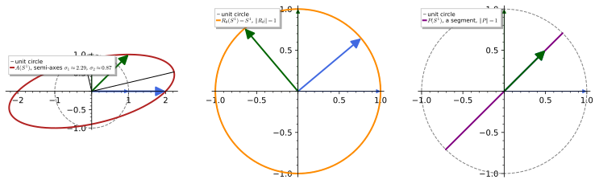
figures/operator_norm_ellipse.sage.
Definition 17 (Bounded operator) A linear map A : H \to H on a Hilbert space is a bounded operator if its operator norm \|A\| = \sup_{u \neq 0}\|Au\|/\|u\| = \sup_{\|u\| = 1}\|Au\| is finite, so that \|Au\| \leq \|A\|\,\|u\| for all u; a linear map is bounded exactly when it is continuous. The bounded operators form a vector space \mathcal{B}(H) with \|A + B\| \leq \|A\| + \|B\|, \|\alpha A\| = |\alpha|\|A\|, and the composition satisfies \|AB\| \leq \|A\|\,\|B\|. In finite dimensions every linear map is bounded and \|A\| is the largest singular value of A, the square root of the largest eigenvalue of A^\dagger A, with A^\dagger = \bar A^{\mathsf{T}}.
Veriphy. Pending.
Lean. Pending.
Sage. Pending.
The norm of a matrix is read off the ellipse into which it maps the unit circle: the longest semi-axis. The first example computes it for the matrix of the figure, where the answer is not the largest entry nor the largest eigenvalue.
Example 87 (The norm of a 2 \times 2 matrix) For A = \begin{pmatrix} 2 & 1 \\ 0 & 1\end{pmatrix}, A^{\mathsf{T}}A = \begin{pmatrix} 4 & 2 \\ 2 & 2 \end{pmatrix} has eigenvalues 3 \pm \sqrt5, so \|A\| = \sqrt{3 + \sqrt5} = (1 + \sqrt5)/\sqrt2 \approx 2.288 (Proposition 2). This exceeds the eigenvalues 2 and 1 of A itself: the vector u = (1, 1)/\sqrt2 is stretched to \|Au\| = \|(3, 1)\|/\sqrt2 = \sqrt5 \approx 2.236, and the best direction does slightly better.
Multiplying a function by a fixed bounded function is a bounded operator on L^2, and its norm is the largest value of the multiplier. The second example is the position operator on an interval, which will be the model for the continuous spectrum in Section 1.6.
Example 88 (Multiplication operators) For a bounded function g on X, (M_gf)(x) = g(x)f(x) is a bounded operator on L^2(X) with \|M_gf\|^2 = \int|g|^2|f|^2 \leq (\sup|g|)^2\|f\|^2, and \|M_g\| = \sup|g| (up to null sets). On L^2(0, 1) the position operator (xf)(x) = xf(x) has norm 1, approached by functions concentrated near x = 1 but attained by none (Exercise 96).
The shift on \ell^2 moves every coordinate one place to the right, preserving the norm, and its adjoint will turn out to move them to the left. The third example introduces this pair, the simplest operators without any finite-dimensional analogue.
Example 89 (The shift on \ell^2) S(a_1, a_2, a_3, \dots) = (0, a_1, a_2, \dots) satisfies \|Sa\| = \|a\|, so \|S\| = 1; the backward shift S^*(a_1, a_2, \dots) = (a_2, a_3, \dots) also has norm 1, with \|S^*a\| < \|a\| whenever a_1 \neq 0. The differentiation operator, by contrast, is not bounded on any natural domain in L^2 (Exercise 97), which is why Section 1.8 is needed.
Sage’s norm(2) returns the operator norm of a matrix, and comparing it with the square root of the largest eigenvalue of A^\dagger A makes the definition concrete. The first exercise does this for two matrices, one of which has the golden ratio as its norm.
Exercise 95 (Operator norms in Sage) Compute \|A\| for A = \begin{pmatrix} 1 & 2 \\ 3 & 4\end{pmatrix} and B = \begin{pmatrix} 1 & 1 \\ 0 & 1
\end{pmatrix} from the eigenvalues of A^{\mathsf{T}}A and B^{\mathsf{T}}B, compare with Sage’s norm(2), and show that \|B\| = (1 + \sqrt5)/2.
B^{\mathsf{T}}B = \begin{pmatrix} 1 & 1 \\ 1 & 2\end{pmatrix} has largest eigenvalue (3 + \sqrt5)/2 = \varphi^2 with \varphi the golden ratio, so \|B\| = \varphi \approx 1.618; for A, \|A\| = \sqrt{(30 + \sqrt{884})/2} \approx 5.465:
for A in [matrix(QQbar, [[1, 2], [3, 4]]), matrix(QQbar, [[1, 1], [0, 1]])]:
ev = sorted((A.transpose() * A).eigenvalues(), reverse=True)
print("A =", A.rows(), ": eigenvalues of A^T A:", ev, "; sqrt of the largest:", sqrt(ev[0]), "=", sqrt(ev[0]).n(digits=8), "; norm(2):", A.norm(2))
B = matrix(QQbar, [[1, 1], [0, 1]])
print("||B|| = (1 + sqrt 5)/2:", B.norm(2) == QQbar((1 + sqrt(5)) / 2), "; ||A|| for the first matrix = sqrt((30 + sqrt 884)/2):", matrix(QQbar, [[1, 2], [3, 4]]).norm(2) == QQbar(sqrt((30 + sqrt(884)) / 2)))Output:
A = [(1, 2), (3, 4)] : eigenvalues of A^T A: [29.86606874731851?, 0.1339312526814945?] ; sqrt of the largest: 5.464985704219043? = 5.4649857 ; norm(2): 5.464985704219043
A = [(1, 1), (0, 1)] : eigenvalues of A^T A: [2.618033988749895?, 0.3819660112501051?] ; sqrt of the largest: 1.618033988749895? = 1.6180340 ; norm(2): 1.618033988749895
||B|| = (1 + sqrt 5)/2: True ; ||A|| for the first matrix = sqrt((30 + sqrt 884)/2): TrueThe two inequalities quoted in the definition and the characterisation of the norm by matrix elements are short consequences of Cauchy-Schwarz. The second exercise asks for them and for the statement that the norm of the position operator on (0, 1) is not attained.
Exercise 96 (Properties of the operator norm) Prove \|AB\| \leq \|A\|\|B\|, prove \|A\| = \sup\{|\langle v, Au\rangle| : \|u\| = \|v\| = 1\}, and show that the position operator on L^2(0, 1) has norm 1 but \|xf\| < \|f\| for every f \neq 0.
\|ABu\| \leq \|A\|\|Bu\| \leq \|A\|\|B\|\|u\|. By Cauchy-Schwarz |\langle v, Au\rangle| \leq \|Au\| \leq \|A\| for unit u, v, and choosing v = Au/\|Au\| gives |\langle v, Au\rangle| = \|Au\|, whose supremum over unit u is \|A\|. For the position operator, \|xf\|^2 = \int_0^1x^2|f|^2dx < \int_0^1|f|^2dx because x^2 < 1 on (0, 1) and |f|^2 is not the zero class; but f_n = \sqrt n\,\mathbf{1}_{[1 - 1/n, 1]} has \|f_n\| = 1 and \|xf_n\|^2 = n\int_{1 - 1/n}^1x^2dx = 1 - 1/n + 1/(3n^2) \to 1, so the norm is 1.
Differentiation multiplies the mode e^{inx} by in, so it stretches high modes without bound and cannot be a bounded operator. The last exercise makes this precise on trigonometric polynomials and on L^2(\mathbb{R}).
Exercise 97 (Differentiation is not bounded) Show that there is no constant C with \|f'\| \leq C\|f\| for all trigonometric polynomials f on (0, 2\pi), and none with \|f'\| \leq C\|f\| for all Gaussians f(x) = e^{-ax^2}, a > 0, on \mathbb{R}.
For f = e^{inx}, \|f'\| = n\|f\|, which exceeds C\|f\| as soon as n > C. For f = e^{-ax^2}, \|f\|^2 = \sqrt{\pi/2a} and \|f'\|^2 = 4a^2\int x^2e^{-2ax^2}dx = 4a^2\cdot\tfrac{1}{4a}\sqrt{\pi/2a} = a\sqrt{\pi/2a}, so \|f'\|/\|f\| = \sqrt a \to \infty as a \to \infty: narrow Gaussians have steep slopes. In both cases the ratio \|f'\|/\|f\| is unbounded, so differentiation has no finite operator norm.
The adjoint
Moving an operator from one slot of the inner product to the other produces, in general, a different operator; for matrices this is the conjugate transpose already used above. The definition below introduces it for bounded operators, where the Riesz representation theorem guarantees its existence.
Definition 18 (Adjoint operator) The adjoint of a bounded operator A is the unique bounded operator A^\dagger with \langle Au, v\rangle = \langle u, A^\dagger v\rangle for all u, v \in H; it exists because for fixed v the functional u \mapsto \langle v, Au\rangle is bounded and so, by Theorem 11, equals \langle A^\dagger v, u\rangle for a unique vector A^\dagger v. The adjoint satisfies (A^\dagger)^\dagger = A, (AB)^\dagger = B^\dagger A^\dagger, (\alpha A + B)^\dagger = \bar\alpha A^\dagger + B^\dagger, \|A^\dagger\| = \|A\| and \|A^\dagger A\| = \|A\|^2. For a matrix in an orthonormal basis, A^\dagger = \bar A^{\mathsf{T}}, the conjugate transpose. In Dirac’s notation the operator |u\rangle\langle v| : w \mapsto \langle v, w\rangle u has adjoint |v\rangle\langle u|.
Veriphy. Pending.
Lean. Pending.
Sage. Pending.
The conjugate transpose is the adjoint because the standard inner product on \mathbb{C}^n conjugates the first vector. The first example verifies the defining identity on a matrix with a complex entry, where the conjugation matters.
Example 90 (The conjugate transpose) For A = \begin{pmatrix} 1 & i \\ 0 & 2\end{pmatrix}, A^\dagger = \begin{pmatrix} 1 & 0 \\ -i & 2\end{pmatrix}. With u = (1, 0) and v = (0, 1): Au = (1, 0), \langle Au, v\rangle = 0, and A^\dagger v = (0, 2), \langle u, A^\dagger v\rangle = 0; with u = (0, 1), v = (1, 0): \langle Au, v\rangle = \overline{i}\cdot1 = - i and \langle u, A^\dagger v\rangle = \overline{1}\cdot(-i) = -i. Without the conjugation the second pair would give i \neq -i (Exercise 99).
The adjoint of the shift is the backward shift, and the two compositions S^\dagger S and SS^\dagger differ, which is impossible for square matrices. The second example is the first sign that infinite dimensions change the algebra of operators.
Example 91 (The adjoint of the shift) \langle Sa, b\rangle = \sum_{n \geq 2}\bar a_{n-1}b_n = \sum_{n \geq 1}\bar a_nb_{n+1} = \langle a, S^*b\rangle with S^*b = (b_2, b_3, \dots): the adjoint S^\dagger is the backward shift. S^\dagger S = 1, but SS^\dagger a = (0, a_2, a_3, \dots), so SS^\dagger = 1 - P_1 with P_1 the projection onto the first coordinate: a one-sided inverse that is not two-sided (Exercise 114).
For multiplication and integral operators the adjoint is found by rewriting an integral, and the answer is to conjugate the multiplier or to conjugate and transpose the kernel. The third example gives both rules, which cover most operators met in practice.
Example 92 (Multiplication and integral operators) \langle M_gf, h\rangle = \int\overline{gf}\,h = \int\bar f(\bar gh) = \langle f, M_{\bar g}h\rangle, so M_g^\dagger = M_{\bar g}. For an integral operator (Kf)(x) = \int k(x, y)f(y)\,dy with a square-integrable kernel, exchanging the order of integration gives K^\dagger with kernel k^\dagger(x, y) = \overline{k(y, x)} (Exercise 100), the continuous analogue of the conjugate transpose.
The algebraic rules for adjoints follow from the uniqueness in the definition, and the norm identities from Cauchy-Schwarz. The first exercise asks for the three rules that are used most often.
Exercise 98 (Rules for adjoints) Prove (AB)^\dagger = B^\dagger A^\dagger, (A^\dagger)^\dagger = A and \|A^\dagger\| = \|A\|, and deduce \|A^\dagger A\| = \|A\|^2.
\langle ABu, v\rangle = \langle Bu, A^\dagger v\rangle = \langle u, B^\dagger A^\dagger v\rangle, and uniqueness gives the first rule. Conjugating \langle Au, v\rangle = \langle u, A^\dagger v\rangle gives \langle v, Au\rangle = \langle A^\dagger v, u\rangle, which says (A^\dagger)^\dagger = A. Then \|A^\dagger v\|^2 = \langle A^\dagger v, A^\dagger v\rangle = \langle AA^\dagger v, v\rangle \leq \|A\|\|A^\dagger v\|\|v\|, so \|A^\dagger v\| \leq \|A\|\|v\| and \|A^\dagger\| \leq \|A\|; by symmetry equality holds. Finally \|A^\dagger A\| \leq \|A\|^2 by submultiplicativity, and \|Au\|^2 = \langle u, A^\dagger Au\rangle \leq \|A^\dagger A\|\|u\|^2 gives the reverse inequality.
With symbolic vectors Sage verifies the defining identity of the adjoint as a polynomial identity in the components, not just at numerical points. The second exercise does this for a 3 \times 3 complex matrix and checks the product rule.
Exercise 99 (The adjoint identity in Sage) For A = \begin{pmatrix} 1 & i & 0 \\ 2 & 0 & 1 - i \\ 0 & 3i & 1\end{pmatrix} and symbolic u, v \in \mathbb{C}^3, check \langle Au, v\rangle = \langle u, A^\dagger v\rangle with Sage, show that the identity fails for the plain transpose, and verify (AB)^\dagger = B^\dagger A^\dagger for B = A^2 + iA.
Sage expands both sides into the same polynomial in the components of u, v and their conjugates; the transpose alone differs by terms proportional to i:
A = matrix(SR, [[1, I, 0], [2, 0, 1 - I], [0, 3 * I, 1]])
u = vector(SR, var("u1 u2 u3")); v = vector(SR, var("v1 v2 v3"))
ip = lambda a, b: sum(conjugate(x) * y for x, y in zip(a, b))
print("A^dagger ="); print(A.conjugate_transpose())
print("<A u, v> - <u, A^dagger v> =", (ip(A * u, v) - ip(u, A.conjugate_transpose() * v)).simplify_full())
print("<A u, v> - <u, A^T v> =", (ip(A * u, v) - ip(u, A.transpose() * v)).simplify_full())
B = A ** 2 + I * A
print("(AB)^dagger = B^dagger A^dagger:", bool((A * B).conjugate_transpose() == B.conjugate_transpose() * A.conjugate_transpose()))Output:
A^dagger =
[ 1 2 0]
[ -I 0 -3*I]
[ 0 I + 1 1]
<A u, v> - <u, A^dagger v> = 0
<A u, v> - <u, A^T v> = -2*I*u2*v1 + 2*I*u3*v2 - 6*I*u2*v3
(AB)^dagger = B^dagger A^dagger: TrueIntegral operators are the infinite-dimensional matrices, with the kernel k(x, y) playing the role of the entry A_{xy}, and the rule for their adjoint follows from Fubini’s theorem. The last exercise derives it and identifies the self-adjoint kernels.
Exercise 100 (The adjoint kernel) For (Kf)(x) = \int_0^1k(x, y)f(y)\,dy on L^2(0, 1) with continuous k, show that K^\dagger has kernel \overline{k(y, x)}, and conclude that K is self-adjoint exactly when k(x, y) = \overline{k(y, x)}. Which of k = xy, k = x - y, k = i(x - y), k = e^{i(x - y)} give self-adjoint operators?
\langle Kf, g\rangle = \int\overline{\int k(x, y)f(y)dy}\,g(x)dx = \int\bar f(y)\left(\int\overline{k(x, y)} g(x)dx\right)dy = \langle f, K'g\rangle with (K'g)(y) = \int\overline{k(x, y)}g(x)dx, so K^\dagger has kernel (y, x) \mapsto \overline{k(x, y)}, that is, k^\dagger(x, y) = \overline{k(y, x)}. Self-adjointness means k(x, y) = \overline{k(y, x)}: true for xy (real symmetric), false for x - y (antisymmetric), true for i(x - y) (since \overline{i(y - x)} = i(x - y)), and true for e^{i(x - y)} (since \overline{e^{i(y - x)}} = e^{i(x - y)}).
Self-adjoint operators
Operators equal to their own adjoint are the infinite-dimensional Hermitian matrices, and they are the operators whose expectation values \langle u, Au\rangle are real. The definition below fixes the term and records the two properties, reality and the decomposition of an arbitrary operator into self-adjoint parts, that make them central.
Definition 19 (Self-adjoint operator) A bounded operator is self-adjoint (or Hermitian) if A^\dagger = A, that is, \langle Au, v\rangle = \langle u, Av\rangle for all u, v. Then \langle u, Au\rangle = \overline{\langle Au, u\rangle} = \overline{\langle u, Au\rangle} is real for every u, and on a complex Hilbert space the converse holds (Exercise 101). A self-adjoint A is positive, A \geq 0, if \langle u, Au\rangle \geq 0 for all u. Every bounded operator is uniquely A = B + iC with B = \tfrac12(A + A^\dagger) and C = \tfrac{1}{2i}(A - A^\dagger) self-adjoint, the analogue of real and imaginary parts.
Veriphy. Pending.
Lean. Pending.
Sage. Pending.
The Pauli matrices are the basic Hermitian 2 \times 2 matrices, and together with the identity they span all of them with real coefficients. The first example records this, which is the reason they parametrise the observables of a two-level system.
Example 93 (Hermitian 2 \times 2 matrices) \sigma_1, \sigma_2, \sigma_3 are Hermitian: \sigma_2^\dagger = \overline{\sigma_2}^{\mathsf{T}} = \begin{pmatrix} 0 & i \\ -i & 0\end{pmatrix}^{\mathsf{T}} = \sigma_2. A matrix a_0 1 + \sum_a a_a\sigma_a is Hermitian exactly when all a_\mu are real (Exercise 76 gave a = (2, 2, 1, -1) for a Hermitian example), and \sigma_a^2 = 1 makes each \sigma_a a Hermitian matrix whose square is positive.
A multiplication operator is self-adjoint exactly when its multiplier is real, and positive when the multiplier is non-negative. The second example applies this to the position operator and to the potential-energy operators of quantum mechanics, which are all of this type.
Example 94 (Real multiplication operators) M_g^\dagger = M_{\bar g} (Example 92), so M_g is self-adjoint exactly when g is real, and then \langle f, M_gf\rangle = \int g|f|^2 is real, positive if g \geq 0. The position operator on L^2(0, 1) is positive; multiplication by \cos x on L^2(0, 2\pi) is self-adjoint but not positive; multiplication by e^{ix} is not self-adjoint, and its decomposition B + iC is M_{\cos x} + iM_{\sin x}.
The operator -i\,d/dx on smooth periodic functions is formally self-adjoint: integration by parts moves the derivative across and the boundary terms cancel. The third example performs this computation, which is the model for all differential operators in Section 1.8, and shows that the eigenvalues it produces are real.
Example 95 (-i\,d/dx on periodic functions) On smooth 2\pi-periodic f, g, \langle -if', g\rangle = \int_0^{2\pi}\overline{(-if')}g\,dx = i\int\bar f'g\,dx = i[\bar fg]_0^{2\pi} - i\int\bar fg'\,dx = \langle f, -ig'\rangle, the boundary term vanishing by periodicity. The operator is symmetric, and its eigenfunctions e^{inx} have real eigenvalues n; it is not bounded (Exercise 97), so the full definition of self-adjointness for it is deferred to Definition 29.
Reality of all expectation values characterises self-adjoint operators on complex spaces, and the proof is a polarisation argument. The first exercise asks for it and for the counterexample showing that the statement fails on real spaces.
Exercise 101 (Real expectation values) Show that a bounded operator on a complex Hilbert space with \langle u, Au\rangle \in \mathbb{R} for all u is self-adjoint, and that on \mathbb{R}^2 the rotation by 90^\circ has \langle u, Au\rangle = 0 for all u without being symmetric.
Let B = A - A^\dagger; then \langle u, Bu\rangle = \langle u, Au\rangle - \overline{\langle u, Au\rangle} = 0 for all u. Polarising, \langle u, Bv\rangle = \tfrac14\sum_k i^{-k}\langle u + i^kv, B(u + i^kv)\rangle = 0 for all u, v (the identity of Exercise 75 holds for the form \langle u, Bv\rangle by the same expansion), so B = 0. On \mathbb{R}^2 the rotation J = \begin{pmatrix} 0 & -1 \\ 1 & 0\end{pmatrix} has \langle u, Ju\rangle = -u_1u_2 + u_2u_1 = 0 but J^{\mathsf{T}} = -J \neq J; complex scalars are needed for the polarisation step.
The decomposition into self-adjoint parts is unique and behaves like real and imaginary parts, but the two parts need not commute. The second exercise computes the decomposition for a matrix and shows that A is determined by expectation values alone in the complex case.
Exercise 102 (Hermitian and anti-Hermitian parts) Decompose A = \begin{pmatrix} 1 & 2 \\ 0 & 1\end{pmatrix} as B + iC with B, C Hermitian, compute [B, C], and show that two bounded operators on a complex Hilbert space with the same expectation values \langle u, Au\rangle = \langle u, A'u\rangle for all u are equal.
B = \tfrac12(A + A^{\mathsf{T}}) = \begin{pmatrix} 1 & 1 \\ 1 & 1\end{pmatrix} and C = \tfrac{1}{2i}(A - A^{\mathsf{T}}) = \begin{pmatrix} 0 & -i \\ i & 0\end{pmatrix} = \sigma_2, both Hermitian; [B, C] = BC - CB = \begin{pmatrix} i & -i \\ i & -i\end{pmatrix} - \begin{pmatrix} -i & -i \\ i & i\end{pmatrix} = 2i\sigma_3 \neq 0. If \langle u, (A - A')u\rangle = 0 for all u, the polarisation identity of the previous solution gives \langle u, (A - A')v\rangle = 0 for all u, v, hence A = A'.
Sage’s is_hermitian decides the property for an explicit matrix, and symbolic vectors show the reality of expectation values as an identity. The last exercise runs these checks on a tridiagonal Hermitian matrix that returns in Section 1.6 and decomposes a non-Hermitian one.
Exercise 103 (Hermitian checks in Sage) For M = \begin{pmatrix} 2 & i & 0 \\ -i & 2 & i \\ 0 & -i & 2\end{pmatrix}, check with Sage that M is Hermitian and that \langle u, Mu\rangle is real for a symbolic u \in \mathbb{C}^3; then compute the Hermitian and anti-Hermitian parts of N = \begin{pmatrix} 1 & 2 \\ 3 & 4i\end{pmatrix} and verify that they add up to N.
\langle u, Mu\rangle = 2\sum|u_k|^2 - 2\operatorname{Im}(\bar u_1u_2 + \bar u_2u_3), since i(z - \bar z) = - 2\operatorname{Im}z, visibly real; the parts of N are B = \begin{pmatrix} 1 & 5/2 \\ 5/2 & 0\end{pmatrix} and C = \begin{pmatrix} 0 & i/2 \\ -i/2 & 4\end{pmatrix}:
M = matrix(SR, [[2, I, 0], [-I, 2, I], [0, -I, 2]])
print("M is Hermitian:", M.is_hermitian())
u = vector(SR, var("u1 u2 u3"))
q = sum(conjugate(a) * b for a, b in zip(u, M * u)).expand()
print("<u, M u> =", q, "; imaginary part:", (q - conjugate(q)).simplify_full() / (2 * I))
N = matrix(SR, [[1, 2], [3, 4 * I]])
B = (N + N.conjugate_transpose()) / 2; C = (N - N.conjugate_transpose()) / (2 * I)
print("B ="); print(B); print("C ="); print(C)
print("B, C Hermitian:", B.is_hermitian(), C.is_hermitian(), "; B + iC = N:", bool(B + I * C == N))Output:
M is Hermitian: True
<u, M u> = 2*u1*conjugate(u1) + I*u2*conjugate(u1) - I*u1*conjugate(u2) + 2*u2*conjugate(u2) + I*u3*conjugate(u2) - I*u2*conjugate(u3) + 2*u3*conjugate(u3) ; imaginary part: 0
B =
[ 1 5/2]
[5/2 0]
C =
[ 0 1/2*I]
[-1/2*I 4]
B, C Hermitian: True True ; B + iC = N: TrueUnitary operators
Operators that preserve all inner products, hence all lengths and angles, are the symmetries of a Hilbert space, and they generalise rotations. The definition below gives the algebraic characterisation through the adjoint and separates it from the weaker notion of an isometry, which in infinite dimensions is genuinely different.
Definition 20 (Unitary operator) A bounded operator U is unitary if U^\dagger U = UU^\dagger = 1, that is, U is invertible with U^{-1} = U^\dagger. Equivalently, U is surjective and preserves inner products, \langle Uu, Uv\rangle = \langle u, v\rangle, or surjective and preserves norms, \|Uu\| = \|u\| (Exercise 104). An operator with U^\dagger U = 1 alone is an isometry; in finite dimensions every isometry is unitary. A unitary has \|U\| = 1, maps orthonormal bases to orthonormal bases, and the unitaries of H form a group under composition, U(n) for H = \mathbb{C}^n.
Veriphy. Pending.
Lean. Pending.
Sage. Pending.
Rotations of the plane and the diagonal phase matrices are the unitaries one can draw, and the exponential of i times a Pauli matrix produces both. The first example records these, with the Lie groups of Lie groups in the background.
Example 96 (Rotations and phases) R_\theta = \begin{pmatrix} \cos\theta & -\sin\theta \\ \sin\theta & \cos\theta\end{pmatrix} satisfies R_\theta^{\mathsf{T}}R_\theta = 1: it is unitary (orthogonal) and maps the unit circle to itself (Figure 13). The diagonal matrix e^{i\theta\sigma_3} = \operatorname{diag}(e^{i\theta}, e^{-i\theta}) is unitary with \det = 1, an element of SU(2) \subset U(2), and e^{i\theta\sigma_2} = \cos\theta + i\sin\theta\,\sigma_2 = R_\theta (Exercise 105).
On function spaces the basic unitaries are multiplication by a phase and translation, and the Fourier transform itself. The second example lists them; the unitarity of the Fourier transform is Plancherel’s theorem of The Fourier transform.
Example 97 (Phases, translations and the Fourier transform) Multiplication by e^{i\alpha(x)} with real \alpha is unitary on L^2(X), since M_{e^{i\alpha}}^\dagger = M_{e^{-i\alpha}} is its inverse. Translation (T_af)(x) = f(x - a) is unitary on L^2(\mathbb{R}), as \int|f(x - a)|^2dx = \int|f|^2dx and T_a^{-1} = T_{-a}. The Fourier transform \hat f(k) = (2\pi)^{-1/2}\int f(x)e^{-ikx}dx is unitary on L^2(\mathbb{R}): \|\hat f\| = \|f\| is Plancherel’s theorem (The Fourier transform), and it turns T_a into multiplication by e^{-ika}.
The shift is an isometry that is not unitary, since its range misses the first coordinate, while the two-sided shift on \ell^2(\mathbb{Z}) is unitary. The third example contrasts the two and identifies the bilateral shift with a multiplication operator through the Fourier isomorphism.
Example 98 (Isometries that are not unitary) The shift S on \ell^2 has S^\dagger S = 1 but SS^\dagger = 1 - P_1 \neq 1 (Example 91): an isometry whose range is the proper closed subspace \{a_1 = 0\}, so not unitary. The bilateral shift (Va)_n = a_{n-1} on \ell^2(\mathbb{Z}) is unitary, with V^{-1} = V^\dagger the left shift; under the isomorphism L^2(-\pi, \pi) \cong \ell^2(\mathbb{Z}) of Exercise 88 it becomes multiplication by e^{ix} (Exercise 106).
The equivalence of the three characterisations in the definition is the unitary counterpart of Exercise 101, with polarisation again doing the work. The first exercise asks for it and for the location of the eigenvalues of a unitary.
Exercise 104 (Characterising unitaries) Prove that a surjective bounded operator preserving norms preserves inner products and is unitary, that \|U\| = 1, and that every eigenvalue of a unitary operator has modulus 1.
If \|Uu\| = \|u\| for all u, polarisation (Exercise 75) expresses \langle Uu, Uv\rangle through norms \|U(u + i^kv)\| = \|u + i^kv\|, so \langle Uu, Uv\rangle = \langle u, v\rangle, that is, \langle u, (U^\dagger U - 1)v\rangle = 0 for all u, v and U^\dagger U = 1. Surjectivity with injectivity (norm preservation) makes U invertible, and U^{-1} = U^\dagger U U^{-1} = U^\dagger, so also UU^\dagger = 1. \|U\| = \sup\|Uu\|/\|u\| = 1. If Uu = \lambda u with u \neq 0 then \|u\| = \|Uu\| = |\lambda|\|u\|, so |\lambda| = 1.
The exponential of i times a Hermitian matrix is unitary, a fact that Section 1.6 proves in general and that Sage can check symbolically in small cases. The second exercise does this for e^{i\theta\sigma_2} and for the discrete Fourier transform matrix.
Exercise 105 (Unitaries from exponentials) With Sage, compute U(\theta) = e^{i\theta\sigma_2} in closed form, verify U^\dagger U = 1 for symbolic \theta and U(\theta)U(\varphi) = U(\theta + \varphi), and check that the 4 \times 4 matrix F_{jk} = e^{2\pi ijk/4}/2 is unitary with F^4 = 1.
e^{i\theta\sigma_2} = \cos\theta\,1 + i\sin\theta\,\sigma_2 = \begin{pmatrix} \cos\theta & \sin\theta \\ - \sin\theta & \cos\theta\end{pmatrix}, a rotation, since \sigma_2^2 = 1 splits the series into even and odd powers; the group law is the addition formula for sines and cosines, and F is the discrete Fourier transform, unitary by the geometric sum \sum_j e^{2\pi ij(k - l)/4} = 4\delta_{kl}:
th, ph = var("theta phi", domain="real")
s2 = matrix(SR, [[0, -I], [I, 0]])
U = lambda t: (I * t * s2).exp().apply_map(lambda e: e.rectform().simplify_full())
print("U(theta) ="); print(U(th))
print("U^dagger U = 1:", bool((U(th).conjugate_transpose() * U(th)).simplify_full() == identity_matrix(2)))
print("U(theta) U(phi) = U(theta + phi):", bool((U(th) * U(ph) - U(th + ph)).apply_map(lambda e: e.trig_reduce().simplify_full()) == 0))
F = matrix(SR, 4, 4, lambda j, k: exp(2 * pi * I * j * k / 4) / 2)
print("F ="); print(F)
print("F unitary:", bool((F * F.conjugate_transpose()).simplify_full() == identity_matrix(4)), "; F^4 = 1:", bool((F ** 4).simplify_full() == identity_matrix(4)))Output:
U(theta) =
[ cos(theta) sin(theta)]
[-sin(theta) cos(theta)]
U^dagger U = 1: True
U(theta) U(phi) = U(theta + phi): True
F =
[ 1/2 1/2 1/2 1/2]
[ 1/2 1/2*I -1/2 -1/2*I]
[ 1/2 -1/2 1/2 -1/2]
[ 1/2 -1/2*I -1/2 1/2*I]
F unitary: True ; F^4 = 1: TrueThe Fourier isomorphism L^2(-\pi, \pi) \to \ell^2(\mathbb{Z}) is unitary, and under it multiplication by e^{ix} becomes the bilateral shift. The last exercise verifies both statements, giving a first instance of the principle that a unitary change of basis turns a multiplication operator into a shift and vice versa.
Exercise 106 (Multiplication by e^{ix} is a shift) Show that Uf = (\langle e_n, f\rangle)_{n \in \mathbb{Z}}, e_n = e^{inx}/\sqrt{2\pi}, is unitary from L^2(-\pi, \pi) onto \ell^2(\mathbb{Z}), and that UM_{e^{ix}}U^{-1} is the bilateral shift (a_n) \mapsto (a_{n-1}).
U preserves inner products by Parseval’s identity (Exercise 88) and is surjective, hence unitary. For the shift, (UM_{e^{ix}}f)_n = \langle e_n, e^{ix}f\rangle = \tfrac{1}{\sqrt{2\pi}}\int e^{-inx}e^{ix}f\,dx = \langle e_{n-1}, f\rangle = (Uf)_{n-1}, so UM_{e^{ix}}U^{-1} maps (a_n) to (a_{n-1}): the bilateral shift. Its inverse, the left shift, corresponds to multiplication by e^{-ix}, and both are unitary because |e^{\pm ix}| = 1.
Orthogonal projections
The projection onto a subspace was defined in Definition 13 through an orthonormal basis of the subspace; as an operator it is characterised by two equations. The definition below gives this characterisation and the Dirac notation for rank-one projections, which is the notation of quantum mechanics.
Definition 21 (Orthogonal projection) An orthogonal projection is a bounded operator P with P^2 = P and P^\dagger = P. Its range K = PH is a closed subspace, Pu is the point of K closest to u, and 1 - P is the projection onto the orthogonal complement K^\perp = \{v : \langle v, k\rangle = 0 \text{ for all } k \in K\}, so that H = K \oplus K^\perp. Conversely every closed subspace is the range of exactly one orthogonal projection. If e_1, e_2, \dots is an orthonormal basis of K then P = \sum_k|e_k\rangle\langle e_k|, where |e\rangle\langle e| : u \mapsto \langle e, u\rangle e is the projection onto the line \mathbb{C}e for a unit vector e; \|P\| = 1 unless P = 0.
Veriphy. Pending.
Lean. Pending.
Sage. Pending.
The projection onto a line in \mathbb{C}^2 is a 2 \times 2 matrix of rank one, and for the eigenvectors of a Pauli matrix it is a simple combination of that Pauli matrix and the identity. The first example computes it and checks the two defining equations.
Example 99 (Projection onto a line in \mathbb{C}^2) For e = (1, i)/\sqrt2, P = |e\rangle\langle e| has entries P_{jk} = e_j\bar e_k: P = \tfrac12 \begin{pmatrix} 1 & -i \\ i & 1\end{pmatrix} = \tfrac12(1 + \sigma_2). Then P^\dagger = P and P^2 = \tfrac14(1 + 2\sigma_2 + \sigma_2^2) = \tfrac12(1 + \sigma_2) = P; the complementary projection 1 - P = \tfrac12(1 - \sigma_2) projects onto (1, -i)/\sqrt2, and \sigma_2 = P - (1 - P).
For each Pauli matrix the two projections onto its eigenvectors add up to the identity and multiply to zero, and the matrix itself is their difference weighted by its eigenvalues. The second example writes this out for \sigma_3; it is the spectral decomposition of Section 1.6 in its smallest case.
Example 100 (Complementary projections and \sigma_3) P_\pm = \tfrac12(1 \pm \sigma_3) are \operatorname{diag}(1, 0) and \operatorname{diag}(0, 1), the projections onto the eigenvectors (1, 0) and (0, 1) of \sigma_3. They satisfy P_+ + P_- = 1, P_+P_- = 0, P_\pm^2 = P_\pm and \sigma_3 = (+1)P_+ + (-1)P_-: the matrix is the sum of its eigenvalues times the projections onto its eigenspaces (Exercise 109).
Truncating a Fourier series is an orthogonal projection, and letting the truncation grow gives a sequence of projections converging to the identity vector by vector but not in norm. The third example states this distinction, which is typical of infinite dimensions.
Example 101 (Fourier truncation) P_N = \sum_{|n| \leq N}|e_n\rangle\langle e_n| on L^2(-\pi, \pi) is the projection onto the trigonometric polynomials of degree \leq N (Example 71). For every f, P_Nf \to f in norm as N \to \infty (completeness of the Fourier basis), but \|1 - P_N\| = 1 for every N, as (1 - P_N)e_{N+1} = e_{N+1}: the convergence P_N \to 1 is strong, not in operator norm.
The matrix of a projection onto a subspace is EE^\dagger when E has orthonormal columns spanning it, and Sage builds it from any spanning set via Gram-Schmidt. The first exercise constructs such a matrix in \mathbb{C}^3, checks the defining equations and reads off the eigenvalues.
Exercise 107 (The matrix of a projection) Find the matrix P of the orthogonal projection onto \operatorname{span}\{(1, 1, 0), (0, 1, i)\} in \mathbb{C}^3 with Sage, check P^2 = P = P^\dagger, and find its eigenvalues and \operatorname{tr}P.
With orthonormal columns e_1, e_2 of E, P = EE^\dagger = |e_1\rangle\langle e_1| + |e_2\rangle\langle e_2|; the eigenvalues are 1, 1, 0 and the trace equals the dimension of the range:
V = matrix(SR, [[1, 1, 0], [0, 1, I]])
# Gram-Schmidt by hand in the complex inner product (antilinear in the first slot)
ip = lambda a, b: sum(conjugate(x) * y for x, y in zip(a, b))
w1 = V.row(0); w2 = V.row(1) - ip(w1, V.row(1)) / ip(w1, w1) * w1
e1 = w1 / sqrt(ip(w1, w1)); e2 = w2 / sqrt(ip(w2, w2))
E = matrix(SR, [e1, e2]).transpose()
P = (E * E.conjugate_transpose()).simplify_full()
print("P ="); print(P)
print("P^2 = P:", bool((P * P).simplify_full() == P), "; P^dagger = P:", P.is_hermitian())
print("eigenvalues:", P.eigenvalues(), "; trace:", P.trace().simplify_full())Output:
P =
[ 2/3 1/3 1/3*I]
[ 1/3 2/3 -1/3*I]
[-1/3*I 1/3*I 2/3]
P^2 = P: True ; P^dagger = P: True
eigenvalues: [1, 1, 0] ; trace: 2The properties listed in the definition follow from the two equations P^2 = P = P^\dagger alone. The second exercise asks for the derivations, which are short but instructive about how the adjoint and idempotence interact.
Exercise 108 (From the two equations) From P^2 = P = P^\dagger deduce: \langle u, Pu\rangle = \|Pu\|^2, hence \|Pu\| \leq \|u\| and \|P\| = 1 if P \neq 0; 1 - P is an orthogonal projection; and the range of P is \{u : Pu = u\}, which is closed.
\langle u, Pu\rangle = \langle u, P^2u\rangle = \langle P^\dagger u, Pu\rangle = \|Pu\|^2, and by Cauchy-Schwarz \|Pu\|^2 \leq \|u\|\|Pu\|, so \|Pu\| \leq \|u\|; on the range Pu = u, so \|P\| = 1. (1 - P)^2 = 1 - 2P + P^2 = 1 - P and (1 - P)^\dagger = 1 - P. If u = Pv then Pu = P^2v = u, so the range is contained in the fixed set, and conversely fixed vectors are in the range; the fixed set is the kernel of the bounded operator 1 - P, hence closed.
Sums and products of projections are projections only under a commutation condition, and the condition has a geometric meaning. The last exercise asks for the two criteria and tests them on the projections onto two lines of the plane.
Exercise 109 (Sums and products of projections) Let P, Q be orthogonal projections. Show that PQ is an orthogonal projection if and only if PQ = QP, and that P + Q is one if and only if PQ = 0. For P the projection onto (1, 0) and Q onto (1, 1)/\sqrt2 in \mathbb{R}^2, compute PQ and QP and interpret.
If PQ = QP then (PQ)^\dagger = QP = PQ and (PQ)^2 = PQPQ = P^2Q^2 = PQ; conversely a self-adjoint PQ has PQ = (PQ)^\dagger = QP. For the sum, (P + Q)^2 = P + Q + PQ + QP equals P + Q iff PQ + QP = 0; multiplying by P on the left and right gives PQ + PQP = 0 and PQP + QP = 0, so PQ = QP and then 2PQ = 0. With P = \begin{pmatrix} 1 & 0 \\ 0 & 0\end{pmatrix} and Q = \tfrac12\begin{pmatrix} 1 & 1 \\ 1 & 1\end{pmatrix}, PQ = \tfrac12\begin{pmatrix} 1 & 1 \\ 0 & 0\end{pmatrix} \neq QP = \tfrac12\begin{pmatrix} 1 & 0 \\ 1 & 0 \end{pmatrix}: projecting onto the diagonal and then onto the horizontal axis is not a projection, as the two lines are neither equal nor orthogonal.
Commutators
Two operators may be applied in either order, and the difference between the two orders measures how far they are from commuting. The definition below names this difference and lists its algebraic rules; its importance is that commuting self-adjoint operators can be diagonalised simultaneously, while non-commuting ones cannot.
Definition 22 (Commutator) The commutator of two bounded operators is [A, B] = AB - BA, and A, B commute if [A, B] = 0. It is bilinear and antisymmetric, satisfies the Jacobi identity [A, [B, C]] + [B, [C, A]] + [C, [A, B]] = 0 and the Leibniz rule [A, BC] = [A, B]C + B[A, C], and [A, B]^\dagger = [B^\dagger, A^\dagger]; for self-adjoint A, B the commutator is anti-self-adjoint and i[A, B] is self-adjoint. In finite dimensions \operatorname{tr}[A, B] = 0. The anticommutator is \{A, B\} = AB + BA.
Veriphy. Pending.
Lean. Pending.
Sage. Pending.
The Pauli matrices have the commutation relations of angular momentum, and these relations are the Lie algebra \mathfrak{su}(2) of Lie algebras. The first example records them together with the anticommutators, which make the Pauli matrices a Clifford algebra as well.
Example 102 (Pauli commutators) [\sigma_1, \sigma_2] = \sigma_1\sigma_2 - \sigma_2\sigma_1 = i\sigma_3 - (-i\sigma_3) = 2i\sigma_3, and cyclically [\sigma_a, \sigma_b] = 2i\varepsilon_{abc}\sigma_c; the matrices J_a = \sigma_a/2 then satisfy [J_a, J_b] = i\varepsilon_{abc}J_c, the relations of Weights and the representations of su(2). The anticommutators are \{\sigma_a, \sigma_b\} = 2\delta_{ab}, so \sigma_a\sigma_b = \delta_{ab} + i\varepsilon_{abc}\sigma_c (Exercise 111).
Operators that are diagonal in the same basis commute, and so do multiplication operators by different functions. The second example records this, together with the fact that an operator commutes with every function of itself, which the functional calculus of Section 1.6 will make precise.
Example 103 (Commuting operators) Diagonal matrices commute, since (DD')_{jk} = d_jd'_j\delta_{jk} is symmetric in D, D'; multiplication operators commute, M_gM_h = M_{gh} = M_hM_g; and any A commutes with its powers and polynomials, [A, p(A)] = 0. Conversely two Hermitian matrices commute exactly when they have a common orthonormal eigenbasis (Exercise 123), the finite-dimensional form of simultaneous diagonalisation.
Multiplication by x and differentiation do not commute, and their commutator is the identity: this is the algebraic core of the canonical commutation relation of Section 1.8. The third example computes it on smooth functions and uses the trace to show that it cannot hold for matrices.
Example 104 ([d/dx, x\rbrack = 1) On smooth functions, \tfrac{d}{dx}(xf) - x\tfrac{df}{dx} = f + xf' - xf' = f, so [\tfrac{d}{dx}, x] = 1; with p = -i\,d/dx this reads [x, p] = i. No pair of n \times n matrices satisfies [X, P] = i\,1, since \operatorname{tr}[X, P] = \operatorname{tr}XP - \operatorname{tr}PX = 0 while \operatorname{tr}(i\,1) = in (Proposition 2): the relation forces infinite dimensions and unbounded operators.
The Jacobi identity and the Leibniz rule follow by expanding both sides, and the adjoint rule follows from (AB)^\dagger = B^\dagger A^\dagger. The first exercise asks for all three and for the self-adjointness of i[A, B].
Exercise 110 (Rules for commutators) Prove the Jacobi identity, the Leibniz rule [A, BC] = [A, B]C + B[A, C], and [A, B]^\dagger = [B^\dagger, A^\dagger]; deduce that i[A, B] is self-adjoint when A and B are.
Expanding, [A, [B, C]] = ABC - ACB - BCA + CBA; the cyclic sum contains each of the six orderings of A, B, C once with + and once with -, so it vanishes. [A, B]C + B[A, C] = ABC - BAC + BAC - BCA = [A, BC]. (AB - BA)^\dagger = B^\dagger A^\dagger - A^\dagger B^\dagger = [B^\dagger, A^\dagger]. For self-adjoint A, B this gives [A, B]^\dagger = [B, A] = -[A, B], and (i[A, B])^\dagger = -i[A, B]^\dagger = i[A, B].
Sage multiplies the Pauli matrices exactly, so the whole table of commutators and anticommutators is a short computation. The second exercise asks for the table and for extracting the structure constants from it.
Exercise 111 (The Pauli algebra in Sage) Compute all [\sigma_a, \sigma_b] and \{\sigma_a, \sigma_b\} with Sage, verify \sigma_a\sigma_b = \delta_{ab}1 + i\varepsilon_{abc}\sigma_c, and check the Jacobi identity for (\sigma_1, \sigma_2, \sigma_3) and for (\sigma_1, \sigma_1\sigma_2, \sigma_3).
The structure constants are read off by taking the trace inner product of [\sigma_a, \sigma_b] with \sigma_c, which gives 2i\varepsilon_{abc}\cdot 2:
s = [matrix(SR, [[0, 1], [1, 0]]), matrix(SR, [[0, -I], [I, 0]]), matrix(SR, [[1, 0], [0, -1]])]
comm = lambda A, B: A * B - B * A
acomm = lambda A, B: A * B + B * A
eps = lambda a, b, c: Permutation([a + 1, b + 1, c + 1]).sign() if len({a, b, c}) == 3 else 0
for a in range(3):
for b in range(3):
print("[s%d, s%d] =" % (a + 1, b + 1), comm(s[a], s[b]).list(), " {s%d, s%d} =" % (a + 1, b + 1), acomm(s[a], s[b]).list())
ok = all(bool(s[a] * s[b] == (1 if a == b else 0) * identity_matrix(2) + I * sum(eps(a, b, c) * s[c] for c in range(3))) for a in range(3) for b in range(3))
print("sigma_a sigma_b = delta_ab + i eps_abc sigma_c:", ok)
jac = lambda A, B, C: comm(A, comm(B, C)) + comm(B, comm(C, A)) + comm(C, comm(A, B))
print("Jacobi for (s1, s2, s3):", jac(s[0], s[1], s[2]).is_zero(), "; for (s1, s1 s2, s3):", jac(s[0], s[0] * s[1], s[2]).is_zero())Output:
[s1, s1] = [0, 0, 0, 0] {s1, s1} = [2, 0, 0, 2]
[s1, s2] = [2*I, 0, 0, -2*I] {s1, s2} = [0, 0, 0, 0]
[s1, s3] = [0, -2, 2, 0] {s1, s3} = [0, 0, 0, 0]
[s2, s1] = [-2*I, 0, 0, 2*I] {s2, s1} = [0, 0, 0, 0]
[s2, s2] = [0, 0, 0, 0] {s2, s2} = [2, 0, 0, 2]
[s2, s3] = [0, 2*I, 2*I, 0] {s2, s3} = [0, 0, 0, 0]
[s3, s1] = [0, 2, -2, 0] {s3, s1} = [0, 0, 0, 0]
[s3, s2] = [0, -2*I, -2*I, 0] {s3, s2} = [0, 0, 0, 0]
[s3, s3] = [0, 0, 0, 0] {s3, s3} = [2, 0, 0, 2]
sigma_a sigma_b = delta_ab + i eps_abc sigma_c: True
Jacobi for (s1, s2, s3): True ; for (s1, s1 s2, s3): TrueFor projections the commutator measures the angle between the subspaces, and it vanishes exactly when the subspaces are compatible. The last exercise computes it for two lines in the plane and shows that it is always an anti-Hermitian matrix of a specific form.
Exercise 112 (Commutators of projections) For the projections P_\theta onto (\cos\theta, \sin\theta) and P_0 onto (1, 0) in \mathbb{R}^2, compute [P_0, P_\theta], show that it vanishes exactly for \theta \in \{0, \pi/2\} modulo \pi, and find the norm of i[P_0, P_\theta] as a function of \theta.
P_\theta = \begin{pmatrix} c^2 & cs \\ cs & s^2\end{pmatrix} with c = \cos\theta, s = \sin\theta, and P_0P_\theta = \begin{pmatrix} c^2 & cs \\ 0 & 0\end{pmatrix}, P_\theta P_0 = \begin{pmatrix} c^2 & 0 \\ cs & 0\end{pmatrix}, so [P_0, P_\theta] = cs\begin{pmatrix} 0 & 1 \\ -1 & 0\end{pmatrix} = \tfrac12\sin 2\theta\,J. It vanishes iff \sin 2\theta = 0, that is, the lines coincide or are perpendicular. iJ is Hermitian with eigenvalues \pm1, so \|i[P_0, P_\theta]\| = \tfrac12|\sin 2\theta|, maximal at 45^\circ.
Worked computations
The norm of the matrix of the figure can be compared with its singular values, the adjoint identity can be tested on general vectors, and the projection, the rotation, the Pauli commutators and the trace of a commutator can all be computed explicitly. The proposition collects these computations.
Proposition 2 (Norms, adjoints and commutators of explicit operators) For A = \begin{pmatrix} 2 & 1 \\ 0 & 1\end{pmatrix}, \|A\| = \sqrt{3 + \sqrt5} is the largest singular value, the semi-axes of the ellipse A(S^1) are the singular values and their product is |\det A| = 2; \langle Au, v\rangle = \langle u, A^\dagger v\rangle holds identically for symbolic u, v \in \mathbb{C}^3 and a complex 3 \times 3 matrix; P = \tfrac12\begin{pmatrix} 1 & 1 \\ 1 & 1\end{pmatrix} satisfies P^2 = P = P^\dagger with \|P\| = 1; the rotation R_\theta satisfies R_\theta^{\mathsf{T}}R_\theta = 1 and preserves \|u\| for symbolic u; [\sigma_a, \sigma_b] = 2i\varepsilon_{abc}\sigma_c; and \operatorname{tr}[A, B] = 0 for symbolic 3 \times 3 matrices.
Veriphy. Pending.
Lean. Pending.
Sage. Exact computation (figures/operator_norm_ellipse.sage, exact algebraic numbers and symbolic matrices).
The ellipse in the figure is determined by the singular value decomposition of A: its axes point along the images of the eigenvectors of A^{\mathsf{T}}A. The first example reads the geometry of the left panel from the computation.
Example 105 (The ellipse of a matrix) A^{\mathsf{T}}A has eigenvectors v_\pm for the eigenvalues 3 \pm \sqrt5, and Av_\pm are orthogonal with lengths \sigma_\pm = \sqrt{3 \pm \sqrt5} \approx 2.288, 0.874: the unit circle is mapped to the ellipse with these semi-axes, and the area scales by \sigma_+\sigma_- = \sqrt{9 - 5} = 2 = |\det A|. The direction stretched most is v_+ \approx (0.85, 0.53), not the eigenvector (1, 0) of A for its largest eigenvalue 2.
A unitary maps the unit sphere onto itself, and in two real dimensions the only such maps are rotations and reflections. The second example contrasts this with a non-unitary matrix of norm 1, whose image of the circle touches the circle only at the stretched direction.
Example 106 (Circles onto circles) R_\theta maps the unit circle onto itself and \|R_\theta u\| = \|u\| for every u, since R_\theta^{\mathsf{T}}R_\theta = 1. The matrix \begin{pmatrix} 1 & 0 \\ 0 & 1/2\end{pmatrix} also has norm 1 but is not unitary: its ellipse has semi-axes 1 and \tfrac12 and meets the unit circle only at (\pm1, 0). A norm-one operator is unitary exactly when it preserves every length, not just the largest.
The vanishing trace of a commutator is the obstruction to realising [x, p] = i with matrices, and it holds identically for general 3 \times 3 matrices with symbolic entries. The third example records the computation and its consequence for the operators of Section 1.8.
Example 107 (No finite-dimensional canonical pair) With A, B generic 3 \times 3 symbolic matrices, Sage expands \operatorname{tr}(AB - BA) to 0, since \operatorname{tr}AB = \sum_{jk}A_{jk}B_{kj} = \operatorname{tr}BA. Hence [X, P] = i\,1 has no matrix solution in any dimension n, and the truncated ladder operators of Exercise 115 show how the relation fails at the truncation: the commutator is 1 except for one diagonal entry equal to 1 - n, which restores the zero trace.
The singular values of a matrix are the lengths of the semi-axes of its ellipse, and Sage computes them through A^{\mathsf{T}}A or the singular value decomposition. The first exercise asks for them, for the norm of the inverse and for the condition number of the matrix of the figure.
Exercise 113 (Singular values and the inverse) For A = \begin{pmatrix} 2 & 1 \\ 0 & 1\end{pmatrix} compute the singular values exactly with Sage, check \sigma_1\sigma_2 = |\det A|, show that \|A^{-1}\| = 1/\sigma_2, and compute the condition number \|A\|\, \|A^{-1}\|.
\sigma_{1,2} = \sqrt{3 \pm \sqrt5} = (\sqrt5 \pm 1)/\sqrt2; A^{-1} has singular values 1/\sigma_2 > 1/\sigma_1, so \|A^{-1}\| = 1/\sigma_2 = \sigma_1/2 and the condition number is \sigma_1^2/2 = (3 + \sqrt5)/2 \approx 2.618:
A = matrix(QQbar, [[2, 1], [0, 1]])
sig = sorted([sqrt(e) for e in (A.transpose() * A).eigenvalues()], reverse=True)
print("singular values:", sig, "=", [x.n(digits=6) for x in sig], "; equal to (sqrt 5 +- 1)/sqrt 2:", sig == [QQbar((sqrt(5) + 1) / sqrt(2)), QQbar((sqrt(5) - 1) / sqrt(2))])
print("sigma_1 sigma_2 =", sig[0] * sig[1], "= |det A| =", abs(A.det()))
print("||A|| =", A.norm(2), "; ||A^-1|| =", A.inverse().norm(2), "= 1/sigma_2:", A.inverse().norm(2) == 1 / sig[1])
print("condition number ||A|| ||A^-1|| =", A.norm(2) * A.inverse().norm(2), "= (3 + sqrt 5)/2:", A.norm(2) * A.inverse().norm(2) == QQbar((3 + sqrt(5)) / 2))Output:
singular values: [2.288245611270738?, 0.8740320488976421?] = [2.28825, 0.874032] ; equal to (sqrt 5 +- 1)/sqrt 2: True
sigma_1 sigma_2 = 2.000000000000000? = |det A| = 2
||A|| = 2.2882456112707374 ; ||A^-1|| = 1.1441228056353685 = 1/sigma_2: True
condition number ||A|| ||A^-1|| = 2.618033988749895 = (3 + sqrt 5)/2: TrueThe truncation S_N of the shift to N coordinates is a matrix whose products with its transpose are two different projections, and the behaviour of the infinite shift is read off by letting N \to \infty. The second exercise computes these products and the norms.
Exercise 114 (The truncated shift) Let S_N be the N \times N matrix with 1 on the first subdiagonal and 0 elsewhere. Compute S_N^{\mathsf{T}} S_N and S_NS_N^{\mathsf{T}}, their norms, and S_N^N; explain how the infinite shift S differs.
S_N^{\mathsf{T}}S_N = \operatorname{diag}(1, \dots, 1, 0) and S_NS_N^{\mathsf{T}} = \operatorname{diag}(0, 1, \dots, 1), both projections of rank N - 1 and norm 1; S_N^N = 0 (nilpotent), so S_N has only the eigenvalue 0. The infinite shift has S^\dagger S = 1 exactly, since no coordinate is lost, SS^\dagger = 1 - P_1, and S^n \neq 0 for all n with \|S^n\| = 1; it has no eigenvalues at all, as Sa = \lambda a forces a_1 = 0 and then all a_n = 0 (Example 113).
The truncated ladder operators are the standard finite approximations to a canonical pair, and their commutator shows exactly how the trace obstruction manifests itself. The last exercise builds them in Sage and inspects the commutator.
Exercise 115 (Truncated ladder operators) Let a be the N \times N matrix with a_{n, n+1} = \sqrt n (n = 1, \dots, N - 1) and 0 elsewhere. With Sage, compute [a, a^\dagger] for N = 5, check that \operatorname{tr}[a, a^\dagger] = 0 and \operatorname{tr}[A, B] = 0 for symbolic 3 \times 3 matrices, and compute x = (a + a^\dagger)/\sqrt2, p = i(a^\dagger - a)/\sqrt2 and [x, p].
[a, a^\dagger] = \operatorname{diag}(1, 1, 1, 1, 1 - N): the relation [a, a^\dagger] = 1 holds on the first N - 1 basis vectors and fails on the last by exactly the amount that makes the trace vanish; [x, p] = i[a, a^\dagger] is i on the same subspace:
N = 5
a = matrix(SR, N, N, lambda j, k: sqrt(k) if k == j + 1 else 0)
ad = a.conjugate_transpose()
C = a * ad - ad * a
print("[a, a^dagger] ="); print(C)
print("trace:", C.trace())
X = matrix(SR, 3, 3, var(" ".join("x%d%d" % (j, k) for j in range(3) for k in range(3))))
Y = matrix(SR, 3, 3, var(" ".join("y%d%d" % (j, k) for j in range(3) for k in range(3))))
print("tr[A, B] for symbolic 3 x 3 matrices:", (X * Y - Y * X).trace().expand())
x = (a + ad) / sqrt(2); p = I * (ad - a) / sqrt(2)
print("x, p Hermitian:", x.is_hermitian(), p.is_hermitian(), "; [x, p] = i [a, a^dagger]:", bool((x * p - p * x).simplify_full() == I * C))Output:
[a, a^dagger] =
[ 1 0 0 0 0]
[ 0 1 0 0 0]
[ 0 0 1 0 0]
[ 0 0 0 1 0]
[ 0 0 0 0 -4]
trace: 0
tr[A, B] for symbolic 3 x 3 matrices: 0
x, p Hermitian: True True ; [x, p] = i [a, a^dagger]: TrueSpectral theory
The spectrum of an operator is the set of numbers \lambda for which A - \lambda fails to be invertible; for a matrix these are the eigenvalues, and for operators on infinite-dimensional spaces the set may also contain a continuous part without eigenvectors. This section defines eigenvalues and the spectrum, proves the spectral theorem for Hermitian matrices, quotes it for compact self-adjoint operators, and builds the functional calculus that defines f(A), in particular the unitary e^{iA}; the figure shows the eigenvectors and the exponential of a symmetric matrix.
For more on this topic, see Scott (2023, Ch. 6).
Eigenvalues
A vector that an operator merely rescales is the simplest thing an operator can do, and the rescaling factor is the number attached to it. The definition below fixes the terms, including the multiplicity of an eigenvalue and the eigenspace, in a form that applies equally to matrices and to operators on function spaces.
Definition 23 (Eigenvalue of an operator) A number \lambda \in \mathbb{C} is an eigenvalue of an operator A if Au = \lambda u for some non-zero eigenvector u; the eigenspace \ker(A - \lambda) is the set of all such u together with 0, and its dimension is the multiplicity of \lambda. For a self-adjoint operator every eigenvalue is real and eigenvectors of distinct eigenvalues are orthogonal; for a unitary operator every eigenvalue has modulus 1 (Exercise 117). An n \times n matrix has at least one and at most n eigenvalues, the roots of its characteristic polynomial \det(A - \lambda); an operator on an infinite-dimensional space may have none at all.
Veriphy. Pending.
Lean. Pending.
Sage. Pending.
The Pauli matrix \sigma_1 exchanges the two coordinates, and its eigenvectors are the vectors unchanged or negated by the exchange. The first example finds them and checks the orthogonality promised by the definition.
Example 108 (Eigenvectors of \sigma_1) \sigma_1(a, b) = (b, a) equals \lambda(a, b) iff b = \lambda a and a = \lambda b, so \lambda^2 = 1: the eigenvalues are \pm1 with eigenvectors (1, 1)/\sqrt2 and (1, -1)/\sqrt2, orthogonal and of multiplicity one. Similarly \sigma_2 has eigenvectors (1, \pm i)/\sqrt2 (Example 69) and \sigma_3 has (1, 0), (0, 1), all for the eigenvalues \pm1.
The second derivative on periodic functions has the exponentials as eigenfunctions, with eigenvalues that grow without bound and come in pairs. The second example records this, the model for the Laplacian of Section 1.8, and notes the multiplicities.
Example 109 (Eigenfunctions of -d^2/dx^2) On smooth 2\pi-periodic functions, -\tfrac{d^2}{dx^2}e^{inx} = n^2e^{inx}: the eigenvalues are n^2, n = 0, 1, 2, \dots, with eigenspace spanned by e^{inx} and e^{-inx} (equivalently \cos nx and \sin nx) of multiplicity 2 for n \geq 1, and the constants for n = 0. The eigenvalues are real and the eigenfunctions orthogonal (Example 68), as the operator is symmetric.
Multiplication by x on L^2(0, 1) is bounded and self-adjoint but has no eigenvalue whatsoever, since an eigenfunction would have to be concentrated at a single point. The third example proves this and introduces the approximate eigenvectors that replace eigenvectors in the next definition.
Example 110 (The position operator has no eigenvalues) If xf(x) = \lambda f(x) in L^2(0, 1) then (x - \lambda)f(x) = 0 for almost every x, and since x - \lambda \neq 0 except at one point, f = 0 almost everywhere, that is, f is the zero class. For every \lambda \in [0, 1] there are nonetheless approximate eigenvectors, f_n = \sqrt n\,\mathbf{1}_{[\lambda, \lambda + 1/n]} with \|f_n\| = 1 and \|(x - \lambda)f_n\|^2 = n\int_\lambda^{\lambda + 1/n}(x - \lambda)^2dx = 1/(3n^2) \to 0 (Example 112).
A real symmetric tridiagonal matrix is the standard test case for eigenvalue computations, and Sage returns its eigenvalues and eigenvectors exactly as algebraic numbers. The first exercise asks for them and for the check that the eigenvectors are orthogonal.
Exercise 116 (Eigenvalues of a tridiagonal matrix) Find the eigenvalues and eigenvectors of A = \begin{pmatrix} 2 & 1 & 0 \\ 1 & 2 & 1 \\ 0 & 1 & 2\end{pmatrix} with Sage, check that the eigenvectors are mutually orthogonal, and verify \operatorname{tr}A = \sum\lambda and \det A = \prod\lambda.
The characteristic polynomial is (2 - \lambda)((2 - \lambda)^2 - 2), so \lambda = 2, 2 \pm \sqrt2 with eigenvectors (1, 0, -1), (1, \pm\sqrt2, 1); the sum is 6 = \operatorname{tr}A and the product 2\cdot 2 = 4 = \det A:
A = matrix(SR, [[2, 1, 0], [1, 2, 1], [0, 1, 2]])
D, V = A.eigenmatrix_right()
print("eigenvalues:", D.diagonal()); print("eigenvectors (columns):"); print(V)
print("A V = V D:", bool((A * V - V * D).simplify_full() == 0))
print("Gram matrix of the eigenvectors (diagonal = orthogonal):"); print((V.transpose() * V).simplify_full())
print("sum of eigenvalues =", sum(D.diagonal()).simplify_full(), "= tr A =", A.trace(), "; product =", prod(D.diagonal()).expand(), "= det A =", A.det())
print("characteristic polynomial:", A.change_ring(QQ).charpoly().factor())Output:
eigenvalues: [-sqrt(2) + 2, sqrt(2) + 2, 2]
eigenvectors (columns):
[ 1 1 1]
[-sqrt(2) sqrt(2) 0]
[ 1 1 -1]
A V = V D: True
Gram matrix of the eigenvectors (diagonal = orthogonal):
[4 0 0]
[0 4 0]
[0 0 2]
sum of eigenvalues = 6 = tr A = 6 ; product = 4 = det A = 4
characteristic polynomial: (x - 2) * (x^2 - 4*x + 2)The reality of eigenvalues of self-adjoint operators and the orthogonality of their eigenvectors are two-line arguments with the inner product, and the same arguments handle unitaries. The second exercise asks for all four statements.
Exercise 117 (Eigenvalues of self-adjoint and unitary operators) Prove that the eigenvalues of a self-adjoint operator are real, that eigenvectors for distinct eigenvalues are orthogonal, and that the same orthogonality holds for a unitary operator, whose eigenvalues have modulus 1.
If Au = \lambda u with u \neq 0 and A^\dagger = A: \lambda\|u\|^2 = \langle u, Au\rangle = \langle Au, u\rangle = \bar\lambda\|u\|^2, so \lambda is real. If also Av = \mu v with \mu \neq \lambda: \lambda\langle v, u\rangle = \langle v, Au\rangle = \langle Av, u\rangle = \mu\langle v, u\rangle, so \langle v, u\rangle = 0. For unitary U with Uu = \lambda u, Uv = \mu v: \langle v, u\rangle = \langle Uv, Uu\rangle = \bar\mu\lambda \langle v, u\rangle, and |\lambda| = |\mu| = 1 (Exercise 104) gives \bar\mu\lambda = \lambda/\mu \neq 1, hence \langle v, u\rangle = 0.
The shift and its adjoint show the two extremes possible in infinite dimensions: one has no eigenvalues, the other has a whole disc of them. The last exercise asks for both, with explicit eigenvectors for the backward shift.
Exercise 118 (Eigenvalues of the shifts) Show that the shift S on \ell^2 has no eigenvalue, and that every \lambda with |\lambda| < 1 is an eigenvalue of the backward shift S^\dagger, with eigenvector (1, \lambda, \lambda^2, \dots). What happens for |\lambda| = 1?
Sa = \lambda a reads (0, a_1, a_2, \dots) = (\lambda a_1, \lambda a_2, \dots). If \lambda = 0 then all a_n = 0; if \lambda \neq 0 then a_1 = 0 and a_{n+1} = \lambda^{-1}\cdot 0 = 0 inductively, so a = 0: no eigenvalues. For S^\dagger, S^\dagger(1, \lambda, \lambda^2, \dots) = (\lambda, \lambda^2, \dots) = \lambda(1, \lambda, \dots), and the vector is in \ell^2 iff \sum|\lambda|^{2n} < \infty iff |\lambda| < 1. For |\lambda| = 1 the geometric sequence is not square-summable and \lambda is not an eigenvalue, although it lies in the spectrum (Example 113).
The spectrum
An eigenvalue makes A - \lambda non-injective; in infinite dimensions A - \lambda can also fail to be invertible by having a range that is too small or an inverse that is unbounded. The definition below collects all such \lambda into the spectrum, which is the set that replaces the list of eigenvalues.
Definition 24 (Spectrum) The spectrum \sigma(A) of a bounded operator is the set of \lambda \in \mathbb{C} for which A - \lambda has no bounded inverse; its complement is the resolvent set, on which the resolvent R(\lambda) = (A - \lambda)^{-1} is defined. The spectrum is a closed non-empty subset of the disc |\lambda| \leq \|A\| (Exercise 120). It contains the eigenvalues (the point spectrum) and every approximate eigenvalue, a \lambda with unit vectors u_n such that \|(A - \lambda)u_n\| \to 0; the rest is the continuous spectrum. For a self-adjoint operator \sigma(A) \subset \mathbb{R} and every point of the spectrum is an approximate eigenvalue; for a unitary operator \sigma(U) lies on the unit circle (Exercise 121).
Veriphy. Pending.
Lean. Pending.
Sage. Pending.
For a matrix the spectrum is exactly the set of eigenvalues, and the resolvent is a matrix of rational functions of \lambda with poles there. The first example computes it for the matrix of Figure 13.
Example 111 (The resolvent of a matrix) For A = \begin{pmatrix} 2 & 1 \\ 0 & 1\end{pmatrix}, (A - \lambda)^{-1} = \frac{1}{(2 - \lambda)(1 - \lambda)} \begin{pmatrix} 1 - \lambda & -1 \\ 0 & 2 - \lambda\end{pmatrix} exists for \lambda \neq 1, 2: \sigma(A) = \{1, 2\}, the eigenvalues, and the resolvent has simple poles there with \|R(\lambda)\| \to \infty as \lambda approaches the spectrum (Exercise 119). In finite dimensions the spectrum is always the point spectrum, since a non-injective or non-surjective matrix is both.
The position operator on L^2(0, 1) has spectrum the whole interval [0, 1] and no eigenvalues: every point is an approximate eigenvalue. The second example proves this, giving the first purely continuous spectrum.
Example 112 (The continuous spectrum of the position operator) For \lambda \notin [0, 1], (x - \lambda)^{-1} is a bounded function on (0, 1), so M_{(x - \lambda)^{-1}} is the bounded inverse of M_x - \lambda. For \lambda \in [0, 1] the approximate eigenvectors of Example 110 show that (M_x - \lambda)^{-1}, if it existed, would have \|(M_x - \lambda)^{-1} g_n\| \geq 3n^2 for the unit vectors g_n = (x - \lambda)f_n/\|(x - \lambda)f_n\|, so it is not bounded. Hence \sigma(M_x) = [0, 1], entirely continuous spectrum; for a general real g, \sigma(M_g) is the (essential) range of g.
The shift has the closed unit disc as spectrum with no eigenvalues, and the bilateral shift has only the unit circle. The third example assembles this from the eigenvalues of S^\dagger and the identification of the bilateral shift with a multiplication operator.
Example 113 (Spectra of the shifts) \|S\| = 1 gives \sigma(S) \subset \{|\lambda| \leq 1\}. Every |\lambda| < 1 is an eigenvalue of S^\dagger (Exercise 118), so S^\dagger - \lambda is not injective, hence S - \bar\lambda = (S^\dagger - \lambda)^\dagger is not invertible (an invertible operator has an invertible adjoint); since the spectrum is closed, \sigma(S) = \{|\lambda| \leq 1\}, with empty point spectrum. The bilateral shift is unitarily equivalent to M_{e^{ix}} on L^2(-\pi, \pi) (Exercise 106), whose spectrum is the range of e^{ix}, the unit circle.
Sage inverts A - \lambda symbolically, which displays the poles of the resolvent and allows the growth of its norm near the spectrum to be measured. The first exercise does this for two matrices and checks the resolvent identity.
Exercise 119 (Resolvents in Sage) Compute (A - \lambda)^{-1} for A = \begin{pmatrix} 2 & 1 \\ 0 & 1\end{pmatrix} and for \sigma_1 with Sage, verify the resolvent identity R(\lambda) - R(\mu) = (\lambda - \mu)R(\lambda)R(\mu), and compute \|R(2 + \varepsilon)\| for \varepsilon = 10^{-1}, 10^{-2}, 10^{-3}.
The resolvent of \sigma_1 is (1 - \lambda^2)^{-1}\begin{pmatrix} -\lambda & -1 \\ -1 & -\lambda\end{pmatrix} with poles at \pm1; near \lambda = 2 the norm of the resolvent of A grows like 1/\varepsilon, the sign of a simple pole:
lam, mu = var("lambda_ mu")
A = matrix(SR, [[2, 1], [0, 1]]); s1 = matrix(SR, [[0, 1], [1, 0]])
R = lambda M, z: (M - z * identity_matrix(2)).inverse()
print("R_A(lambda) ="); print(R(A, lam).simplify_full())
print("R_sigma1(lambda) ="); print(R(s1, lam).simplify_full())
print("resolvent identity R(lambda) - R(mu) = (lambda - mu) R(lambda) R(mu):", bool((R(A, lam) - R(A, mu) - (lam - mu) * R(A, lam) * R(A, mu)).simplify_full() == 0))
for eps in [QQ(1) / 10, QQ(1) / 100, QQ(1) / 1000]:
print("||R(2 + %s)|| =" % eps, R(A, 2 + eps).change_ring(QQbar).norm(2), " ~ 1/epsilon =", 1 / eps)Output:
R_A(lambda) =
[ -1/(lambda_ - 2) -1/(lambda_^2 - 3*lambda_ + 2)]
[ 0 -1/(lambda_ - 1)]
R_sigma1(lambda) =
[-lambda_/(lambda_^2 - 1) -1/(lambda_^2 - 1)]
[ -1/(lambda_^2 - 1) -lambda_/(lambda_^2 - 1)]
resolvent identity R(lambda) - R(mu) = (lambda - mu) R(lambda) R(mu): True
||R(2 + 1/10)|| = 13.528470443429207 ~ 1/epsilon = 10
||R(2 + 1/100)|| = 140.72471629834766 ~ 1/epsilon = 100
||R(2 + 1/1000)|| = 1413.5075148395442 ~ 1/epsilon = 1000That the spectrum is bounded by the norm and closed follows from two geometric series for inverses. The second exercise asks for both, the Neumann series for (1 - B)^{-1} being the key tool.
Exercise 120 (The spectrum is compact) Show that \|B\| < 1 implies that 1 - B is invertible with (1 - B)^{-1} = \sum_{n \geq 0}B^n; deduce that |\lambda| > \|A\| lies in the resolvent set, and that the resolvent set is open (so the spectrum is closed).
The partial sums of \sum B^n are Cauchy in operator norm since \|B^n\| \leq \|B\|^n, and \mathcal{B}(H) is complete, so the series converges to some C with (1 - B)C = \lim(1 - B^{N+1}) = 1 = C(1 - B). For |\lambda| > \|A\| write A - \lambda = -\lambda(1 - A/\lambda) with \|A/\lambda\| < 1. If \lambda_0 is in the resolvent set and |\lambda - \lambda_0| < 1/\|R(\lambda_0)\|, then A - \lambda = (A - \lambda_0)(1 - (\lambda - \lambda_0)R(\lambda_0)) is a product of invertibles, so a neighbourhood of \lambda_0 is in the resolvent set.
Self-adjoint operators have real spectrum and unitaries have spectrum on the circle; both statements come from lower bounds on \|(A - \lambda)u\|. The last exercise derives the bounds and explains why a lower bound plus a dense range gives a bounded inverse.
Exercise 121 (Real and unimodular spectra) For self-adjoint A show \|(A - \lambda)u\| \geq |\operatorname{Im}\lambda|\,\|u\|. Granting that an operator B with \|Bu\| \geq c\|u\| (c > 0) and B^\dagger with the same property is invertible with \|B^{-1}\| \leq 1/c, conclude \sigma(A) \subset \mathbb{R}. Show similarly that a unitary U has \sigma(U) \subset \{|\lambda| = 1\}.
With \lambda = a + ib, \|(A - \lambda)u\|^2 = \|(A - a)u\|^2 + b^2\|u\|^2 - 2b\operatorname{Im}\langle (A - a)u, u\rangle, and the last term vanishes because \langle (A - a)u, u\rangle is real; so \|(A - \lambda)u\| \geq |b|\|u\|, and the same for (A - \lambda)^\dagger = A - \bar\lambda. For b \neq 0 the granted criterion gives invertibility, so non-real \lambda are in the resolvent set. For U: if |\lambda| > 1, U - \lambda is invertible by the Neumann series (\|U\| = 1); if |\lambda| < 1, U - \lambda = U(1 - \lambda U^\dagger) with \|\lambda U^\dagger\| < 1 is also invertible.
The spectral theorem for Hermitian matrices
A Hermitian matrix can be diagonalised by a unitary change of basis, and this is the single most used fact of linear algebra in quantum mechanics. The figure shows what it means geometrically for a symmetric 2 \times 2 matrix, and the theorem below states and proves it, with the decomposition into eigenprojections as the form that generalises.
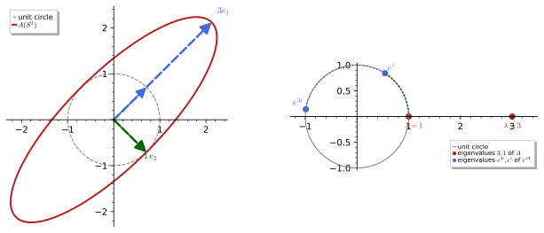
figures/hermitian_spectrum.sage.
Theorem 12 (Spectral theorem for Hermitian matrices) A Hermitian n \times n matrix A has real eigenvalues \lambda_1, \dots, \lambda_n (with multiplicity) and an orthonormal basis of eigenvectors e_1, \dots, e_n. Equivalently A = UDU^\dagger with U the unitary matrix whose columns are the e_k and D = \operatorname{diag}(\lambda_k), or A = \sum_\lambda\lambda P_\lambda with P_\lambda the orthogonal projection onto the eigenspace of \lambda, where \sum_\lambda P_\lambda = 1 and P_\lambda P_\mu = 0 for \lambda \neq \mu (the spectral decomposition). Proof. By induction on n. The characteristic polynomial has a root \lambda_1 \in \mathbb{C}, real by Exercise 117, with a unit eigenvector e_1. The orthogonal complement K = e_1^\perp is invariant under A: for v \perp e_1, \langle e_1, Av\rangle = \langle Ae_1, v\rangle = \lambda_1\langle e_1, v\rangle = 0. The restriction of A to K is Hermitian on an (n - 1)-dimensional space, so by induction K has an orthonormal eigenbasis e_2, \dots, e_n, and e_1, \dots, e_n is the required basis. The matrix forms follow by writing u = \sum_k\langle e_k, u\rangle e_k and applying A. The same statement holds for normal matrices (AA^\dagger = A^\dagger A), in particular for unitary matrices, with complex eigenvalues (Exercise 124).
Veriphy. Pending.
Lean. Pending.
Sage. Pending.
The Pauli matrices are the simplest case, where the two eigenprojections are \tfrac12(1 \pm \sigma). The first example also treats a general linear combination \mathbf{n}\cdot\boldsymbol\sigma, whose eigenvalues are \pm the length of \mathbf{n}.
Example 114 (Spectral decomposition of \mathbf{n}\cdot\boldsymbol\sigma) \sigma_1 = (+1)P_+ + (-1)P_- with P_\pm = \tfrac12(1 \pm \sigma_1), the projections onto (1, \pm1)/\sqrt2, and P_+ + P_- = 1, P_+P_- = 0. For real \mathbf{n} = (n_1, n_2, n_3), (\mathbf{n}\cdot\boldsymbol\sigma)^2 = |\mathbf{n}|^2\,1 by the anticommutation relations (Example 102), so the eigenvalues are \pm|\mathbf{n}| and the eigenprojections are P_\pm = \tfrac12(1 \pm \hat{\mathbf{n}}\cdot\boldsymbol\sigma) with \hat{\mathbf{n}} = \mathbf{n}/|\mathbf{n}|: the general 2 \times 2 Hermitian matrix a_0 + \mathbf{a}\cdot \boldsymbol\sigma has eigenvalues a_0 \pm |\mathbf{a}|.
The tridiagonal matrix of Exercise 116 has three distinct eigenvalues, and normalising its eigenvectors gives the unitary U of the theorem explicitly. The second example writes it down, which the Sage exercise below checks.
Example 115 (A 3 \times 3 example) For A = \begin{pmatrix} 2 & 1 & 0 \\ 1 & 2 & 1 \\ 0 & 1 & 2\end{pmatrix} the orthonormal eigenvectors are e_1 = (1, \sqrt2, 1)/2, e_2 = (1, 0, -1)/\sqrt2, e_3 = (1, -\sqrt2, 1)/2 for \lambda = 2 + \sqrt2, 2, 2 - \sqrt2, and A = UDU^{\mathsf{T}} with these as the columns of U; equivalently A = \sum_k\lambda_k|e_k\rangle \langle e_k| (Exercise 122). The complex Hermitian matrix \begin{pmatrix} 2 & i & 0 \\ -i & 2 & i \\ 0 & -i & 2\end{pmatrix} has the same eigenvalues with eigenvectors (1, \pm i\sqrt2, -1)/2, (1, 0, 1)/\sqrt2 (Proposition 3).
A rotation of the plane has no real eigenvector, but as a unitary matrix it is diagonalised over \mathbb{C} by the eigenvectors of \sigma_2. The third example shows this, the case of the theorem for normal matrices in which complex eigenvalues are unavoidable.
Example 116 (Diagonalising a rotation) R_\theta = e^{i\theta\sigma_2} (Exercise 105) is unitary, hence normal, and its eigenvectors are those of \sigma_2, (1, \pm i)/\sqrt2, with eigenvalues e^{\pm i\theta}: R_\theta = e^{i\theta}P_+ + e^{-i\theta}P_- with P_\pm = \tfrac12(1 \pm \sigma_2). Over \mathbb{R} the rotation has no eigenvectors for \theta \notin \pi\mathbb{Z}; the complex eigenvalues have modulus 1 as every eigenvalue of a unitary must.
Sage’s eigenmatrix_right returns D and a matrix of eigenvectors; normalising the columns gives the unitary of the theorem. The first exercise constructs it for the 3 \times 3 example and verifies the three forms of the decomposition.
Exercise 122 (The decomposition in Sage) For A of Example 115, obtain D and the normalised eigenvector matrix U in Sage, and check U^\dagger U = 1, A = UDU^\dagger, A = \sum_k\lambda_k|e_k\rangle\langle e_k| and \sum_k|e_k\rangle\langle e_k| = 1.
The eigenvectors returned are (1, \pm\sqrt2, 1) and (1, 0, -1); dividing by their norms 2 and \sqrt2 gives an orthogonal U, and the three identities hold exactly in \mathbb{Q}(\sqrt2):
A = matrix(SR, [[2, 1, 0], [1, 2, 1], [0, 1, 2]])
D, V = A.eigenmatrix_right()
U = matrix(SR, [c / c.norm() for c in V.columns()]).transpose().simplify_full()
print("D = diag", D.diagonal()); print("U ="); print(U)
print("U^T U = 1:", bool((U.transpose() * U).simplify_full() == identity_matrix(3)))
print("A = U D U^T:", bool((U * D * U.transpose()).simplify_full() == A))
Ps = [(U.column(k).column() * U.column(k).column().transpose()).simplify_full() for k in range(3)]
print("A = sum lambda_k P_k:", bool((sum(D[k, k] * Ps[k] for k in range(3))).simplify_full() == A), "; sum P_k = 1:", bool(sum(Ps).simplify_full() == identity_matrix(3)))
print("P_k P_l = delta_kl P_k:", all(bool((Ps[k] * Ps[l]).simplify_full() == (Ps[k] if k == l else 0)) for k in range(3) for l in range(3)))Output:
D = diag [-sqrt(2) + 2, sqrt(2) + 2, 2]
U =
[ 1/2 1/2 1/2*sqrt(2)]
[-1/2*sqrt(2) 1/2*sqrt(2) 0]
[ 1/2 1/2 -1/2*sqrt(2)]
U^T U = 1: True
A = U D U^T: True
A = sum lambda_k P_k: True ; sum P_k = 1: True
P_k P_l = delta_kl P_k: TrueTwo Hermitian matrices can be diagonalised in the same basis exactly when they commute, which is the mathematical content of “compatible observables”. The second exercise asks for the proof, through the invariance of eigenspaces.
Exercise 123 (Simultaneous diagonalisation) Show that Hermitian matrices A, B with [A, B] = 0 have a common orthonormal eigenbasis, and that conversely matrices with a common eigenbasis commute. Find a common eigenbasis of \sigma_3 and \begin{pmatrix} 1 & 0 \\ 0 & 5\end{pmatrix}, and explain why \sigma_1 and \sigma_3 have none.
If Au = \lambda u then A(Bu) = BAu = \lambda Bu, so B maps each eigenspace E_\lambda of A into itself; B restricted to E_\lambda is Hermitian and has an orthonormal eigenbasis by the theorem, and the union over \lambda of these bases is an orthonormal basis of eigenvectors of both A and B. Conversely, if A = UDU^\dagger and B = UD'U^\dagger then AB = UDD'U^\dagger = BA since diagonal matrices commute. \sigma_3 and \operatorname{diag}(1, 5) are both diagonal in the standard basis. [\sigma_1, \sigma_3] = -2i\sigma_2 \neq 0, so no common eigenbasis exists; indeed the eigenvectors (1, \pm1)/\sqrt2 of \sigma_1 are not eigenvectors of \sigma_3.
The theorem for normal matrices reduces to the Hermitian case by splitting A into commuting Hermitian and anti-Hermitian parts. The last exercise asks for this reduction and applies it to unitaries.
Exercise 124 (Normal matrices) Show that A is normal iff its parts B = \tfrac12(A + A^\dagger), C = \tfrac{1}{2i}(A - A^\dagger) commute, deduce the spectral theorem for normal matrices from Exercise 123, and conclude that every unitary matrix is U = \sum_k e^{i\theta_k}|e_k\rangle\langle e_k| with real \theta_k.
[B, C] = \tfrac{1}{4i}[A + A^\dagger, A - A^\dagger] = \tfrac{1}{4i}(-[A, A^\dagger] + [A^\dagger, A]) = \tfrac{1}{2i}(A^\dagger A - AA^\dagger), which vanishes iff A is normal. Then B and C have a common orthonormal eigenbasis e_k with Be_k = b_ke_k, Ce_k = c_ke_k, and Ae_k = (b_k + ic_k)e_k. A unitary is normal (U^\dagger U = 1 = UU^\dagger), so U = \sum_k\lambda_k|e_k\rangle\langle e_k| with |\lambda_k| = 1, that is, \lambda_k = e^{i\theta_k}.
Compact operators
Operators on infinite-dimensional spaces that behave most like matrices are those that squeeze bounded sets into sets with compact closure (Definition 19 of Sets, relations and topology). The definition below introduces them, with the finite-rank operators and their norm limits as the examples that cover every case met in this chapter.
Definition 25 (Compact operator) A bounded operator A on H is compact if the image of the unit ball has compact closure, equivalently if every bounded sequence u_n has a subsequence along which Au_n converges in norm. Operators of finite rank (finite-dimensional range) are compact, norm limits of compact operators are compact, and on a Hilbert space every compact operator is a norm limit of finite-rank operators. An operator with \sum_k\|Ae_k\|^2 < \infty for an orthonormal basis (e_k) is Hilbert-Schmidt, and Hilbert-Schmidt operators are compact; an integral operator with kernel k \in L^2(X \times X) is Hilbert-Schmidt with \sum_k\|Ae_k\|^2 = \int\int|k(x, y)|^2dx\,dy. The identity on an infinite-dimensional space is not compact.
Veriphy. Pending.
Lean. Pending.
Sage. Pending.
A matrix, a projection onto a finite-dimensional subspace and the rank-one operator |u\rangle\langle v| are compact for the simplest reason: their range is finite-dimensional. The first example records this and the non-compactness of the identity.
Example 117 (Finite rank and the identity) |u\rangle\langle v| has range \mathbb{C}u, and a projection onto an n-dimensional subspace has an n-dimensional range: both are compact, as bounded sets in finite dimensions have compact closure. The identity on \ell^2 is not: the orthonormal sequence \delta^{(n)} is bounded, but \|\delta^{(m)} - \delta^{(n)}\| = \sqrt2 for m \neq n, so no subsequence of 1\cdot\delta^{(n)} converges (Exercise 125).
A diagonal operator is compact exactly when its diagonal entries tend to zero, because it is then the norm limit of its truncations. The second example gives the argument, which is the model for the spectral theorem of the next subsection.
Example 118 (Diagonal operators) Let De_n = \lambda_ne_n for an orthonormal basis with \lambda_n \to 0, and D_N = \sum_{n \leq N}\lambda_n | e_n\rangle\langle e_n| its finite-rank truncation. Then \|D - D_N\| = \sup_{n > N}|\lambda_n| \to 0, so D is compact. For \lambda_n = 1/n, D is even Hilbert-Schmidt (\sum 1/n^2 < \infty); for \lambda_n = 1/\sqrt n it is compact but not Hilbert-Schmidt; for \lambda_n = 1 it is the identity.
Integral operators with square-integrable kernels are the infinite matrices with square-summable entries, and the Green’s operator of a boundary value problem is the prime example. The third example is the Green’s operator of -d^2/dx^2 on [0, 1] with Dirichlet conditions (Green’s functions).
Example 119 (The Green’s operator of -d^2/dx^2) (Gf)(x) = \int_0^1g(x, y)f(y)\,dy with g(x, y) = \min(x, y) - xy solves -u'' = f, u(0) = u(1) = 0 (Green’s functions). The kernel is real, symmetric and bounded, so G is self-adjoint and Hilbert-Schmidt with \int_0^1\int_0^1g^2\,dx\,dy = 1/90 (Exercise 126), hence compact. Its eigenfunctions are \sqrt2\sin n\pi x with eigenvalues 1/(n\pi)^2 \to 0, and 1/90 = \sum_n 1/(n\pi)^4 is Parseval’s identity for the kernel.
Non-compactness of the identity, and more generally of any projection of infinite rank, is proved with an orthonormal sequence. The first exercise asks for these proofs and for the observation that an invertible operator is never compact in infinite dimensions.
Exercise 125 (Which projections are compact?) Show that an orthogonal projection is compact iff its range is finite-dimensional, and that no invertible bounded operator on an infinite-dimensional Hilbert space is compact.
If the range K is infinite-dimensional, pick an orthonormal sequence e_n in K (Gram-Schmidt on any independent sequence): Pe_n = e_n has no convergent subsequence since \|e_m - e_n\| = \sqrt2, so P is not compact; if K is finite-dimensional, P has finite rank. If A is invertible and compact, then 1 = A^{-1}A would map bounded sequences to sequences with convergent subsequences (apply A, extract, then apply the bounded A^{-1}), making the identity compact, which it is not in infinite dimensions.
The Hilbert-Schmidt norm of the Green’s kernel is a double integral that Sage evaluates exactly, and comparing it with the sum of squared eigenvalues confirms the eigenvalues. The second exercise does this and computes the kernel’s expansion coefficients.
Exercise 126 (The Hilbert-Schmidt norm of the Green’s kernel) With Sage, compute \int_0^1\int_0^1(\min(x, y) - xy)^2\,dx\,dy, compare with \sum_{n \geq 1}1/(n\pi)^4, and check \int_0^1\int_0^1 g(x, y)\,\sqrt2\sin n\pi x\,\sqrt2\sin m\pi y\,dx\,dy = \delta_{mn}/(n\pi)^2 for m, n \leq 3.
Both quantities equal 1/90, since \sum 1/n^4 = \pi^4/90 (Exercise 86); the matrix elements of G in the sine basis are diagonal with entries 1/(n\pi)^2:
x, y = var("x y", domain="real")
assume(x > 0, x < 1)
g_below = y - x * y # g for y <= x (min = y)
g_above = x - x * y # g for y >= x (min = x)
hs = integrate(integrate(g_below ** 2, y, 0, x) + integrate(g_above ** 2, y, x, 1), x, 0, 1)
n = var("n", domain="integer")
print("int int g^2 =", hs, "; sum 1/(n pi)^4 =", sum(1 / (n * pi) ** 4, n, 1, oo))
def elem(m, k):
em = sqrt(2) * sin(m * pi * x); ek = sqrt(2) * sin(k * pi * y)
inner = integrate(g_below * ek, y, 0, x) + integrate(g_above * ek, y, x, 1)
return integrate(em * inner, x, 0, 1).simplify_full()
print("matrix elements <e_m, G e_k> for m, k <= 3:")
print(matrix(SR, 3, 3, lambda a, b: elem(a + 1, b + 1)))
print("diagonal = 1/(n pi)^2:", all(bool(elem(k, k) == 1 / (k * pi) ** 2) for k in [1, 2, 3]))Output:
int int g^2 = 1/90 ; sum 1/(n pi)^4 = 1/90
matrix elements <e_m, G e_k> for m, k <= 3:
[ pi^(-2) 0 0]
[ 0 1/4/pi^2 0]
[ 0 0 1/9/pi^2]
diagonal = 1/(n pi)^2: TrueThat a norm limit of finite-rank operators is compact is the statement which makes the diagonal and Hilbert-Schmidt examples work, and its proof is a diagonal argument on subsequences. The last exercise asks for it and for the Hilbert-Schmidt case.
Exercise 127 (Limits of finite-rank operators) Prove that if \|A - A_N\| \to 0 with each A_N of finite rank, then A is compact. Deduce that a Hilbert-Schmidt operator is compact by taking A_N = AP_N with P_N the projection onto e_1, \dots, e_N.
Let u_n be bounded by M. Since A_1 has finite rank, A_1u_n has a convergent subsequence; along it A_2u_n has a convergent subsequence, and so on. The diagonal subsequence u_{n_k} makes every A_Nu_{n_k} converge. Then \|Au_{n_j} - Au_{n_k}\| \leq 2M\|A - A_N\| + \|A_Nu_{n_j} - A_Nu_{n_k}\|, and choosing N large and then j, k large makes this small: Au_{n_k} is Cauchy, hence convergent. For Hilbert-Schmidt A, \|A - AP_N\|^2 \leq \|A(1 - P_N)\|^2 \leq \sum_{k > N}\|Ae_k\|^2 \to 0 (expand u = \sum\langle e_k, u\rangle e_k and use Cauchy-Schwarz), and AP_N has finite rank.
The spectral theorem for compact self-adjoint operators
Compact self-adjoint operators are the operators for which the matrix spectral theorem survives word for word, with countably many eigenvalues tending to zero. The theorem below, quoted without proof, states this; the proof mimics the matrix case, using compactness to produce the first eigenvector as a maximiser of |\langle u, Au\rangle|.
Theorem 13 (Spectral theorem for compact self-adjoint operators) Let A be a compact self-adjoint operator on a Hilbert space H. Then H has an orthonormal basis of eigenvectors of A; the non-zero eigenvalues are real, each of finite multiplicity, and form a finite set or a sequence \lambda_k \to 0; \|A\| = \max_k|\lambda_k| is attained; and A = \sum_k\lambda_k|e_k\rangle\langle e_k| with convergence in operator norm. For an integral operator with Hermitian kernel k \in L^2(X \times X) the kernel itself expands as k(x, y) = \sum_k\lambda_ke_k(x)\overline{e_k(y)} in L^2(X \times X) (the Hilbert-Schmidt theorem). The theorem is quoted; the first eigenvalue is characterised in Exercise 129.
Veriphy. Pending.
Lean. Pending.
Sage. Pending.
For a diagonal operator with \lambda_n \to 0 the theorem is visible from the definition, and the bilateral shift shows what is lost without compactness. The first example makes the comparison.
Example 120 (Diagonal operators and the shift) D = \sum_n\lambda_n|e_n\rangle\langle e_n| with \lambda_n \to 0 real is compact self-adjoint (Example 118), and the theorem reproduces its definition: eigenvalues \lambda_n, eigenbasis e_n, norm \max|\lambda_n|. The bilateral shift V is normal but not compact, and its spectrum, the unit circle, contains no eigenvalue at all (Example 113): without compactness the spectrum need not consist of eigenvalues.
The Green’s operator of Example 119 is compact self-adjoint, and the theorem gives the Fourier sine expansion of its kernel. The second example writes it out; the identity is a Fourier series of Fourier series.
Example 121 (The Green’s kernel as an eigenfunction expansion) For g(x, y) = \min(x, y) - xy on [0, 1]^2, Ge_n = e_n/(n\pi)^2 with e_n = \sqrt2\sin n\pi x (Exercise 128), and the Hilbert-Schmidt theorem gives \min(x, y) - xy = \sum_{n \geq 1}\frac{2\sin n\pi x \sin n\pi y}{n^2\pi^2}. At x = y = \tfrac12 this reads \tfrac14 = \tfrac{2}{\pi^2}\sum_{n \text{ odd}}1/n^2, that is, \sum_{n \text{ odd}}1/n^2 = \pi^2/8, consistent with \sum 1/n^2 = \pi^2/6.
The Laplacian on a compact space is unbounded, but its inverse on the complement of the constants is compact, and the theorem applied to the inverse gives the Laplacian a discrete spectrum. The third example states this principle, which Section 1.8 uses for the circle, the sphere and the torus.
Example 122 (Discrete spectra from compact inverses) If an operator L (such as -d^2/dx^2 with Dirichlet conditions, or -\Delta on a compact surface restricted to functions of mean zero) has a compact self-adjoint inverse G, then Ge_k = \mu_ke_k with \mu_k \to 0 gives Le_k = \mu_k^{-1}e_k: L has an orthonormal eigenbasis with eigenvalues \lambda_k = 1/\mu_k \to \infty, each of finite multiplicity. This is how the Sturm-Liouville theorem (Theorem 2 of Differential equations, Exercise 130) and the discreteness of the Laplacian’s spectrum on compact spaces (Theorem 18) are proved.
The eigenvalue equation Ge_n = e_n/(n\pi)^2 is an integral identity that Sage verifies exactly, and the partial sums of the kernel expansion can be compared with the kernel. The first exercise does both.
Exercise 128 (Eigenfunctions of the Green’s operator) With Sage, verify \int_0^1(\min(x, y) - xy)\sin n\pi y\,dy = \sin n\pi x/(n\pi)^2 for n = 1, 2, 3, and compare the partial sums \sum_{n \leq N}2\sin n\pi x\sin n\pi y/(n\pi)^2 at (x, y) = (\tfrac13, \tfrac12) for N = 1, 3, 10 with \min(x, y) - xy = \tfrac16.
Splitting the integral at y = x and integrating by parts twice gives the eigenvalue equation; the partial sums are 0.1755 for N = 1 and N = 3 (the n = 2, 3 terms vanish at these points) and 0.1649 for N = 10, approaching 1/6 = 0.1667:
x, y = var("x y", domain="real")
assume(x > 0, x < 1)
for n in [1, 2, 3]:
Gs = integrate((y - x * y) * sin(n * pi * y), y, 0, x) + integrate((x - x * y) * sin(n * pi * y), y, x, 1)
print("n =", n, ": G sin(n pi x) =", Gs.simplify_full(), "; equals sin(n pi x)/(n pi)^2:", bool((Gs - sin(n * pi * x) / (n * pi) ** 2).simplify_full() == 0))
x0, y0 = QQ(1) / 3, QQ(1) / 2
exact = min(x0, y0) - x0 * y0
for N in [1, 3, 10]:
S = sum(2 * sin(k * pi * x0) * sin(k * pi * y0) / (k * pi) ** 2 for k in range(1, N + 1))
print("N =", N, ": partial sum =", S.n(digits=6), " exact min(x, y) - xy =", exact, "=", exact.n(digits=6))Output:
n = 1 : G sin(n pi x) = sin(pi*x)/pi^2 ; equals sin(n pi x)/(n pi)^2: True
n = 2 : G sin(n pi x) = 1/2*cos(pi*x)*sin(pi*x)/pi^2 ; equals sin(n pi x)/(n pi)^2: True
n = 3 : G sin(n pi x) = 1/9*(4*cos(pi*x)^2 - 1)*sin(pi*x)/pi^2 ; equals sin(n pi x)/(n pi)^2: True
N = 1 : partial sum = 0.175493 exact min(x, y) - xy = 1/6 = 0.166667
N = 3 : partial sum = 0.175493 exact min(x, y) - xy = 1/6 = 0.166667
N = 10 : partial sum = 0.164892 exact min(x, y) - xy = 1/6 = 0.166667The largest eigenvalue of a compact self-adjoint operator is the maximum of the Rayleigh quotient, and the expansion in eigenvectors proves it in two lines. The second exercise asks for this and for the characterisation of the next eigenvalue.
Exercise 129 (The Rayleigh quotient) For A = \sum_k\lambda_k|e_k\rangle\langle e_k| compact self-adjoint with \lambda_1 \geq \lambda_2 \geq \dots \geq 0, show that \lambda_1 = \max_{\|u\| = 1}\langle u, Au\rangle, attained at e_1, and that \lambda_2 = \max\{\langle u, Au\rangle : \|u\| = 1, u \perp e_1\}.
With u = \sum c_ke_k and \sum|c_k|^2 = 1, \langle u, Au\rangle = \sum_k\lambda_k|c_k|^2 \leq \lambda_1\sum|c_k|^2 = \lambda_1, with equality for u = e_1. If u \perp e_1 then c_1 = 0 and \sum_{k \geq 2}\lambda_k|c_k|^2 \leq \lambda_2, with equality at e_2. Iterating gives the min-max characterisation of all eigenvalues, and for the Green’s operator \lambda_1 = 1/\pi^2 is the maximum of \int\int g(x, y)\bar u(x)u(y) over unit u.
The Sturm-Liouville theorem of Boundary value and Sturm-Liouville problems was quoted; its proof is the spectral theorem for the Green’s operator. The last exercise asks the reader to trace each clause of that theorem to a clause of the one above.
Exercise 130 (Sturm-Liouville from the spectral theorem) Assume that a regular Sturm-Liouville operator L has a Green’s operator G that is compact, self-adjoint and injective on L^2. Deduce from Theorem 13 that the eigenvalues of L are real, form a sequence |\lambda_n| \to \infty, have orthogonal eigenfunctions, and that the eigenfunctions are complete.
G has an orthonormal eigenbasis e_n with real eigenvalues \mu_n \to 0; injectivity excludes \mu_n = 0, so every e_n satisfies Le_n = \mu_n^{-1}e_n =: \lambda_ne_n with real \lambda_n and |\lambda_n| = 1/|\mu_n| \to \infty. Eigenfunctions for distinct eigenvalues are orthogonal by Exercise 117 applied to G. Completeness of the e_n in L^2 is the statement that they form an orthonormal basis, which the theorem asserts; so every f \in L^2 is the norm limit of its expansion \sum\langle e_n, f\rangle e_n, the completeness clause of Theorem 2 of Differential equations.
The functional calculus
Once an operator is diagonal, any function can be applied to it by applying the function to the diagonal. The definition below turns this into the functional calculus, whose most important instance is the unitary e^{itA} generated by a self-adjoint A, and quotes Stone’s theorem, which says that all one-parameter unitary groups arise this way.
Definition 26 (Functional calculus) For a self-adjoint operator with spectral decomposition A = \sum_k\lambda_kP_k (a Hermitian matrix or a compact self-adjoint operator) and a function f on the spectrum, f(A) = \sum_kf(\lambda_k)P_k. This functional calculus agrees with the algebraic definition for polynomials, satisfies (fg)(A) = f(A)g(A), f(A)^\dagger = \bar f(A), \|f(A)\| = \max_k|f(\lambda_k)|, and \sigma(f(A)) = f(\sigma(A)) (the spectral mapping theorem); for a multiplication operator, f(M_g) = M_{f \circ g}. In particular e^{itA} is unitary for real t with e^{itA}e^{isA} = e^{i(t + s)A}, and \sqrt A = \sum\sqrt{\lambda_k}P_k is the positive square root of a positive A. For a general bounded self-adjoint operator the same calculus exists with the sum replaced by an integral over the spectrum (the general spectral theorem, quoted); Stone’s theorem (quoted) states that every strongly continuous family of unitaries with U(t)U(s) = U(t + s) is U(t) = e^{itA} for a unique self-adjoint, possibly unbounded, A.
Veriphy. Pending.
Lean. Pending.
Sage. Pending.
The exponential of i\theta times a Pauli matrix is computed from the two eigenprojections, and the result is the formula behind Exercise 105. The first example derives it for a general direction \hat{\mathbf{n}}.
Example 123 (e^{i\theta\,\hat{\mathbf{n}}\cdot\boldsymbol\sigma}) With \hat{\mathbf{n}}\cdot\boldsymbol\sigma = P_+ - P_- (Example 114), e^{i\theta\hat{\mathbf n}\cdot\boldsymbol\sigma} = e^{i\theta}P_+ + e^{-i\theta}P_- = \cos\theta(P_+ + P_-) + i\sin\theta(P_+ - P_-) = \cos\theta\,1 + i\sin\theta\,\hat{\mathbf{n}}\cdot\boldsymbol\sigma, a unitary with eigenvalues e^{\pm i\theta} and determinant 1. These are the elements of SU(2), and \theta \mapsto e^{i\theta\hat{\mathbf n}\cdot\boldsymbol\sigma} is the one-parameter subgroup generated by \hat{\mathbf{n}}\cdot\boldsymbol\sigma (The exponential map).
A positive matrix has a unique positive square root, computed from its spectral decomposition, and the square root of A^\dagger A gives every matrix a polar decomposition. The second example computes \sqrt A for the matrix of the figure and states the polar decomposition.
Example 124 (Square roots) For A = \begin{pmatrix} 2 & 1 \\ 1 & 2\end{pmatrix} = 3P_+ + 1P_- with P_\pm = \tfrac12(1 \pm \sigma_1), \sqrt A = \sqrt3P_+ + P_- = \tfrac{\sqrt3 + 1}{2}1 + \tfrac{\sqrt3 - 1}{2}\sigma_1, and indeed (\sqrt A)^2 = 3P_+ + P_- = A (Proposition 3). For any matrix B, |B| = \sqrt{B^\dagger B} is positive with \||B|u\| = \|Bu\|, and B = U|B| for a unitary U (the polar decomposition); the singular values of B are the eigenvalues of |B| (Exercise 113).
For a multiplication operator the functional calculus is composition of functions, and the spectral mapping theorem is then the statement that the range of f \circ g is f of the range of g. The third example records this and the consequence that e^{itM_x} is multiplication by a phase.
Example 125 (Functions of multiplication operators) f(M_g) = M_{f \circ g}: e^{itM_x} on L^2(0, 1) is multiplication by e^{itx}, unitary with spectrum \{e^{itx} : x \in [0, 1]\}, an arc of the circle, which is f(\sigma(M_x)) for f(\lambda) = e^{it\lambda}. For the Fourier-transformed picture, e^{itp} with p = -i\,d/dx on L^2(\mathbb{R}) is multiplication by e^{itk} on \hat f(k), which is the translation f(x) \mapsto f(x + t) (The Fourier transform): momentum generates translations (Exercise 136).
Sage computes e^{iA} either from the spectral decomposition or by its built-in matrix exponential, and the two must agree. The first exercise compares them for the matrix of the figure, checks unitarity and verifies the square root.
Exercise 131 (e^{iA} and \sqrt A in Sage) For A = \begin{pmatrix} 2 & 1 \\ 1 & 2\end{pmatrix}, compute e^{iA} in Sage from U\operatorname{diag} (e^{3i}, e^{i})U^\dagger and from the matrix exponential, check that they agree and are unitary with eigenvalues e^{3i}, e^{i}, and verify (\sqrt A)^2 = A for \sqrt A = \tfrac{\sqrt3 + 1}{2}1 + \tfrac{\sqrt3 - 1}{2} \sigma_1.
e^{iA} = e^{2i}(\cos 1\,1 + i\sin 1\,\sigma_1), since A = 2\cdot1 + \sigma_1 with commuting summands; its determinant is e^{4i} = e^{i\operatorname{tr}A}:
A = matrix(SR, [[2, 1], [1, 2]]); s1 = matrix(SR, [[0, 1], [1, 0]])
D, V = A.eigenmatrix_right()
U = matrix(SR, [c / c.norm() for c in V.columns()]).transpose()
E1 = (U * diagonal_matrix([exp(I * d) for d in D.diagonal()]) * U.transpose()).apply_map(lambda e: e.rectform().simplify_full())
E2 = (I * A).exp().apply_map(lambda e: e.rectform().simplify_full())
print("e^{iA} from U diag(e^{i lambda}) U^T ="); print(E1)
print("agrees with the matrix exponential:", bool((E1 - E2).simplify_full() == 0))
print("unitary:", bool((E1 * E1.conjugate_transpose()).simplify_full() == identity_matrix(2)), "; det(e^{iA} - e^{3i}) and det(e^{iA} - e^{i}) vanish:", [abs((E1 - exp(I * lam) * identity_matrix(2)).det().n(100)) < 1e-25 for lam in [3, 1]])
t = var("t", domain="real")
Et = (I * t * A).exp().apply_map(lambda e: e.rectform().simplify_full())
Et2 = (exp(2 * I * t) * (cos(t) * identity_matrix(2) + I * sin(t) * s1)).apply_map(lambda e: e.rectform().trig_reduce().simplify_full())
print("e^{itA} = e^{2it}(cos t + i sin t sigma_1) for symbolic t:", bool((Et - Et2).apply_map(lambda e: e.trig_reduce().simplify_full()) == 0))
print("det e^{iA} = e^{4i} = e^{i tr A}:", abs(E1.det().n(100) - exp(4 * I).n(100)) < 1e-25)
sq = (sqrt(3) + 1) / 2 * identity_matrix(2) + (sqrt(3) - 1) / 2 * s1
print("(sqrt A)^2 = A:", bool((sq * sq).simplify_full() == A), "; sqrt A positive (eigenvalues):", sq.eigenvalues())Output:
e^{iA} from U diag(e^{i lambda}) U^T =
[1/2*cos(3) + 1/2*cos(1) + 1/2*I*sin(3) + 1/2*I*sin(1) 1/2*cos(3) - 1/2*cos(1) + 1/2*I*sin(3) - 1/2*I*sin(1)]
[1/2*cos(3) - 1/2*cos(1) + 1/2*I*sin(3) - 1/2*I*sin(1) 1/2*cos(3) + 1/2*cos(1) + 1/2*I*sin(3) + 1/2*I*sin(1)]
agrees with the matrix exponential: True
unitary: True ; det(e^{iA} - e^{3i}) and det(e^{iA} - e^{i}) vanish: [True, True]
e^{itA} = e^{2it}(cos t + i sin t sigma_1) for symbolic t: True
det e^{iA} = e^{4i} = e^{i tr A}: True
(sqrt A)^2 = A: True ; sqrt A positive (eigenvalues): [sqrt(3), 1]The unitarity of e^{itA} and its group law follow from the functional calculus, and its derivative is iAe^{itA}, which is the Schrödinger equation in disguise. The second exercise asks for these three facts.
Exercise 132 (The unitary group e^{itA}) For Hermitian A prove that (e^{itA})^\dagger = e^{-itA}, that e^{itA} is unitary, that e^{itA}e^{isA} = e^{i(t + s)A}, and that \tfrac{d}{dt}e^{itA} = iAe^{itA}; conclude that u(t) = e^{-itA}u_0 solves i\,du/dt = Au with u(0) = u_0 and \|u(t)\| = \|u_0\|.
(\sum e^{it\lambda_k}P_k)^\dagger = \sum e^{-it\lambda_k}P_k = e^{-itA} since P_k^\dagger = P_k and \lambda_k is real. Then e^{itA}e^{-itA} = \sum_{j, k}e^{it(\lambda_j - \lambda_k)}P_jP_k = \sum_kP_k = 1 using P_jP_k = \delta_{jk}P_k, and the same computation gives e^{itA}e^{isA} = \sum e^{i(t + s)\lambda_k}P_k. Differentiating termwise, \tfrac{d}{dt}\sum e^{it\lambda_k}P_k = \sum i\lambda_ke^{it\lambda_k}P_k = iA\,e^{itA}. Hence u(t) = e^{-itA}u_0 has i\,du/dt = Au, and \|u(t)\| = \|u_0\| because e^{-itA} is unitary.
The resolvent of a diagonalisable operator is a sum of eigenprojections weighted by (\lambda_k - z)^{-1}, and the projections can be recovered from it either by a contour integral or by Lagrange interpolation. The last exercise asks for both formulas.
Exercise 133 (Eigenprojections from the resolvent) For A = \sum_k\lambda_kP_k with distinct \lambda_k, show that (A - z)^{-1} = \sum_k(\lambda_k - z)^{-1}P_k for z \notin \sigma(A), that P_k = -\frac{1}{2\pi i}\oint_{\gamma_k}(A - z)^{-1}dz for a small circle \gamma_k around \lambda_k, and that P_k = \prod_{j \neq k}\frac{A - \lambda_j}{\lambda_k - \lambda_j}.
(A - z)\sum_k(\lambda_k - z)^{-1}P_k = \sum_k(\lambda_k - z)(\lambda_k - z)^{-1}P_k = \sum_kP_k = 1, using (A - z)P_k = (\lambda_k - z)P_k. Integrating over \gamma_k, only the term j = k has a pole inside, and \oint(\lambda_k - z)^{-1}dz = -2\pi i (Theorem 4 of Complex analysis), giving the contour formula. For the product, apply it to the spectral decomposition: \prod_{j \neq k}(A - \lambda_j)/(\lambda_k - \lambda_j) = \sum_m\prod_{j \neq k}\frac{\lambda_m - \lambda_j}{\lambda_k - \lambda_j}P_m, and the coefficient is 1 for m = k and 0 for m \neq k (one factor vanishes): this is Lagrange interpolation of the indicator function of \lambda_k.
Worked computations
The spectral decomposition of the symmetric matrix of the figure and of a complex Hermitian 3 \times 3 matrix can be carried out exactly, and their exponentials and polynomials then follow from the functional calculus. The proposition records the results.
Proposition 3 (Spectral decompositions of explicit Hermitian matrices) A = \begin{pmatrix} 2 & 1 \\ 1 & 2\end{pmatrix} has eigenvalues 3, 1 with orthonormal eigenvectors (1, \pm1)/\sqrt2, A = 3P_+ + P_-, e^{iA} = e^{2i}(\cos 1 + i\sin 1\,\sigma_1) is unitary with eigenvalues e^{3i}, e^{i}, and (\sqrt3P_+ + P_-)^2 = A; the semi-axes of A(S^1) are 3 and 1 along the eigenvectors. M = \begin{pmatrix} 2 & i & 0 \\ -i & 2 & i \\ 0 & -i & 2\end{pmatrix} has eigenvalues 2 \pm \sqrt2, 2 with orthonormal eigenvectors forming a unitary U, M = UDU^\dagger, p(M) = \sum_kp(\lambda_k)P_k for p(x) = x^3 - 2x + 1, and e^{iM} is unitary with \det e^{iM} = e^{6i}.
Veriphy. Pending; candidate recipes matrix_normal_form and matrix_exponential.
Lean. Pending.
Sage. Exact computation (figures/hermitian_spectrum.sage, symbolic eigendecompositions and matrix exponentials).
For a symmetric matrix the ellipse of Section 1.5 has its axes along the eigenvectors and the singular values are the absolute eigenvalues. The first example reads this off the left panel of the figure and contrasts it with the non-symmetric matrix of Figure 13.
Example 126 (The ellipse of a symmetric matrix) A = \begin{pmatrix} 2 & 1 \\ 1 & 2\end{pmatrix} stretches (1, 1)/\sqrt2 by 3 and (1, -1)/\sqrt2 by 1, so A(S^1) is the ellipse with these axes and \|A\| = 3, the largest eigenvalue: for Hermitian A, A^\dagger A = A^2 has eigenvalues \lambda_k^2 and the singular values are |\lambda_k|. For the non-symmetric \begin{pmatrix} 2 & 1 \\ 0 & 1\end{pmatrix} the axes were along neither eigenvector and the norm exceeded both eigenvalues (Example 87).
The unitary e^{itA} moves each eigenvalue of A around the unit circle at its own angular speed, and the right panel of the figure shows the two resulting arcs. The second example writes the matrix as a function of t.
Example 127 (The curve t \mapsto e^{itA}) e^{itA} = e^{3it}P_+ + e^{it}P_- = e^{2it}(\cos t\,1 + i\sin t\,\sigma_1) for A = 2 + \sigma_1: a curve in U(2) starting at 1, with eigenvalues e^{3it} and e^{it} tracing the circle at speeds 3 and 1. At t = 2\pi both return to 1, so e^{2\pi iA} = 1: the group \{e^{itA}\} is periodic because the eigenvalues of A are integers, and would be dense in a torus for incommensurable eigenvalues.
The trace and determinant of f(A) are the sum and product of f(\lambda_k), which gives identities such as \det e^{iA} = e^{i\operatorname{tr}A}. The third example lists the values for the two matrices of the proposition and previews the traces of Section 1.10.
Example 128 (Traces and determinants of f(A)) \operatorname{tr}f(A) = \sum_kf(\lambda_k) and \det f(A) = \prod_kf(\lambda_k), since f(A) is diagonal in the eigenbasis. For A = \begin{pmatrix} 2 & 1 \\ 1 & 2\end{pmatrix}: \operatorname{tr}e^{iA} = e^{3i} + e^{i}, \det e^{iA} = e^{4i} = e^{i\operatorname{tr}A}, \operatorname{tr}\sqrt A = \sqrt3 + 1; for M of the proposition, \det e^{iM} = e^{i(2 + \sqrt2 + 2 + 2 - \sqrt2)} = e^{6i}. The heat traces \operatorname{tr}e^{-tA} = \sum_ke^{-t\lambda_k} of Section 1.10 are the same identity for infinite spectra.
A Hermitian tridiagonal matrix with \pm i off the diagonal has eigenvalues involving the golden ratio, which Sage finds exactly. The first exercise asks for its decomposition and for the trace of e^{iA} in two ways.
Exercise 134 (A 4 \times 4 Hermitian matrix) For A the 4 \times 4 matrix with 1 on the diagonal, i on the superdiagonal and -i on the subdiagonal, find the eigenvalues with Sage and express them through \varphi = (1 + \sqrt5)/2, build the unitary U of eigenvectors, check U^\dagger U = 1 and A = UDU^\dagger, and verify \operatorname{tr}e^{iA} = \sum_ke^{i\lambda_k} numerically.
The eigenvalues are 1 + 2\cos(k\pi/5), k = 1, \dots, 4, that is, 1 \pm \varphi and 1 \pm 1/\varphi; the eigenvalues of a tridiagonal Toeplitz matrix with entries (c, a, b) are a + 2\sqrt{bc}\cos(k\pi/(n + 1)) and here bc = (i)(-i) = 1:
A = matrix(SR, 4, 4, lambda j, k: 1 if j == k else (I if k == j + 1 else (-I if k == j - 1 else 0)))
print("A ="); print(A); print("Hermitian:", A.is_hermitian())
D, V = A.eigenmatrix_right()
ev = [e.simplify_full() for e in D.diagonal()]
phi = (1 + sqrt(5)) / 2
print("eigenvalues:", ev)
same = lambda L1, L2: all(abs(a - b) < 1e-12 for a, b in zip(sorted(L1), sorted(L2)))
print("equal to {1 + phi, 1 + 1/phi, 1 - 1/phi, 1 - phi}:", same([e.n() for e in ev], [(1 + phi).n(), (1 + 1 / phi).n(), (1 - 1 / phi).n(), (1 - phi).n()]), "; = 1 + 2 cos(k pi/5):", same([e.n() for e in ev], [(1 + 2 * cos(k * pi / 5)).n() for k in range(1, 5)]))
U = matrix(SR, [c / c.norm() for c in V.columns()]).transpose().simplify_full()
print("U^dagger U = 1:", bool((U.conjugate_transpose() * U).simplify_full() == identity_matrix(4)), "; A = U D U^dagger:", bool((U * D * U.conjugate_transpose()).simplify_full() == A))
E = (U * diagonal_matrix([exp(I * d) for d in D.diagonal()]) * U.conjugate_transpose())
print("tr e^{iA} =", E.trace().n(digits=10), "; sum e^{i lambda_k} =", sum(exp(I * e) for e in ev).n(digits=10), "; via Sage's exp:", (I * A).exp().trace().n(digits=10))Output:
A =
[ 1 I 0 0]
[-I 1 I 0]
[ 0 -I 1 I]
[ 0 0 -I 1]
Hermitian: True
eigenvalues: [-1/2*sqrt(5) + 1/2, 1/2*sqrt(5) + 1/2, -1/2*sqrt(5) + 3/2, 1/2*sqrt(5) + 3/2]
equal to {1 + phi, 1 + 1/phi, 1 - 1/phi, 1 - phi}: True ; = 1 + 2 cos(k pi/5): True
U^dagger U = 1: True ; A = U D U^dagger: True
tr e^{iA} = 0.8296872575 + 1.292161344*I ; sum e^{i lambda_k} = 0.8296872575 + 1.292161344*I ; via Sage's exp: 0.8296872574 + 1.292161344*ITwo polynomials that agree on the spectrum define the same operator, and this is the reason the functional calculus is well defined and the Cayley-Hamilton theorem holds. The second exercise asks for these consequences.
Exercise 135 (Polynomials agreeing on the spectrum) For a Hermitian matrix A show that p(A) = q(A) whenever p(\lambda_k) = q(\lambda_k) for all eigenvalues, that the characteristic polynomial satisfies \chi_A(A) = 0 (Cayley-Hamilton), and that f(A) for any f equals p(A) for the interpolation polynomial p with p(\lambda_k) = f(\lambda_k).
p(A) = \sum_kp(\lambda_k)P_k = \sum_kq(\lambda_k)P_k = q(A). \chi_A(\lambda_k) = 0 for every eigenvalue, so \chi_A(A) = \sum_k0\cdot P_k = 0. The Lagrange polynomial p = \sum_kf(\lambda_k)\prod_{j \neq k}(x - \lambda_j)/(\lambda_k - \lambda_j) has p(\lambda_k) = f(\lambda_k), so f(A) = \sum f(\lambda_k)P_k = p(A); for A = \begin{pmatrix} 2 & 1 \\ 1 & 2\end{pmatrix} and f = \exp, p(x) = \tfrac{e^3 - e}{2}x + \tfrac{3e - e^3}{2} and e^A = p(A).
Stone’s theorem identifies the generator of a unitary group, and two cases can be worked out by hand: a rotation group in the plane and the translation group on the line. The last exercise asks for both generators.
Exercise 136 (Generators of unitary groups) Find the Hermitian A with R_t = \begin{pmatrix} \cos t & \sin t \\ -\sin t & \cos t\end{pmatrix} = e^{itA}, and show formally that the translations (T_af)(x) = f(x - a) on L^2(\mathbb{R}) satisfy T_a = e^{-iap} with p = -i\,d/dx by expanding f(x - a) in a Taylor series.
\tfrac{d}{dt}R_t|_{t = 0} = \begin{pmatrix} 0 & 1 \\ -1 & 0\end{pmatrix} = i\sigma_2, so A = \sigma_2 and R_t = e^{it\sigma_2} (Exercise 105), with eigenvalues e^{\pm it} on the eigenvectors (1, \pm i)/\sqrt2. For translations, f(x - a) = \sum_n\frac{(-a)^n}{n!}f^{(n)}(x) = e^{-a\,d/dx}f(x) = e^{-ia(-i\,d/dx)}f(x) = e^{-iap}f(x) for analytic f; Stone’s theorem makes this rigorous on L^2(\mathbb{R}) with p the self-adjoint momentum operator of Section 1.8, and the Fourier transform turns e^{-iap} into multiplication by e^{-iak} (Example 125).
Compact and Fredholm operators
Compact operators behave like matrices, and an operator that is invertible up to finite-dimensional errors behaves like a matrix between spaces of different dimension. This part extends the compact operators of Definition 25 to Banach spaces, proves the Fredholm alternative for equations (1 - K)u = f with compact K, defines Fredholm operators and their index, the difference between the number of solutions and the number of conditions, and shows that the index is stable under compact and small perturbations and constant along continuous paths. Toeplitz operators and their winding numbers are the model computation; the index of the Dirac operator in the later chapters is an index in exactly this sense. The sources are Arcozzi (2025, Ch. 4) and Waterstraat (2016, Ch. 1).
Compact operators
An operator is compact when it maps bounded sets into sets that are almost finite-dimensional. Integral operators are the historical examples, and the figure shows how fast the singular values of two of them, the Volterra operator and the Green’s operator of -d^2/dx^2, decrease, compared with the identity, whose singular values are all 1.
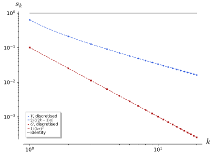
figures/fa2-compact-singular-values.sage.
Definition 27 (Compact operator between Banach spaces) A linear operator T : X \to Y between Banach spaces is compact if the image of the unit ball has compact closure in Y, equivalently if every bounded sequence (x_n) has a subsequence along which Tx_n converges Arcozzi (2025, sec. 4.1.2); Waterstraat (2016, Def. 1.1.4). Compact operators are bounded; they form a closed subspace \mathcal{K}(X, Y) of \mathcal{B}(X, Y), and products of compact and bounded operators are compact Waterstraat (2016, Lemma 1.1.5). Operators of finite rank and their norm limits are compact, and on a Hilbert space every compact operator is such a limit Arcozzi (2025, Thm. 4.3). A compact operator maps weakly convergent sequences to norm convergent ones Arcozzi (2025, Thm. 4.1). On a Hilbert space this is Definition 25.
Veriphy. Pending.
Lean. Pending.
Sage. Pending.
The Volterra operator is compact on C[0, 1] because it maps bounded functions to Lipschitz functions. The first example applies the Arzelà-Ascoli theorem to it Arcozzi (2025, Thm. 4.8).
Example 129 (The Volterra operator) For \|f\|_\infty \leq 1, Vf(x) = \int_0^xf satisfies |Vf(x)| \leq 1 and |Vf(x) - Vf(y)| \leq |x - y|. The set V(B) is bounded and equicontinuous, hence has compact closure in C[0, 1] by Arzelà-Ascoli: V is compact. On L^2(0, 1) it is compact too, being Hilbert-Schmidt with kernel \mathbf{1}_{t \leq x} Arcozzi (2025, Thm. 4.10).
Veriphy. Pending.
Lean. Pending.
Sage. Pending.
Diagonal operators on the sequence spaces are compact exactly when their entries tend to zero. The second example proves this on \ell^p Arcozzi (2025, Exercise 4.1).
Example 130 (Diagonal operators on \ell^p) D = \operatorname{diag}(d_1, d_2, \dots) with d_n \to 0 is the norm limit of its finite-rank truncations D_N, since \|D - D_N\| = \sup_{n > N}|d_n| \to 0 (Example 26), hence compact. If |d_n| \geq c > 0 along a subsequence, D\delta^{(n)} = d_n\delta^{(n)} has no convergent subsequence (\|d_m\delta^{(m)} - d_n\delta^{(n)}\|_p \geq c), so D is not compact.
Veriphy. Pending.
Lean. Pending.
Sage. Pending.
Integral operators with continuous kernels are compact on every reasonable space of functions. The third example states this and computes one example of finite rank.
Example 131 (Continuous kernels) If k is continuous on [0, 1]^2, Kf(x) = \int_0^1k(x, y)f(y)\,dy is compact from C[0, 1] to itself and from L^p to L^p, 1 \leq p < \infty, by uniform continuity of k and Arzelà-Ascoli Arcozzi (2025, Thm. 4.8). A separated kernel k(x, y) = \sum_{j \leq N}a_j(x)b_j(y) gives a finite-rank operator: for k = 1 + xy, Kf = (\int f)\cdot 1 + (\int yf)\cdot x has rank 2.
Veriphy. Pending.
Lean. Pending.
Sage. Pending.
The identity of an infinite-dimensional space is not compact, and the reason is a lemma of F. Riesz. The fourth example states it Arcozzi (2025, Lemma 4.1, Cor. 4.1).
Example 132 (The unit ball is not compact) For a proper closed subspace Y of a Banach space and 0 < \alpha < 1 there is a unit vector z with d(z, Y) \geq \alpha (Riesz’s lemma). Applied to Y_n = \operatorname{span}\{x_1, \dots, x_n\} it gives unit vectors with \|x_m - x_n\| \geq \tfrac12, so the unit ball is compact only in finite dimensions, and a compact operator on an infinite-dimensional space is never invertible, nor even surjective Arcozzi (2025, Prop. 4.1).
Veriphy. Pending.
Lean. Pending.
Sage. Pending.
In C[0, 1] the unit vectors of the lemma can be written down. The first exercise does so with tents.
Exercise 137 (Tents in C[0, 1\rbrack) Let h_n be the tent of height 1 supported on [2^{-n - 1}, 2^{-n}]. Show \|h_n\|_\infty = 1 and \|h_m - h_n\|_\infty = 1 for m \neq n, and conclude that the unit ball of C[0, 1] is not compact. What is Vh_n in norm?
The supports have disjoint interiors, so |h_m - h_n| reaches 1 at the top of each tent. No subsequence is Cauchy, so the unit ball is not compact. Vh_n(x) = \int_0^xh_n grows from 0 to the area \tfrac12\cdot 2^{-n - 1} of the tent, so \|Vh_n\|_\infty = 2^{-n - 2} \to 0: the compact operator V sends this non-convergent sequence to a convergent one.
Veriphy. Pending.
Lean. Pending.
Sage. Pending.
Norm limits of compact operators are compact, which is what makes \mathcal{K}(X, Y) closed. The second exercise asks for the \varepsilon/3 proof.
Exercise 138 (Limits of compact operators) Let T_n \to T in norm with T_n compact. Show that T(B) is totally bounded: cover it by finitely many balls of radius \varepsilon using a finite \varepsilon/3-net of T_n(B) with \|T - T_n\| < \varepsilon/3. Conclude that T is compact.
Choose n with \|T - T_n\| < \varepsilon/3 and points y_1, \dots, y_m with T_n(B) \subset\bigcup B(y_j, \varepsilon/3). For x \in B, \|Tx - y_j\| \leq \|Tx - T_nx\| + \|T_nx - y_j\| < \tfrac23\varepsilon for some j, so T(B) is totally bounded. In the complete space Y a totally bounded set has compact closure.
Veriphy. Pending.
Lean. Pending.
Sage. Pending.
The singular values of the Volterra operator can be found by solving the eigenvalue problem for V^*V, which is a boundary value problem. The third exercise does this and compares with a discretisation.
Exercise 139 (Singular values of the Volterra operator) Show V^*g(x) = \int_x^1g and that V^*Vf = \mu f becomes -\mu f'' = f with f'(0) = 0, f(1) = 0. Solve it to find \mu_k = \tfrac{4}{(2k - 1)^2\pi^2}. With Sage, compare with the singular values of the matrix h\,(\mathbf{1}_{i \geq j}), h = 1/N, for N = 200.
\langle g, Vf\rangle = \int_0^1\bar g(x)\int_0^xf = \int_0^1f(t)\overline{\int_t^1g}\,dt gives V^* Arcozzi (2025, Thm. 4.10). With u = V^*Vf, u' = -Vf and u'' = -f, with u(1) = 0 and u'(0) = -Vf(0) = 0. So \mu f = u gives -\mu f'' = f, f'(0) = 0 = f(1), solved by f = \cos(\omega x) with \cos\omega = 0, \omega = (k - \tfrac12)\pi, and \mu = \omega^{-2}:
N = 200
h = 1.0 / N
M = matrix(RDF, N, N, lambda i, j: h if i >= j else 0.0)
sv = sorted(M.singular_values(), reverse=True)
exact = [2 / ((2 * k - 1) * pi.n()) for k in range(1, 7)]
print("k discrete s_k exact 2/((2k-1)pi)")
for k in range(6):
print(k + 1, " %.6f" % sv[k], " %.6f" % exact[k])
print("relative error of s_1:", abs(sv[0] - exact[0]) / exact[0])Output:
k discrete s_k exact 2/((2k-1)pi)
1 0.638213 0.636620
2 0.212742 0.212207
3 0.127650 0.127324
4 0.091184 0.090946
5 0.070927 0.070736
6 0.058037 0.057875
relative error of s_1: 0.0025025638045686914Veriphy. Pending.
Lean. Pending.
Sage. Pending.
Compact operators on an infinite-dimensional space are never invertible, but away from zero their spectrum is as simple as that of a matrix. The theorem below states this; it is the Banach-space form of the spectral facts of Theorem 13, without self-adjointness.
Theorem 14 (Spectrum of a compact operator) Let K be a compact operator on an infinite-dimensional Banach space X. Then 0 \in \sigma(K); every \lambda \in \sigma(K) \setminus \{0\} is an eigenvalue of finite multiplicity; and \sigma(K) \setminus \{0\} is finite or a sequence tending to 0 (Riesz-Schauder) Arcozzi (2025, Prop. 4.1, Thm. 4.5). More generally, a closed operator with a compact resolvent has a discrete spectrum of eigenvalues of finite type Waterstraat (2016, Thm. 1.3.5).
Veriphy. Pending.
Lean. Pending.
Sage. Pending.
The Volterra operator is compact with spectrum \{0\}, so it has no eigenvalues at all: the theorem says nothing about \lambda = 0. The first example proves this Arcozzi (2025, Thm. 4.10).
Example 133 (The spectrum of the Volterra operator) If Vf = \lambda f with \lambda \neq 0, then f is continuous, hence C^1, with f = \lambda f' and f(0) = 0, so f = Ce^{x/\lambda} = 0. For \lambda = 0, Vf = 0 gives f = 0. So V has no eigenvalues, and by the theorem \sigma(V) = \{0\}, consistent with the spectral radius \lim\|V^n\|^{1/n} = 0 of Exercise 140.
Veriphy. Pending.
Lean. Pending.
Sage. Pending.
For a diagonal operator the theorem can be read off. The second example does so and shows the role of 0 as the only possible accumulation point.
Example 134 (Diagonal operators) For D = \operatorname{diag}(1, \tfrac12, \tfrac13, \dots) on \ell^p, \sigma(D) = \{1, \tfrac12, \tfrac13, \dots\} \cup \{0\}; each \tfrac1n is an eigenvalue of multiplicity 1, and 0 is in the spectrum without being an eigenvalue, because D^{-1} = \operatorname{diag}(n) is unbounded.
Veriphy. Pending.
Lean. Pending.
Sage. Pending.
A rank-one operator has at most one non-zero eigenvalue, given by a pairing. The third example computes it, which is the building block of the Fredholm determinants of Section 1.10.
Example 135 (Rank one) Kx = \varphi(x)u with u \in X, \varphi \in X^* has range \mathbb{C}u. If Kx = \lambda x with \lambda \neq 0, then x \propto u and \lambda = \varphi(u). So \sigma(K) = \{0, \varphi(u)\}. For the kernel k(x, y) = xy on [0, 1], u = x, \varphi(f) = \int yf and \lambda = \int_0^1y^2dy = \tfrac13.
Veriphy. Pending.
Lean. Pending.
Sage. Pending.
The powers of the Volterra operator have explicit kernels, and their norms tend to zero faster than any geometric sequence. The first exercise computes them.
Exercise 140 (Powers of the Volterra operator) Show by induction V^nf(x) = \int_0^x\tfrac{(x - t)^{n - 1}}{(n - 1)!}f(t)\,dt and \|V^n\|_{C \to C} = \tfrac1{n!}. Deduce \|V^n\|^{1/n} \to 0.
V^{n + 1}f(x) = \int_0^x\int_0^s\tfrac{(s - t)^{n - 1}}{(n - 1)!}f(t)\,dt\,ds = \int_0^xf(t)\int_t^x\tfrac{(s - t)^{n - 1}}{(n - 1)!}ds\,dt = \int_0^x\tfrac{(x - t)^n}{n!}f(t)\,dt. The norm is \max_x\int_0^x\tfrac{(x - t)^{n - 1}}{(n - 1)!}dt = \tfrac1{n!}, attained at f = 1, x = 1. Since n! \geq (n/e)^n, \|V^n\|^{1/n} \leq e/n \to 0.
Sage checks the induction step and the norms 1/n!:
x, t, s = var('x t s')
f = function('f')
Vn = lambda n: (x - t)^(n - 1) / factorial(n - 1)
ok = all(bool((integrate(Vn(n).subs(x=s), s, t, x) - Vn(n + 1)).simplify_full() == 0) for n in range(1, 8))
print("int_t^x (s - t)^(n-1)/(n-1)! ds = (x - t)^n/n! for n = 1..7:", ok)
g = 1
for n in range(1, 7):
g = integrate(g.subs(x=t) if g != 1 else 1, t, 0, x)
print("V^%d 1 = %s, norm 1/%d! = %s, |V^n|^(1/n) = %.4f" % (n, g, n, 1 / factorial(n), (1 / factorial(n))^(1 / n).n()))Output:
int_t^x (s - t)^(n-1)/(n-1)! ds = (x - t)^n/n! for n = 1..7: True
V^1 1 = x, norm 1/1! = 1, |V^n|^(1/n) = 1.0000
V^2 1 = 1/2*x^2, norm 1/2! = 1/2, |V^n|^(1/n) = 0.7071
V^3 1 = 1/6*x^3, norm 1/3! = 1/6, |V^n|^(1/n) = 0.5503
V^4 1 = 1/24*x^4, norm 1/4! = 1/24, |V^n|^(1/n) = 0.4518
V^5 1 = 1/120*x^5, norm 1/5! = 1/120, |V^n|^(1/n) = 0.3839
V^6 1 = 1/720*x^6, norm 1/6! = 1/720, |V^n|^(1/n) = 0.3340Veriphy. Pending.
Lean. Pending.
Sage. Pending.
A kernel built from finitely many Fourier modes gives a finite-rank operator whose eigenvalues are its Fourier coefficients. The second exercise computes them for a convolution kernel on the circle.
Exercise 141 (A convolution kernel on the circle) Find the eigenvalues and eigenfunctions of Kf(x) = \int_0^{2\pi}\cos(x - y)f(y)\,dy on C[0, 2\pi], and check that \sigma(K) = \{0, \pi\} with \pi of multiplicity 2.
\cos(x - y) = \cos x\cos y + \sin x\sin y, so Kf = (\int\cos y\,f)\cos x + (\int\sin y\,f)\sin x has rank 2. On \cos: \int_0^{2\pi}\cos^2 = \pi and \int\sin\cos = 0, so K\cos = \pi\cos; similarly K\sin = \pi\sin. Every f orthogonal to \cos and \sin is in the kernel, so \sigma(K) = \{0, \pi\}.
Sage applies K to several functions and diagonalises a discretisation:
x, y = var('x y')
K = lambda f: integrate(cos(x - y) * f.subs(x=y), y, 0, 2 * pi).simplify_full()
for f in (cos(x), sin(x), cos(2 * x), x - pi, SR(1)):
print("K(%s) = %s" % (f, K(f)))
M = 200
h = 2 * pi.n() / M
A = matrix(RDF, M, M, lambda i, j: cos((i - j) * h) * h)
ev = sorted(A.eigenvalues(), key=lambda z: -abs(z))
print("largest eigenvalues of the discretised operator:", [round(abs(e), 6) for e in ev[:4]], " pi =", round(pi.n(), 6))Output:
K(cos(x)) = pi*cos(x)
K(sin(x)) = pi*sin(x)
K(cos(2*x)) = 0
K(-pi + x) = -2*pi*sin(x)
K(1) = 0
largest eigenvalues of the discretised operator: [3.141593, 3.141593, 0.0, 0.0] pi = 3.141593Veriphy. Pending.
Lean. Pending.
Sage. Pending.
The theorem also excludes non-zero spectral values that are not eigenvalues. The third exercise shows that a compact operator on an infinite-dimensional space cannot be onto, which gives 0 \in \sigma(K) Arcozzi (2025, Prop. 4.1).
Exercise 142 (Compact operators are not onto) Let K be compact on an infinite-dimensional Banach space and suppose K onto. Use the open mapping theorem (Theorem 9) to find a ball in K(\bar B), and derive a contradiction with Example 132.
By the open mapping theorem K(B) \supset B(0, \eta), so \overline{K(\bar B)}, which is compact, contains the closed ball \bar B(0, \eta/2). A closed subset of a compact set is compact, so a closed ball would be compact, which happens only in finite dimensions. Hence K is not onto, and 0 \in \sigma(K).
Veriphy. Pending.
Lean. Pending.
Sage. Pending.
The Fredholm alternative
For a compact K, the equation u - Ku = f behaves like a square linear system: it is uniquely solvable for every f unless the homogeneous equation has non-trivial solutions, and then it is solvable exactly when f satisfies finitely many conditions. The theorem below states this classical result, the origin of the whole theory in Fredholm’s work on integral equations.
Theorem 15 (Fredholm alternative) Let K be a compact operator on a Banach space X and \lambda \neq 0. Then \ker(\lambda - K) is finite-dimensional, the range of \lambda - K is closed, and \dim\ker(\lambda - K) = \dim\ker(\lambda - K') for the transpose K' \in \mathcal{B}(X^*). Either \lambda - K is invertible, so that (\lambda - K)u = f has exactly one solution for every f, or (\lambda - K)u = 0 has non-zero solutions; in the second case (\lambda - K)u = f is solvable if and only if \varphi(f) = 0 for every \varphi \in \ker(\lambda - K') Arcozzi (2025, Thm. 4.4, Cor. 4.2). On a Hilbert space K' is the adjoint K^* and the condition reads f \perp \ker(\bar\lambda - K^*).
Veriphy. Pending.
Lean. Pending.
Sage. Pending.
A separated kernel turns the integral equation into a linear system for finitely many numbers. The first example solves the rank-one case completely.
Example 136 (A rank-one integral equation) u(x) - \lambda\int_0^1xy\,u(y)\,dy = f(x) forces u = f + \lambda cx with c = \int_0^1yu. Multiplying by y and integrating, c = \int yf + \tfrac\lambda3c. For \lambda \neq 3, c = \tfrac{\int yf}{1 - \lambda/3} and the solution is unique. For \lambda = 3 the equation is solvable iff \int_0^1yf(y)\,dy = 0, that is, f \perp x, the eigenfunction of the symmetric kernel, and then u = f + Cx for every C.
Veriphy. Pending.
Lean. Pending.
Sage. Pending.
In finite dimensions the theorem is the rank-nullity theorem for square matrices. The second example states it in the form that the theorem generalises.
Example 137 (Square matrices) For an n \times n matrix A, \dim\ker A = n - \operatorname{rank}A = \dim\ker A^{\mathsf T}, and Ax = b is solvable iff b \perp \ker A^{\mathsf T} (in the real case). For A = \begin{pmatrix} 1 & 2 \\ 2 & 4\end{pmatrix}, \ker A^{\mathsf T} is spanned by (2, -1), so Ax = (1, 2) is solvable and Ax = (1, 0) is not.
Veriphy. Pending.
Lean. Pending.
Sage. Pending.
Without compactness the alternative fails, and the shift gives an operator 1 - T that is injective without being onto. The third example shows the failure.
Example 138 (Failure for non-compact operators) On \ell^2, 1 - S is injective: (1 - S)a = 0 gives a_1 = 0 and a_n = a_{n - 1}, so a = 0. Its adjoint 1 - S^* is injective too, since (1, 1, \dots) \notin \ell^2. Yet 1 - S is not onto: (1 - S)a = \delta^{(1)} forces a = (1, 1, \dots). The range is dense but not closed, which is what the theorem rules out for 1 - K with K compact.
Veriphy. Pending.
Lean. Pending.
Sage. Pending.
Volterra equations of the second kind are always uniquely solvable, since \sigma(V) = \{0\}. The fourth example solves one explicitly.
Example 139 (A Volterra equation) u - \mu Vu = f with f \in C^1 gives u' - \mu u = f', u(0) = f(0), hence u(x) = f(x) + \mu\int_0^xe^{\mu(x - t)}f(t)\,dt for every \mu \in \mathbb{C}: the resolvent kernel is \mu e^{\mu(x - t)}\mathbf{1}_{t \leq x} = \sum_{n \geq 1}\mu^n \tfrac{(x - t)^{n - 1}}{(n - 1)!}, the Neumann series of Exercise 140 summed.
Veriphy. Pending.
Lean. Pending.
Sage. Pending.
A kernel of rank two leads to a 2 \times 2 system whose determinant vanishes at the exceptional values. The first exercise solves it with Sage.
Exercise 143 (A rank-two kernel) For u(x) - \lambda\int_0^1(1 + xy)u(y)\,dy = f(x), write u = f + \lambda(a + bx), derive the linear system for a, b, and find the values of \lambda where it is singular. With Sage, solve for f = 1 and general \lambda.
a = \int u and b = \int yu give (1 - \lambda)a - \tfrac\lambda2b = \int f and -\tfrac\lambda2a + (1 - \tfrac\lambda3)b = \int yf. The determinant is 1 - \tfrac43\lambda + \tfrac1{12}\lambda^2, vanishing at \lambda = 8 \pm 2\sqrt{13}; these are the reciprocals of the two non-zero eigenvalues of the kernel:
lam, a, b, x, y = var("lam a b x y")
f = SR(1)
u = f + lam * (a + b * x)
eqs = [a == integrate(u, x, 0, 1), b == integrate(x * u, x, 0, 1)]
M = matrix(SR, [[1 - lam, -lam / 2], [-lam / 2, 1 - lam / 3]])
d = M.det().expand()
print("determinant:", d, " = ", (12 * d).expand(), "/ 12")
print("singular values of lambda:", solve(d == 0, lam))
sol = solve(eqs, a, b, solution_dict=True)[0]
print("a =", sol[a].factor(), " b =", sol[b].factor())
uf = u.subs(sol).factor()
print("u(x) =", uf)
print("check of the integral equation:", bool((uf - lam * integrate((1 + x * y) * uf.subs(x=y), y, 0, 1) - f).simplify_full() == 0))
print("reciprocal eigenvalues of the kernel matrix [[1, 1/2], [1/2, 1/3]]:", [1 / e for e in matrix(QQ, [[1, 1/2], [1/2, 1/3]]).eigenvalues()])Output:
determinant: 1/12*lam^2 - 4/3*lam + 1 = lam^2 - 16*lam + 12 / 12
singular values of lambda: [
lam == -2*sqrt(13) + 8,
lam == 2*sqrt(13) + 8
]
a = -(lam - 12)/(lam^2 - 16*lam + 12) b = 6/(lam^2 - 16*lam + 12)
u(x) = 2*(3*lam*x - 2*lam + 6)/(lam^2 - 16*lam + 12)
check of the integral equation: True
reciprocal eigenvalues of the kernel matrix [[1, 1/2], [1/2, 1/3]]: [15.21110255092798?, 0.7888974490720214?]Veriphy. Pending.
Lean. Pending.
Sage. Pending.
For finite-rank K the theorem is pure linear algebra, and the first step of the general proof reduces to it. The second exercise proves the finite-rank case Arcozzi (2025, proof of Thm. 4.4).
Exercise 144 (The finite-rank case) Let Kx = \sum_{j \leq n}\varphi_j(x)u_j. Show that x - Kx = f is equivalent to x = f + \sum c_ju_j with c - Mc = (\varphi_i (f))_i, M_{ij} = \varphi_i(u_j), and deduce the alternative from the corresponding statement for the matrix 1 - M.
If x - Kx = f then x = f + \sum_jc_ju_j with c_j = \varphi_j(x), and applying \varphi_i gives c_i = \varphi_i(f) + \sum_jM_{ij}c_j. Conversely each solution c gives a solution x. So the equation is uniquely solvable for all f iff 1 - M is invertible; otherwise the homogeneous equation has solutions \sum c_ju_j with c \in \ker(1 - M), and solvability is a finite set of linear conditions on (\varphi_i(f)), those of \ker(1 - M)^{\mathsf T}.
Veriphy. Pending.
Lean. Pending.
Sage. Pending.
The second-kind Volterra equation has a solution for every right-hand side, which the third exercise checks on an example. It also shows the resolvent kernel at work.
Exercise 145 (Solving a Volterra equation) Solve u(x) - 2\int_0^xu(t)\,dt = 1 on [0, 1] in two ways: by the formula of Example 139 and by summing the Neumann series \sum_n2^nV^n1.
The formula gives u = 1 + 2\int_0^xe^{2(x - t)}dt = 1 + (e^{2x} - 1) = e^{2x}. The series gives \sum_n2^n\tfrac{x^n}{n!} = e^{2x}, since V^n1 = x^n/n!. Check: e^{2x} - 2\cdot\tfrac{e^{2x} - 1}{2} = 1.
Sage carries out both methods and the check:
x, t, n = var('x t n')
u = 1 + 2 * integrate(exp(2 * (x - t)), t, 0, x)
print("formula: u =", u.simplify_full())
print("Neumann series sum 2^n x^n/n! =", sum(2^n * x^n / factorial(n), n, 0, oo))
print("check u - 2 int_0^x u = 1:", bool((exp(2 * x) - 2 * integrate(exp(2 * t), t, 0, x)).simplify_full() == 1))
print("partial sums at x = 1 (N = 2, 5, 10) vs e^2:", [sum(2^k / factorial(k) for k in range(N)).n(digits=8) for N in (2, 5, 10)], exp(2).n(digits=8))Output:
formula: u = e^(2*x)
Neumann series sum 2^n x^n/n! = e^(2*x)
check u - 2 int_0^x u = 1: True
partial sums at x = 1 (N = 2, 5, 10) vs e^2: [3.0000000, 7.0000000, 7.3887125] 7.3890561Veriphy. Pending.
Lean. Pending.
Sage. Pending.
Fredholm operators and the index
An operator is Fredholm when its kernel and cokernel are finite-dimensional, so that it is invertible up to finitely many dimensions. Its index counts solutions minus conditions; the figure shows the curves whose winding numbers give the indices of Toeplitz operators, the main example of the section.
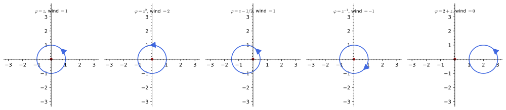
figures/fa2-winding-number.sage.
Definition 28 (Fredholm operator) A bounded operator T : X \to Y between Banach spaces is a Fredholm operator if its kernel \ker T is finite-dimensional and its range \operatorname{ran}T has finite codimension; the range is then closed Waterstraat (2016, Lemma 1.1.11, Lemma 1.2.15). Its index is \operatorname{ind}T = \dim\ker T - \operatorname{codim}\operatorname{ran}T. The same definition applies to closed operators T : D(T) \subset X \to Y Waterstraat (2016, Def. 1.2.14). On Hilbert spaces \operatorname{codim}\operatorname{ran}T = \dim\ker T^*, so \operatorname{ind}T = \dim\ker T - \dim\ker T^*.
Veriphy. Pending.
Lean. Pending.
Sage. Pending.
Matrices between spaces of different dimensions are Fredholm, and their index depends only on the dimensions. The first example computes it from the rank-nullity theorem.
Example 140 (Matrices) T : \mathbb{C}^n \to \mathbb{C}^m has \dim\ker T = n - r and \operatorname{codim}\operatorname{ran}T = m - r with r the rank, so \operatorname{ind}T = n - m, whatever the matrix. In finite dimensions the index carries no information about the operator; in infinite dimensions it does.
Veriphy. Pending.
Lean. Pending.
Sage. Pending.
The shifts are the simplest operators of non-zero index in infinite dimensions. The second example computes their indices from their kernels and ranges.
Example 141 (Shifts) On \ell^2, S is injective with range \{a : a_1 = 0\} of codimension 1, so \operatorname{ind}S = -1; S^* is onto with kernel \mathbb{C}\delta^{(1)}, so \operatorname{ind}S^* = 1; and \operatorname{ind}S^k = -k. The equation Sa = b is solvable iff b_1 = 0, one condition and no free parameter.
Veriphy. Pending.
Lean. Pending.
Sage. Pending.
Differentiation is Fredholm between spaces of different smoothness, and its index depends on the boundary conditions. The third example compares the interval and the circle Waterstraat (2016, Ex. 1.2.16).
Example 142 (Differentiation) d/dx : C^1[0, 1] \to C[0, 1] is bounded for the C^1 norm, onto (u = \int_0^xv) with kernel the constants: index 1. On the circle, d/dx : C^1(S^1) \to C(S^1) has the constants as kernel and the functions of mean zero as range, of codimension 1: index 0. With the condition u(0) = 0 on the interval the kernel disappears and the index is 0.
Veriphy. Pending.
Lean. Pending.
Sage. Pending.
Perturbations of the identity by compact operators are Fredholm of index zero, which is the Fredholm alternative restated. The fourth example records it.
Example 143 (Identity plus compact) For K compact and \lambda \neq 0, Theorem 15 gives \dim\ker(\lambda - K) = \dim\ker(\lambda - K') = \operatorname{codim}\operatorname{ran}(\lambda - K) < \infty, so \lambda - K is Fredholm of index 0. Operators of the form \lambda - K are the Fredholm operators of index zero that the integral equations of the previous section produce.
Veriphy. Pending.
Lean. Pending.
Sage. Pending.
The index is additive under composition, which the first exercise checks on shifts. The general product formula is part of Theorem 17.
Exercise 146 (Products of shifts) Compute \ker and \operatorname{ran} of S^m(S^*)^n on \ell^2, and show \operatorname{ind}S^m(S^*)^n = n - m = \operatorname{ind}S^m + \operatorname{ind}(S^*)^n. Show S^*S = 1 but SS^* = 1 - |\delta^{(1)}\rangle\langle\delta^{(1)}|.
(S^*)^n drops the first n entries: kernel of dimension n, onto. S^m then prepends m zeros: injective, range of codimension m. So \dim\ker = n, \operatorname{codim}\operatorname{ran} = m, index n - m. S^*Sa = a, while SS^*a = (0, a_2, a_3, \dots), which is a minus its projection on \delta^{(1)}.
Veriphy. Pending.
Lean. Pending.
Sage. Pending.
A first-order differential operator on the circle has index zero, and its kernel can be computed. The second exercise does this for d/dx + a(x).
Exercise 147 (A first-order operator on the circle) For continuous 2\pi-periodic a, let T = d/dx + a : C^1(S^1) \to C(S^1). Show that \ker T is spanned by e^{-A(x)}, A(x) = \int_0^xa, if \int_0^{2\pi}a = 0, and is zero otherwise. For a = c constant, show that T is invertible iff c \notin i\mathbb{Z}.
u' + au = 0 gives u = Ce^{-A}, periodic iff A(2\pi) = 0. For constant a = c, on Fourier modes Te^{inx} = (in + c)e^{inx}, which vanishes for some n iff c = -in. Otherwise u' + cu = f has the solution u(x) = e^{-cx}(C + \int_0^xe^{ct}f(t)\,dt), which is periodic for exactly one C, since e^{2\pi c} \neq 1; so T is bijective. In general T_t = d/dx + ta is a continuous path from d/dx, of index 0 (Example 142), so every T has index 0 (Theorem 17).
Veriphy. Pending.
Lean. Pending.
Sage. Pending.
A Fredholm operator has a closed range, and the second half of the definition can be weakened to the existence of a closed complement. The third exercise proves the key lemma Waterstraat (2016, Lemma 1.1.11).
Exercise 148 (Finite codimension implies closed range) Let T \in \mathcal{B}(X, Y) and let V \subset Y be a finite-dimensional subspace with Y = \operatorname{ran}T \oplus V. Show that \tilde T : X/\ker T \times V \to Y, ([x], v) \mapsto Tx + v, is a bounded bijection, and use the inverse mapping theorem to show that \operatorname{ran}T is closed.
X/\ker T is a Banach space and V is complete, so the domain is a Banach space; \tilde T is bounded, injective because Tx + v = 0 forces v = 0 and x \in \ker T, and onto by hypothesis. By Theorem 9, \tilde T^{-1} is bounded, so \tilde T maps the closed subspace X/\ker T \times \{0\} onto a closed set, which is \operatorname{ran}T.
Veriphy. Pending.
Lean. Pending.
Sage. Pending.
The Toeplitz operators are compressions of multiplication operators to the non-negative Fourier modes, and their index is the winding number of the symbol with a minus sign. The theorem below states this, the simplest index theorem: an analytic index on the left, a topological invariant on the right.
Theorem 16 (Index of a Toeplitz operator) Let \varphi : S^1 \to \mathbb{C} be continuous, with Fourier coefficients \hat\varphi(n), and let T_\varphi act on \ell^2(\{0, 1, 2, \dots\}) by the matrix (T_\varphi)_{jk} = \hat\varphi(j - k), that is, multiplication by \varphi followed by the projection onto the non-negative modes (the Toeplitz operator with symbol \varphi). If \varphi has no zero on S^1, then T_\varphi is Fredholm and \operatorname{ind}T_\varphi = -\operatorname{wind}(\varphi), where \operatorname{wind}(\varphi) = \tfrac1{2\pi i}\oint\tfrac{d\varphi}{\varphi} is the winding number about 0; moreover T_\varphi T_\psi - T_{\varphi\psi} is compact. The identification of a Fredholm index with a winding number is proved for the edge operators of chiral lattice models by Zhou and Wan (2024, sec. III A, eq. 27), where the orientation of the edge fixes the sign.
Veriphy. Pending.
Lean. Pending.
Sage. Pending.
Monomial symbols give the shifts, and the theorem reduces to Example 141. The first example records this and checks the sign convention of the theorem.
Example 144 (Monomial symbols) \varphi(z) = z^k has \hat\varphi(n) = \delta_{nk}, so T_{z^k} = S^k for k \geq 0 and T_{z^{-k}} = (S^*)^k. The winding numbers are \pm k and the indices \mp k, as computed directly. The constant symbol 1 gives the identity, of index 0.
Veriphy. Pending.
Lean. Pending.
Sage. Pending.
The symbol z - a winds around zero exactly when |a| < 1, and the operator S - a changes accordingly. The second example computes kernel and cokernel.
Example 145 (The symbol z - a) T_{z - a} = S - a. For |a| > 1 it is invertible (\|S\| = 1 < |a|, Neumann series), index 0, and z - a does not wind. For |a| < 1, S - a is injective, and \ker(S^* - \bar a) is spanned by (1, \bar a, \bar a^2, \dots) \in \ell^2, so the cokernel has dimension 1: index -1 = -\operatorname{wind}(z - a). For |a| = 1 the symbol vanishes on S^1, and S - a is not Fredholm.
Veriphy. Pending.
Lean. Pending.
Sage. Pending.
A positive symbol has winding number zero, and its Toeplitz operator is invertible. The third example gives a tridiagonal one, which is the Hamiltonian of a particle hopping on a half-line.
Example 146 (A tridiagonal Toeplitz operator) \varphi(e^{i\theta}) = 3 + e^{i\theta} + e^{-i\theta} = 3 + 2\cos\theta \geq 1 gives the tridiagonal matrix with 3 on the diagonal and 1 beside it, T_\varphi = 3 + S + S^*. It is self-adjoint with \langle a, T_\varphi a\rangle \geq \|a\|^2, hence invertible, index 0 = -\operatorname{wind}\varphi.
Veriphy. Pending.
Lean. Pending.
Sage. Pending.
The kernel of the adjoint of S - a is a geometric sequence, which is the edge state of the half-line. The first exercise computes it and its normalisation.
Exercise 149 (The cokernel of S - a) For |a| < 1 solve (S^* - \bar a)x = 0 on \ell^2, normalise the solution, and show that \operatorname{ran}(S - a) = \{b : \sum_n a^{n - 1}b_n = 0\}. Why does the solution disappear for |a| \geq 1?
(S^*x)_n = x_{n + 1} = \bar ax_n gives x_n = \bar a^{n - 1}x_1, of norm |x_1|(1 - |a|^2)^{-1/2}; normalised, x_1 = (1 - |a|^2)^{1/2}. The range of S - a is closed (Fredholm) and equals \ker(S^* - \bar a)^\perp = \{b : \sum a^{n - 1}b_n = 0\}. For |a| \geq 1 the geometric sequence is not square summable, so the kernel of S^* - \bar a is 0.
Veriphy. Pending.
Lean. Pending.
Sage. Pending.
Winding numbers of rational symbols are counted by the argument principle (Theorem 4 of Complex analysis). The second exercise computes one and checks the integral with Sage.
Exercise 150 (Winding numbers by the argument principle) Compute \operatorname{wind}(\varphi) for \varphi(z) = z^2(z - \tfrac12)/(z - 3) by counting zeros and poles in the unit disc, and give \operatorname{ind}T_\varphi. With Sage, evaluate \tfrac1{2\pi i}\oint\varphi'/\varphi\,dz numerically on the unit circle.
\varphi'/\varphi = \tfrac2z + \tfrac1{z - 1/2} - \tfrac1{z - 3}, and inside the disc the residues are 2 and 1, while the pole 3 lies outside: \operatorname{wind}\varphi = 3 and \operatorname{ind}T_\varphi = -3:
z = var("z")
phi = z ^ 2 * (z - 1/2) / (z - 3)
dlog = (diff(phi, z) / phi).partial_fraction(z)
print("phi'/phi =", dlog)
t = var("t")
integrand = (dlog.subs(z=exp(I * t)) * I * exp(I * t))
re = numerical_integral(real_part(integrand), 0, 2 * pi)[0]
im = numerical_integral(imag_part(integrand), 0, 2 * pi)[0]
print("(1/(2 pi i)) * contour integral =", round(im / (2 * pi.n()), 10), "+ i *", round(-re / (2 * pi.n()), 10))
print("zeros inside: 0 (double), 1/2; pole 3 outside: winding number 3, index of T_phi = -3")Output:
phi'/phi = 2/(2*z - 1) - 1/(z - 3) + 2/z
(1/(2 pi i)) * contour integral = 3.0 + i * 0.0
zeros inside: 0 (double), 1/2; pole 3 outside: winding number 3, index of T_phi = -3Veriphy. Pending.
Lean. Pending.
Sage. Pending.
Toeplitz operators do not multiply like their symbols, but the defect is compact. The third exercise computes it for the simplest pair.
Exercise 151 (The semicommutator) Show T_{\bar z}T_z = 1 = T_{\bar zz} but T_zT_{\bar z} = 1 - |\delta^{(0)}\rangle\langle\delta^{(0)}| (indexing from 0). Check that both products have index 0 = \operatorname{ind}T_z + \operatorname{ind}T_{\bar z}.
T_z = S and T_{\bar z} = S^*, so T_{\bar z}T_z = S^*S = 1 and T_zT_{\bar z} = SS^* is the projection that kills the 0-th mode (Exercise 146). The difference T_zT_{\bar z} - T_{z\bar z} has rank one, hence is compact. 1 has index 0, and 1 - P with P a rank-one projection has a one-dimensional kernel and cokernel, index 0; both equal -1 + 1.
Veriphy. Pending.
Lean. Pending.
Sage. Pending.
Stability of the index
The dimension of the kernel of an operator can jump under small perturbations, but the index cannot. The theorem below states the stability properties that make the index a topological invariant; they are the reason why index theorems compute something robust.
Theorem 17 (Stability of the Fredholm index) Let T : X \to Y be Fredholm. (i) There is \gamma > 0 such that T + B is Fredholm with \dim\ker(T + B) \leq \dim\ker T and \operatorname{ind}(T + B) = \operatorname{ind}T whenever \|B\| < \gamma Waterstraat (2016, Thm. 1.2.17). (ii) For compact K, T + K is Fredholm with \operatorname{ind}(T + K) = \operatorname{ind}T Waterstraat (2016, Thm. 1.2.18). (iii) The index is constant along any norm-continuous path of Fredholm operators. (iv) If S : Y \to Z is Fredholm, \operatorname{ind} (ST) = \operatorname{ind}S + \operatorname{ind}T. (v) (Atkinson) T is Fredholm if and only if it is invertible modulo compact operators: RT - 1 and TR - 1 are compact for some bounded R.
Veriphy. Pending.
Lean. Pending.
Sage. Pending.
The dimension of the kernel is only upper semicontinuous, and it can drop while the index stays fixed. The first example shows the jump in the simplest family.
Example 147 (Jumping kernels) T_t = \operatorname{diag}(t, 1, 1, \dots) on \ell^2 is Fredholm for every t, with index 0. At t = 0 kernel and cokernel are both one-dimensional; for t \neq 0 both vanish. The jump happens in kernel and cokernel together, as the stability of the index requires, and \dim\ker can only drop under small perturbations.
Veriphy. Pending.
Lean. Pending.
Sage. Pending.
Along the family S - a the index is -1 inside the disc and 0 outside, and the change happens where the operator stops being Fredholm. The second example traces the family.
Example 148 (Crossing the unit circle) a \mapsto S - a is norm continuous. For |a| < 1 it is Fredholm of index -1, for |a| > 1 of index 0 (Example 145). Part (iii) of the theorem forces any path from inside to outside to pass through non-Fredholm operators, and indeed S - a with |a| = 1 has a dense, non-closed range.
Veriphy. Pending.
Lean. Pending.
Sage. Pending.
Compact perturbations of the identity have index zero, which recovers the Fredholm alternative from part (ii). The third example also applies part (ii) to a Toeplitz operator.
Example 149 (Compact perturbations) 1 + K has index \operatorname{ind}1 = 0 for every compact K. The rank-one perturbation S + \tfrac12|\delta^{(1)}\rangle \langle\delta^{(5)}| of the shift has index -1, though its kernel and cokernel may differ from those of S. The tridiagonal operator of Example 146, changed in finitely many matrix entries, keeps index 0.
Veriphy. Pending.
Lean. Pending.
Sage. Pending.
The product formula can be checked on matrices and shifts. The first exercise proves it in finite dimensions, where it is a count of dimensions.
Exercise 152 (The product formula for matrices) For T : \mathbb{C}^n \to \mathbb{C}^m and S : \mathbb{C}^m \to \mathbb{C}^p, verify \operatorname{ind}(ST) = \operatorname{ind}S + \operatorname{ind}T using Example 140. Then check it for S^*\cdot S^2 on \ell^2.
\operatorname{ind}(ST) = n - p = (m - p) + (n - m). On \ell^2, S^*S^2 = S has index -1 = 1 + (-2).
Veriphy. Pending.
Lean. Pending.
Sage. Pending.
The kernel of S^* - \lambda is one-dimensional on the whole open disc, which shows that the dimension of the kernel can be locally constant as well. The second exercise computes the index of S^* - \lambda and identifies where the family leaves the Fredholm operators.
Exercise 153 (The family S^* - \lambda) For |\lambda| < 1, find \ker(S^* - \lambda) and show S^* - \lambda is onto, so the index is 1. For |\lambda| > 1 show it is invertible. Which part of the theorem explains that the index is constant on the open disc?
x_{n + 1} = \lambda x_n gives the one-dimensional kernel spanned by (1, \lambda, \lambda^2, \dots). The adjoint S - \bar\lambda is injective (Example 145), and the range of a Fredholm operator is closed, so S^* - \lambda is onto: index 1. For |\lambda| > 1 the Neumann series inverts it. The disc is connected and \lambda \mapsto S^* - \lambda is continuous, so part (iii) makes the index constant there.
Veriphy. Pending.
Lean. Pending.
Sage. Pending.
Atkinson’s characterisation gives a quick proof that Toeplitz operators with non-vanishing symbols are Fredholm. The third exercise carries it out with the compact semicommutator of Theorem 16.
Exercise 154 (Toeplitz operators are Fredholm) Let \varphi be continuous without zeros. Using that T_\varphi T_\psi - T_{\varphi\psi} is compact, show that R = T_{1/\varphi} inverts T_\varphi modulo compacts, and conclude with part (v). Use parts (iii) and (iv) to show that \operatorname{ind}T_\varphi depends only on the homotopy class of \varphi in C(S^1, \mathbb{C}\setminus\{0\}).
T_{1/\varphi}T_\varphi - 1 = T_{1/\varphi}T_\varphi - T_1 and T_\varphi T_{1/\varphi} - 1 are compact, so T_\varphi is Fredholm by Atkinson. \|T_\varphi - T_\psi\| \leq \|\varphi - \psi\|_\infty, so a homotopy of non-vanishing symbols gives a norm-continuous path of Fredholm operators, along which the index is constant. Homotopy classes of such symbols are labelled by the winding number, which is how Theorem 16 reduces to the monomials of Example 144.
Veriphy. Pending.
Lean. Pending.
Sage. Pending.
Exercises
These exercises combine compact operators, the Fredholm alternative and the index. The last one is a small index theorem with a topological answer.
A boundary value problem becomes an integral equation of the second kind through the Green’s function, and the Fredholm alternative then gives its solvability. The first integrative exercise treats the resonant string.
Exercise 155 (The resonant string) Show that -u'' - \mu u = f, u(0) = u(1) = 0 is equivalent to u - \mu Gu = Gf with the Green’s operator G of Example 119, and that for \mu = \pi^2 it is solvable iff \int_0^1f(x)\sin\pi x\,dx = 0.
G inverts -d^2/dx^2 with Dirichlet conditions, so applying G to -u'' = \mu u + f gives u = \mu Gu + Gf, and conversely. G is compact self-adjoint with eigenvalues 1/(n\pi)^2 and eigenfunctions \sin n\pi x. For \mu = \pi^2, \ker(1 - \pi^2G) is spanned by \sin\pi x, and by Theorem 15 u - \pi^2Gu = Gf is solvable iff \langle\sin\pi x, Gf\rangle = \pi^{-2}\langle\sin\pi x, f\rangle = 0.
Veriphy. Pending.
Lean. Pending.
Sage. Pending.
The index of a Fredholm operator does not change under compact perturbations, even when the perturbation changes the kernel. The second integrative exercise computes the kernel and cokernel of a perturbed shift.
Exercise 156 (A perturbed shift) Let T = S + c\,|\delta^{(1)}\rangle\langle\delta^{(1)}| on \ell^2. Find \ker T and \ker T^* for every c, and check that the index is always -1.
Ta = (ca_1, a_1, a_2, \dots), which vanishes only for a = 0: \ker T = 0. T^*b = (b_2 + \bar cb_1, b_3, b_4, \dots) vanishes iff b_n = 0 for n \geq 3 and b_2 = -\bar cb_1, a one-dimensional space. So the index is 0 - 1 = -1 for every c, as part (ii) of Theorem 17 predicts.
Veriphy. Pending.
Lean. Pending.
Sage. Pending.
The index of a Toeplitz operator can be computed from a finite matrix when the symbol is a polynomial. The third integrative exercise does so for a quadratic symbol by factoring it.
Exercise 157 (A quadratic symbol) For \varphi(z) = (z - \tfrac12)(z - 2), find the winding number, write T_\varphi as a polynomial in S, and find its kernel and cokernel. Why do the finite truncations of T_\varphi not show the cokernel?
Only the zero \tfrac12 lies inside the disc, so \operatorname{wind}\varphi = 1 and \operatorname{ind}T_\varphi = -1. T_\varphi = (S - \tfrac12)(S - 2); S - 2 is invertible, and S - \tfrac12 is injective with cokernel spanned by (1, \tfrac12, \tfrac14, \dots) (Exercise 149). So \ker T_\varphi = 0, and T_\varphi^* = (S^* - 2)(S^* - \tfrac12) with S^* - 2 invertible, so \ker T_\varphi^* = \ker(S^* - \tfrac12) is spanned by (2^{-n})_{n \geq 0}. The truncations are lower triangular with \hat\varphi(0) = 1 on the diagonal, hence invertible: the cokernel lives at infinity, in the tail that every truncation cuts off.
Veriphy. Pending.
Lean. Pending.
Sage. Pending.
Unbounded operators and the Laplacian
Differentiation is not a bounded operator, and neither are the position and momentum operators of quantum mechanics or the Laplacian; they are defined only on a dense subspace, their domain, and the choice of domain is part of the definition. This section introduces unbounded operators and their domains, the canonical commutation relation [x, p] = i, self-adjoint extensions in outline, and the Laplacian on the circle, the sphere and the torus, whose spectrum on a compact space is discrete; the figure shows the eigenfunctions and the spectra.
Domains
An operator that cannot be defined on every vector of H must come with the subspace on which it is defined, and notions such as symmetric and self-adjoint must be reconsidered with domains in view. The definition below does this, and records that the spectral theorem survives for self-adjoint unbounded operators.
Definition 29 (Unbounded operator) An operator on H is a linear map A : D(A) \to H defined on a dense subspace D(A), its domain; it is bounded if \|Au\| \leq C\|u\| on D(A), in which case it extends to all of H, and unbounded otherwise. It is symmetric if \langle Au, v\rangle = \langle u, Av\rangle for all u, v \in D(A). The adjoint A^\dagger has domain D(A^\dagger) = \{v : u \mapsto \langle v, Au\rangle \text{ is bounded on } D(A)\} and is defined there by Theorem 11, so that \langle Au, v\rangle = \langle u, A^\dagger v\rangle for u \in D(A), v \in D(A^\dagger); A is self-adjoint if A^\dagger = A including the equality of domains D(A^\dagger) = D(A). A symmetric operator has D(A) \subseteq D(A^\dagger) and is self-adjoint only when its domain is large enough. Eigenvectors are required to lie in the domain, and the spectrum is defined as in Definition 24. For self-adjoint A the spectrum is real, the spectral theorem and the functional calculus extend (quoted), and e^{itA} is a unitary group on all of H.
Veriphy. Pending.
Lean. Pending.
Sage. Pending.
The derivative on L^2(\mathbb{R}) is the first example, defined on smooth functions vanishing outside a bounded set or on the Schwartz space; it is symmetric when multiplied by -i, and its self-adjoint version has the largest possible domain. The example introduces the Sobolev space on which that version lives.
Example 150 (-i\,d/dx on L^2(\mathbb{R})) p = -i\,d/dx with domain C_c^\infty(\mathbb{R}) (smooth, zero outside a bounded set) is symmetric by integration by parts, the boundary terms vanishing at infinity, and unbounded (Exercise 97). It is not self-adjoint on this domain: D(p^\dagger) is the much larger Sobolev space H^1(\mathbb{R}) = \{f \in L^2 : f' \in L^2\} with f' in the sense of distributions (Distributions). Extending p to H^1(\mathbb{R}) makes it self-adjoint, with spectrum \mathbb{R} and no eigenvalues (Exercise 162).
Multiplication by x on L^2(\mathbb{R}) is unbounded because the line is infinite, and its natural domain is the set of functions for which xf is still square-integrable. The second example checks membership for a Gaussian and for a slowly decaying function, and notes that this operator is self-adjoint without further ado.
Example 151 (The position operator on L^2(\mathbb{R})) (xf)(x) = xf(x) with the maximal domain D(x) = \{f \in L^2(\mathbb{R}) : xf \in L^2(\mathbb{R})\} is self-adjoint (Exercise 160), unbounded, with spectrum \mathbb{R} and no eigenvalues (Example 110 with (0, 1) replaced by \mathbb{R}). The Gaussian e^{-x^2/2} is in the domain; f = 1/(1 + |x|) is in L^2 but not in D(x), since |xf|^2 \to 1 at infinity is not integrable. In the Fourier picture (The Fourier transform), x becomes i\,d/dk and p becomes multiplication by k.
The second derivative on periodic functions is the Laplacian of the circle, and its domain question is settled by the Fourier isomorphism, under which it becomes multiplication by n^2 on sequences. The third example describes this, which is the pattern for all Laplacians on compact spaces.
Example 152 (-d^2/dx^2 on the circle) On L^2(S^1) = L^2(-\pi, \pi) with periodic functions, -d^2/dx^2 on smooth periodic functions is symmetric and positive, since \langle f, -g''\rangle = \int\bar f'g'\,dx after one integration by parts without boundary terms. Under U : f \mapsto (\langle e_n, f\rangle)_n of Exercise 106 it becomes the multiplication operator (a_n) \mapsto (n^2a_n) on \ell^2(\mathbb{Z}), self-adjoint on the domain \{a : \sum n^4|a_n|^2 < \infty\}, which pulls back to the periodic Sobolev space H^2(S^1) (Exercise 158). Its spectrum is \{n^2\}, discrete, with the eigenfunctions e^{inx} as an orthonormal basis.
In the Fourier picture the domain of the derivative is a decay condition on the coefficients, and whether a given function belongs to it is decided by a series. The first exercise asks Sage to compute the relevant partial sums for two functions on the circle, one with a jump and one with a kink.
Exercise 158 (Domains in the Fourier picture) For f(x) = x and g(x) = \pi^2 - x^2 on (-\pi, \pi) extended periodically, compute with Sage the partial sums \sum_{|n| \leq N}n^2|\langle e_n, f\rangle|^2 and \sum_{|n| \leq N}n^2|\langle e_n, g\rangle|^2 and \sum_{|n| \leq N}n^4|\langle e_n, g\rangle|^2 for N = 10, 100, 1000, and decide which of f, g lie in the domains of -i\,d/dx and of -d^2/dx^2 on the circle.
|\langle e_n, f\rangle|^2 = 2\pi/n^2, so \sum n^2|\langle e_n, f\rangle|^2 = \sum 2\pi diverges: the periodised f has a jump at \pm\pi and is not in the domain of the derivative. |\langle e_n, g\rangle|^2 = 8\pi/n^4, so \sum n^2 \cdot 8\pi/n^4 converges (to 8\pi^3/3 over both signs of n) but \sum n^4\cdot 8\pi/n^4 diverges: the periodised g is continuous with a kink at \pm\pi, in H^1 but not in H^2:
x = var("x", domain="real")
c = lambda f, n: (integrate(f * exp(-I * n * x), x, -pi, pi) / sqrt(2 * pi)).simplify_full()
f, g = x, pi ** 2 - x ** 2
cf = lambda n: 2 * pi / n ** 2 # |<e_n, f>|^2, n != 0
cg = lambda n: 8 * pi / n ** 4 # |<e_n, g>|^2, n != 0
print("|<e_n, x>|^2 for n = 1, 2, 3:", [(abs(c(f, n)) ** 2).simplify_full() for n in [1, 2, 3]], "; |<e_n, pi^2 - x^2>|^2:", [(abs(c(g, n)) ** 2).simplify_full() for n in [1, 2, 3]])
for N in [10, 100, 1000]:
s1 = sum(2 * n ** 2 * cf(n) for n in range(1, N + 1)); s2 = sum(2 * n ** 2 * cg(n) for n in range(1, N + 1)); s3 = sum(2 * n ** 4 * cg(n) for n in range(1, N + 1))
print("N = %4d: sum n^2 |<e_n, f>|^2 = %10.3f sum n^2 |<e_n, g>|^2 = %10.4f sum n^4 |<e_n, g>|^2 = %10.1f" % (N, s1.n(), s2.n(), s3.n()))
n = var("n", domain="integer")
print("limits: sum n^2 |<e_n, g>|^2 =", 2 * sum(n ** 2 * cg(n), n, 1, oo), "; the other two series diverge (their terms, 4 pi and 16 pi for each |n|, do not tend to 0)")Output:
|<e_n, x>|^2 for n = 1, 2, 3: [2*pi, 1/2*pi, 2/9*pi] ; |<e_n, pi^2 - x^2>|^2: [8*pi, 1/2*pi, 8/81*pi]
N = 10: sum n^2 |<e_n, f>|^2 = 125.664 sum n^2 |<e_n, g>|^2 = 77.8998 sum n^4 |<e_n, g>|^2 = 502.7
N = 100: sum n^2 |<e_n, f>|^2 = 1256.637 sum n^2 |<e_n, g>|^2 = 82.1833 sum n^4 |<e_n, g>|^2 = 5026.5
N = 1000: sum n^2 |<e_n, f>|^2 = 12566.371 sum n^2 |<e_n, g>|^2 = 82.6332 sum n^4 |<e_n, g>|^2 = 50265.5
limits: sum n^2 |<e_n, g>|^2 = 8/3*pi^3 ; the other two series diverge (their terms, 4 pi and 16 pi for each |n|, do not tend to 0)An everywhere-defined symmetric operator is automatically bounded, which is why unbounded symmetric operators must have restricted domains; and a symmetric operator always sits inside its adjoint. The second exercise asks for the second statement and for the proof that a bounded symmetric operator is self-adjoint.
Exercise 159 (Symmetric operators and their adjoints) Show that for a symmetric operator D(A) \subseteq D(A^\dagger) with A^\dagger = A on D(A), and that a bounded symmetric operator defined on all of H is self-adjoint. Explain, using Example 95, why -i\,d/dx on smooth periodic functions is symmetric but has a strictly larger adjoint domain.
For v \in D(A) the functional u \mapsto \langle v, Au\rangle = \langle Av, u\rangle is bounded by \|Av\|\|u\|, so v \in D(A^\dagger) and A^\dagger v = Av by uniqueness in the Riesz theorem. If A is bounded on H, then D(A^\dagger) = H = D(A), since every u \mapsto \langle v, Au\rangle is bounded, and A^\dagger = A there. For -i\,d/dx on smooth periodic functions, any v \in H^1(S^1) (for example a continuous piecewise linear periodic function) makes u \mapsto \langle v, -iu'\rangle = \langle -iv', u\rangle bounded, so v \in D(A^\dagger) without being smooth; the self-adjoint version is the extension to H^1(S^1).
The position operator with its maximal domain is self-adjoint, and the proof is a direct computation of the adjoint’s domain. The last exercise asks for it, which is the simplest instance of showing D(A^\dagger) = D(A).
Exercise 160 (Self-adjointness of the position operator) Let x act on D(x) = \{f \in L^2(\mathbb{R}) : xf \in L^2(\mathbb{R})\}. Show that x is symmetric and that D(x^\dagger) = D(x), so that x is self-adjoint.
Symmetry: \langle xf, g\rangle = \int\overline{xf}g = \int\bar f(xg) = \langle f, xg\rangle since x is real. If v \in D(x^\dagger), there is w = x^\dagger v \in L^2 with \int\bar v\,xu = \int\bar w\,u for all u \in D(x); taking u supported in a bounded set (where D(x) contains all of L^2) gives xv = w on every bounded set, hence xv = w \in L^2 and v \in D(x). Together with D(x) \subseteq D(x^\dagger) (Exercise 159) this gives equality of domains, and x^\dagger = x.
The canonical commutation relation
Position and momentum on the line are the pair of unbounded self-adjoint operators whose commutator is the identity, the relation that Example 104 showed to be impossible for matrices. The definition below fixes the operators, their common domain and the relation, with \hbar = 1.
Definition 30 (Canonical commutation relation) On the Schwartz space \mathcal{S}(\mathbb{R}) \subset L^2(\mathbb{R}) of smooth functions decaying, with all their derivatives, faster than any power, the position operator (xf)(x) = xf(x) and the momentum operator (pf)(x) = -if'(x) (units with \hbar = 1) are symmetric, map \mathcal{S} into itself, and satisfy the canonical commutation relation [x, p] = i on \mathcal{S}: (xp - px)f = -ixf' + i(xf)' = if. Both extend to self-adjoint operators on L^2(\mathbb{R}) with spectrum \mathbb{R} and no eigenvalues, and the Fourier transform \mathcal{F} exchanges them, \mathcal{F}p\mathcal{F}^{-1} is multiplication by k. For a unit vector \psi, \langle x\rangle = \langle\psi, x\psi\rangle is the expectation value and (\Delta x)^2 = \langle (x - \langle x\rangle)^2\rangle the variance, and the relation implies the uncertainty inequality \Delta x\, \Delta p \geq \tfrac12 (Exercise 239).
Veriphy. Pending.
Lean. Pending.
Sage. Pending.
The relation itself is a one-line computation with the product rule, valid for every differentiable function. The first example records it and the related commutators with functions of x.
Example 153 ([x, p\rbrack f = if) For f \in \mathcal{S}: (px)f = -i(xf)' = -if - ixf' and (xp)f = -ixf', so [x, p]f = -ixf' + if + ixf' = if (Proposition 4). More generally [g(x), p] = ig'(x) for smooth g, by the same product rule, and [x, p^2] = 2ip by the Leibniz rule of Definition 22; these are the identities behind Ehrenfest’s theorem in quantum mechanics.
Gaussians are the states for which the uncertainty inequality is an equality, and the variances are computed by two integrals. The second example computes them for a Gaussian of width s, showing that narrow position means wide momentum.
Example 154 (Gaussian wave packets) For \psi_s(x) = (2\pi s^2)^{-1/4}e^{-x^2/4s^2}, a unit vector with \langle x\rangle = \langle p\rangle = 0: (\Delta x)^2 = \int x^2|\psi_s|^2dx = s^2 and (\Delta p)^2 = \int|\psi_s'|^2dx = 1/(4s^2), so \Delta x\, \Delta p = \tfrac12 exactly (Proposition 4): Gaussians saturate the uncertainty inequality, and shrinking s trades position spread for momentum spread. The Fourier transform of \psi_s is a Gaussian of width 1/(2s) in k (The Fourier transform), which is the same statement.
The combinations a = (x + ip)/\sqrt2 and a^\dagger = (x - ip)/\sqrt2 turn the canonical commutation relation into [a, a^\dagger] = 1, and they generate the eigenfunctions of x^2 + p^2 from the Gaussian. The third example introduces them; the full theory is in The harmonic oscillator.
Example 155 (Ladder operators) a = (x + ip)/\sqrt2 and a^\dagger = (x - ip)/\sqrt2 satisfy [a, a^\dagger] = \tfrac12[x + ip, x - ip] = \tfrac12(-i[x, p] + i[p, x]) = -i\cdot i = 1, and \tfrac12(x^2 + p^2) = a^\dagger a + \tfrac12. The Gaussian \psi_0 = \pi^{-1/4}e^{-x^2/2} satisfies a\psi_0 = \tfrac{1}{\sqrt2}(x\psi_0 + \psi_0') = 0, and \psi_n \propto (a^\dagger)^n\psi_0 are eigenfunctions of \tfrac12(x^2 + p^2) with eigenvalues n + \tfrac12 (Exercise 161): the Hermite functions, an orthonormal basis of L^2(\mathbb{R}) (Boundary value and Sturm-Liouville problems). The truncated matrices of Exercise 115 are these operators in the basis \psi_n, cut off at n = N - 1.
The commutation relation, the annihilation of the Gaussian and the eigenvalue equations for the first Hermite functions are symbolic computations that Sage performs exactly. The first exercise runs them.
Exercise 161 (Ladder operators on functions) With Sage, verify [x, p]f = if for a symbolic f, a\psi_0 = 0 for \psi_0 = \pi^{-1/4}e^{-x^2/2}, and \tfrac12(x^2 + p^2)\psi_n = (n + \tfrac12)\psi_n for \psi_n = (a^\dagger)^n\psi_0/\sqrt{n!}, n = 0, 1, 2, 3; check that \psi_0, \dots, \psi_3 are orthonormal in L^2(\mathbb{R}).
\psi_1 = \sqrt2\,x\psi_0, \psi_2 = (2x^2 - 1)\psi_0/\sqrt2, \psi_3 = (2x^3 - 3x)\psi_0/\sqrt3, the Hermite polynomials times the Gaussian; the eigenvalue equations and the Gram matrix are exact:
x = var("x", domain="real")
f = function("f")(x)
X = lambda g: x * g
P = lambda g: -I * diff(g, x)
print("[x, p] f =", (X(P(f)) - P(X(f))).simplify_full())
a = lambda g: (X(g) + I * P(g)) / sqrt(2)
ad = lambda g: (X(g) - I * P(g)) / sqrt(2)
H = lambda g: (X(X(g)) + P(P(g))) / 2
psi0 = pi ** (-1 / 4) * exp(-x ** 2 / 2)
print("a psi_0 =", a(psi0).simplify_full())
psis = [psi0]
for n in range(1, 4):
psis.append((ad(psis[-1]) / sqrt(n)).simplify_full())
for n, psi in enumerate(psis):
print("psi_%d = %s ; H psi_%d = (%d + 1/2) psi_%d: %s" % (n, psi.factor(), n, n, n, bool((H(psi) - (n + QQ(1) / 2) * psi).simplify_full() == 0)))
G = matrix(SR, 4, 4, lambda j, k: integrate(psis[j] * psis[k], x, -oo, oo).simplify_full())
print("Gram matrix:"); print(G)Output:
[x, p] f = I*f(x)
a psi_0 = 0
psi_0 = e^(-1/2*x^2)/pi^(1/4) ; H psi_0 = (0 + 1/2) psi_0: True
psi_1 = sqrt(2)*x*e^(-1/2*x^2)/pi^(1/4) ; H psi_1 = (1 + 1/2) psi_1: True
psi_2 = 1/2*sqrt(2)*(2*x^2 - 1)*e^(-1/2*x^2)/pi^(1/4) ; H psi_2 = (2 + 1/2) psi_2: True
psi_3 = 1/3*sqrt(3)*(2*x^2 - 3)*x*e^(-1/2*x^2)/pi^(1/4) ; H psi_3 = (3 + 1/2) psi_3: True
Gram matrix:
[1 0 0 0]
[0 1 0 0]
[0 0 1 0]
[0 0 0 1]The Fourier transform turns p into multiplication by k, which identifies its spectrum, and the plane waves are approximate eigenvectors made square-integrable by a Gaussian envelope. The second exercise asks for both.
Exercise 162 (The spectrum of the momentum operator) Using \widehat{f'}(k) = ik\hat f(k) (The Fourier transform), show that \mathcal{F}p\mathcal{F}^{-1} is multiplication by k on L^2(\mathbb{R}, dk), so \sigma(p) = \mathbb{R} with no eigenvalues. Then show directly that \psi_L(x) = e^{ikx}e^{-x^2/2L^2} satisfies \|(p - k)\psi_L\|/\|\psi_L\| = 1/(L\sqrt2), so k is an approximate eigenvalue.
\widehat{pf} = -i\cdot ik\hat f = k\hat f, so under the unitary \mathcal{F} the operator p becomes M_k, whose spectrum is the range \mathbb{R} of k and which has no eigenvalues (Example 112); the “eigenfunctions” e^{ikx} are not in L^2 (Example 76). Directly, (p - k)\psi_L = -i\psi_L' - k\psi_L = (ix/L^2)\psi_L, so \|(p - k)\psi_L\|^2 = L^{-4}\int x^2e^{-x^2/L^2}dx = L^{-4}\cdot\tfrac{L^3\sqrt\pi}{2} and \|\psi_L\|^2 = L\sqrt\pi, whose ratio is 1/(2L^2); the ratio of norms is 1/(L\sqrt2) \to 0 as L \to \infty.
In the basis of Hermite functions the operators x, p and \tfrac12(x^2 + p^2) are infinite matrices, and their truncations show how the spectrum n + \tfrac12 emerges. The last exercise builds them in Sage and compares with the exact values.
Exercise 163 (The oscillator in the truncated ladder basis) With the N \times N truncation a of Exercise 115 for N = 6, form x = (a + a^\dagger)/\sqrt2, p = i(a^\dagger - a)/\sqrt2 and H = \tfrac12(x^2 + p^2) in Sage; compute the eigenvalues of H, compare with n + \tfrac12, and check that e^{i\theta a^\dagger a}\,a\,e^{-i\theta a^\dagger a} = e^{-i\theta}a.
H = a^\dagger a + \tfrac12[a, a^\dagger] is diagonal with entries n + \tfrac12 for n < N - 1 and (N - 1) + \tfrac12(1 - N) = (N - 1)/2 in the last slot, the truncation artefact; the conjugation identity holds exactly since a^\dagger a is diagonal with integer entries and a lowers the index by one:
N = 6
a = matrix(SR, N, N, lambda j, k: sqrt(k) if k == j + 1 else 0)
ad = a.conjugate_transpose()
x = (a + ad) / sqrt(2); p = I * (ad - a) / sqrt(2)
H = ((x * x + p * p) / 2).simplify_full()
print("H = (x^2 + p^2)/2 ="); print(H)
print("eigenvalues of H:", sorted(H.eigenvalues()), "; exact n + 1/2:", [n + QQ(1) / 2 for n in range(N)])
print("H = a^dagger a + [a, a^dagger]/2:", bool(H == ad * a + (a * ad - ad * a) / 2))
th = var("theta", domain="real")
Nop = ad * a
U = diagonal_matrix([exp(I * th * Nop[k, k]) for k in range(N)])
print("e^{i theta N} a e^{-i theta N} = e^{-i theta} a:", bool((U * a * U.conjugate_transpose() - exp(-I * th) * a).simplify_full() == 0))Output:
H = (x^2 + p^2)/2 =
[1/2 0 0 0 0 0]
[ 0 3/2 0 0 0 0]
[ 0 0 5/2 0 0 0]
[ 0 0 0 7/2 0 0]
[ 0 0 0 0 9/2 0]
[ 0 0 0 0 0 5/2]
eigenvalues of H: [1/2, 3/2, 5/2, 5/2, 7/2, 9/2] ; exact n + 1/2: [1/2, 3/2, 5/2, 7/2, 9/2, 11/2]
H = a^dagger a + [a, a^dagger]/2: True
e^{i theta N} a e^{-i theta N} = e^{-i theta} a: TrueSelf-adjoint extensions
A symmetric operator on a small domain can often be enlarged to a self-adjoint operator in several ways, each with its own spectrum; for differential operators on an interval these ways are boundary conditions. The definition below introduces the notion and quotes von Neumann’s criterion for existence and uniqueness.
Definition 31 (Self-adjoint extension) A self-adjoint extension of a symmetric operator A is a self-adjoint operator B with D(B) \supseteq D(A) and B = A on D(A). A symmetric operator may have none, exactly one or infinitely many; it is essentially self-adjoint if its closure is self-adjoint, equivalently if the extension is unique. Von Neumann’s criterion (quoted): with the deficiency indices n_\pm = \dim\ker(A^\dagger \mp i), self-adjoint extensions exist iff n_+ = n_-, the extension is unique iff n_+ = n_- = 0, and for n_+ = n_- = n > 0 the extensions are parametrised by the unitary group U(n). For a differential operator on an interval the extensions are the self-adjoint boundary conditions, and different conditions give different spectra.
Veriphy. Pending.
Lean. Pending.
Sage. Pending.
The momentum operator on a bounded interval has a circle’s worth of self-adjoint extensions, one for each phase relating the values at the two ends. The first example describes them with their eigenfunctions, and the periodic one is the operator of Example 95.
Example 156 (Twisted periodic conditions) -i\,d/dx on C_c^\infty(0, 2\pi) has n_+ = n_- = 1: \ker(A^\dagger \mp i) is spanned by e^{\pm x}. Its self-adjoint extensions are indexed by \alpha \in [0, 2\pi), with domain \{f \in H^1(0, 2\pi) : f(2\pi) = e^{i\alpha}f(0)\}; the boundary term -i[\bar fg]_0^{2\pi} vanishes on it (Exercise 166). The eigenfunctions are e^{i(n + \alpha/2\pi)x} with eigenvalues n + \alpha/2\pi, n \in \mathbb{Z} (Exercise 164): the spectrum is the integers shifted by \alpha/2\pi, and \alpha = 0 is the periodic case.
On a half-line the two deficiency indices differ, so the momentum operator has no self-adjoint extension at all, while the position operator is unproblematic. The second example records this, the standard illustration that not every symmetric operator is an observable.
Example 157 (No momentum on the half-line) -i\,d/dx on C_c^\infty(0, \infty) \subset L^2(0, \infty) is symmetric, and \ker(A^\dagger - i) is spanned by e^{-x} (square-integrable) while \ker(A^\dagger + i) would be spanned by e^{x}, which is not: n_+ = 1, n_- = 0, and no self-adjoint extension exists. The position operator on L^2(0, \infty), by contrast, is self-adjoint on its maximal domain exactly as in Exercise 160; and -d^2/dx^2 on the half-line has a one-parameter family of extensions, the conditions f'(0) = \kappa f(0).
The Laplacian on an interval has a four-parameter family of extensions, and the familiar boundary conditions are special members whose spectra differ already in the lowest eigenvalue. The third example lists Dirichlet, Neumann and periodic conditions with their spectra.
Example 158 (Boundary conditions for -d^2/dx^2 on (0, \pi)) -d^2/dx^2 on C_c^\infty(0, \pi) has n_+ = n_- = 2 (\ker(A^\dagger \mp i) is spanned by e^{\pm\sqrt{\mp i}\,x}, two solutions each), so the extensions form a four-parameter family. Dirichlet f(0) = f(\pi) = 0: eigenfunctions \sin nx, eigenvalues n^2, n \geq 1. Neumann f'(0) = f'(\pi) = 0: \cos nx, eigenvalues n^2, n \geq 0, including 0. Periodic f(0) = f(\pi), f'(0) = f'(\pi): e^{2inx}, eigenvalues 4n^2 with multiplicity 2 for n \neq 0. The same symbol -d^2/dx^2 thus names three different self-adjoint operators (Exercise 165, Boundary value and Sturm-Liouville problems).
The twisted eigenfunctions, their eigenvalues and their orthogonality are exact computations, as is the vanishing of the boundary term on the twisted domain. The first exercise asks Sage for all of them.
Exercise 164 (The twisted spectrum in Sage) For \alpha \in [0, 2\pi) and f_n(x) = e^{i(n + \alpha/2\pi)x}, check with Sage that -if_n' = (n + \alpha/2\pi)f_n, that f_n(2\pi) = e^{i\alpha}f_n(0), that \langle f_m, f_n\rangle = 2\pi\delta_{mn} on (0, 2\pi), and that for \alpha = \pi the spectrum is the half-integers.
The orthogonality integral is \int_0^{2\pi}e^{i(n - m)x}dx, independent of \alpha; for \alpha = \pi the eigenvalues are n + \tfrac12, the antiperiodic spectrum:
x, alpha = var("x alpha", domain="real")
f = lambda n: exp(I * (n + alpha / (2 * pi)) * x)
print("-i f_n' = (n + alpha/2pi) f_n for n = -2..2:", all(bool((-I * diff(f(n), x) - (n + alpha / (2 * pi)) * f(n)).simplify_full() == 0) for n in range(-2, 3)))
print("f_n(2 pi) = e^{i alpha} f_n(0):", all(bool((f(n).subs(x=2 * pi) - exp(I * alpha) * f(n).subs(x=0)).simplify_full() == 0) for n in range(-2, 3)))
G = matrix(SR, 3, 3, lambda j, k: integrate(conjugate(f(j - 1)) * f(k - 1), x, 0, 2 * pi).simplify_full())
print("Gram matrix of f_{-1}, f_0, f_1 on (0, 2 pi):"); print(G)
print("spectrum for alpha = pi:", [(n + alpha / (2 * pi)).subs(alpha=pi) for n in range(-3, 4)])Output:
-i f_n' = (n + alpha/2pi) f_n for n = -2..2: True
f_n(2 pi) = e^{i alpha} f_n(0): True
Gram matrix of f_{-1}, f_0, f_1 on (0, 2 pi):
[2*pi 0 0]
[ 0 2*pi 0]
[ 0 0 2*pi]
spectrum for alpha = pi: [-5/2, -3/2, -1/2, 1/2, 3/2, 5/2, 7/2]Dirichlet, Neumann and Robin conditions all make -d^2/dx^2 symmetric, and the proof is to check that the boundary terms of the two integrations by parts cancel. The second exercise asks for this and for the eigenvalues under Robin conditions in a special case.
Exercise 165 (Symmetric boundary conditions) Show that -d^2/dx^2 is symmetric on smooth functions on [0, \pi] satisfying Dirichlet, Neumann or Robin conditions f'(0) = \kappa f(0), f'(\pi) = -\kappa f(\pi) with real \kappa, and that for Dirichlet conditions the eigenvalues are exactly n^2, n \geq 1.
Two integrations by parts give \langle -f'', g\rangle - \langle f, -g''\rangle = [-\bar f'g + \bar fg']_0^\pi. Under Dirichlet conditions both f, g vanish at the ends; under Neumann both derivatives vanish; under Robin conditions -\bar f'g + \bar fg' = -\kappa\bar fg + \kappa\bar fg = 0 at 0 and similarly at \pi (real \kappa is essential). For Dirichlet eigenfunctions, -f'' = \lambda f has solutions A\sin\sqrt\lambda x + B\cos\sqrt\lambda x; f(0) = 0 forces B = 0 and f(\pi) = 0 forces \sin\sqrt\lambda\pi = 0, so \lambda = n^2 (\lambda \leq 0 gives only the zero solution by positivity of the operator).
The boundary form \langle Af, g\rangle - \langle f, Ag\rangle is the obstruction to self-adjointness, and a self-adjoint extension is a maximal domain on which it vanishes. The last exercise computes it for the momentum operator on an interval and shows why the phase condition is the right one.
Exercise 166 (The boundary form of -i\,d/dx) For f, g \in H^1(0, 2\pi) compute \langle -if', g\rangle - \langle f, -ig'\rangle. Show that it vanishes for all f, g in D_\alpha = \{f(2\pi) = e^{i\alpha}f(0)\}, that it does not vanish for all f, g in D = \{f(0) = 0\} or in \{f(0) = 2f(2\pi)\}, and interpret.
Integration by parts gives \langle -if', g\rangle - \langle f, -ig'\rangle = i\int\bar f'g + i\int\bar fg' = i[\bar fg]_0^{2\pi} = i(\overline{f(2\pi)}g(2\pi) - \overline{f(0)}g(0)). On D_\alpha this is i(e^{-i\alpha} e^{i\alpha} - 1)\overline{f(0)}g(0) = 0. On \{f(0) = 0\} it is i\overline{f(2\pi)}g(2\pi), non-zero for functions not vanishing at 2\pi: the condition is too weak (the adjoint has the smaller domain \{f(0) = f(2\pi) = 0\}, and the operator is symmetric but not self-adjoint). On \{f(0) = 2f(2\pi)\} it is i(1 - 4)\overline{ f(2\pi)}g(2\pi) \neq 0: the condition is not even symmetric, since |2| \neq 1. Only unimodular phases work, which is the U(1) of von Neumann’s criterion.
The Laplacian on compact spaces
The Laplacian of a curved space is the divergence of the gradient, built from the metric (Definition 37 of Differential geometry), and on a compact space without boundary it is a symmetric operator with no boundary conditions to choose. The figure shows its eigenfunctions on the circle and the spectra on the circle, the sphere and the torus; the definition below writes the operator in coordinates.
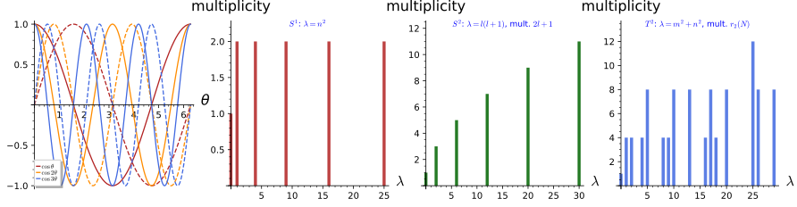
figures/laplacian_spectra.sage.
Interactive figure (drag to rotate or zoom); the static version is above.
Definition 32 (Laplace-Beltrami operator) On a Riemannian manifold with metric g_{ij} in coordinates y^i (Metrics), the Laplace-Beltrami operator on functions is \Delta f = \frac{1}{\sqrt g}\partial_i\left(\sqrt g\,g^{ij}\partial_jf\right), with g = \det(g_{ij}) and g^{ij} the inverse metric; it is the divergence of the gradient and reduces to \sum_i\partial_i^2 in flat coordinates. On a compact manifold M without boundary, with L^2(M) defined by the volume element \sqrt g\,d^ny, Green’s identity \langle f, -\Delta h\rangle = \int_Mg^{ij}\,\overline{ \partial_if}\,\partial_jh\,\sqrt g\,d^ny shows that -\Delta is symmetric and positive on smooth functions, with \Delta f = 0 only for constants when M is connected. Scaling the metric by R^2 scales \Delta by R^{-2}.
Veriphy. Pending.
Lean. Pending.
Sage. Pending.
On a circle of radius R the Laplacian is the second derivative in the angle, divided by R^2, and the exponentials are its eigenfunctions. The first example records the spectrum with its multiplicities, which is the Fourier series of Fourier series read as spectral theory.
Example 159 (The circle) On S^1_R with ds^2 = R^2d\theta^2, \Delta = R^{-2}\partial_\theta^2 and -\Delta e^{in\theta} = (n^2/R^2) e^{in\theta}: the eigenvalues are n^2/R^2, n \geq 0, with multiplicity 2 for n \geq 1 (spanned by e^{\pm in\theta}, or by \cos n\theta, \sin n\theta as in Figure 17) and 1 for n = 0. The eigenfunctions e^{in\theta}/\sqrt{2\pi R} are an orthonormal basis of L^2(S^1_R) (Exercise 167).
On the round sphere the Laplacian in spherical coordinates is the angular part of the flat Laplacian of \mathbb{R}^3, and the spherical harmonics of Harmonic analysis on the sphere and on compact groups are its eigenfunctions. The second example states the spectrum, with multiplicities equal to the dimensions of the SO(3) representations of Weights and the representations of su(2).
Example 160 (The sphere) On S^2_R with ds^2 = R^2(d\theta^2 + \sin^2\theta\,d\varphi^2), \sqrt g = R^2\sin\theta and \Delta = \frac{1}{R^2}\left[\frac{1}{\sin\theta}\partial_\theta(\sin\theta\,\partial_\theta) + \frac{1}{\sin^2\theta} \partial_\varphi^2\right]. The spherical harmonics satisfy -\Delta Y_{lm} = \frac{l(l + 1)}{R^2}Y_{lm}, l \geq 0, -l \leq m \leq l (Proposition 4, Exercise 168): the eigenvalue l(l + 1)/R^2 has multiplicity 2l + 1, the dimension of the spin-l representation, and the Y_{lm} are an orthonormal basis of L^2(S^2_R) (Harmonic analysis on the sphere and on compact groups).
On a torus the Laplacian is flat and the eigenfunctions are products of exponentials, but the multiplicities are irregular because they count the ways an integer is a sum of two squares. The third example gives the spectrum for a rectangular torus and the arithmetic of the square case.
Example 161 (The torus) On T^2 = S^1_{R_1} \times S^1_{R_2} with ds^2 = R_1^2d\theta^2 + R_2^2d\varphi^2, \Delta = R_1^{-2} \partial_\theta^2 + R_2^{-2}\partial_\varphi^2 and -\Delta e^{i(m\theta + n\varphi)} = (m^2/R_1^2 + n^2/R_2^2) e^{i(m\theta + n\varphi)}, m, n \in \mathbb{Z}. For R_1 = R_2 = 1 the eigenvalue N has multiplicity r_2(N), the number of pairs (m, n) with m^2 + n^2 = N: r_2(1) = 4, r_2(2) = 4, r_2(3) = 0, r_2(5) = 8, r_2(25) = 12 (Exercise 169); for incommensurable R_1^2/R_2^2 the multiplicities are only 1, 2 or 4 (Exercise 175).
That the exponentials are the only eigenfunctions on the circle, and that no negative eigenvalues occur, follows from solving the eigenvalue equation with periodicity. The first exercise asks for this and for the positivity argument from Green’s identity.
Exercise 167 (The complete spectrum of the circle) Show that every smooth 2\pi-periodic solution of -f'' = \lambda f has \lambda = n^2 for some integer n \geq 0, with f in the span of e^{\pm in\theta}, and use Green’s identity to show \lambda \geq 0 directly.
By Green’s identity \lambda\|f\|^2 = \langle f, -f''\rangle = \|f'\|^2 \geq 0, so \lambda \geq 0; \lambda = 0 forces f' = 0, constant f. For \lambda = \mu^2 > 0 the solutions of f'' = -\mu^2f are Ae^{i\mu\theta} + Be^{-i\mu\theta} (Ordinary differential equations), periodic iff e^{2\pi i\mu} = 1, that is \mu = n \in \mathbb{Z}_{> 0}; so the eigenvalues are n^2 with the two-dimensional eigenspaces stated. Completeness of the eigenfunctions is the completeness of the Fourier system (Fourier series).
The eigenvalue equation for the spherical harmonics is a differential identity that Sage verifies symbolically, and their orthonormality is an integral over the sphere. The second exercise runs both checks through the spherical Laplacian.
Exercise 168 (Spherical harmonics as eigenfunctions) With Sage, verify -\Delta Y_{lm} = l(l + 1)Y_{lm} on the unit sphere for all l \leq 3 using the explicit Laplacian in spherical coordinates, check orthonormality \langle Y_{lm}, Y_{l'm'}\rangle = \delta_{ll'} \delta_{mm'} for l, l' \leq 2, and count the eigenfunctions for each eigenvalue.
Sage’s spherical_harmonic(l, m, theta, phi) gives the Y_{lm}; the Laplacian annihilates Y_{00} and gives -2, -6, -12 times Y_{lm} for l = 1, 2, 3, with 1 + 3 + 5 + 7 = 16 eigenfunctions up to l = 3:
th, ph = var("theta phi", domain="real")
lap = lambda f: (diff(sin(th) * diff(f, th), th) / sin(th) + diff(f, ph, 2) / sin(th) ** 2)
Y = lambda l, m: spherical_harmonic(l, m, th, ph)
for l in range(4):
print("l = %d: -Delta Y_lm = %d Y_lm for all m:" % (l, l * (l + 1)), all(bool((lap(Y(l, m)) + l * (l + 1) * Y(l, m)).simplify_full() == 0) for m in range(-l, l + 1)), "; number of eigenfunctions:", 2 * l + 1)
ip = lambda f, g: integrate(integrate(conjugate(f) * g * sin(th), th, 0, pi), ph, 0, 2 * pi)
lm = [(l, m) for l in range(3) for m in range(-l, l + 1)]
G = matrix(SR, len(lm), len(lm), lambda a, b: ip(Y(*lm[a]), Y(*lm[b])).simplify_full())
print("Gram matrix of the nine Y_lm with l <= 2 is the identity:", G == identity_matrix(len(lm)))
print("total number of eigenfunctions with l <= 3:", sum(2 * l + 1 for l in range(4)))Output:
l = 0: -Delta Y_lm = 0 Y_lm for all m: True ; number of eigenfunctions: 1
l = 1: -Delta Y_lm = 2 Y_lm for all m: True ; number of eigenfunctions: 3
l = 2: -Delta Y_lm = 6 Y_lm for all m: True ; number of eigenfunctions: 5
l = 3: -Delta Y_lm = 12 Y_lm for all m: True ; number of eigenfunctions: 7
Gram matrix of the nine Y_lm with l <= 2 is the identity: True
total number of eigenfunctions with l <= 3: 16The multiplicities on the square torus are an arithmetic function, and Sage counts them by listing lattice points on circles. The last exercise asks for the counts up to N = 30 and for the pattern behind the zeros.
Exercise 169 (Counting lattice points) With Sage, compute the multiplicity r_2(N) of each eigenvalue N \leq 30 of -\Delta on the square torus, list the eigenvalues with multiplicity 8 and 12, and explain why N = 3, 6, 7, 11 do not occur.
r_2(N) = 8 for N = 5, 10, 13, 17, 20, 26, 29 and r_2(25) = 12 (25 = 25 + 0 = 9 + 16 in two essentially different ways); an integer is a sum of two squares iff every prime \equiv 3 \pmod 4 divides it to an even power, which excludes 3, 6, 7, 11:
from collections import Counter
cnt = Counter(m ** 2 + n ** 2 for m in range(-6, 7) for n in range(-6, 7))
table = [(N, cnt[N]) for N in range(31)]
print("N : r_2(N) for N <= 30:"); print(table)
print("multiplicity 8:", [N for N, r in table if r == 8], "; multiplicity 12:", [N for N, r in table if r == 12])
missing = [N for N, r in table if r == 0]
print("not sums of two squares:", missing)
print("each has a prime = 3 mod 4 to an odd power:", all(any(p % 4 == 3 and e % 2 == 1 for p, e in factor(N)) for N in missing if N > 0))Output:
N : r_2(N) for N <= 30:
[(0, 1), (1, 4), (2, 4), (3, 0), (4, 4), (5, 8), (6, 0), (7, 0), (8, 4), (9, 4), (10, 8), (11, 0), (12, 0), (13, 8), (14, 0), (15, 0), (16, 4), (17, 8), (18, 4), (19, 0), (20, 8), (21, 0), (22, 0), (23, 0), (24, 0), (25, 12), (26, 8), (27, 0), (28, 0), (29, 8), (30, 0)]
multiplicity 8: [5, 10, 13, 17, 20, 26, 29] ; multiplicity 12: [25]
not sums of two squares: [3, 6, 7, 11, 12, 14, 15, 19, 21, 22, 23, 24, 27, 28, 30]
each has a prime = 3 mod 4 to an odd power: TrueDiscreteness of the spectrum
The three examples share a feature that holds on every compact space: the eigenvalues form a sequence tending to infinity with finite multiplicities, and the eigenfunctions form an orthonormal basis. The theorem below, quoted without proof, states this; the mechanism is that the inverse of -\Delta is a compact operator, so that Theorem 13 applies as in Example 122.
Theorem 18 (Discrete spectrum of the Laplacian on a compact manifold) Let M be a compact connected Riemannian manifold without boundary. The operator -\Delta, extended from smooth functions to its natural domain in L^2(M), is self-adjoint and non-negative, and its spectrum is discrete: the eigenvalues form a sequence 0 = \lambda_0 < \lambda_1 \leq \lambda_2 \leq \dots \to \infty, each of finite multiplicity, with \lambda_0 = 0 belonging to the constants. The eigenfunctions \varphi_k can be chosen to form an orthonormal basis of L^2(M), so that every f \in L^2(M) has the mode expansion f = \sum_k\langle \varphi_k, f\rangle\varphi_k, and Weyl’s law gives the growth: the number N(\lambda) of eigenvalues \leq \lambda satisfies N(\lambda) \sim \frac{\operatorname{Vol}(M)}{(4\pi)^{d/2}\Gamma(d/2 + 1)}\lambda^{d/2} for d = \dim M. The theorem is quoted; its proof applies Theorem 13 to the Green’s operator of -\Delta on the complement of the constants, which is compact by Rellich’s theorem.
Veriphy. Pending.
Lean. Pending.
Sage. Pending.
On the circle the theorem is the theory of Fourier series, and Weyl’s law counts the integers n with n^2/R^2 \leq \lambda. The first example checks the constant in Weyl’s law in this case.
Example 162 (Weyl’s law on the circle) For S^1_R, N(\lambda) = \#\{n \in \mathbb{Z} : n^2 \leq R^2\lambda\} = 2\lfloor R\sqrt\lambda\rfloor + 1 \sim 2R\sqrt\lambda. Weyl’s law with d = 1, \operatorname{Vol} = 2\pi R, \Gamma(3/2) = \sqrt\pi/2 gives \frac{2\pi R}{\sqrt{4\pi}\cdot\sqrt\pi/2}\lambda^{1/2} = 2R\sqrt\lambda, in agreement. The mode expansion is the Fourier series, and the finite multiplicities are the pairs \pm n.
On the sphere the eigenvalues l(l + 1) have multiplicities 2l + 1, so counting them is a sum of odd numbers, a perfect square. The second example verifies Weyl’s law for the sphere and records the mode expansion in spherical harmonics.
Example 163 (Weyl’s law on the sphere) For the unit sphere, N(\lambda) = \sum_{l(l + 1) \leq \lambda}(2l + 1) = (L + 1)^2 with L the largest l allowed, and L(L + 1) \leq \lambda gives (L + 1)^2 \sim \lambda. Weyl’s law with d = 2, \operatorname{Vol} = 4\pi, \Gamma(2) = 1 gives \frac{4\pi}{4\pi}\lambda = \lambda. The mode expansion f(\theta, \varphi) = \sum_{l, m}\langle Y_{lm}, f\rangle Y_{lm} is the expansion in spherical harmonics of Harmonic analysis on the sphere and on compact groups, and on the torus it is the double Fourier series (Exercise 170).
The practical content of the theorem is that a function of time and of a point on a compact space can be expanded in the modes, turning a partial differential equation into countably many ordinary ones with discrete frequencies. The third example carries this out for the wave equation on \mathbb{R} \times M.
Example 164 (Fields on a compact space decompose into modes) Let \phi(t, y) on \mathbb{R} \times M satisfy the wave equation \partial_t^2\phi = \Delta_M\phi (Partial differential equations). Expanding \phi(t, \cdot) = \sum_kc_k(t)\varphi_k in the eigenbasis gives \ddot c_k = -\lambda_kc_k, so c_k(t) = a_ke^{i\sqrt{\lambda_k}t} + b_ke^{-i\sqrt{\lambda_k}t}: the field is a sum of independent oscillators with the discrete frequencies \omega_k = \sqrt{\lambda_k}, one for each eigenfunction (counted with multiplicity). On the circle \omega_n = |n|/R, on the sphere \omega_l = \sqrt{l(l + 1)}/R; the zero mode k = 0 has \ddot c_0 = 0. Compactness of M is what makes the frequencies discrete, and the heat equation separates the same way with c_k(t) = c_k(0)e^{-\lambda_kt} (Exercise 172).
Weyl’s law on the torus counts lattice points in a disc, and the error term is the Gauss circle problem. The first exercise asks Sage for the counts and their comparison with the leading term.
Exercise 170 (Lattice points in a disc) For the square torus, compute N(\lambda) = \#\{(m, n) : m^2 + n^2 \leq \lambda\} with Sage for \lambda = 10^2, 10^3, 10^4, compare with Weyl’s prediction \pi\lambda, and check that the relative error decreases.
Weyl’s law with d = 2 and \operatorname{Vol}(T^2) = 4\pi^2 gives N(\lambda) \sim \pi\lambda, the area of the disc of radius \sqrt\lambda; the counts are 317, 3149, 31417 against 314.2, 3141.6, 31415.9, with relative errors 0.9\%, 0.2\%, 0.003\%:
def N_count(lam):
r = isqrt(lam)
return sum(1 for m in range(-r, r + 1) for n in range(-r, r + 1) if m ** 2 + n ** 2 <= lam)
for lam in [10 ** 2, 10 ** 3, 10 ** 4]:
Nl = N_count(lam); W = (pi * lam).n()
print("lambda = %6d: N(lambda) = %6d pi lambda = %10.1f relative error = %.5f" % (lam, Nl, W, abs(Nl - W) / W))Output:
lambda = 100: N(lambda) = 317 pi lambda = 314.2 relative error = 0.00904
lambda = 1000: N(lambda) = 3149 pi lambda = 3141.6 relative error = 0.00236
lambda = 10000: N(lambda) = 31417 pi lambda = 31415.9 relative error = 0.00003Separation of variables in the eigenbasis is the general method, and energy conservation for the wave equation follows from it mode by mode. The second exercise asks for the derivation and for the conserved energy.
Exercise 171 (Separation in the eigenbasis) Derive \ddot c_k = -\lambda_kc_k from \partial_t^2\phi = \Delta_M\phi and the mode expansion, justify the termwise differentiation formally, and show that E = \sum_k(|\dot c_k|^2 + \lambda_k|c_k|^2) is conserved and equals \int_M(|\partial_t\phi|^2 + g^{ij}\overline{\partial_i\phi}\partial_j\phi)\sqrt g\,d^ny.
c_k(t) = \langle\varphi_k, \phi(t, \cdot)\rangle, so \ddot c_k = \langle\varphi_k, \partial_t^2\phi\rangle = \langle\varphi_k, \Delta\phi\rangle = \langle\Delta\varphi_k, \phi\rangle = -\lambda_kc_k by symmetry of \Delta (differentiation under the inner product is justified for smooth \phi by Theorem 8 of Real analysis). Then \tfrac{d}{dt}(|\dot c_k|^2 + \lambda_k|c_k|^2) = 2\operatorname{Re}(\bar{\dot c}_k\ddot c_k + \lambda_k\bar c_k\dot c_k) = 0. By Parseval, \sum|\dot c_k|^2 = \|\partial_t\phi\|^2 and \sum\lambda_k|c_k|^2 = \langle\phi, -\Delta\phi\rangle = \int g^{ij}\overline{\partial_i\phi}\partial_j\phi\sqrt g by Green’s identity.
For the heat equation the modes decay exponentially at rates given by the eigenvalues, so the solution converges to its mean value, and the first non-zero eigenvalue sets the rate. The last exercise asks for this and for the rate on the three model spaces.
Exercise 172 (Heat flow on a compact space) Show that the solution of \partial_tu = \Delta u on M with u(0, \cdot) = f is u(t) = \sum_ke^{-\lambda_kt} \langle\varphi_k, f\rangle\varphi_k, that u(t) \to \bar f = \operatorname{Vol}(M)^{-1}\int_Mf in L^2 as t \to \infty with \|u(t) - \bar f\| \leq e^{-\lambda_1t}\|f - \bar f\|, and give \lambda_1 for S^1_R, S^2_R and the square torus of side 2\pi R.
Writing u = \sum c_k(t)\varphi_k, the equation gives \dot c_k = -\lambda_kc_k, so c_k(t) = e^{-\lambda_kt}c_k(0) with c_k(0) = \langle\varphi_k, f\rangle. The k = 0 term is \langle\varphi_0, f\rangle\varphi_0 = \bar f with \varphi_0 = \operatorname{Vol}^{-1/2}, and \|u(t) - \bar f\|^2 = \sum_{k \geq 1}e^{-2\lambda_kt}|c_k(0)|^2 \leq e^{-2\lambda_1t}\|f - \bar f\|^2. \lambda_1 = 1/R^2 on the circle, 2/R^2 on the sphere (l = 1) and 1/R^2 on the torus ((m, n) = (\pm1, 0), (0, \pm1), multiplicity 4).
Worked computations
The eigenvalue equations on the circle, the sphere and the torus, the multiplicities, the canonical commutation relation on a general function, the Gaussian uncertainty product and Weyl’s law on the torus are all explicit computations with the Laplace-Beltrami operator. The proposition records them.
Proposition 4 (Spectra of the Laplacian on the circle, the sphere and the torus) With the Laplace-Beltrami operator: on S^1_R, -\Delta e^{in\theta} = (n^2/R^2)e^{in\theta} for n \leq 4; on S^2_R, -\Delta Y_{lm} = (l(l + 1)/R^2)Y_{lm} for all l \leq 3, the Y_{lm} with l \leq 2 are orthonormal, and the multiplicities are 2l + 1; on T^2 with radii R_1, R_2, -\Delta e^{i(m\theta + n\varphi)} = (m^2/R_1^2 + n^2/R_2^2)e^{i(m\theta + n\varphi)}, and on the square torus the multiplicities of the eigenvalues N \leq 30 are the lattice-point counts r_2(N) with r_2(25) = 12, while N(10^4) = 31417 is within 0.01\% of \pi\cdot10^4. Moreover [x, p]f = if for a symbolic f and the Gaussian \psi_s has (\Delta x)^2 (\Delta p)^2 = \tfrac14.
Veriphy. Pending; candidate recipes derivative and operator_identity.
Lean. Pending.
Sage. Exact computation (figures/laplacian_spectra.sage, SageManifolds laplacian, symbolic differentiation and exact integrals).
The three bar charts of the figure are three growth patterns for the same kind of spectrum: quadratic eigenvalues with constant multiplicity, quadratic eigenvalues with linearly growing multiplicity, and all sums of two squares with arithmetic multiplicities. The first example reads them against Weyl’s law.
Example 165 (Reading the spectra) On the circle the eigenvalues n^2 thin out (N(\lambda) \sim 2\sqrt\lambda) but each has multiplicity 2; on the sphere l(l + 1) also thins out, but the multiplicity 2l + 1 grows so that N(\lambda) \sim \lambda; on the torus every sum of two squares occurs, with N(\lambda) \sim \pi\lambda. In two dimensions N(\lambda) grows linearly in both cases, with slope \operatorname{Vol}/4\pi: 1 for the unit sphere, \pi for the square torus of area 4\pi^2, exactly as Weyl’s law predicts.
All eigenvalues scale as 1/R^2 with the size of the space, so a small compact space has a large gap between the zero mode and the first excited mode. The second example records this scaling and the gaps, which is the quantitative form of “compactness makes frequencies discrete”.
Example 166 (Scaling with the radius) Since \Delta_R = R^{-2}\Delta_1, the spectrum of -\Delta on S^1_R is \{n^2/R^2\}, on S^2_R it is \{l(l + 1)/R^2\} and on the torus \{m^2/R_1^2 + n^2/R_2^2\} (Exercise 173): the spectral gap \lambda_1 is 1/R^2, 2/R^2 and \min(R_1, R_2)^{-2} respectively, and the frequencies \omega_k = \sqrt{\lambda_k} of Example 164 scale as 1/R. The zero mode is the only one that survives as R \to 0 at fixed frequency, while all others become arbitrarily stiff.
The multiplicities on the circle and the sphere are the dimensions of the irreducible representations of their isometry groups, because the Laplacian commutes with isometries and so acts on each irreducible piece by a scalar. The third example states this connection to Representations and Schur’s lemma and contrasts the torus.
Example 167 (Multiplicities as dimensions of representations) The isometries of S^2 form SO(3) and commute with \Delta, so each eigenspace is a representation of SO(3); the eigenspace of l(l + 1) is the irreducible spin-l representation of dimension 2l + 1 (Weights and the representations of su(2), Harmonic analysis on the sphere and on compact groups). On the circle the isometry group SO(2) has one-dimensional irreducibles e^{\pm in\theta}, and the multiplicity 2 comes from the reflection \theta \mapsto -\theta pairing n with -n. On the torus the group U(1)^2 is abelian, all irreducibles are one-dimensional, and the multiplicities r_2(N) are accidental coincidences of eigenvalues rather than dimensions of irreducibles.
SageManifolds builds the Laplace-Beltrami operator from a metric, and with a symbolic radius the scaling of the eigenvalues is checked directly. The first exercise asks for the sphere and the torus with general radii.
Exercise 173 (Laplacians with a symbolic radius) Using SageManifolds, define the metrics of S^2_R and of T^2 with radii R_1, R_2, and check -\Delta Y_{lm} = (l(l + 1)/R^2)Y_{lm} for l \leq 2 and -\Delta e^{i(m\theta + n\varphi)} = (m^2/R_1^2 + n^2/R_2^2)e^{i(m\theta + n\varphi)} for symbolic radii.
The metric components are R^2 and R^2\sin^2\theta on the sphere and R_1^2, R_2^2 on the torus; laplacian() returns the operator of Definition 32 and the eigenvalue equations hold as symbolic identities in R, R_1,
R_2:
R, R1, R2 = var("R R1 R2", domain="positive")
S2 = Manifold(2, "S2", structure="Riemannian")
X.<th, ph> = S2.chart(r"th:(0,pi):\theta ph:(0,2*pi):\phi")
g = S2.metric(); g[0, 0] = R ** 2; g[1, 1] = R ** 2 * sin(th) ** 2
print("sphere metric:", g.display())
is_zero = lambda e: bool(e.simplify_full().canonicalize_radical().simplify_full() == 0)
for l in range(3):
Y = spherical_harmonic(l, 0, th, ph)
print("l = %d: Laplacian of Y_l0 =" % l, S2.scalar_field(Y).laplacian().expr().simplify_full().canonicalize_radical(), "; = -l(l+1)/R^2 Y_lm for all m:",
all(is_zero(S2.scalar_field(spherical_harmonic(l, m, th, ph)).laplacian().expr() + l * (l + 1) / R ** 2 * spherical_harmonic(l, m, th, ph)) for m in range(-l, l + 1)))
T2 = Manifold(2, "T2", structure="Riemannian")
Z.<a, b> = T2.chart(r"a:(0,2*pi):\theta b:(0,2*pi):\phi")
gT = T2.metric(); gT[0, 0] = R1 ** 2; gT[1, 1] = R2 ** 2
print("torus metric:", gT.display())
m, n = 2, 3
print("Laplacian of e^{i(2 theta + 3 phi)} =", T2.scalar_field(exp(I * (m * a + n * b))).laplacian().expr().simplify_full())
print("= -(m^2/R1^2 + n^2/R2^2) e^{i(m theta + n phi)} for |m|, |n| <= 3:", all(is_zero(T2.scalar_field(exp(I * (m * a + n * b))).laplacian().expr() + (m ** 2 / R1 ** 2 + n ** 2 / R2 ** 2) * exp(I * (m * a + n * b))) for m in range(-3, 4) for n in range(-3, 4)))Output:
sphere metric: g = R^2 dth⊗dth + R^2*sin(th)^2 dph⊗dph
l = 0: Laplacian of Y_l0 = 0 ; = -l(l+1)/R^2 Y_lm for all m: True
l = 1: Laplacian of Y_l0 = -sqrt(3)*cos(th)/(sqrt(pi)*R^2) ; = -l(l+1)/R^2 Y_lm for all m: True
l = 2: Laplacian of Y_l0 = 3/2*(3*sqrt(5)*sin(th)^2 - 2*sqrt(5))/(sqrt(pi)*R^2) ; = -l(l+1)/R^2 Y_lm for all m: True
torus metric: g = R1^2 da⊗da + R2^2 db⊗db
Laplacian of e^{i(2 theta + 3 phi)} = -(9*R1^2 + 4*R2^2)*e^(2*I*a + 3*I*b)/(R1^2*R2^2)
= -(m^2/R1^2 + n^2/R2^2) e^{i(m theta + n phi)} for |m|, |n| <= 3: TrueThe three-sphere is a compact group, SU(2), and its Laplacian spectrum follows from representation theory: the eigenvalues are k(k + 2) with multiplicity (k + 1)^2. The second exercise asks for the derivation from the Peter-Weyl theorem in outline and for the check of Weyl’s law.
Exercise 174 (The spectrum of S^3) Granting that L^2(SU(2)) decomposes under left and right translations into \bigoplus_j V_j \otimes V_j^* with \dim V_j = 2j + 1 (Peter-Weyl, Harmonic analysis on the sphere and on compact groups) and that -\Delta acts on the j-th summand as the Casimir 4j(j + 1) for the round unit metric, show that the eigenvalues of -\Delta on S^3 = SU(2) are k(k + 2), k = 2j = 0, 1, 2, \dots, with multiplicity (k + 1)^2, and check Weyl’s law N(\lambda) \sim \lambda^{3/2}/3 against \operatorname{Vol}(S^3) = 2\pi^2.
With k = 2j, 4j(j + 1) = k(k + 2) and \dim(V_j \otimes V_j^*) = (2j + 1)^2 = (k + 1)^2. Then N(\lambda) = \sum_{k(k + 2) \leq \lambda}(k + 1)^2 \approx \sum_{k \leq \sqrt\lambda}(k + 1)^2 \sim \lambda^{3/2}/3. Weyl’s law with d = 3: \frac{2\pi^2}{(4\pi)^{3/2}\Gamma(5/2)}\lambda^{3/2} = \frac{2\pi^2}{8\pi^{3/2}\cdot 3\sqrt\pi/4}\lambda^{3/2} = \frac{2\pi^2}{6\pi^2}\lambda^{3/2} = \lambda^{3/2}/3, in agreement. The eigenvalues 0, 3, 8, 15, \dots with multiplicities 1, 4, 9, 16, \dots are those of Harmonic analysis on the sphere and on compact groups.
A rectangular torus with incommensurable radii has no accidental degeneracies, and Sage makes the contrast with the square torus visible by listing the lowest eigenvalues. The last exercise does this for two choices of R_2^2/R_1^2.
Exercise 175 (Rectangular tori) With Sage, list the ten lowest eigenvalues m^2 + n^2/\rho of the torus with R_1 = 1, R_2^2 = \rho and their multiplicities for \rho = 1, \rho = 2 and \rho = \pi; identify an accidental degeneracy for \rho = 2 and explain why for \rho = \pi the multiplicities are only 1, 2 or 4.
For \rho = 2, (m, n) = (\pm2, \pm1) and (0, \pm3) both give 9/2 = 4 + 1/2 = 9/2, a multiplicity 4 + 2 = 6 not explained by the sign symmetries (and (\pm3, 0), (\pm1, \pm4) both give 9). For irrational \rho, m^2 + n^2/\rho = m'^2 + n'^2/\rho forces m^2 = m'^2 and n^2 = n'^2, so only the sign choices (\pm m, \pm n) coincide: multiplicity 1 for (0, 0), 2 if one index vanishes, 4 otherwise:
from collections import Counter
for rho in [1, 2, pi]:
ev = Counter()
for m in range(-8, 9):
for n in range(-8, 9):
ev[m ** 2 + n ** 2 / rho] += 1
lowest = sorted(ev.items(), key=lambda t: t[0].n() if hasattr(t[0], "n") else t[0])[:10]
print("rho =", rho, ":", [(lam, mult) for lam, mult in lowest])
print("rho = 2: (2, 1) and (0, 3) both give", 4 + 1 / QQ(2), "=", 0 + 9 / QQ(2), "-> multiplicity 4 + 2 = 6; likewise (3, 0) and (1, 4) give", 9, "=", 1 + 16 / QQ(2))Output:
rho = 1 : [(0, 1), (1, 4), (2, 4), (4, 4), (5, 8), (8, 4), (9, 4), (10, 8), (13, 8), (16, 4)]
rho = 2 : [(0, 1), (1/2, 2), (1, 2), (3/2, 4), (2, 2), (3, 4), (4, 2), (9/2, 6), (11/2, 4), (6, 4)]
rho = pi : [(0, 1), (1/pi, 2), (1, 2), (4/pi, 2), (1/pi + 1, 4), (4/pi + 1, 4), (9/pi, 2), (9/pi + 1, 4), (4, 2), (1/pi + 4, 4)]
rho = 2: (2, 1) and (0, 3) both give 9/2 = 9/2 -> multiplicity 4 + 2 = 6; likewise (3, 0) and (1, 4) give 9 = 9Sobolev spaces
Differential operators are unbounded on L^2, but they become bounded between spaces that measure smoothness in a square-integrable way. This part defines weak derivatives, the Sobolev spaces H^s on the torus through Fourier coefficients and on \mathbb{R}^n through the Fourier transform, and proves the three facts the book uses: functions with more than n/2 derivatives in L^2 are continuous (the Sobolev embedding), the Laplacian gains two derivatives (elliptic regularity), and on a compact space a gain of smoothness is a compact operator (the Rellich theorem), which makes the spectra of elliptic operators discrete. The Fourier conventions are those of Definition 2 of Fourier analysis and Definition 4 of Fourier analysis; the compact-resolvent argument is that of Waterstraat (2016, Thm. 1.3.5).
For more on this topic, see Borodzik et al. (2019, Ch. 2).
Weak derivatives
A function with a corner has no classical derivative at the corner, but integration by parts against smooth test functions still defines one. The figure shows such a weak derivative, and a continuous function that has none.
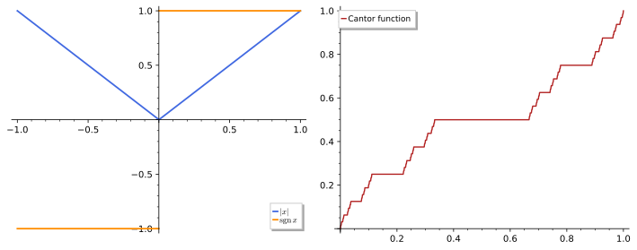
figures/fa2-weak-derivative.sage.
Definition 33 (Weak derivative) Let \Omega \subset \mathbb{R}^n be open and f, g locally integrable on \Omega. Then g is the weak derivative \partial^\alpha f of f for a multi-index \alpha if \int_\Omega f\,\partial^\alpha\varphi\,dx = (-1)^{|\alpha|}\int_\Omega g\varphi\,dx for every test function \varphi \in C^\infty_c(\Omega) (Definition 7 of Fourier analysis). The weak derivative is unique almost everywhere when it exists, it agrees with the classical derivative for C^{|\alpha|} functions, and it is the distributional derivative of Definition 9 of Fourier analysis when that distribution is a function. The Sobolev space W^{k, p}(\Omega) consists of the f \in L^p whose weak derivatives of order \leq k lie in L^p, with norm (\sum_{|\alpha| \leq k}\|\partial^\alpha f\|_p^p)^{1/p}; H^k = W^{k, 2}.
Veriphy. Pending.
Lean. Pending.
Sage. Pending.
A function with a corner has a weak derivative with a jump. The first example computes it for the absolute value of the figure.
Example 168 (The absolute value) For \varphi \in C^\infty_c(-1, 1), \int_{-1}^1|x|\varphi' = \int_0^1x\varphi' - \int_{-1}^0x\varphi' = -\int_0^1\varphi + \int_{-1}^0\varphi = -\int\operatorname{sgn}x\,\varphi, integrating by parts on each half (the boundary terms vanish at 0 because |x| = 0 there). So |x|' = \operatorname{sgn}x weakly, and |x| \in W^{1, p}(-1, 1) for every p.
Veriphy. Pending.
Lean. Pending.
Sage. Pending.
A jump cannot be differentiated weakly: its distributional derivative is a point mass. The second example shows this for the step function.
Example 169 (The step function) For H = \mathbf{1}_{x > 0} on (-1, 1), \int H\varphi' = -\varphi(0), so a weak derivative g would satisfy \int g\varphi = \varphi(0) for every test function. Testing with \varphi supported away from 0 forces g = 0 almost everywhere, and then \varphi(0) = 0 for all \varphi, a contradiction. The distributional derivative is \delta (Definition 24 of Differential equations), which is not a function.
Veriphy. Pending.
Lean. Pending.
Sage. Pending.
Continuity does not guarantee a weak derivative, and the Cantor function of the figure shows it. The third example gives the argument.
Example 170 (The Cantor function) The Cantor function c is continuous and constant on each interval removed in the construction of the Cantor set (Example 38), whose complement has measure zero; so c' = 0 almost everywhere. If c had a weak derivative g, then g = 0 (it would equal c' where c is locally constant, which is almost everywhere), and a function with zero weak derivative is constant (Exercise 176). But c(0) = 0 \neq 1 = c(1).
Veriphy. Pending.
Lean. Pending.
Sage. Pending.
In several variables a function may be unbounded and still have square-integrable weak derivatives. The fourth example treats powers of |x| on the unit ball.
Example 171 (Radial powers) On the unit ball B \subset \mathbb{R}^n, f(x) = |x|^{-a} with 0 < a < n - 1 has the weak gradient -a|x|^{-a - 2}x (the classical one away from 0; the singular point does not contribute because |x|^{-a} times the area |x|^{n - 1} of small spheres tends to 0). So f \in W^{1, p}(B) iff (a + 1)p < n. For n = 3, p = 2: |x|^{-a} \in H^1(B) for a < \tfrac12, an unbounded function with square-integrable gradient.
Veriphy. Pending.
Lean. Pending.
Sage. Pending.
A function with zero weak derivative on an interval is constant, the weak form of a basic fact of calculus. The first exercise proves it by testing against derivatives of test functions.
Exercise 176 (Zero weak derivative) Let f \in L^1(a, b) with \int f\varphi' = 0 for all \varphi \in C^\infty_c(a, b). Fix \psi_0 \in C^\infty_c with \int\psi_0 = 1. Show that every \psi \in C^\infty_c is \varphi' + (\int\psi)\psi_0 for some test function \varphi, and conclude that f = c almost everywhere with c = \int f\psi_0.
\psi - (\int\psi)\psi_0 has integral 0 and compact support, so its primitive \varphi(x) = \int_a^x(\psi - (\int\psi)\psi_0) is a test function. Then \int f\psi = \int f\varphi' + (\int\psi)\int f\psi_0 = c\int\psi, so \int(f - c)\psi = 0 for all test functions, hence f = c almost everywhere.
Veriphy. Pending.
Lean. Pending.
Sage. Pending.
Weak derivatives of piecewise polynomials are computed piece by piece, as long as the function is continuous at the joins. The second exercise iterates this for x|x|.
Exercise 177 (Iterated weak derivatives) Compute the weak derivatives of f(x) = x|x| on (-1, 1) of orders 1, 2 and 3, when they exist, and decide for which k and p the function lies in W^{k, p}(-1, 1).
f is C^1 with f' = 2|x|, which by Example 168 has the weak derivative f'' = 2\operatorname{sgn}x. The third derivative would be 4\delta, not a function (Example 169). So f \in W^{2, p} for every p and f \notin W^{3, p}.
Veriphy. Pending.
Lean. Pending.
Sage. Pending.
The integrability of radial powers is a one-dimensional integral in polar coordinates. The third exercise computes the H^1 norm in the example.
Exercise 178 (A radial H^1 function) For f = |x|^{-a} on the unit ball of \mathbb{R}^3, compute \int_B|\nabla f|^2 and \int_Bf^2 in polar coordinates, and show that both are finite exactly for a < \tfrac12 and a < \tfrac32 respectively.
|\nabla f|^2 = a^2r^{-2a - 2}, so \int_B|\nabla f|^2 = 4\pi a^2\int_0^1r^{-2a}dr = \tfrac{4\pi a^2}{1 - 2a} for a < \tfrac12 (and infinite otherwise), and \int_Bf^2 = 4\pi\int_0^1r^{2 - 2a}dr = \tfrac{4\pi}{3 - 2a} for a < \tfrac32.
Sage computes both integrals and shows the divergence of the gradient integral at a \geq \tfrac12 through a small cutoff:
r, a = var('r a'); assume(r > 0)
assume(a < 1 / 2, a > 0)
print("int |grad f|^2 = 4 pi int a^2 r^(-2a-2) r^2 dr =", (4 * pi * integrate(a^2 * r^(-2 * a - 2) * r^2, r, 0, 1)).simplify_full())
forget(); assume(r > 0); assume(a < 3 / 2, a > 0)
print("int f^2 = 4 pi int r^(-2a) r^2 dr =", (4 * pi * integrate(r^(-2 * a) * r^2, r, 0, 1)).simplify_full())
for av in (0.25, 0.49, 0.5, 1.0, 1.49):
gi = numerical_integral(lambda rr: av^2 * rr^(-2 * av), 1e-12, 1)[0]
print("a = %.2f: int_eps^1 a^2 r^(-2a) dr with eps = 1e-12: %.4g" % (av, gi))Output:
int |grad f|^2 = 4 pi int a^2 r^(-2a-2) r^2 dr = -4*pi*a^2/(2*a - 1)
int f^2 = 4 pi int r^(-2a) r^2 dr = -4*pi/(2*a - 3)
a = 0.25: int_eps^1 a^2 r^(-2a) dr with eps = 1e-12: 0.125
a = 0.49: int_eps^1 a^2 r^(-2a) dr with eps = 1e-12: 5.097
a = 0.50: int_eps^1 a^2 r^(-2a) dr with eps = 1e-12: 6.908
a = 1.00: int_eps^1 a^2 r^(-2a) dr with eps = 1e-12: 1e+12
a = 1.49: int_eps^1 a^2 r^(-2a) dr with eps = 1e-12: 6.452e+23Veriphy. Pending.
Lean. Pending.
Sage. Pending.
Sobolev spaces on the torus
On the torus, a derivative multiplies the k-th Fourier coefficient by ik, so the smoothness of a function is read from the decay of its coefficients. The figure compares three functions on the circle, and the definition below turns the decay rate into a scale of Hilbert spaces.
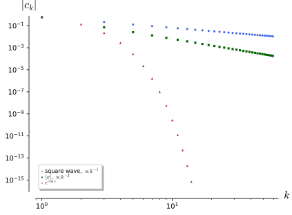
figures/fa2-sobolev-torus.sage.
Definition 34 (Sobolev space on the torus) Let T^n = (\mathbb{R}/2\pi\mathbb{Z})^n and, for f \in L^2(T^n), c_k = (2\pi)^{-n}\int_{T^n}fe^{-ik\cdot x}dx, k \in \mathbb{Z}^n. For real s, the Sobolev space H^s(T^n) consists of the f with \|f\|_{H^s}^2 = (2\pi)^n\sum_{k \in \mathbb{Z}^n}(1 + |k|^2)^s|c_k|^2 < \infty, a Hilbert space with the corresponding inner product; for s < 0 its elements are distributions with these coefficients. H^0 = L^2 isometrically by Parseval, H^s \subset H^t for s > t, and for integer s = m \geq 0, H^m(T^n) is the space of L^2 functions with weak derivatives of order \leq m in L^2, with an equivalent norm.
Veriphy. Pending.
Lean. Pending.
Sage. Pending.
The square wave is discontinuous, but its coefficients decay like 1/k, so it has “almost half a derivative”. The first example decides its membership.
Example 172 (The square wave) The 2\pi-periodic f = \operatorname{sgn}x on (-\pi, \pi) has c_k = \tfrac{2}{i\pi k} for odd k and 0 for even k. Then \sum_{k\ \mathrm{odd}}(1 + k^2)^s\tfrac{4}{\pi^2k^2} converges iff 2s - 2 < -1, that is, f \in H^s iff s < \tfrac12. A jump costs half a derivative in the L^2 scale.
Veriphy. Pending.
Lean. Pending.
Sage. Pending.
The triangle wave is continuous with a corner, and gains one more power of decay. The second example places it in the scale.
Example 173 (The triangle wave) The 2\pi-periodic extension of |x| on [-\pi, \pi] has c_0 = \tfrac\pi2 and c_k = -\tfrac{2}{\pi k^2} for odd k (and 0 for even k \neq 0). So |x| \in H^s iff s < \tfrac32: it has one weak derivative in L^2 (the square wave, by Example 168) and half a derivative more.
Veriphy. Pending.
Lean. Pending.
Sage. Pending.
Negative Sobolev spaces contain distributions, and the delta function is the standard example. The third example finds its place on T^n.
Example 174 (The delta function) \delta at 0 \in T^n has c_k = (2\pi)^{-n} for all k, so \|\delta\|_{H^s}^2 = (2\pi)^{-n}\sum_k(1 + |k|^2)^s, finite iff 2s < -n. So \delta \in H^s(T^n) exactly for s < -\tfrac n2: on the circle for s < -\tfrac12, on T^3 for s < -\tfrac32.
Veriphy. Pending.
Lean. Pending.
Sage. Pending.
For integer order the Fourier norm is a norm of derivatives, which the first exercise checks for s = 1 on the circle. The identity is Parseval’s theorem applied to f and f'.
Exercise 179 (The H^1 norm on the circle) Show that \|f\|_{H^1}^2 = \|f\|_2^2 + \|f'\|_2^2 on T^1 for f \in C^1, using c_k(f') = ikc_k(f). Compute \|\sin x + \tfrac12\cos 2x\|_{H^1}^2 both ways.
2\pi\sum(1 + k^2)|c_k|^2 = 2\pi\sum|c_k|^2 + 2\pi\sum|ikc_k|^2 = \|f\|_2^2 + \|f'\|_2^2 by Parseval (Theorem 2 of Fourier analysis). For f = \sin x + \tfrac12\cos2x: \|f\|_2^2 = \pi + \tfrac\pi4, f' = \cos x - \sin2x with \|f'\|_2^2 = 2\pi; total \tfrac{13\pi}4. In coefficients: |c_{\pm1}| = \tfrac12, |c_{\pm2}| = \tfrac14, and 2\pi(2\cdot 2\cdot\tfrac14 + 2\cdot 5\cdot\tfrac1{16}) = 2\pi(1 + \tfrac58) = \tfrac{13\pi}4.
Sage computes the norm both ways:
x = var('x'); k = var('k')
f = sin(x) + cos(2 * x) / 2
direct = integrate(f^2, x, 0, 2 * pi) + integrate(diff(f, x)^2, x, 0, 2 * pi)
c = lambda kk: integrate(f * exp(-I * kk * x), x, 0, 2 * pi) / (2 * pi)
coeff = 2 * pi * sum((1 + kk^2) * abs(c(kk))^2 for kk in range(-4, 5))
print("|f|_2^2 + |f'|_2^2 =", direct, "; 2 pi sum (1 + k^2)|c_k|^2 =", coeff.simplify_full(), "; equal:", bool(direct == coeff))
print("nonzero coefficients:", [(kk, c(kk)) for kk in range(-4, 5) if c(kk) != 0])Output:
|f|_2^2 + |f'|_2^2 = 13/4*pi ; 2 pi sum (1 + k^2)|c_k|^2 = 13/4*pi ; equal: True
nonzero coefficients: [(-2, 1/4), (-1, 1/2*I), (1, -1/2*I), (2, 1/4)]Veriphy. Pending.
Lean. Pending.
Sage. Pending.
The coefficients of the triangle wave are a standard Fourier computation. The second exercise asks for it and for the borderline sum.
Exercise 180 (Coefficients of the triangle wave) Compute c_k for |x| on [-\pi, \pi] and verify \|\,|x|\,\|_{H^1}^2 = \|x\|_2^2 + \|\operatorname{sgn}x\|_2^2 = \tfrac{2\pi^3}3 + 2\pi from the coefficients, using \sum_{k\ \mathrm{odd}}k^{-2} = \tfrac{\pi^2}8 and \sum_{k\ \mathrm{odd}}k^{-4} = \tfrac{\pi^4}{96} (sums over positive and negative odd k double these).
c_k = \tfrac1{2\pi}\int_{-\pi}^\pi|x|e^{-ikx}dx = \tfrac1\pi\int_0^\pi x\cos kx\,dx = \tfrac{(-1)^k - 1}{\pi k^2}. Then 2\pi\sum_k|c_k|^2 = 2\pi(\tfrac{\pi^2}4 + 2\cdot\tfrac4{\pi^2}\cdot\tfrac{\pi^4}{96}) = \tfrac{\pi^3}{2} + \tfrac{\pi^3}6 = \tfrac{2\pi^3}3 and 2\pi\sum_kk^2|c_k|^2 = 2\pi\cdot 2\cdot\tfrac{4}{\pi^2}\cdot\tfrac{\pi^2}8 = 2\pi, which add up as stated.
Sage computes the coefficients and the two sums:
x = var('x'); k = var('k', domain='integer'); assume(k > 0)
ck = (integrate(x * cos(k * x), x, 0, pi) / pi).simplify_full()
print("c_k (k != 0) =", ck, "; c_0 =", integrate(x, x, 0, pi) / pi)
L2 = 2 * pi * ((pi / 2)^2 + 2 * sum((2 / (pi * m^2))^2 for m in range(1, 4001, 2)))
D2 = 2 * pi * 2 * sum(m^2 * (2 / (pi * m^2))^2 for m in range(1, 4001, 2))
print("2 pi sum |c_k|^2 = %.6f vs 2 pi^3/3 = %.6f" % (L2.n(), (2 * pi^3 / 3).n()))
print("2 pi sum k^2 |c_k|^2 = %.6f vs 2 pi = %.6f (partial sum up to |k| = 4000)" % (D2.n(), (2 * pi).n()))
print("exact sums over odd k > 0: sum 1/k^2 =", sum(1 / (2 * var('j') + 1)^2, var('j'), 0, oo), ", sum 1/k^4 =", sum(1 / (2 * var('j') + 1)^4, var('j'), 0, oo))Output:
c_k (k != 0) = ((-1)^k - 1)/(pi*k^2) ; c_0 = 1/2*pi
2 pi sum |c_k|^2 = 20.670851 vs 2 pi^3/3 = 20.670851
2 pi sum k^2 |c_k|^2 = 6.282549 vs 2 pi = 6.283185 (partial sum up to |k| = 4000)
exact sums over odd k > 0: sum 1/k^2 = 1/8*pi^2 , sum 1/k^4 = 1/96*pi^4Veriphy. Pending.
Lean. Pending.
Sage. Pending.
On the circle, H^1 functions are Hölder continuous of order \tfrac12, a direct consequence of Cauchy-Schwarz. The third exercise proves it.
Exercise 181 (H^1 functions are Hölder) For f \in C^1(T^1) show |f(x) - f(y)| \leq |x - y|^{1/2}\|f'\|_2, and extend it to f \in H^1 by density. Show that the exponent \tfrac12 is sharp using f(x) = |x|^{1/2 + \varepsilon} near 0.
|f(x) - f(y)| = |\int_y^xf'| \leq |x - y|^{1/2}(\int_y^x|f'|^2)^{1/2}. For H^1 functions, approximate by trigonometric polynomials in H^1; the bound passes to the limit and shows that the limit is continuous. For f = |x|^\beta near 0, f' \in L^2 iff 2\beta - 2 > -1, that is \beta > \tfrac12, and |f(x) - f(0)| = |x|^\beta; so every exponent above \tfrac12 is realised and \tfrac12 cannot be improved.
Veriphy. Pending.
Lean. Pending.
Sage. Pending.
On the torus, square-summable derivatives of more than half the dimension control the supremum. The theorem below states this; the proof is Cauchy-Schwarz on the Fourier series, which converges absolutely.
Theorem 19 (Sobolev embedding on the torus) If s > \tfrac n2, every f \in H^s(T^n) has an absolutely and uniformly convergent Fourier series, is continuous, and \|f\|_\infty \leq C_{n, s}\|f\|_{H^s} with C_{n, s}^2 = (2\pi)^{-n}\sum_{k \in \mathbb{Z}^n}(1 + |k|^2)^{-s}. If s > \tfrac n2 + m, then f \in C^m(T^n). For s > \tfrac n2, H^s(T^n) is an algebra: \|fg\|_{H^s} \leq C\|f\|_{H^s}\|g\|_{H^s}. At s = \tfrac n2 the embedding into continuous functions fails.
Veriphy. Pending.
Lean. Pending.
Sage. Pending.
On the circle with s = 1 the constant is a classical sum. The first example evaluates it and finds the function for which the bound is an equality.
Example 175 (The constant on the circle) For n = 1, s = 1: C^2 = \tfrac1{2\pi}\sum_{k \in \mathbb{Z}}\tfrac1{1 + k^2} = \tfrac1{2\pi}\pi\coth\pi = \tfrac12\coth\pi, so \|f\|_\infty \leq 0.7084\,\|f\|_{H^1} on T^1. Equality holds for f with c_k \propto (1 + k^2)^{-1}, that is, the periodic Green’s function of 1 - d^2/dx^2, f(x) = \cosh(x - \pi) on [0, 2\pi], at x = 0.
Veriphy. Pending.
Lean. Pending.
Sage. Pending.
At s = \tfrac n2 the theorem fails, and a lacunary-type logarithmic series shows it. The second example gives a function in H^{1/2}(T^1) that is unbounded.
Example 176 (Unbounded at the critical exponent) f(x) = \sum_{k \geq 2}\tfrac{\cos kx}{k\log k} has \sum_k(1 + k^2)^{1/2}\tfrac1{k^2\log^2k} \approx \sum\tfrac1{k\log^2k} < \infty, so f \in H^{1/2}(T^1), but f(0) = \sum_k\tfrac1{k\log k} = \infty (integral test) and the partial sums at 0 grow like \log\log N. In two dimensions, \log\log(1/|x|) near 0 is the analogous unbounded H^1 function.
Veriphy. Pending.
Lean. Pending.
Sage. Pending.
The theorem counts derivatives precisely: \tfrac n2 derivatives for continuity, one more for each classical derivative. The third example checks this on a series with coefficients k^{-3}.
Example 177 (Counting derivatives) f(x) = \sum_{k \geq 1}\tfrac{\cos kx}{k^3} lies in H^s for s < \tfrac52. The theorem gives f \in C^1 (as s > \tfrac12 + 1 is possible) but not C^2; indeed f'' = -\sum\tfrac{\cos kx}{k} = \log|2\sin\tfrac x2|, which is unbounded at 0.
Veriphy. Pending.
Lean. Pending.
Sage. Pending.
The proof of the theorem is one application of Cauchy-Schwarz to the Fourier series. The first exercise asks for it and for the condition s > \tfrac n2.
Exercise 182 (Proof of the embedding) Show \sum_k|c_k| \leq (\sum_k(1 + |k|^2)^{-s})^{1/2}(\sum_k(1 + |k|^2)^s|c_k|^2)^{1/2}, that the first sum is finite iff s > \tfrac n2 (compare with \int_{\mathbb{R}^n}(1 + |\xi|^2)^{-s}d\xi), and deduce the theorem’s bound and continuity.
Write |c_k| = (1 + |k|^2)^{-s/2}\cdot(1 + |k|^2)^{s/2}|c_k| and apply Cauchy-Schwarz. The sum \sum(1 + |k|^2)^{-s} is comparable to \int(1 + |\xi|^2)^{-s}d\xi = |S^{n - 1}|\int_0^\infty\tfrac{r^{n - 1}}{(1 + r^2)^s}dr, finite iff 2s - n + 1 > 1. The series \sum c_ke^{ik\cdot x} then converges absolutely and uniformly, so its sum is continuous, and |f(x)| \leq \sum|c_k| \leq C_{n, s}\|f\|_{H^s} with the factors of 2\pi as in the definition.
Veriphy. Pending.
Lean. Pending.
Sage. Pending.
The sum \sum 1/(1 + k^2) is evaluated by the Fourier series of a hyperbolic cosine. The second exercise computes the constant of the first example.
Exercise 183 (The sum \sum 1/(1 + k^2)) Show \sum_{k \in \mathbb{Z}}\tfrac1{1 + k^2} = \pi\coth\pi from the Fourier series of \cosh(x - \pi) on [0, 2\pi], and check the value and the constant C_{1, 1} with Sage.
g(x) = \cosh(x - \pi) on [0, 2\pi] has c_k = \tfrac1{2\pi}\int_0^{2\pi}\cosh(x - \pi)e^{-ikx}dx = \tfrac{\sinh\pi}{\pi(1 + k^2)}. At x = 0 the (convergent) series gives \cosh\pi = \tfrac{\sinh\pi}\pi\sum\tfrac1{1 + k^2}, which is the identity:
k = var("k")
S = 1 + 2 * sum(1 / (1 + k ^ 2), k, 1, oo)
print("sum over Z of 1/(1 + k^2) =", S.simplify_full(), "=", S.n(digits=12))
print("pi coth(pi) =", (pi * coth(pi)).n(digits=12))
x = var("x")
for kk in [0, 1, 3]:
ck = numerical_integral(cosh(x - pi) * cos(kk * x), 0, 2 * pi)[0] / (2 * pi.n())
print("k = %d: Fourier coefficient of cosh(x - pi) = %.10f, sinh(pi)/(pi (1 + k^2)) = %.10f" % (kk, ck, (sinh(pi) / (pi * (1 + kk ^ 2))).n()))
C = sqrt(coth(pi) / 2)
print("C_{1,1} = sqrt(coth(pi)/2) =", C.n(digits=6))Output:
sum over Z of 1/(1 + k^2) = -I*psi(I + 1) + I*psi(-I + 1) + 1 = 3.15334809494
pi coth(pi) = 3.15334809494
k = 0: Fourier coefficient of cosh(x - pi) = 3.6760779104, sinh(pi)/(pi (1 + k^2)) = 3.6760779104
k = 1: Fourier coefficient of cosh(x - pi) = 1.8380389552, sinh(pi)/(pi (1 + k^2)) = 1.8380389552
k = 3: Fourier coefficient of cosh(x - pi) = 0.3676077910, sinh(pi)/(pi (1 + k^2)) = 0.3676077910
C_{1,1} = sqrt(coth(pi)/2) = 0.708429Veriphy. Pending.
Lean. Pending.
Sage. Pending.
The algebra property of H^s for s > \tfrac n2 is what makes non-linear field equations tractable in Sobolev spaces. The third exercise proves it on the circle for s = 1.
Exercise 184 (H^1(T^1) is an algebra) For f, g \in H^1(T^1), use (fg)' = f'g + fg' and the embedding \|g\|_\infty \leq C\|g\|_{H^1} to show \|fg\|_{H^1} \leq 2C\|f\|_{H^1}\|g\|_{H^1} with C = C_{1, 1}.
\|fg\|_2^2 + \|(fg)'\|_2^2 \leq \|f\|_\infty^2\|g\|_2^2 + 2\|f\|_\infty^2\|g'\|_2^2 + 2\|g\|_\infty^2\|f'\|_2^2, using |a + b|^2 \leq 2|a|^2 + 2|b|^2. The first two terms are at most 2\|f\|_\infty^2\|g\|_{H^1}^2 \leq 2C^2\|f\|_{H^1}^2\|g\|_{H^1}^2, the last at most 2C^2\|g\|_{H^1}^2\|f\|_{H^1}^2. So \|fg\|_{H^1}^2 \leq 4C^2\|f\|_{H^1}^2\|g\|_{H^1}^2.
Veriphy. Pending.
Lean. Pending.
Sage. Pending.
Sobolev spaces on \mathbb{R}^n
On \mathbb{R}^n the Fourier transform replaces the Fourier series, and smoothness is read from the decay of \hat f(\xi) at large |\xi|. The figure shows the transforms of three functions of decreasing regularity, and the definition below weights them by powers of 1 + |\xi|^2.
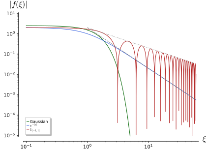
figures/fa2-sobolev-rn.sage.
Definition 35 (Sobolev space on \mathbb{R}^n) For real s, H^s(\mathbb{R}^n) is the space of tempered distributions f (for s \geq 0, functions in L^2) whose Fourier transform \hat f(\xi) = \int f(x)e^{-i\xi\cdot x}dx is a function with \|f\|_{H^s}^2 = (2\pi)^{-n}\int_{\mathbb{R}^n}(1 + |\xi|^2)^s|\hat f(\xi)|^2d\xi < \infty . It is a Hilbert space, H^0 = L^2 isometrically (Theorem 4 of Fourier analysis), and for integer s = m \geq 0 it is W^{m, 2}(\mathbb{R}^n) with an equivalent norm; for m = 1, \|f\|_{H^1}^2 = \|f\|_2^2 + \|\nabla f\|_2^2 exactly. The operator (1 - \Delta)^{t/2}, multiplication of \hat f by (1 + |\xi|^2)^{t/2}, is an isometry of H^{s + t} onto H^s.
Veriphy. Pending.
Lean. Pending.
Sage. Pending.
The two-sided exponential has a rational Fourier transform, so its Sobolev order is read off directly. The first example computes it.
Example 178 (The two-sided exponential) f(x) = e^{-|x|} has \hat f(\xi) = \int e^{-|x| - i\xi x}dx = \tfrac{2}{1 + \xi^2}. Then (1 + \xi^2)^s|\hat f|^2 = 4(1 + \xi^2)^{s - 2} is integrable iff 2s - 4 < -1: f \in H^s(\mathbb{R}) iff s < \tfrac32. As on the circle, a corner leaves one derivative and a half.
Veriphy. Pending.
Lean. Pending.
Sage. Pending.
A jump on the line costs half a derivative, as on the circle. The second example computes the Sobolev order of an indicator.
Example 179 (An indicator function) f = \mathbf{1}_{[-1, 1]} has \hat f(\xi) = 2\sin\xi/\xi, and (1 + \xi^2)^s\tfrac{4\sin^2\xi}{\xi^2} is integrable at infinity iff 2s - 2 < -1 (the average of \sin^2 being \tfrac12). So f \in H^s(\mathbb{R}) iff s < \tfrac12, and by the embedding theorem on the line (Exercise 186) a function in H^s with s > \tfrac12 is continuous.
Veriphy. Pending.
Lean. Pending.
Sage. Pending.
The delta function and the Gaussian are the two extremes of the scale. The third example locates them, the one at negative and the other at arbitrarily large order.
Example 180 (The delta function and the Gaussian) \hat\delta = 1, so \delta \in H^s(\mathbb{R}^n) iff \int(1 + |\xi|^2)^sd\xi < \infty, iff s < -\tfrac n2. The Gaussian e^{-|x|^2/2} has \hat f = (2\pi)^{n/2}e^{-|\xi|^2/2} and lies in every H^s; its H^1 norm is \|f\|_2^2(1 + \tfrac n2), with \|f\|_2^2 = \pi^{n/2}.
Veriphy. Pending.
Lean. Pending.
Sage. Pending.
The H^1 norm can be computed in position or in Fourier space, and the first exercise compares them for the exponential, checking the result with Sage. The two computations agree by Plancherel’s theorem.
Exercise 185 (The H^1 norm of e^{-|x|}) Compute \|e^{-|x|}\|_{H^1}^2 from \|f\|_2^2 + \|f'\|_2^2 and from the Fourier integral, and check both with Sage.
\|f\|_2^2 = 2\int_0^\infty e^{-2x} = 1 and f' = -\operatorname{sgn}x\,e^{-|x|} weakly, with \|f'\|_2^2 = 1: total 2. In Fourier space \tfrac1{2\pi}\int(1 + \xi^2)\tfrac4{(1 + \xi^2)^2}d\xi = \tfrac2\pi\int\tfrac{d\xi}{1 + \xi^2} = 2:
x, xi = var("x xi")
L2 = 2 * integrate(exp(-2 * x), x, 0, oo)
D2 = 2 * integrate(exp(-2 * x), x, 0, oo)
print("||f||^2 =", L2, " ||f'||^2 =", D2, " sum =", L2 + D2)
fhat = 2 * integrate(exp(-x) * cos(xi * x), x, 0, oo)
print("Fourier transform:", fhat.simplify_full())
F = integrate((1 + xi ^ 2) * fhat ^ 2, xi, -oo, oo) / (2 * pi)
print("(1/2 pi) int (1 + xi^2) |fhat|^2 =", F.simplify_full())Output:
||f||^2 = 1 ||f'||^2 = 1 sum = 2
Fourier transform: 2/(xi^2 + 1)
(1/2 pi) int (1 + xi^2) |fhat|^2 = 2Veriphy. Pending.
Lean. Pending.
Sage. Pending.
The embedding theorem on \mathbb{R}^n has the same proof as on the torus, with an integral in place of a sum. The second exercise asks for the case n = 1.
Exercise 186 (The embedding on the line) For f \in H^s(\mathbb{R}) with s > \tfrac12, show \|\hat f\|_1 \leq (\int(1 + \xi^2)^{-s})^{1/2}(2\pi)^{1/2}\|f\|_{H^s}, and conclude from the inversion formula that f is bounded and continuous. Compute the constant for s = 1.
Cauchy-Schwarz as in Exercise 182. Then f(x) = \tfrac1{2\pi}\int\hat fe^{i\xi x}d\xi is continuous by dominated convergence, with \|f\|_\infty \leq \tfrac1{2\pi}\|\hat f\|_1. For s = 1, \int\tfrac{d\xi}{1 + \xi^2} = \pi, so \|f\|_\infty \leq \tfrac{\sqrt{2\pi}\sqrt\pi}{2\pi}\|f\|_{H^1} = \tfrac1{\sqrt2}\|f\|_{H^1}; e^{-|x|} attains it: 1 = \tfrac1{\sqrt2}\sqrt2.
Veriphy. Pending.
Lean. Pending.
Sage. Pending.
Scaling decides which Sobolev spaces embed into which, and the critical exponent s = \tfrac n2 is scale invariant. The third exercise computes the scaling of the homogeneous part of the norm.
Exercise 187 (Scaling) For f_\lambda(x) = f(\lambda x) show \hat f_\lambda(\xi) = \lambda^{-n}\hat f(\xi/\lambda) and \int|\xi|^{2s}|\hat f_\lambda|^2d\xi = \lambda^{2s - n}\int|\xi|^{2s}|\hat f|^2d\xi. Explain why no inequality \|f\|_\infty \leq C\|f\|_{\dot H^s} with the homogeneous norm can hold unless s = \tfrac n2, and why it fails even then.
The transform follows by substituting y = \lambda x, and the integral by substituting \eta = \xi/\lambda: \lambda^{-2n} \lambda^{2s}\lambda^n = \lambda^{2s - n}. Since \|f_\lambda\|_\infty = \|f\|_\infty, an inequality \|f\|_\infty \leq C\lambda^{s - n/2}\|f\|_{\dot H^s} for all \lambda forces s = \tfrac n2; at s = \tfrac n2 the logarithmic examples of Example 176 violate it.
Veriphy. Pending.
Lean. Pending.
Sage. Pending.
The Laplacian gains exactly two derivatives: if \Delta u is in H^s, so are two more derivatives of u. The theorem below states this elliptic regularity; on \mathbb{R}^n and the torus it is a statement about Fourier multipliers.
Theorem 20 (Elliptic regularity for the Laplacian) On \mathbb{R}^n and on T^n, 1 - \Delta is an isometric isomorphism of H^{s + 2} onto H^s for every real s, with the norms above. If u \in H^t for some t and \Delta u \in H^s, then u \in H^{s + 2}. Consequently a distribution u with \Delta u = \lambda u lies in every H^s and is smooth, and a weakly harmonic u \in L^2(T^n) is constant.
Veriphy. Pending.
Lean. Pending.
Sage. Pending.
The Green’s function of 1 - d^2/dx^2 on the line is the exponential of Example 178, and the theorem predicts its regularity. The first example checks it.
Example 181 (The Green’s function of 1 - d^2/dx^2) u = \tfrac12e^{-|x|} has \hat u = \tfrac1{1 + \xi^2}, so (1 - d^2/dx^2)u = \delta. Since \delta \in H^s for s < -\tfrac12, the theorem gives u \in H^{s + 2} for s + 2 < \tfrac32, in agreement with Example 178. In three dimensions the Green’s function of 1 - \Delta is the Yukawa potential e^{-|x|}/(4\pi|x|), in H^s for s < \tfrac12.
Veriphy. Pending.
Lean. Pending.
Sage. Pending.
On the circle the theorem solves Poisson’s equation and counts derivatives. The second example takes the square wave as source.
Example 182 (Poisson’s equation on the circle) -u'' = f on T^1 is solvable iff c_0(f) = 0, with c_k(u) = c_k(f)/k^2 for k \neq 0. For the square wave f of Example 172, in H^s for s < \tfrac12, the solution lies in H^{s + 2} for s + 2 < \tfrac52: it is C^1 but not C^2. Explicitly, the solution of mean zero is u(x) = \tfrac12x(\pi - |x|) on [-\pi, \pi], periodic and C^1 (with u'(\pm\pi) = -\tfrac\pi2), while u'' = -\operatorname{sgn}x jumps at 0 and \pi.
Veriphy. Pending.
Lean. Pending.
Sage. Pending.
Eigenfunctions of the Laplacian are smooth, whatever space they are found in. The third example applies the theorem to them on the torus.
Example 183 (Smooth eigenfunctions) If u \in L^2(T^n) and -\Delta u = \lambda u weakly, then (|k|^2 - \lambda)c_k = 0, so u is a finite sum of e^{ik\cdot x} with |k|^2 = \lambda, a trigonometric polynomial, smooth. The theorem gives the same conclusion without coordinates: u \in H^0 and \Delta u = -\lambda u \in H^0 give u \in H^2, then H^4, and so on.
Veriphy. Pending.
Lean. Pending.
Sage. Pending.
The isometry of the theorem is the statement that the weight (1 + |\xi|^2)^s shifts by 2 under multiplication by 1 + |\xi|^2. The first exercise writes out the proof.
Exercise 188 (Proof of the isometry) Show \|(1 - \Delta)u\|_{H^s} = \|u\|_{H^{s + 2}} and that (1 - \Delta)^{-1}, multiplication of \hat f by (1 + |\xi|^2)^{-1}, maps H^s onto H^{s + 2}. Deduce the regularity statement: if u \in H^t and \Delta u \in H^s, write (1 - \Delta)u = u - \Delta u and iterate.
\widehat{(1 - \Delta)u} = (1 + |\xi|^2)\hat u, so (1 + |\xi|^2)^s|\widehat{(1 - \Delta)u}|^2 = (1 + |\xi|^2)^{s + 2}|\hat u|^2, and the inverse multiplier is defined on all of H^s. If u \in H^t and \Delta u \in H^s, then (1 - \Delta)u \in H^{\min(t, s)}, so u \in H^{\min(t, s) + 2}; repeating raises t by 2 each time until t \geq s, and then u \in H^{s + 2}.
Veriphy. Pending.
Lean. Pending.
Sage. Pending.
The equation u - u'' = \mathbf{1}_{[-1, 1]} can be solved by convolution with the Green’s function, and its solution has exactly the regularity predicted. The second exercise finds it.
Exercise 189 (A screened box) Solve u - u'' = \mathbf{1}_{[-1, 1]} on \mathbb{R} by u = \tfrac12e^{-|x|}*\mathbf{1}_{[-1, 1]}, and show that u is C^1 but u'' jumps at \pm1, in agreement with u \in H^s for s < \tfrac52.
For |x| \leq 1, u(x) = \tfrac12\int_{-1}^1e^{-|x - y|}dy = 1 - e^{-1}\cosh x; for x \geq 1, u = \sinh(1)e^{-x}, and symmetrically. At x = 1: u = 1 - e^{-1}\cosh 1 = \sinh(1)e^{-1} and u' = -e^{-1}\sinh 1 on both sides, so u \in C^1; but u'' = -e^{-1}\cosh 1 inside and u'' = \sinh(1)e^{-1} outside, a jump of 1, which is the jump of the source.
Sage computes the convolution and the derivatives at x = 1 on both sides:
x, y = var('x y')
uin = (integrate(exp(-(x - y)) / 2, y, -1, x) + integrate(exp(-(y - x)) / 2, y, x, 1)).simplify_full()
uout = integrate(exp(-(x - y)) / 2, y, -1, 1).simplify_full() # x >= 1
print("u inside =", uin, "; equals 1 - e^-1 cosh x:", bool((uin - (1 - exp(-1) * (exp(x) + exp(-x)) / 2)).simplify_full() == 0))
print("u outside (x >= 1) =", uout, "; equals sinh(1) e^-x:", bool((uout - (e - exp(-1)) / 2 * exp(-x)).simplify_full() == 0))
print("u - u'' inside =", (uin - diff(uin, x, 2)).simplify_full(), ", outside =", (uout - diff(uout, x, 2)).simplify_full())
for d in (0, 1, 2):
print("derivative %d at x = 1: inside %s, outside %s" % (d, diff(uin, x, d).subs(x=1).simplify_full(), diff(uout, x, d).subs(x=1).simplify_full()))
print("jump of u'' at 1:", (diff(uout, x, 2) - diff(uin, x, 2)).subs(x=1).simplify_full())Output:
u inside = -1/2*(e^(2*x) - 2*e^(x + 1) + 1)*e^(-x - 1) ; equals 1 - e^-1 cosh x: True
u outside (x >= 1) = 1/2*(e^2 - 1)*e^(-x - 1) ; equals sinh(1) e^-x: True
u - u'' inside = 1 , outside = 0
derivative 0 at x = 1: inside 1/2*(e^2 - 1)*e^(-2), outside 1/2*(e^2 - 1)*e^(-2)
derivative 1 at x = 1: inside -1/2*(e^2 - 1)*e^(-2), outside -1/2*(e^2 - 1)*e^(-2)
derivative 2 at x = 1: inside -1/2*(e^2 + 1)*e^(-2), outside 1/2*(e^2 - 1)*e^(-2)
jump of u'' at 1: 1Veriphy. Pending.
Lean. Pending.
Sage. Pending.
On the torus a weakly harmonic function is constant, which the third exercise proves in coefficients. It is the simplest case of the regularity of solutions of elliptic equations.
Exercise 190 (Weakly harmonic functions) Let u \in L^2(T^n) with \int u\Delta\varphi = 0 for all smooth \varphi. Test with \varphi = e^{-ik\cdot x} to show |k|^2c_k = 0, and conclude that u is constant.
\Delta e^{-ik\cdot x} = -|k|^2e^{-ik\cdot x}, so 0 = \int u\Delta\varphi = -|k|^2(2\pi)^nc_k. Hence c_k = 0 for k \neq 0, and u = c_0 almost everywhere.
Veriphy. Pending.
Lean. Pending.
Sage. Pending.
Compact embeddings
On a compact space, a bound on more derivatives forces convergence in a weaker norm along a subsequence. The theorem below states this for the torus; its corollary is the discreteness of the spectra of elliptic operators on compact spaces, used for the Laplacian in Theorem 18.
Theorem 21 (Rellich theorem on the torus) For s > t the inclusion H^s(T^n) \to H^t(T^n) is compact; in particular every bounded sequence in H^1(T^n) has a subsequence converging in L^2(T^n). On \mathbb{R}^n the inclusion H^s \to H^t is not compact. Consequently (1 - \Delta)^{-1} is a compact self-adjoint operator on L^2(T^n), and -\Delta has a discrete spectrum of eigenvalues of finite multiplicity tending to infinity Waterstraat (2016, Thm. 1.3.5).
Veriphy. Pending.
Lean. Pending.
Sage. Pending.
In the Fourier basis the inclusion is a diagonal operator with entries tending to zero. The first example makes the proof explicit.
Example 184 (The inclusion as a diagonal operator) The maps f \mapsto ((2\pi)^{n/2}(1 + |k|^2)^{s/2}c_k)_k identify H^s with \ell^2(\mathbb{Z}^n) for every s, and under these identifications the inclusion H^s \to H^t becomes \operatorname{diag}((1 + |k|^2)^{(t - s)/2}), whose entries tend to 0. It is compact by Example 130.
Veriphy. Pending.
Lean. Pending.
Sage. Pending.
On \mathbb{R} the travelling bump is bounded in every H^s and has no L^2-convergent subsequence. The second example shows that the compactness of the space is essential.
Example 185 (Failure on the line) f_m(x) = e^{-(x - m)^2} has \|f_m\|_{H^1} = \|f_0\|_{H^1} for all m, and \|f_m - f_l\|_2^2 \to 2\|f_0\|_2^2 as |m - l| \to \infty. No subsequence converges in L^2, so H^1(\mathbb{R}) \to L^2(\mathbb{R}) is not compact; the mass escapes to infinity, which a compact space prevents.
Veriphy. Pending.
Lean. Pending.
Sage. Pending.
The resolvent of the Laplacian on the circle is a compact diagonal operator, and its eigenvalues give the spectrum. The third example computes them.
Example 186 (The resolvent on the circle) (1 - d^2/dx^2)^{-1}e^{ikx} = \tfrac1{1 + k^2}e^{ikx}, so the resolvent is compact self-adjoint on L^2(T^1) with eigenvalues \tfrac1{1 + k^2} \to 0, each of multiplicity 2 except k = 0. Hence \sigma(-d^2/dx^2) = \{k^2 : k \geq 0\}, the spectrum of Example 159, and the theorem explains why it is discrete.
Veriphy. Pending.
Lean. Pending.
Sage. Pending.
The first exercise proves the theorem by the tail estimate behind the diagonal picture. It shows that compactness comes from the high frequencies being small.
Exercise 191 (Proof of the Rellich theorem) Let \|f_j\|_{H^s} \leq 1. Show that \|P_{>N}f\|_{H^t} \leq (1 + N^2)^{(t - s)/2}\|f\|_{H^s} for the projection P_{>N} onto the modes with |k| > N, extract a subsequence converging on the finitely many low modes, and conclude.
On modes with |k| > N, (1 + |k|^2)^t \leq (1 + N^2)^{t - s}(1 + |k|^2)^s, which gives the tail bound. The low modes c_k(f_j), |k| \leq N, are finitely many bounded sequences, so a subsequence converges on them; a diagonal argument over N gives one subsequence converging on every mode. For it, \limsup\|f_i - f_j\|_{H^t} \leq 2(1 + N^2)^{(t - s)/2} for every N, so it is Cauchy in H^t.
Veriphy. Pending.
Lean. Pending.
Sage. Pending.
The best constant in the Poincaré inequality on the circle is the first non-zero eigenvalue, which the second exercise derives from the Fourier coefficients. The inequality fails without the condition of mean zero, as the constants show.
Exercise 192 (The Poincaré inequality on the circle) Show that \|f\|_2 \leq \|f'\|_2 for f \in H^1(T^1) with \int f = 0, with equality exactly for f = a\cos x + b\sin x. What is the constant on a circle of length L?
c_0 = 0 and \|f'\|_2^2 = 2\pi\sum k^2|c_k|^2 \geq 2\pi\sum|c_k|^2 = \|f\|_2^2, with equality iff c_k = 0 for |k| \neq 1. By scaling x \mapsto 2\pi x/L, \|f\|_2 \leq \tfrac{L}{2\pi}\|f'\|_2.
Veriphy. Pending.
Lean. Pending.
Sage. Pending.
The identity of H^s is not compact, and the third exercise shows that the norm of the error of a finite-rank approximation of the inclusion is explicit. The decay rate measures how much smoothing the inclusion performs.
Exercise 193 (Approximating the inclusion) Let \iota : H^1(T^1) \to L^2(T^1) be the inclusion and \iota_N = \iota P_{\leq N}. Compute \|\iota - \iota_N\|, and show that the identity of L^2 is not a norm limit of finite-rank operators.
In the diagonal picture \iota - \iota_N = \operatorname{diag}((1 + k^2)^{-1/2}\mathbf{1}_{|k| > N}), of norm (1 + (N + 1)^2)^{-1/2} \to 0. For the identity of L^2 the same truncation leaves \operatorname{diag}(\mathbf{1}_{|k| > N}) of norm 1, and any finite-rank F has \|1 - F\| \geq 1, since 1 - F is the identity on the infinite-dimensional \ker F.
Veriphy. Pending.
Lean. Pending.
Sage. Pending.
Exercises
These exercises combine weak derivatives, Sobolev spaces, embeddings and compactness. Each turns a statement about smoothness into one about the decay of Fourier coefficients.
The heat flow smooths instantly, mapping L^2 into every Sobolev space. The first integrative exercise computes the norm of this smoothing on the circle.
Exercise 194 (Heat flow smooths) For t > 0 let e^{t\Delta} act on L^2(T^1) by c_k \mapsto e^{-tk^2}c_k. Show \|e^{t\Delta}\|_{L^2 \to H^s} = \sup_k(1 + k^2)^{s/2}e^{-tk^2}, bound it by e^t(s/(2et))^{s/2} for t \leq s/2, and conclude that e^{t\Delta}f is smooth.
The operator is diagonal from the L^2 to the H^s coordinates with entries (1 + k^2)^{s/2}e^{-tk^2}, so its norm is their supremum. With y = 1 + k^2, y^{s/2}e^{-t(y - 1)} \leq e^ty^{s/2}e^{-ty}, maximal at y = s/(2t), giving e^t(s/(2et))^{s/2} (the maximiser y = s/(2t) is admissible because t \leq s/2). Every H^s norm being finite, e^{t\Delta}f is C^\infty by Theorem 19.
Sage compares the supremum over k with the bound for a few values of s and t:
for s, t in [(1, 0.1), (2, 0.05), (4, 0.01), (4, 1.0), (10, 0.5)]:
sup = max((1 + k^2)^(s / 2) * exp(-t * k^2) for k in range(0, 2000))
bound = exp(t) * (s / (2 * e * t))^(s / 2) if t <= s / 2 else None
print("s = %2d, t = %.2f: norm %.4f, bound %s" % (s, t, RDF(sup), "%.4f" % RDF(bound) if bound else "(t > s/2)"))Output:
s = 1, t = 0.10: norm 1.4989, bound 1.4989
s = 2, t = 0.05: norm 7.6386, bound 7.7348
s = 4, t = 0.01: norm 5466.5745, bound 5467.8170
s = 4, t = 1.00: norm 1.4715, bound 1.4715
s = 10, t = 0.50: norm 1110.8997, bound 1110.8997Veriphy. Pending.
Lean. Pending.
Sage. Pending.
Rellich’s theorem in one dimension can be proved with Arzelà-Ascoli, since H^1 functions are uniformly Hölder. The second integrative exercise does so, with values in C(T^1) rather than L^2.
Exercise 195 (Rellich by Arzelà-Ascoli) Use Example 175 and Exercise 181 to show that the unit ball of H^1(T^1) is bounded and equicontinuous in C(T^1), and conclude that H^1(T^1) \to C(T^1) is compact.
\|f\|_\infty \leq 0.71\|f\|_{H^1} \leq 0.71 and |f(x) - f(y)| \leq |x - y|^{1/2} on the unit ball, so the ball is uniformly bounded and equicontinuous; by Arzelà-Ascoli its image has compact closure in C(T^1). This is stronger than compactness into L^2, since \|f\|_2 \leq \sqrt{2\pi}\|f\|_\infty.
Veriphy. Pending.
Lean. Pending.
Sage. Pending.
Weak solutions of Poisson’s equation exist by the Riesz representation theorem in a Sobolev space. The third integrative exercise carries this out on the circle.
Exercise 196 (Weak solutions by Riesz) On \dot H^1 = \{u \in H^1(T^1) : \int u = 0\} use the inner product (u, v) = \int\bar u'v'. Show that it is equivalent to the H^1 inner product (by Exercise 192), and that for f \in L^2 with \int f = 0 there is a unique u \in \dot H^1 with (\varphi, u) = \int\bar\varphi f for all \varphi \in \dot H^1. Show that u solves -u'' = f and lies in H^2.
\|u'\|_2^2 \leq \|u\|_{H^1}^2 = \|u\|_2^2 + \|u'\|_2^2 \leq 2\|u'\|_2^2, so \dot H^1 is a Hilbert space with (\cdot, \cdot). The functional \varphi \mapsto \int\bar\varphi f is bounded: |\int\bar\varphi f| \leq \|f\|_2\|\varphi\|_2 \leq \|f\|_2\|\varphi'\|_2. Theorem 11 gives u. Taking \varphi = e^{ikx}: k^2c_k(u)\cdot 2\pi = 2\pi c_k(f), which is -u'' = f weakly, and c_k(u) = c_k(f)/k^2 puts u in H^2 (Theorem 20).
Veriphy. Pending.
Lean. Pending.
Sage. Pending.
Traces, determinants and heat kernels
The trace of a matrix is the sum of its eigenvalues, and for an operator on an infinite-dimensional space the sum may or may not converge; when it does for e^{-t(-\Delta)}, the resulting function of t encodes the spectrum of the Laplacian and, through its small-t behaviour, the geometry of the space. This section defines trace-class operators and determinants, the heat kernel and heat trace, quotes the small-t asymptotics, and introduces zeta regularisation with the Casimir energy as its application in outline; the figure shows the heat trace of the circle against its leading asymptotics.
For more on this topic, see Buchbinder and Shapiro (2021, sec. 13.4).
Trace class
Summing the diagonal entries of an infinite matrix may give a different answer in a different basis, or no answer at all, unless the entries decay fast enough. The definition below isolates the operators for which the trace is well defined and basis independent, with the eigenvalue sum as the formula that matters.
Definition 36 (Trace class) For a positive operator A \geq 0 the trace \operatorname{tr}A = \sum_k\langle e_k, Ae_k\rangle \in [0, \infty] is independent of the orthonormal basis (e_k) (Exercise 198). A bounded operator A is trace class** if \|A\|_1 = \operatorname{tr}|A| < \infty with |A| = \sqrt{A^\dagger A}; then \operatorname{tr}A = \sum_k\langle e_k, Ae_k\rangle converges absolutely, is basis independent, and satisfies |\operatorname{tr}A| \leq \|A\|_1 and \operatorname{tr}(AB) = \operatorname{tr}(BA) for bounded B. Trace-class operators are Hilbert-Schmidt, hence compact; a compact self-adjoint operator is trace class iff \sum_k|\lambda_k| < \infty, and then \operatorname{tr}A = \sum_k\lambda_k. An integral operator on a compact space with a continuous kernel that is trace class has \operatorname{tr}K = \int k(x, x)\,dx.
Veriphy. Pending.
Lean. Pending.
Sage. Pending.
For matrices the trace is the sum of the diagonal entries and of the eigenvalues, and its cyclic property is the reason it is basis independent. The first example records these facts and the trace of a projection.
Example 187 (Traces of matrices) For an n \times n matrix, \operatorname{tr}A = \sum_jA_{jj} = \sum_k\lambda_k (from A = UDU^\dagger and \operatorname{tr}(UDU^\dagger) = \operatorname{tr}(DU^\dagger U) = \operatorname{tr}D), and \operatorname{tr} (AB) = \sum_{jk}A_{jk}B_{kj} = \operatorname{tr}(BA). The trace of an orthogonal projection is the dimension of its range (eigenvalues 1 and 0), \operatorname{tr}\sigma_a = 0, and \operatorname{tr}e^{iA} = \sum e^{i\lambda_k} as in Example 128 (Exercise 197).
A diagonal operator is trace class exactly when its diagonal is absolutely summable, and the Green’s operator of Example 119 is an example whose trace can be computed in two ways. The second example compares the eigenvalue sum with the integral of the kernel along the diagonal.
Example 188 (Diagonal operators and the Green’s operator) De_n = \lambda_ne_n is trace class iff \sum|\lambda_n| < \infty: \lambda_n = 1/n^2 gives \operatorname{tr}D = \pi^2/6, while \lambda_n = 1/n is Hilbert-Schmidt but not trace class (the harmonic series diverges, Series). The Green’s operator G with kernel g(x, y) = \min(x, y) - xy has eigenvalues 1/(n\pi)^2 and \operatorname{tr}G = \sum_n1/(n\pi)^2 = 1/6, which equals \int_0^1g(x, x)\,dx = \int_0^1(x - x^2)\,dx = 1/6 (Exercise 197): the trace formula for kernels.
The heat operator on the circle is trace class for every positive time, with a trace given by a rapidly convergent series, but at time zero it degenerates to the identity. The third example introduces this trace, the main object of the rest of the section.
Example 189 (The heat operator on the circle) e^{t\Delta} on L^2(S^1) has eigenvalues e^{-tn^2} on e^{in\theta} (Definition 26 extended to the unbounded \Delta), and \sum_{n \in \mathbb{Z}}e^{-tn^2} < \infty for t > 0: the operator is trace class with \operatorname{tr}e^{t\Delta} = \sum_ne^{-tn^2} = 1 + 2e^{-t} + 2e^{-4t} + \dots, the heat trace. At t = 0 the operator is the identity, not trace class, and the trace diverges as t \to 0 like \sqrt{\pi/t} (Theorem 22, Figure 21).
The cyclic property, the trace of a projection and the two computations of \operatorname{tr}G are exact in Sage. The first exercise asks for them, including a product of three matrices where only cyclic permutations agree.
Exercise 197 (Traces in Sage) With Sage, check \operatorname{tr}(AB) = \operatorname{tr}(BA) and \operatorname{tr}(ABC) = \operatorname{tr}(CAB) \neq \operatorname{tr}(BAC) for explicit 3 \times 3 matrices, verify \operatorname{tr}P = 2 for the projection of Exercise 107, and compute \operatorname{tr}G both as \sum_n1/(n\pi)^2 and as \int_0^1g(x, x)\,dx.
The trace is invariant under cyclic permutations only; with non-commuting A, B, C the transposition A \leftrightarrow B changes it. Both computations of \operatorname{tr}G give 1/6:
A = matrix(QQ, [[1, 2, 0], [0, 1, 3], [1, 0, 2]]); B = matrix(QQ, [[0, 1, 1], [2, 0, 1], [1, 1, 0]]); C = matrix(QQ, [[1, 0, 1], [0, 2, 0], [3, 0, 1]])
print("tr(AB) =", (A * B).trace(), " tr(BA) =", (B * A).trace())
print("tr(ABC) =", (A * B * C).trace(), " tr(CAB) =", (C * A * B).trace(), " tr(BCA) =", (B * C * A).trace(), " tr(BAC) =", (B * A * C).trace())
P = matrix(SR, [[2, 1, I], [1, 2, -I], [-I, I, 2]]) / 3
print("projection: P^2 = P:", bool((P * P).simplify_full() == P), " tr P =", P.trace())
n = var("n", domain="integer"); x = var("x")
print("sum 1/(n pi)^2 =", sum(1 / (n * pi) ** 2, n, 1, oo), "; int_0^1 g(x, x) dx = int_0^1 (x - x^2) dx =", integrate(x - x ** 2, x, 0, 1))Output:
tr(AB) = 8 tr(BA) = 8
tr(ABC) = 22 tr(CAB) = 22 tr(BCA) = 22 tr(BAC) = 28
projection: P^2 = P: True tr P = 2
sum 1/(n pi)^2 = 1/6 ; int_0^1 g(x, x) dx = int_0^1 (x - x^2) dx = 1/6Basis independence of the trace of a positive operator is proved by inserting a second orthonormal basis and exchanging the order of two non-negative sums. The second exercise asks for this proof through the square root of A.
Exercise 198 (Basis independence of the trace) For A \geq 0 with square root \sqrt A, show that \sum_k\langle e_k, Ae_k\rangle = \sum_k\|\sqrt Ae_k\|^2 = \sum_j\|\sqrt Af_j\|^2 for any two orthonormal bases (e_k), (f_j), and deduce that \operatorname{tr}A is basis independent and that \operatorname{tr}(U^\dagger AU) = \operatorname{tr}A for unitary U.
\langle e_k, Ae_k\rangle = \langle\sqrt Ae_k, \sqrt Ae_k\rangle = \|\sqrt Ae_k\|^2. By Parseval in the basis (f_j), \|\sqrt Ae_k\|^2 = \sum_j|\langle f_j, \sqrt Ae_k\rangle|^2 = \sum_j|\langle\sqrt Af_j, e_k\rangle|^2 (self-adjointness of \sqrt A), and summing over k and exchanging the sums of non-negative terms gives \sum_j\|\sqrt Af_j\|^2 by Parseval in the basis (e_k). Hence the trace is basis independent; U^\dagger AU has the diagonal entries \langle Ue_k, AUe_k\rangle, which is the trace of A in the orthonormal basis (Ue_k).
Trace class is strictly stronger than Hilbert-Schmidt, and absolute convergence of the diagonal sum is what makes the trace well defined. The last exercise asks for the inclusion and for the absolute convergence through the polar decomposition.
Exercise 199 (Trace class versus Hilbert-Schmidt) Show that a compact self-adjoint operator with \sum|\lambda_k| < \infty has \sum\lambda_k^2 < \infty, that the diagonal operator with \lambda_n = 1/n is Hilbert-Schmidt but not trace class, and that for trace-class A = U|A| (polar decomposition) the series \sum_k\langle e_k, Ae_k\rangle converges absolutely with |\operatorname{tr}A| \leq \operatorname{tr}|A|.
\sum\lambda_k^2 \leq (\max|\lambda_k|)\sum|\lambda_k| < \infty. For \lambda_n = 1/n, \sum 1/n^2 = \pi^2/6 but \sum 1/n = \infty. With A = U|A|, \langle e_k, Ae_k\rangle = \langle|A|^{1/2}U^\dagger e_k, |A|^{1/2} e_k\rangle, so |\langle e_k, Ae_k\rangle| \leq \||A|^{1/2}U^\dagger e_k\|\,\||A|^{1/2}e_k\| and by Cauchy-Schwarz over k, \sum_k|\langle e_k, Ae_k\rangle| \leq (\sum_k\||A|^{1/2}U^\dagger e_k\|^2)^{1/2} (\sum_k\||A|^{1/2}e_k\|^2)^{1/2} \leq \operatorname{tr}|A|, using \sum_k\||A|^{1/2}U^\dagger e_k\|^2 = \operatorname{tr}(U|A|U^\dagger) \leq \operatorname{tr}|A| (the trace of U|A|U^\dagger equals that of |A| when U is unitary, and is bounded by it for a partial isometry).
Determinants
The determinant of a matrix is the product of its eigenvalues, and for an operator of the form 1 + A with A trace class the infinite product converges. The definition below introduces this Fredholm determinant and the formula \det e^A = e^{\operatorname{tr}A} that ties it to the trace.
Definition 37 (Fredholm determinant) For a trace-class operator A with eigenvalues \lambda_k (with multiplicity), the Fredholm determinant is \det(1 + A) = \prod_k(1 + \lambda_k), absolutely convergent because \sum|\lambda_k| < \infty (Exercise 201). It satisfies \det((1 + A)(1 + B)) = \det(1 + A)\det(1 + B), \det(1 + A) \neq 0 iff 1 + A is invertible, \det e^A = e^{\operatorname{tr}A}, and for \|A\| < 1 the expansion \log\det(1 + zA) = \sum_{m \geq 1}\frac{(-1)^{m + 1}}{m}z^m\operatorname{tr}(A^m), so that \operatorname{tr}A is the derivative of \det(1 + zA) at z = 0. For a compact self-adjoint A of trace class, z \mapsto \det(1 - zA) = \prod_k(1 - z\lambda_k) is an entire function whose zeros are the reciprocals of the eigenvalues.
Veriphy. Pending.
Lean. Pending.
Sage. Pending.
For a matrix the Fredholm determinant is the ordinary one, and the identity \det e^A = e^{\operatorname{tr}A} follows from triangularisation. The first example records it on an explicit matrix and gives the expansion of the determinant in traces.
Example 190 (Determinants of matrices) For A = \begin{pmatrix} 1 & 2 \\ 3 & 4\end{pmatrix}, \det e^A = e^{\operatorname{tr}A} = e^5 although e^A itself has transcendental entries (Exercise 200); in general e^A = Ue^TU^{-1} with T upper triangular gives \det e^A = \prod e^{T_{kk}} = e^{\sum T_{kk}}. For 2 \times 2 matrices \det(1 + zA) = 1 + z\operatorname{tr}A + z^2\det A, and the series \log\det(1 + zA) = z\operatorname{tr}A - \tfrac{z^2}{2} \operatorname{tr}A^2 + \dots reproduces \det A = \tfrac12((\operatorname{tr}A)^2 - \operatorname{tr}A^2).
The Fredholm determinant of the Green’s operator is Euler’s product for the sine, and its zeros are the eigenvalues of the Dirichlet Laplacian. The second example states this identity, the model for the determinants of differential operators defined by zeta regularisation below.
Example 191 (The sine as a Fredholm determinant) For the Green’s operator G with eigenvalues 1/(n\pi)^2 (Example 119), \det(1 - zG) = \prod_{n \geq 1}\left(1 - \frac{z}{n^2\pi^2}\right) = \frac{\sin\sqrt z}{\sqrt z}, Euler’s product for the sine (Analytic continuation and special functions), an entire function of z with zeros at z = n^2\pi^2, the eigenvalues of -d^2/dx^2 with Dirichlet conditions on (0, 1). The coefficient of z is -\operatorname{tr}G = -1/6, which is the Taylor coefficient of \sin\sqrt z/\sqrt z = 1 - z/6 + z^2/120 - \dots (Exercise 202).
The determinant of -\Delta itself cannot be a Fredholm determinant, since the eigenvalues grow; the way out is to define it through the derivative of the spectral zeta function, as in Definition 39. The third example previews this by rewriting \log\det as a trace of a logarithm.
Example 192 (\log\det = \operatorname{tr}\log) For a positive matrix, \log\det A = \sum_k\log\lambda_k = \operatorname{tr}\log A, and formally \sum_k\log \lambda_k = -\frac{d}{ds}\sum_k\lambda_k^{-s}\big|_{s = 0}. For -\Delta on a compact space the sum \sum\log \lambda_k diverges, but \zeta_\Delta(s) = \sum\lambda_k^{-s} converges for large \operatorname{Re}s and continues analytically to s = 0, which is how \det{}_\zeta(-\Delta) = e^{-\zeta_\Delta'(0)} is defined; for the Dirichlet operator on (0, \pi) this gives \det{}_\zeta = 2\pi (Example 200).
Sage verifies \det e^A = e^{\operatorname{tr}A} symbolically and expands \log\det(1 + zA) in traces of powers. The first exercise asks for both and for the product formula over the eigenvalues.
Exercise 200 (\det e^A and the trace expansion in Sage) For A = \begin{pmatrix} 1 & 2 \\ 3 & 4\end{pmatrix} check \det e^A = e^{\operatorname{tr}A} symbolically, verify \det(1 + A) = \prod(1 + \lambda_k), and compare the Taylor expansion of \log\det(1 + zA) to order z^4 with \sum_{m \leq 4}\frac{(-1)^{m + 1}}{m}z^m\operatorname{tr}(A^m).
\det e^A = e^5 exactly; \det(1 + A) = 4 = (1 + \lambda_1)(1 + \lambda_2) with \lambda_{1, 2} = (5 \pm \sqrt{33})/2; the two expansions agree term by term:
A = matrix(SR, [[1, 2], [3, 4]])
print("det e^A =", A.exp().det().simplify_full(), " e^{tr A} = e^%s" % A.trace())
ev = A.eigenvalues()
print("eigenvalues:", ev, " det(1 + A) =", (identity_matrix(2) + A).det(), " prod(1 + lambda) =", prod(1 + l for l in ev).expand())
z = var("z")
lhs = taylor(log((identity_matrix(2) + z * A).det()), z, 0, 4)
rhs = sum((-1) ** (m + 1) * z ** m * (A ** m).trace() / m for m in range(1, 5))
print("log det(1 + zA) =", lhs); print("trace series =", rhs.expand()); print("agree:", bool((lhs - rhs).expand() == 0))Output:
det e^A = e^5 e^{tr A} = e^5
eigenvalues: [-1/2*sqrt(33) + 5/2, 1/2*sqrt(33) + 5/2] det(1 + A) = 4 prod(1 + lambda) = 4
log det(1 + zA) = -833/4*z^4 + 155/3*z^3 - 29/2*z^2 + 5*z
trace series = -833/4*z^4 + 155/3*z^3 - 29/2*z^2 + 5*z
agree: TrueAn infinite product \prod(1 + \lambda_k) converges absolutely exactly when \sum|\lambda_k| does, which is why the Fredholm determinant needs trace class and not merely Hilbert-Schmidt. The second exercise asks for this and for the regularised determinant that works for Hilbert-Schmidt operators.
Exercise 201 (Convergence of the product) Show that for \lambda_k \to 0 the product \prod_k(1 + \lambda_k) converges absolutely (that is, \sum|\log(1 + \lambda_k)| < \infty) iff \sum|\lambda_k| < \infty; show that \prod(1 + 1/n) diverges; and show that \prod_k(1 + \lambda_k)e^{-\lambda_k} converges whenever \sum\lambda_k^2 < \infty.
For |\lambda| \leq \tfrac12, \tfrac12|\lambda| \leq |\log(1 + \lambda)| \leq \tfrac32|\lambda|, so the two series converge or diverge together. \prod_{n \leq N}(1 + 1/n) = \prod_{n \leq N}\tfrac{n + 1}{n} = N + 1 \to \infty, in line with \sum 1/n = \infty. Finally \log((1 + \lambda)e^{-\lambda}) = \log(1 + \lambda) - \lambda = -\lambda^2/2 + O(\lambda^3), bounded by C\lambda^2 for small \lambda, so the series of logarithms converges when \sum\lambda_k^2 < \infty: this is the regularised determinant \det{}_2(1 + A) of a Hilbert-Schmidt operator.
Euler’s product converges slowly, and the partial products can be compared with \sin\sqrt z/\sqrt z at a few points; the coefficients of the expansion give the traces of powers of G. The last exercise does this in Sage.
Exercise 202 (Euler’s product in Sage) Compute \prod_{n \leq N}(1 - z/(n^2\pi^2)) for N = 10, 100, 1000 at z = 1 and z = \pi^2/4 and compare with \sin\sqrt z/\sqrt z; expand \sin\sqrt z/\sqrt z to order z^2 and deduce \operatorname{tr}G = 1/6 and \operatorname{tr}G^2 = 1/90 from the coefficients.
At z = \pi^2/4 the product tends to \sin(\pi/2)/(\pi/2) = 2/\pi. From \log\prod(1 - z\lambda_n) = -z\sum \lambda_n - \tfrac{z^2}{2}\sum\lambda_n^2 - \dots and \log(\sin\sqrt z/\sqrt z) = -z/6 - z^2/180 - \dots one reads \operatorname{tr}G = 1/6 and \operatorname{tr}G^2 = 1/90, the Hilbert-Schmidt norm of Exercise 126:
for zz in [1, pi ** 2 / 4]:
exact = (sin(sqrt(zz)) / sqrt(zz)).n(digits=10)
print("z =", zz, ": sin(sqrt z)/sqrt z =", exact, "; partial products N = 10, 100, 1000:", [prod(1 - RR(zz) / (n * RR(pi)) ** 2 for n in range(1, N + 1)) for N in [10, 100, 1000]])
z = var("z")
print("sin(sqrt z)/sqrt z =", taylor(sin(sqrt(z)) / sqrt(z), z, 0, 2))
L = taylor(log(sin(sqrt(z)) / sqrt(z)), z, 0, 2)
print("log(sin(sqrt z)/sqrt z) =", L, "-> tr G =", -L.coefficient(z, 1), ", tr G^2 =", -2 * L.coefficient(z, 2))Output:
z = 1 : sin(sqrt z)/sqrt z = 0.8414709848 ; partial products N = 10, 100, 1000: [0.849625250410827, 0.842319753633076, 0.841556205345400]
z = 1/4*pi^2 : sin(sqrt z)/sqrt z = 0.6366197724 ; partial products N = 10, 100, 1000: [0.651953423817759, 0.638205368417979, 0.636778867642492]
sin(sqrt z)/sqrt z = 1/120*z^2 - 1/6*z + 1
log(sin(sqrt z)/sqrt z) = -1/180*z^2 - 1/6*z -> tr G = 1/6 , tr G^2 = 1/90Heat kernels
The functional calculus applied to the Laplacian with the function e^{-t\lambda} gives the solution operator of the heat equation, and this operator has a kernel built from the eigenfunctions. The definition below introduces the heat kernel and the heat trace, which the figure plots for the circle.
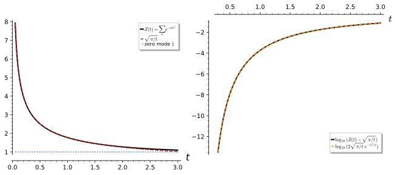
figures/heat_trace_circle.sage.
Interactive figure (drag to rotate or zoom); the static version is above.
Definition 38 (Heat kernel) Let -\Delta on a compact manifold M have the orthonormal eigenbasis \varphi_k with eigenvalues \lambda_k (Theorem 18). The heat operator e^{t\Delta} = \sum_ke^{-t\lambda_k}|\varphi_k\rangle \langle\varphi_k|, t > 0, solves the heat equation: u(t) = e^{t\Delta}f satisfies \partial_tu = \Delta u, u(0) = f (Definition 21 of Differential equations). It is the integral operator with the heat kernel K_t(x, y) = \sum_ke^{-t\lambda_k}\varphi_k(x)\overline{\varphi_k(y)}, a smooth function for t > 0 with K_t(x, \cdot) \to \delta_x as t \to 0 and the semigroup property \int_MK_t(x, z)K_s(z, y)\,dz = K_{t + s}(x, y). The heat trace is Z(t) = \operatorname{tr}e^{t\Delta} = \sum_ke^{-t\lambda_k} = \int_MK_t(x, x)\,dx, finite for every t > 0 by Weyl’s law, so e^{t\Delta} is trace class.
Veriphy. Pending.
Lean. Pending.
Sage. Pending.
On the real line, which is not compact, the heat kernel is the Gaussian and the heat operator is not trace class, since the integral of the kernel along the diagonal diverges. The first example records this, the continuous spectrum showing up as an infinite trace.
Example 193 (The line: the Gaussian kernel) On L^2(\mathbb{R}), K_t(x, y) = (4\pi t)^{-1/2}e^{-(x - y)^2/4t} solves \partial_tK = \partial_x^2K with K_t \to \delta (Partial differential equations), and e^{t\partial_x^2} is multiplication by e^{-tk^2} in the Fourier picture, with continuous spectrum (0, 1]. It is not trace class: K_t(x, x) = (4\pi t)^{-1/2} is constant and \int_{\mathbb{R}} K_t(x, x)\,dx = \infty. Compactness of the space is what makes the heat trace finite.
On the circle the heat kernel is a Fourier series, and the Poisson summation formula rewrites it as a sum over images of the Gaussian kernel of the line. The second example gives both forms, which produce the two regimes of the figure.
Example 194 (The circle: Fourier and image sums) On S^1 with \varphi_n = e^{in\theta}/\sqrt{2\pi}, K_t(\theta, \theta') = \frac{1}{2\pi}\sum_{n \in \mathbb{Z}}e^{-tn^2}e^{in(\theta - \theta')}, and by the Poisson summation formula (Exercise 205) K_t(\theta, \theta') = \sum_{k \in \mathbb{Z}}(4\pi t)^{-1/2}e^{-(\theta - \theta' - 2\pi k)^2/4t}: the kernel of the line summed over the images \theta' + 2\pi k. The heat trace is Z(t) = \sum_ne^{-tn^2} = \sqrt{\pi/t}\sum_k e^{-\pi^2k^2/t} (Proposition 6): the first form shows Z(t) \to 1 as t \to \infty, the second Z(t) \sim \sqrt{\pi/t} as t \to 0 with exponentially small corrections.
On the sphere the addition theorem for spherical harmonics collapses the sum over m to a Legendre polynomial of the angle between the two points, and the heat trace is a sum over l alone. The third example writes both down.
Example 195 (The sphere) On the unit S^2, \sum_{m = -l}^lY_{lm}(x)\overline{Y_{lm}(y)} = \frac{2l + 1}{4\pi}P_l(\cos\gamma) with \gamma the angle between x and y (the addition theorem, Harmonic analysis on the sphere and on compact groups), so K_t(x, y) = \sum_{l \geq 0} \frac{2l + 1}{4\pi}e^{-tl(l + 1)}P_l(\cos\gamma) and Z(t) = \sum_{l \geq 0}(2l + 1)e^{-tl(l + 1)}. There is no closed form, but Z(t) = \frac1t + \frac13 + \frac{t}{15} + O(t^2) as t \to 0 (Example 198, Exercise 206), and Z(t) \to 1 as t \to \infty.
The Fourier form of the circle kernel can be checked against the heat equation and the semigroup property mode by mode, and the Poisson summation identity can be tested to high precision numerically. The first exercise does all three in Sage.
Exercise 203 (The circle kernel in Sage) With Sage, check that each term e^{-tn^2}e^{in(\theta - \theta')} of the circle kernel solves \partial_tK = \partial_\theta^2K and that the modes satisfy the semigroup property under the L^2 inner product; then evaluate \sum_{|n| \leq 60}e^{-tn^2} and \sqrt{\pi/t}\sum_{|k| \leq 10}e^{-\pi^2k^2/t} for t = 1/10, 1/2, 1 to twenty digits.
The semigroup property is \sum_n e^{-tn^2}e^{-sn^2}|\varphi_n\rangle\langle\varphi_n| = \sum_ne^{-(t + s)n^2} | \varphi_n\rangle\langle\varphi_n|, which holds because the modes are orthonormal; the two Poisson sums agree to all twenty digits:
t, s, th, thp, u = var("t s theta thetap u", domain="real")
ok = all(bool((diff(exp(-t * n ** 2) * exp(I * n * (th - thp)), t) - diff(exp(-t * n ** 2) * exp(I * n * (th - thp)), th, 2)).simplify_full() == 0) for n in range(-3, 4))
print("each mode solves d_t K = d_theta^2 K:", ok)
K = lambda tt, a, b, N: sum(exp(-tt * n ** 2) * exp(I * n * (a - b)) for n in range(-N, N + 1)) / (2 * pi)
lhs = integrate((K(t, th, u, 2) * K(s, u, thp, 2)).expand(), u, 0, 2 * pi)
print("semigroup on the modes |n| <= 2: int K_t K_s = K_{t+s}:", bool((lhs - K(t + s, th, thp, 2)).simplify_full() == 0))
RF = RealField(100)
for tt in [QQ(1) / 10, QQ(1) / 2, 1]:
a = sum(exp(-RF(tt) * n ** 2) for n in range(-60, 61)); b = sqrt(RF(pi) / tt) * sum(exp(-RF(pi) ** 2 * k ** 2 / tt) for k in range(-10, 11))
print("t =", tt, ":", a.n(digits=20), b.n(digits=20))Output:
each mode solves d_t K = d_theta^2 K: True
semigroup on the modes |n| <= 2: int K_t K_s = K_{t+s}: True
t = 1/10 : 5.6049912163979286993 5.6049912163979286993
t = 1/2 : 2.5066282880429055448 2.5066282880429055448
t = 1 : 1.7726372048266521530 1.7726372048266521530The semigroup property and the positivity of the kernel on the diagonal follow from the spectral expansion, and the identity Z(t) = \int K_t(x, x) is the trace formula for kernels. The second exercise asks for these derivations.
Exercise 204 (Properties of the heat operator) Show that e^{t\Delta}e^{s\Delta} = e^{(t + s)\Delta}, that \|e^{t\Delta}\| = 1 with e^{t\Delta}\varphi_0 = \varphi_0 for the constant mode, that K_t(x, x) = \sum_ke^{-t\lambda_k}|\varphi_k(x)|^2 \geq 0, and that \int_MK_t(x, x)\,dx = Z(t).
e^{t\Delta}e^{s\Delta} = \sum_{j, k}e^{-t\lambda_j - s\lambda_k}|\varphi_j\rangle\langle\varphi_j|\varphi_k\rangle \langle\varphi_k| = \sum_ke^{-(t + s)\lambda_k}|\varphi_k\rangle\langle\varphi_k| by orthonormality. The eigenvalues e^{-t\lambda_k} lie in (0, 1] with e^{-t\lambda_0} = 1, so the norm is 1 and the constant mode is fixed. Setting y = x in the kernel gives the non-negative sum. Integrating, \int|\varphi_k|^2 = 1 gives \int K_t(x, x)\,dx = \sum_ke^{-t\lambda_k} = Z(t), and the exchange of sum and integral is justified by the positivity of the terms.
The Poisson summation formula is the Fourier series of a periodised function evaluated at zero, and for the Gaussian it is the identity between the two forms of the circle kernel. The last exercise asks for the derivation and for the resulting functional equation of the theta function.
Exercise 205 (Poisson summation) For a rapidly decaying f on \mathbb{R} with Fourier transform \hat f(k) = \int f(x)e^{-ikx}dx, let F(x) = \sum_nf(x + 2\pi n). Compute the Fourier coefficients of the 2\pi-periodic F, evaluate the series at x = 0, and deduce \sum_nf(2\pi n) = \frac{1}{2\pi}\sum_k\hat f(k); apply it to f(x) = e^{-tx^2/4\pi^2} to obtain \theta(t) = \sum_ne^{-tn^2} = \sqrt{\pi/t}\,\theta(\pi^2/t).
c_k = \frac{1}{2\pi}\int_0^{2\pi}F(x)e^{-ikx}dx = \frac{1}{2\pi}\sum_n\int_{2\pi n}^{2\pi(n + 1)}f(y)e^{-iky}dy = \frac{1}{2\pi}\hat f(k), using e^{-ik\cdot 2\pi n} = 1. Then F(0) = \sum_kc_k, that is, \sum_nf(2\pi n) = \frac{1}{2\pi}\sum_k\hat f(k) (convergence of the Fourier series at 0 holds for smooth F, Fourier series). For f(x) = e^{-tx^2/4\pi^2}, f(2\pi n) = e^{-tn^2} and \hat f(k) = \sqrt{4\pi^3/t}\,e^{-\pi^2k^2/t} (Gaussian transform, The Fourier transform), giving \theta(t) = \sqrt{\pi/t}\sum_ke^{-\pi^2k^2/t} = \sqrt{\pi/t}\, \theta(\pi^2/t).
Small-time asymptotics
As t \to 0 the heat kernel concentrates near the diagonal and only sees the local geometry, so the heat trace has an expansion in powers of t whose coefficients are integrals of curvature invariants. The theorem below, quoted, states the first two coefficients; they determine the dimension, the volume and the total scalar curvature of the space.
Theorem 22 (Heat trace asymptotics) On a compact Riemannian manifold M of dimension d without boundary, the heat trace of -\Delta has the asymptotic expansion Z(t) = \operatorname{tr}e^{t\Delta} \sim (4\pi t)^{-d/2}\left(a_0 + a_1t + a_2t^2 + \dots\right) as t \to 0^+, with a_0 = \operatorname{Vol}(M), a_1 = \frac16\int_MR\,d\mathrm{vol} for the scalar curvature R (Definition 70 of Differential geometry), and every a_k the integral of a polynomial in the curvature and its derivatives (the Minakshisundaram-Pleijel expansion, quoted). For flat M all a_k with k \geq 1 vanish and the corrections are exponentially small. Weyl’s law of Theorem 18 follows from the leading term by a Tauberian argument (Exercise 207).
Veriphy. Pending.
Lean. Pending.
Sage. Pending.
On the circle the theorem gives \sqrt{\pi/t} for the unit radius, and the Poisson formula shows that this is exact up to exponentially small terms. The first example checks the constant and reads the figure.
Example 196 (The circle) With d = 1 and \operatorname{Vol}(S^1_R) = 2\pi R: Z(t) \sim (4\pi t)^{-1/2}\cdot 2\pi R = R\sqrt{\pi/t}, and the circle being flat, all a_k = 0 for k \geq 1. Indeed for R = 1 Poisson summation gives Z(t) = \sqrt{\pi/t}(1 + 2e^{-\pi^2/t} + 2e^{-4\pi^2/t} + \dots) exactly, so Z(t) - \sqrt{\pi/t} \approx 2\sqrt{\pi/t}e^{-\pi^2/t}, which is 10^{-42} at t = 0.1 and still only 0.00018 at t = 1 (Figure 21, right).
On a flat torus the leading term is the area over 4\pi t, again exact up to exponentially small terms, and the heat trace factorises into two circle traces. The second example records this and compares with Weyl’s law.
Example 197 (The torus) For T^2 with radii R_1, R_2, Z(t) = \sum_{m, n}e^{-t(m^2/R_1^2 + n^2/R_2^2)} = \theta(t/R_1^2)\theta(t/R_2^2) \sim \frac{\pi R_1R_2}{t} = \frac{\operatorname{Vol}(T^2)}{4\pi t} with \operatorname{Vol} = 4\pi^2R_1R_2 (Exercise 215). The coefficient of 1/t is \operatorname{Vol}/4\pi, the slope of Weyl’s law N(\lambda) \sim \operatorname{Vol}\,\lambda/4\pi of Example 165, and the flatness makes all further power corrections vanish.
On the unit sphere the curvature contributes a constant term, and the expansion begins 1/t + 1/3 + t/15; the constant 1/3 is the Gauss-Bonnet integral \int R/6 = 4\pi\chi/6 divided by 4\pi. The third example works out the coefficients and their geometric meaning.
Example 198 (The sphere and Gauss-Bonnet) For the unit S^2, d = 2, \operatorname{Vol} = 4\pi and R = 2 (Proposition 26 of Differential geometry), so a_0 = 4\pi, a_1 = \frac16\cdot 2\cdot 4\pi = \frac{4\pi}{3} and Z(t) \sim \frac{1}{4\pi t}(4\pi + \tfrac{4\pi}{3}t + \dots) = \frac1t + \frac13 + \dots; the next coefficient gives t/15 (Exercise 206). For any closed surface a_1 = \frac16\int R = \frac13\int K = \frac{2\pi\chi}{3} by Gauss-Bonnet (Proposition 28 of Differential geometry), so the constant term of Z(t) is \chi(M)/6: 1/3 for the sphere and 0 for the torus, as found.
The sphere expansion has no closed form but is tested numerically by summing the series for small t, and the remainder after three terms should be of order t^2. The first exercise asks Sage for this test.
Exercise 206 (The sphere heat trace numerically) Compute Z(t) = \sum_{l \leq 300}(2l + 1)e^{-tl(l + 1)} for t = 0.2, 0.1, 0.05, 0.025 with Sage, subtract \frac1t + \frac13 + \frac{t}{15}, and check that the remainder is \approx \frac{4t^2}{315}, the next term of the expansion.
The remainders divided by t^2 approach 4/315 \approx 0.0127 as t decreases, confirming the expansion Z(t) = \frac1t + \frac13 + \frac{t}{15} + \frac{4t^2}{315} + \dots:
RF = RealField(100)
for t in [QQ(1) / 5, QQ(1) / 10, QQ(1) / 20, QQ(1) / 40]:
Z = sum((2 * l + 1) * exp(-RF(t) * l * (l + 1)) for l in range(301))
r = Z - (1 / RF(t) + RF(1) / 3 + RF(t) / 15)
print("t = %s: Z = %.10f remainder/t^2 = %.6f" % (t, Z, r / RF(t) ** 2))
print("4/315 =", (4 / 315).n(digits=6))Output:
t = 1/5: Z = 5.3472020537 remainder/t^2 = 0.013385
t = 1/10: Z = 10.3401302802 remainder/t^2 = 0.013028
t = 1/20: Z = 20.3366988169 remainder/t^2 = 0.012860
t = 1/40: Z = 40.3350079866 remainder/t^2 = 0.012779
4/315 = 0.0126984The leading term of the heat trace determines the growth of the eigenvalue counting function: this is a Tauberian theorem, and the heuristic behind it is a Laplace transform. The second exercise asks for the heuristic and its verification on the circle and the sphere.
Exercise 207 (From the heat trace to Weyl’s law) Writing Z(t) = \int_0^\infty e^{-t\lambda}\,dN(\lambda) with N the eigenvalue counting function, show that N(\lambda) = C\lambda^{d/2} gives Z(t) = C\,\Gamma(d/2 + 1)\,t^{-d/2}, and match with Z(t) \sim \operatorname{Vol}(M)(4\pi t)^{-d/2} to recover the constant of Weyl’s law. Check on S^1 (N \sim 2\sqrt\lambda) and on S^2 (N \sim \lambda).
\int_0^\infty e^{-t\lambda}\,d(C\lambda^{d/2}) = C\tfrac d2\int_0^\infty\lambda^{d/2 - 1}e^{-t\lambda}d\lambda = C\tfrac d2\Gamma(d/2)t^{-d/2} = C\Gamma(d/2 + 1)t^{-d/2}. Matching gives C = \operatorname{Vol}/((4\pi)^{d/2} \Gamma(d/2 + 1)), the constant of Theorem 18 (Karamata’s Tauberian theorem makes the converse rigorous). Circle: C = 2, d = 1: Z \sim 2\Gamma(3/2)t^{-1/2} = \sqrt{\pi/t}. Sphere: C = 1, d = 2: Z \sim \Gamma(2)/t = 1/t. Both agree with the expansions above.
The heat trace of a space determines its dimension, volume and total curvature, which is the start of the question whether the spectrum determines the geometry. The last exercise asks what the first terms reveal and gives a case where they do not decide.
Exercise 208 (Hearing dimension, volume and curvature) Explain how d, \operatorname{Vol}(M) and \int_MR are read off from Z(t) as t \to 0, and compute the first two terms for the sphere of radius R and for the flat torus of the same area 4\pi R^2; which spectral quantity distinguishes them?
d is twice the exponent of the leading power t^{-d/2}, \operatorname{Vol} is (4\pi)^{d/2} times its coefficient, and \int R = 6a_1 is read from the next term. For S^2_R: \lambda_l = l(l + 1)/R^2 and Z(t) = \sum_l(2l + 1)e^{-tl(l + 1)/R^2} with Z(t) \sim \frac{R^2}{t} + \frac13 + \dots (scalar curvature 2/R^2 integrated over 4\pi R^2 gives 8\pi, a_1 = 4\pi/3). For the torus of area 4\pi R^2: Z(t) \sim \frac{R^2}{t} + 0 + \dots. The leading terms coincide, as they must for equal volumes, and the constant term \chi/6 (1/3 versus 0) distinguishes them: the heat trace hears the Euler characteristic of a surface. Isospectral but non-isometric manifolds exist in higher dimensions, so the full spectrum does not determine the geometry.
Zeta regularisation
Sums over the spectrum such as \sum_k\lambda_k or \sum_k\log\lambda_k diverge, but the function \sum_k \lambda_k^{-s} converges for large s and continues analytically to the values of s at which the divergent sums would sit. The definition below assigns values to such sums in this way and connects the procedure to the heat trace.
Definition 39 (Zeta regularisation) For an operator with discrete spectrum 0 < \lambda_1 \leq \lambda_2 \leq \dots (zero modes excluded) satisfying Weyl’s law in dimension d, the spectral zeta function \zeta_A(s) = \sum_k\lambda_k^{-s} converges for \operatorname{Re}s > d/2 and extends to a meromorphic function of s, regular at s = 0 and at the negative integers, through the Mellin transform \zeta_A(s) = \frac{1}{\Gamma(s)}\int_0^\infty t^{s - 1}(Z(t) - \dim\ker A)\,dt and the heat trace asymptotics (Exercise 210). The zeta-regularised sum of the eigenvalues is \sum_k\lambda_k := \zeta_A(-1), and the zeta-regularised determinant is \det{}_\zeta A := e^{-\zeta_A'(0)}, formalising \sum\log\lambda_k = -\zeta_A'(0). For \lambda_k = k the spectral zeta function is Riemann’s \zeta(s) (Definition 20 of Complex analysis), and \zeta(-1) = -\tfrac{1}{12}, \zeta(0) = -\tfrac12, \zeta(-3) = \tfrac{1}{120}, \zeta'(0) = -\tfrac12\log 2\pi.
Veriphy. Pending.
Lean. Pending.
Sage. Pending.
The regularised value of 1 + 2 + 3 + \dots is -1/12, and a cutoff shows what this means: the divergence is a pure power of the cutoff and the finite remainder is -1/12. The first example makes this comparison, which is the form in which the value is used in physics.
Example 199 (1 + 2 + 3 + \dots = -1/12) \zeta(-1) = -1/12 is the analytic continuation of \sum n^{-s} to s = -1 (Sage returns it exactly from Bernoulli numbers, \zeta(-n) = -B_{n + 1}/(n + 1), Exercise 217). With an exponential cutoff, \sum_{n \geq 1}ne^{-\varepsilon n} = \frac{e^\varepsilon}{(e^\varepsilon - 1)^2} = \frac{1}{\varepsilon^2} - \frac{1}{12} + \frac{\varepsilon^2}{240} + \dots (Proposition 6): the divergent part 1/\varepsilon^2 depends on the cutoff and the finite part is -1/12. Likewise \sum_{n \geq 1}e^{-\varepsilon n} = \frac1\varepsilon - \frac12 + \dots has finite part \zeta(0) = -\tfrac12 (Exercise 211).
The Dirichlet Laplacian on an interval has spectral zeta function \zeta(2s), and its regularised determinant is a pure number. The second example computes it, the simplest determinant of a differential operator.
Example 200 (The determinant of -d^2/dx^2 on (0, \pi)) With Dirichlet conditions the eigenvalues are n^2 (Example 158), so \zeta_A(s) = \sum n^{-2s} = \zeta(2s), \zeta_A'(0) = 2\zeta'(0) = -\log 2\pi, and \det{}_\zeta(-d^2/dx^2) = e^{\log 2\pi} = 2\pi (Exercise 209). On an interval of length L the eigenvalues are (n\pi/L)^2, \zeta_A(s) = (L/\pi)^{2s} \zeta(2s), and \det{}_\zeta = e^{-2\log(L/\pi)\zeta(0) - 2\zeta'(0)} = (L/\pi)\cdot 2\pi = 2L: the determinant scales with the length, as \zeta_A(0) = \zeta(0) = -\tfrac12 dictates.
On the circle the zero mode is removed and each non-zero eigenvalue is doubled; the regularised sums of even powers vanish and the determinant is 4\pi^2. The third example records these values and the regularised sum of |n|, which is the Casimir energy of the circle.
Example 201 (The circle) For -\Delta on the unit circle with the zero mode removed, \zeta_\Delta(s) = \sum_{n \neq 0}(n^2)^{-s} = 2\zeta(2s). Then \det{}_\zeta(-\Delta') = e^{-4\zeta'(0)} = (2\pi)^2 = 4\pi^2; the regularised sum of the eigenvalues is 2\zeta(-2) = 0, as \zeta vanishes at the negative even integers; and for the frequencies \omega_n = |n| = \sqrt{\lambda_n}, \sum_{n \neq 0}|n| = 2\zeta(-1) = -\tfrac16, the value that enters the Casimir energy of a periodic field (Exercise 241).
Sage knows the Riemann zeta function exactly at the integers and numerically elsewhere, and it expands cutoff sums symbolically. The first exercise asks for the values used above and for the Dirichlet determinant.
Exercise 209 (Zeta values in Sage) With Sage, evaluate \zeta(-1), \zeta(0), \zeta(-3) exactly and \zeta'(0) numerically against -\tfrac12\log 2\pi, expand \sum_{n \geq 1}e^{-\varepsilon n} and \sum_{n \geq 1}n^3e^{-\varepsilon n} in \varepsilon to identify their finite parts with \zeta(0) and \zeta(-3), and compute \det{}_\zeta(-d^2/dx^2) = e^{-2\zeta'(0)} on (0, \pi).
The finite parts are -\tfrac12 and \tfrac{1}{120}, matching \zeta(0) and \zeta(-3), and e^{-2\zeta'(0)} = 2\pi to all digits computed:
print("zeta(-1), zeta(0), zeta(-3) =", zeta(-1), zeta(0), zeta(-3))
s = var("s")
zp = diff(zeta(s), s).subs(s=0).n(digits=30)
print("zeta'(0) =", zp, "; -log(2 pi)/2 =", (-log(2 * pi) / 2).n(digits=30))
e = var("epsilon", domain="positive"); n = var("n", domain="integer")
print("sum e^{-eps n} =", taylor(sum(exp(-e * n), n, 1, oo), e, 0, 2))
print("sum n^3 e^{-eps n} =", taylor(sum(n ** 3 * exp(-e * n), n, 1, oo), e, 0, 2))
print("det_zeta = e^{-2 zeta'(0)} =", exp(-2 * diff(zeta(s), s).subs(s=0)).n(digits=20), "; 2 pi =", (2 * pi).n(digits=20))Output:
zeta(-1), zeta(0), zeta(-3) = -1/12 -1/2 1/120
zeta'(0) = -0.918938533204672741780329736406 ; -log(2 pi)/2 = -0.918938533204672741780329736406
sum e^{-eps n} = 1/12*epsilon + 1/epsilon - 1/2
sum n^3 e^{-eps n} = -1/504*epsilon^2 + 6/epsilon^4 + 1/120
det_zeta = e^{-2 zeta'(0)} = 6.2831853071795864769 ; 2 pi = 6.2831853071795864769The Mellin transform ties the spectral zeta function to the heat trace, and the heat asymptotics then locate the poles of \zeta_A and give \zeta_A(0). The second exercise asks for the derivation and for the check on the circle.
Exercise 210 (Zeta function from the heat trace) Using \lambda^{-s} = \frac{1}{\Gamma(s)}\int_0^\infty t^{s - 1}e^{-t\lambda}dt, derive the Mellin formula for \zeta_A(s). Inserting Z(t) - \dim\ker A \sim (4\pi t)^{-d/2}\sum_ka_kt^k for small t, show that \zeta_A has at most simple poles at s = d/2 - k and that \zeta_A(0) = \frac{a_{d/2}}{(4\pi)^{d/2}} - \dim\ker A for even d, \zeta_A(0) = -\dim\ker A for odd d; verify \zeta_\Delta(0) = -1 on the circle.
Summing the Gamma-function identity over the non-zero eigenvalues gives \zeta_A(s) = \frac{1}{\Gamma(s)} \int_0^\infty t^{s - 1}\sum_ke^{-t\lambda_k}dt = \frac{1}{\Gamma(s)}\int_0^\infty t^{s - 1}(Z(t) - \dim\ker A)dt, convergent for \operatorname{Re}s > d/2. Splitting the integral at t = 1, the part over (1, \infty) is entire; over (0, 1) each term a_kt^{k - d/2} integrates to \frac{a_k}{(4\pi)^{d/2}(s + k - d/2)}, a simple pole at s = d/2 - k, while the subtracted -\dim\ker A gives -\dim\ker A/s. Dividing by \Gamma(s), which has a simple zero at s = 0 with 1/\Gamma(s) \sim s, the value at s = 0 is the residue of the pole at s = 0: the term k = d/2 (present only for even d) contributes a_{d/2}/(4\pi)^{d/2} and the kernel term -\dim\ker A. On the circle, d = 1, \dim\ker = 1: \zeta_\Delta(0) = -1 = 2\zeta(0), consistent with \zeta_\Delta(s) = 2\zeta(2s).
The finite part of a cutoff sum does not depend on the shape of the cutoff function, which is what makes the regularised value meaningful. The last exercise proves this with the Euler-Maclaurin formula for the class of cutoffs g(\varepsilon n).
Exercise 211 (Universality of the finite part) Let g be smooth with g(0) = 1 and rapidly decaying. Using the Euler-Maclaurin formula \sum_{n \geq 1}f(n) = \int_0^\infty f\,dx - \tfrac12f(0) - \tfrac{1}{12}f'(0) + \tfrac{1}{720}f'''(0) - \dots with f(x) = x\,g(\varepsilon x), show that \sum_{n \geq 1}n\,g(\varepsilon n) = \frac{C_g}{\varepsilon^2} - \frac{1}{12} + O(\varepsilon) with C_g = \int_0^\infty xg(x)dx, so the finite part is -1/12 for every such g; identify C_g for g = e^{-x} and g = e^{-x^2}.
\int_0^\infty xg(\varepsilon x)dx = \varepsilon^{-2}\int_0^\infty yg(y)dy = C_g/\varepsilon^2; f(0) = 0; f'(x) = g(\varepsilon x) + \varepsilon xg'(\varepsilon x) gives f'(0) = g(0) = 1; and f'''(0) = 3\varepsilon^2g''(0) = O(\varepsilon^2), with all higher derivatives at 0 carrying higher powers of \varepsilon. So the sum is C_g/\varepsilon^2 - 1/12 + O(\varepsilon^2), and the finite part -\tfrac{1}{12} = \zeta(-1) is independent of g. C_g = 1 for e^{-x} (matching Example 199) and C_g = \tfrac12 for e^{-x^2}. The same argument applied to f(x) = g(\varepsilon x) gives the finite part -\tfrac12 f(0) = -\tfrac12 for \sum g(\varepsilon n), that is, \zeta(0).
The Casimir energy in outline
A quantised field confined to a finite region has a zero-point energy \tfrac12\sum\omega_k over its modes, which diverges; zeta regularisation extracts a finite part that depends on the size of the region and produces a measurable force. The proposition below states the result for an interval and quotes it for parallel plates, as an outline of how the regularised sums of this section enter physics.
Proposition 5 (Casimir energy) For a massless scalar field on an interval of length L with Dirichlet conditions at both ends, the modes have frequencies \omega_n = n\pi/L (Example 158, \omega_n = \sqrt{\lambda_n} as in Example 164), and the zero-point energy E = \tfrac12\sum_n\omega_n has the zeta-regularised value E(L) = \frac{\pi}{2L}\zeta(-1) = -\frac{\pi}{24L} (units \hbar = c = 1), giving the attractive Casimir force F = -\frac{dE}{dL} = -\frac{\pi}{24L^2} between the ends. With a cutoff, E_\varepsilon = \frac{L}{2\pi \varepsilon^2} - \frac{\pi}{24L} + O(\varepsilon^2): the divergent part is proportional to L, a bulk energy density independent of the boundaries, and only the finite part gives an L-dependent force. For the electromagnetic field between parallel conducting plates at separation a the same method gives E/A = - \frac{\pi^2\hbar c}{720a^3} and F/A = -\frac{\pi^2\hbar c}{240a^4} (Casimir, quoted; Exercise 214). The statement is an outline: the field quantisation that produces \tfrac12\sum\omega_n is the subject of Quantum field theory.
Veriphy. Pending.
Lean. Pending.
Sage. Pending.
The cutoff computation makes the structure of the result visible: the divergence is a bulk term, and the finite part is the zeta value. The first example carries it out with the exponential cutoff of Example 199.
Example 202 (The cutoff computation on the interval) E_\varepsilon = \frac{\pi}{2L}\sum_{n \geq 1}ne^{-\varepsilon n\pi/L} = \frac{\pi}{2L}\left[\frac{L^2}{\pi^2 \varepsilon^2} - \frac{1}{12} + \frac{\pi^2\varepsilon^2}{240L^2} + \dots\right] = \frac{L}{2\pi\varepsilon^2} - \frac{\pi}{24L} + O(\varepsilon^2) (Exercise 212). The term L/(2\pi\varepsilon^2) is an energy per unit length times L, the same inside and outside any boundary and so without effect on forces between boundaries; the remainder -\pi/(24L) is the Casimir energy, and Exercise 211 shows that it does not depend on the cutoff function.
The sign and the magnitude of the force depend on the boundary conditions and on the dimension, and in one dimension the computation can be repeated for other conditions. The second example contrasts Dirichlet, periodic and mixed conditions, the last giving a repulsive force.
Example 203 (Dependence on the boundary conditions) Dirichlet (or Neumann) conditions give E = -\pi/(24L) and an attractive force -\pi/(24L^2). For a field on a circle of circumference L (periodic conditions), \omega_n = 2\pi|n|/L for n \in \mathbb{Z} and E = \frac{\pi}{L}\sum_{n \neq 0}|n| = \frac{2\pi}{L}\zeta(-1) = -\frac{\pi}{6L}, four times larger (Exercise 241). For mixed conditions, Dirichlet at one end and Neumann at the other, \omega_n = (n + \tfrac12)\pi/L and E = \frac{\pi}{2L}\zeta_H(-1, \tfrac12) = +\frac{\pi}{48L} with the Hurwitz zeta function \zeta_H(s, a) = \sum_{n \geq 0}(n + a)^{-s}: the force is repulsive (Exercise 213).
Between parallel plates the modes have a continuous transverse momentum and a discrete normal one, and the regularised sum over both gives Casimir’s a^{-3} law. The third example states the numbers and the size of the effect at micrometre separations.
Example 204 (Parallel plates) For the electromagnetic field (two polarisations) between plates of area A at separation a, E/A = -\frac{\pi^2 \hbar c}{720a^3} and the pressure is F/A = -\frac{\pi^2\hbar c}{240a^4}; a single scalar field with Dirichlet conditions gives half of this (Exercise 214). Numerically \pi^2\hbar c/240 = 1.3\times10^{-27}\,\mathrm{J\,m}, so at a = 1\,\mu\mathrm{m} the pressure is 1.3\times10^{-3}\,\mathrm{Pa}, measurable and measured; the a^{-4} law follows from dimensional analysis alone once \hbar c is the only scale.
The cutoff expansion of the interval energy is a Taylor series that Sage computes, and the finite part can be compared with a different cutoff. The first exercise asks for the expansion with exponential and Gaussian cutoffs.
Exercise 212 (Cutoffs in Sage) With Sage, expand E_\varepsilon = \frac{\pi}{2L}\sum_{n \geq 1}ne^{-\varepsilon n\pi/L} in \varepsilon to order \varepsilon^2 and read off the bulk term and the Casimir energy; then evaluate \frac{\pi}{2L}\sum_n ne^{-\varepsilon^2n^2} numerically for L = 1 and \varepsilon = 0.1, 0.05, subtract the bulk term \frac{\pi}{2L}\cdot\frac{1}{2\varepsilon^2}, and compare with -\pi/24.
The exponential cutoff gives \frac{L}{2\pi\varepsilon^2} - \frac{\pi}{24L} + \frac{\pi^3\varepsilon^2}{480L^3}; with the Gaussian cutoff the bulk term is \frac{\pi}{4L\varepsilon^2} (as C_g = \tfrac12) and the remainder approaches -\pi/24 = -0.1309 with an error of order \varepsilon^2 (1.3\times10^{-4} at \varepsilon = 0.1, 3\times10^{-5} at \varepsilon = 0.05):
e, L = var("epsilon L", domain="positive"); n = var("n", domain="integer")
E = (pi / (2 * L)) * sum(n * exp(-e * n * pi / L), n, 1, oo)
print("E_eps =", taylor(E, e, 0, 2).simplify_full().expand())
RF = RealField(100)
for eps in [RF(1) / 10, RF(1) / 20]:
Eg = RF(pi) / 2 * sum(k * exp(-eps ** 2 * k ** 2) for k in range(1, 2000))
print("Gaussian cutoff eps = %s: E - pi/(4 eps^2) = %.12f ; -pi/24 = %.12f" % (eps.n(digits=3), Eg - RF(pi) / (4 * eps ** 2), -RF(pi) / 24))Output:
E_eps = 1/480*pi^3*epsilon^2/L^3 - 1/24*pi/L + 1/2*L/(pi*epsilon^2)
Gaussian cutoff eps = 0.100: E - pi/(4 eps^2) = -0.131030906355 ; -pi/24 = -0.130899693900
Gaussian cutoff eps = 0.0500: E - pi/(4 eps^2) = -0.130932438319 ; -pi/24 = -0.130899693900Mixed boundary conditions shift the spectrum by a half-integer, and the Hurwitz zeta function evaluates the regularised sum; Sage has it built in. The second exercise computes the repulsive Casimir energy and checks the Hurwitz value against Bernoulli polynomials.
Exercise 213 (Mixed conditions and the Hurwitz zeta function) With Sage, evaluate \zeta_H(-1, \tfrac12) and compare with -B_2(\tfrac12)/2 for the Bernoulli polynomial B_2(x) = x^2 - x + \tfrac16; deduce E = \frac{\pi}{2L}\sum_{n \geq 0}(n + \tfrac12) = \frac{\pi}{48L} for the Dirichlet-Neumann interval, and check the identity \sum_{n \geq 0}(n + \tfrac12)^{-s} = (2^s - 1)\zeta(s) at s = -1.
\zeta_H(-1, \tfrac12) = -B_2(\tfrac12)/2 = -(\tfrac14 - \tfrac12 + \tfrac16)/2 = \tfrac{1}{24}, so E = \frac{\pi}{48L} > 0 and F = -dE/dL = \frac{\pi}{48L^2} is repulsive; the identity gives (2^{-1} - 1)\zeta(-1) = -\tfrac12\cdot(-\tfrac{1}{12}) = \tfrac{1}{24} as well:
zh = hurwitz_zeta(-1, QQ(1) / 2)
B2 = bernoulli_polynomial(QQ(1) / 2, 2)
print("zeta_H(-1, 1/2) =", zh, "; -B_2(1/2)/2 =", -B2 / 2, "; (2^-1 - 1) zeta(-1) =", (QQ(1) / 2 - 1) * zeta(-1))
L = var("L", domain="positive")
E = pi / (2 * L) * zh
print("E =", E, "; F = -dE/dL =", -diff(E, L))Output:
zeta_H(-1, 1/2) = 1/24 ; -B_2(1/2)/2 = 1/24 ; (2^-1 - 1) zeta(-1) = 1/24
E = 1/48*pi/L ; F = -dE/dL = 1/48*pi/L^2The parallel-plate result combines a continuous integral over transverse momenta with a discrete sum, and zeta regularisation of both gives the a^{-3} law with the value \zeta(-3) = 1/120. The last exercise asks for this derivation in outline.
Exercise 214 (Casimir’s a^{-3} law) For a scalar field with Dirichlet conditions on two plates at separation a, the modes are e^{i\mathbf{k}\cdot \mathbf{x}_\perp}\sin(n\pi z/a) with \omega = \sqrt{k^2 + (n\pi/a)^2}. Using the regularised integral \int\frac{d^2k}{(2\pi)^2}(k^2 + m^2)^{-s} = \frac{m^{2 - 2s}}{4\pi(s - 1)} at s = -\tfrac12, show that \frac{E}{A} = \frac12\sum_n\int\frac{d^2k}{(2\pi)^2}\omega = -\frac{\pi^2}{12a^3}\sum_nn^3 = -\frac{\pi^2}{1440a^3}, and that two polarisations give Casimir’s -\pi^2/(720a^3).
At s = -\tfrac12 the regularised integral is \frac{m^3}{4\pi(-3/2)} = -\frac{m^3}{6\pi} with m = n\pi/a, so \frac{E}{A} = \frac12\sum_n\left(-\frac{n^3\pi^3}{6\pi a^3}\right) = -\frac{\pi^2}{12a^3}\sum_{n \geq 1}n^3 = - \frac{\pi^2}{12a^3}\zeta(-3) = -\frac{\pi^2}{12a^3}\cdot\frac{1}{120} = -\frac{\pi^2}{1440a^3}. The electromagnetic field has two polarisations, each contributing this amount, giving -\pi^2/(720a^3) and the pressure -\pi^2/(240a^4); restoring units multiplies by \hbar c. The analytic continuation of the k-integral from \operatorname{Re}s > 1 to s = -\tfrac12 is the same mechanism as \zeta(-3), applied to the continuous part of the spectrum.
Worked computations
The Poisson summation formula for the circle heat trace, the leading asymptotics on the circle and the sphere, the zeta values, the cutoff expansion and the trace and determinant identities of the section can all be evaluated explicitly. The proposition collects them.
Proposition 6 (Heat traces and zeta values) The circle heat trace Z(t) = \sum_ne^{-tn^2} equals \sqrt{\pi/t}\sum_ke^{-\pi^2k^2/t} to 10^{-18} at t = \tfrac{1}{10}, \tfrac12, 1, and Z(t) - \sqrt{\pi/t} is within 1\% of 2\sqrt{\pi/t}e^{-\pi^2/t} at t = 0.2, 0.4, \dots, 1; the sphere heat trace \sum_l(2l + 1)e^{-tl(l + 1)} differs from \frac1t + \frac13 + \frac{t}{15} by less than 0.02t^2 for t \leq 0.2; \zeta(-1) = -\tfrac{1}{12}, \zeta(0) = -\tfrac12, \zeta(-3) = \tfrac{1}{120} exactly and \zeta'(0) = -\tfrac12\log 2\pi to 25 digits; \sum_{n \geq 1}ne^{-\varepsilon n} = \varepsilon^{-2} - \tfrac{1}{12} + \tfrac{\varepsilon^2}{240} + O(\varepsilon^4); \operatorname{tr}(AB) = \operatorname{tr}(BA) and \det e^A = e^{\operatorname{tr}A} for an explicit 3 \times 3 matrix; and \operatorname{tr}G = \sum 1/(n\pi)^2 = \int_0^1(x - x^2)dx = \tfrac16 with \sin\sqrt z/\sqrt z = 1 - z/6 + \dots.
Veriphy. Pending.
Lean. Pending.
Sage. Exact computation (figures/heat_trace_circle.sage, exact zeta values and symbolic series, with the Poisson identity tested at high precision).
The two panels of the figure show the two regimes of the circle heat trace: the zero mode dominates for large t and the Weyl term for small t, with an exponentially small crossover. The first example reads the numbers.
Example 205 (Reading the figure) At t = 3, Z(t) = 1 + 2e^{-3} + \dots = 1.0996, essentially the zero mode; at t = 0.1, Z(t) = 5.6050 = \sqrt{10\pi} to twelve digits, the Weyl term alone; the Weyl term \sqrt{\pi/t} falls below the large-t limit 1 at t = \pi, where neither approximation is good. The right panel shows that the deviation from the Weyl term is 2\sqrt{\pi/t}e^{-\pi^2/t}, invisible on a linear scale below t = 0.5 (about 10^{-8}) and only 1.8\times10^{-4} at t = 1.
The Poisson summation formula is an exact identity, so the asymptotic statement of the theorem is, for the circle, a convergent expansion in exponentially small terms. The second example states this as the functional equation of the theta function.
Example 206 (The theta function) \theta(t) = \sum_ne^{-tn^2} satisfies \theta(t) = \sqrt{\pi/t}\,\theta(\pi^2/t) (Exercise 205), and since \theta(\pi^2/t) = 1 + 2e^{-\pi^2/t} + \dots \to 1 as t \to 0, the small-t expansion of Z(t) = \theta(t) is \sqrt{\pi/t}(1 + 2e^{-\pi^2/t} + 2e^{-4\pi^2/t} + \dots) with no power corrections at all. The same identity relates the two regimes of the torus trace \theta(t/R_1^2)\theta(t/R_2^2) (Exercise 215) and underlies the modular invariance of theta functions.
The exact zeta values at negative integers come from Bernoulli numbers, and the values at positive even integers from the same numbers with powers of \pi. The third example records the formulas that Sage uses and that the exercises check.
Example 207 (Zeta values from Bernoulli numbers) \zeta(-n) = -\frac{B_{n + 1}}{n + 1} for n \geq 1 and \zeta(2n) = \frac{(-1)^{n + 1}B_{2n}(2\pi)^{2n}}{2(2n)!}, with B_2 = \tfrac16, B_4 = -\tfrac{1}{30}, B_6 = \tfrac{1}{42}: \zeta(-1) = -\tfrac{1}{12}, \zeta(-3) = \tfrac{1}{120}, \zeta(-5) = -\tfrac{1}{252}, \zeta(2) = \tfrac{\pi^2}{6} (Example 79), \zeta(4) = \tfrac{\pi^4}{90} (Exercise 86); \zeta(0) = -\tfrac12 and \zeta(-2n) = 0 because B_{2n + 1} = 0 (Exercise 217). These are the values that appear in regularised sums, Casimir energies and the expansion of the cutoff sums.
The torus heat trace is the product of two circle traces, and both regimes are visible numerically. The first exercise computes it and its leading term for two tori of equal area.
Exercise 215 (The torus heat trace) With Sage, compute Z_{T^2}(t) = \sum_{|m|, |n| \leq 60}e^{-t(m^2/R_1^2 + n^2/R_2^2)} for (R_1, R_2) = (1, 1) and (2, \tfrac12) at t = 0.1, 0.5, 2, check Z_{T^2}(t) = \theta(t/R_1^2)\theta(t/R_2^2), and compare with the leading term \pi R_1R_2/t.
Both tori have area 4\pi^2 and leading term \pi/t, but their traces differ at finite t (the second has the small eigenvalue 1/4); the factorisation holds to machine precision:
RF = RealField(80)
theta = lambda t: sum(exp(-RF(t) * n ** 2) for n in range(-60, 61))
for R1, R2 in [(1, 1), (2, QQ(1) / 2)]:
for t in [QQ(1) / 10, QQ(1) / 2, 2]:
Z = sum(exp(-RF(t) * (m ** 2 / RF(R1) ** 2 + n ** 2 / RF(R2) ** 2)) for m in range(-60, 61) for n in range(-60, 61))
print("(R1, R2) = (%s, %s), t = %s: Z = %.8f theta theta = %.8f pi R1 R2/t = %.8f" % (R1, R2, t, Z, theta(t / R1 ** 2) * theta(t / R2 ** 2), RF(pi) * R1 * R2 / t))Output:
(R1, R2) = (1, 1), t = 1/10: Z = 31.41592654 theta theta = 31.41592654 pi R1 R2/t = 31.41592654
(R1, R2) = (1, 1), t = 1/2: Z = 6.28318537 theta theta = 6.28318537 pi R1 R2/t = 6.28318531
(R1, R2) = (1, 1), t = 2: Z = 1.61630927 theta theta = 1.61630927 pi R1 R2/t = 1.57079633
(R1, R2) = (2, 1/2), t = 1/10: Z = 31.41592654 theta theta = 31.41592654 pi R1 R2/t = 31.41592654
(R1, R2) = (2, 1/2), t = 1/2: Z = 6.37356121 theta theta = 6.37356121 pi R1 R2/t = 6.28318531
(R1, R2) = (2, 1/2), t = 2: Z = 2.50831005 theta theta = 2.50831005 pi R1 R2/t = 1.57079633The functional equation of the theta function converts large-t information into small-t information and vice versa, and it fixes the asymptotics in both directions. The second exercise asks for these consequences and for the modular reading of the identity.
Exercise 216 (Two regimes from one identity) From \theta(t) = \sqrt{\pi/t}\,\theta(\pi^2/t) and the definition of \theta, derive \theta(t) \to 1 as t \to \infty, \theta(t) \sim \sqrt{\pi/t} as t \to 0 with the error 2\sqrt{\pi/t}e^{-\pi^2/t}(1 + O(e^{-3\pi^2/t})), and show that t^{1/4}\theta(t) is invariant under t \mapsto \pi^2/t. Why is the small-t limit “hard” from the definition but “easy” from the identity?
From the definition, \theta(t) = 1 + 2\sum_{n \geq 1}e^{-tn^2} \to 1 as t \to \infty, the terms decaying exponentially. Applying the identity, \theta(t) = \sqrt{\pi/t}(1 + 2e^{-\pi^2/t} + 2e^{-4\pi^2/t} + \dots), so \theta(t) - \sqrt{\pi/t} = 2\sqrt{\pi/t}e^{-\pi^2/t}(1 + e^{-3\pi^2/t} + \dots). Multiplying the identity by t^{1/4}: t^{1/4}\theta(t) = \pi^{1/2}t^{-1/4}\theta(\pi^2/t) = (\pi^2/t)^{1/4}\theta(\pi^2/t), invariant. For small t the series \sum e^{-tn^2} converges slowly (about 1/\sqrt t terms matter), while the dual series needs one term: the identity exchanges the two regimes, which is the content of modular invariance.
Sage’s bernoulli gives the Bernoulli numbers, and the two formulas of Example 207 can be checked against zeta for a range of integers. The last exercise does this and adds the vanishing at negative even integers.
Exercise 217 (Bernoulli numbers and zeta values) With Sage, verify \zeta(-n) = -B_{n + 1}/(n + 1) for n = 1, \dots, 9, \zeta(2n) = (-1)^{n + 1}B_{2n} (2\pi)^{2n}/(2(2n)!) for n = 1, \dots, 4, and \zeta(-2n) = 0 for n = 1, \dots, 4.
All identities hold exactly, with B_3 = B_5 = \dots = 0 producing the trivial zeros:
print("zeta(-n) = -B_{n+1}/(n+1) for n = 1..9:", all(zeta(-k) == -bernoulli(k + 1) / (k + 1) for k in srange(1, 10)), [zeta(-k) for k in srange(1, 10)])
print("zeta(2n) formula for n = 1..4:", all(bool(zeta(2 * k) == (-1) ** (k + 1) * bernoulli(2 * k) * (2 * pi) ** (2 * k) / (2 * factorial(2 * k))) for k in srange(1, 5)), [zeta(2 * k) for k in srange(1, 5)])
print("zeta(-2n) = 0 for n = 1..4:", all(zeta(-2 * k) == 0 for k in srange(1, 5)))Output:
zeta(-n) = -B_{n+1}/(n+1) for n = 1..9: True [-1/12, 0, 1/120, 0, -1/252, 0, 1/240, 0, -1/132]
zeta(2n) formula for n = 1..4: True [1/6*pi^2, 1/90*pi^4, 1/945*pi^6, 1/9450*pi^8]
zeta(-2n) = 0 for n = 1..4: TrueBanach and C*-algebras
Bounded operators can be added, multiplied and normed, and many of their properties depend only on these operations. A Banach algebra abstracts them; a C*-algebra adds the adjoint and the identity \|a^*a\| = \|a\|^2 that holds for operators on a Hilbert space. This part defines both, proves that every element of a Banach algebra has a non-empty compact spectrum whose radius is \lim\|a^n\|^{1/n}, and constructs the continuous functional calculus of self-adjoint elements, which is how functions of observables are defined in quantum mechanics. The outline follows Arcozzi (2025, sec. 6.1) and Landsman (1998, secs. 2.1–2.5 and 2.8), with numerical examples from Izaac and Wang (2018, Ch. 7).
For more on this topic, see Dereziński and Gérard (2022, Ch. 4-6) and Tornetta (2022, Ch. 1).
Banach algebras
In a Banach algebra the geometric series converges whenever the ratio has norm less than one, exactly as for numbers. The figure shows the partial sums of \sum A^k for two matrices, one of norm less than one and one whose norm is larger but whose powers still decay, and the definition below names the setting.
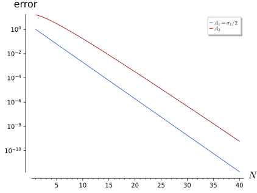
figures/fa2-neumann-series.sage.
Definition 40 (Banach algebra) A Banach algebra is a complex Banach space \mathcal{A} with an associative bilinear product satisfying \|ab\| \leq \|a\|\,\|b\|; it is unital if it has a unit 1 with \|1\| = 1 Arcozzi (2025, sec. 6.1.1); Landsman (1998, Def. 2.1.8). An element a is invertible if ab = ba = 1 for some b = a^{-1}; a left and a right inverse, when both exist, coincide. Every Banach algebra without unit embeds in the unital algebra \mathcal{A} \oplus \mathbb{C} with the norm \|a + z\| = \|a\| + |z| Arcozzi (2025, Exercise 6.1); Landsman (1998, Prop. 2.2.1).
Veriphy. Pending.
Lean. Pending.
Sage. Pending.
The bounded operators on a Banach space form the model Banach algebra, and the shift shows that one-sided inverses need not be inverses. The first example records both facts Arcozzi (2025, sec. 6.1.1).
Example 208 (Bounded operators) \mathcal{B}(X) with composition and the operator norm is a unital Banach algebra (Definition 5). In \mathcal{B}(\ell^2), S^*S = 1 but SS^* \neq 1: S has the left inverse S^* and no right inverse, since it is not onto. The n \times n matrices with the operator norm are the finite-dimensional case.
Veriphy. Pending.
Lean. Pending.
Sage. Pending.
Continuous functions with the pointwise product form a commutative Banach algebra in which invertibility is decided pointwise. The second example states it.
Example 209 (C(K)) C(K) with pointwise operations and the supremum norm is a commutative unital Banach algebra, \|fg\|_\infty \leq \|f\|_\infty\|g\|_\infty. A function f is invertible iff it has no zero on K, the inverse being 1/f, continuous on the compact set K. So x is invertible in C[1, 2] but not in C[0, 1].
Veriphy. Pending.
Lean. Pending.
Sage. Pending.
Convolution of summable sequences gives the algebra of absolutely convergent Fourier series. The third example describes this Wiener algebra Arcozzi (2025, sec. 6.1.1, item 3).
Example 210 (The Wiener algebra) \ell^1(\mathbb{Z}) with (a * b)_n = \sum_ma_mb_{n - m} is a commutative unital Banach algebra, \|a * b\|_1 \leq \|a\|_1\|b\|_1, with unit \delta^{(0)}. Under a \mapsto \hat a(\theta) = \sum_na_ne^{in\theta} it becomes the algebra of absolutely convergent Fourier series with pointwise product, \widehat{a * b} = \hat a\hat b. By Wiener’s lemma, a is invertible in \ell^1(\mathbb{Z}) iff \hat a has no zero.
Veriphy. Pending.
Lean. Pending.
Sage. Pending.
The unitisation makes every Banach algebra unital, and its norm is checked in the first exercise Arcozzi (2025, Exercise 6.1). The construction is what allows the spectrum to be defined in non-unital algebras.
Exercise 218 (Adding a unit) On \mathcal{A} \oplus \mathbb{C} with (a + z)(b + w) = ab + zb + wa + zw and \|a + z\| = \|a\| + |z|, show that the norm is submultiplicative and that \|1\| = 1.
\|(a + z)(b + w)\| \leq \|ab\| + |z|\,\|b\| + |w|\,\|a\| + |zw| \leq \|a\|\,\|b\| + |z|\,\|b\| + |w|\,\|a\| + |z|\,|w| = (\|a\| + |z|)(\|b\| + |w|), and 1 = 0 + 1 has norm 1. Completeness follows from that of \mathcal{A} and \mathbb{C}.
Veriphy. Pending.
Lean. Pending.
Sage. Pending.
Commuting elements whose product is invertible are both invertible, and the shift shows that commutation is needed. The second exercise proves this Arcozzi (2025, Thm. 6.1).
Exercise 219 (Products of commuting elements) If ab = ba and ab is invertible, show that (ab)^{-1}a is a left and a(ab)^{-1} a right inverse of b, so b is invertible. Why does S^*S = 1 not contradict this?
(ab)^{-1}ab = 1 shows that (ab)^{-1}a is a left inverse of b, and ba(ab)^{-1} = ab(ab)^{-1} = 1 that a(ab)^{-1} is a right inverse; the two coincide, so b is invertible, and similarly a. For the shift, S^* and S do not commute (SS^* \neq S^*S), so the hypothesis fails.
Veriphy. Pending.
Lean. Pending.
Sage. Pending.
Not every natural norm on matrices is submultiplicative, and the third exercise shows that the largest entry fails. It also shows how to repair it.
Exercise 220 (A norm that is not submultiplicative) Show that \|A\|_{\max} = \max_{ij}|A_{ij}| on n \times n matrices is a norm but not submultiplicative, using J = \begin{pmatrix} 1 & 1 \\ 1 & 1\end{pmatrix}, and that n\|A\|_{\max} is submultiplicative.
J^2 = 2J, so \|J^2\|_{\max} = 2 > 1 = \|J\|_{\max}^2. For the scaled norm, |(AB)_{ij}| \leq \sum_k|A_{ik}||B_{kj}| \leq n\|A\|_{\max}\|B\|_{\max}, so n\|AB\|_{\max} \leq (n\|A\|_{\max})(n\|B\|_{\max}).
Veriphy. Pending.
Lean. Pending.
Sage. Pending.
The geometric series of an element of norm less than one converges, and its sum is the inverse of one minus the element. The theorem below states this and its consequence that invertibility survives small perturbations.
Theorem 23 (Neumann series) In a unital Banach algebra, if \|a\| < 1 then 1 - a is invertible, (1 - a)^{-1} = \sum_{n \geq 0}a^n (the Neumann series), and \|(1 - a)^{-1}\| \leq (1 - \|a\|)^{-1}. If a is invertible and \|b - a\| < \|a^{-1}\|^{-1}, then b is invertible; so the invertible elements form an open set, on which a \mapsto a^{-1} is continuous Arcozzi (2025, Thm. 6.2); Landsman (1998, Lemmas 2.2.4 and 2.2.5). The series converges more generally whenever \|a^n\|^{1/n} is eventually less than one.
Veriphy. Pending.
Lean. Pending.
Sage. Pending.
For a matrix of small norm the series can be summed by hand. The first example sums it for a multiple of a Pauli matrix.
Example 211 (A Pauli matrix) For a = t\sigma_1 with |t| < 1, a^2 = t^2, so \sum a^n = (1 + t\sigma_1)\sum t^{2n} = \tfrac{1 + t\sigma_1}{1 - t^2}, which is (1 - t\sigma_1)^{-1}; the bound (1 - |t|)^{-1} is attained, since \|(1 - t\sigma_1)^{-1}\| = \max_\pm|1 \mp t|^{-1}. For t = \tfrac12 this is Exercise 11.
Veriphy. Pending.
Lean. Pending.
Sage. Pending.
Integral equations of the second kind with a small coupling are solved by the Neumann series, which physicists call the Born series. The second example applies it to a rank-one kernel and compares with the exact solution.
Example 212 (The Born series) For Kf(x) = \int_0^1xyf(y)\,dy on L^2(0, 1), \|K\| = \int_0^1x^2dx = \tfrac13 and K^n = 3^{1 - n}K. The series \sum\lambda^nK^n converges for |\lambda| < 3 to 1 + \tfrac{\lambda}{1 - \lambda/3}K, which is the exact resolvent of Example 136. The radius of convergence 3 is the first value where the equation stops being uniquely solvable.
Veriphy. Pending.
Lean. Pending.
Sage. Pending.
A matrix can have norm larger than one and still have a convergent Neumann series, as the figure shows. The third example computes the powers of the second matrix of the figure.
Example 213 (Large norm, small powers) A = \tfrac12 + 4N with N = \begin{pmatrix} 0 & 1 \\ 0 & 0\end{pmatrix}, N^2 = 0, has A^k = 2^{-k} + 4k2^{1 - k}N, so \|A^k\| \to 0 although \|A\| > 4. The Neumann series converges to (1 - A)^{-1} = \begin{pmatrix} 2 & 16 \\ 0 & 2\end{pmatrix}, and the partial sums approach it only after the transient visible in the figure.
Veriphy. Pending.
Lean. Pending.
Sage. Pending.
The first exercise asks for the proof of the theorem. The perturbation statement follows from the Neumann series by factoring out a.
Exercise 221 (Proof of the theorem) Show that \sum a^n converges if \|a\| < 1 (Theorem 2) and that (1 - a)\sum_{n \leq N}a^n = 1 - a^{N + 1}. For the perturbation, write b = a(1 - a^{-1}(a - b)). Show also that \|b^{-1} - a^{-1}\| \leq \tfrac{\|a^{-1}\|^2\|b - a\|}{1 - \|a^{-1}\|\,\|b - a\|}.
\sum\|a^n\| \leq \sum\|a\|^n < \infty, and the telescoping identity gives (1 - a)\sum a^n = 1 in the limit, similarly on the other side; the norm bound follows from the geometric sum. With c = a^{-1}(a - b), \|c\| \leq \|a^{-1}\|\,\|b - a\| < 1, so b = a(1 - c) is invertible with b^{-1} = (1 - c)^{-1}a^{-1}. Then b^{-1} - a^{-1} = ((1 - c)^{-1} - 1)a^{-1} = \sum_{n \geq 1}c^na^{-1}, of norm at most \tfrac{\|c\|}{1 - \|c\|}\|a^{-1}\|, which gives the bound and the continuity of inversion.
Veriphy. Pending.
Lean. Pending.
Sage. Pending.
Inverting a matrix by its Neumann series is an iteration, and Sage shows its convergence. The second exercise computes the inverse of 1 - A for the non-normal matrix of the figure.
Exercise 222 (The non-normal series in Sage) For A = \begin{pmatrix} 1/2 & 4 \\ 0 & 1/2\end{pmatrix}, compute (1 - A)^{-1} exactly, the partial sums \sum_{k < N}A^k for N = 5, 10, 20, 40, and the norm of the error. At which N does the error first drop below 1?
(1 - A)^{-1} = \begin{pmatrix} 2 & 16 \\ 0 & 2\end{pmatrix}. The error is \sum_{k \geq N}A^k, whose off-diagonal entry is 8\sum_{k \geq N}k2^{-k} = 8(N + 1)2^{1 - N}, so it decays like N2^{-N}:
A = matrix(QQ, [[1/2, 4], [0, 1/2]])
inv = (1 - A).inverse()
print("(1 - A)^{-1} =", inv.rows())
print("||A|| =", A.change_ring(RDF).norm(2))
for N in [5, 10, 20, 40]:
P = sum(A ^ k for k in range(N))
E = inv - P
print("N = %2d partial sum (0,1) entry = %s ||error|| = %.6g 8 (N+1) 2^(1-N) = %.6g" % (N, P[0, 1], E.change_ring(RDF).norm(2), 8 * (N + 1) * 2 ^ (1 - N)))
first = min(N for N in range(1, 100) if (inv - sum(A ^ k for k in range(N))).change_ring(RDF).norm(2) < 1)
print("first N with error below 1:", first)Output:
(1 - A)^{-1} = [(2, 16), (0, 2)]
||A|| = 4.061552812808831
N = 5 partial sum (0,1) entry = 13 ||error|| = 3.0013 8 (N+1) 2^(1-N) = 3
N = 10 partial sum (0,1) entry = 1013/64 ||error|| = 0.171897 8 (N+1) 2^(1-N) = 0.171875
N = 20 partial sum (0,1) entry = 1048555/65536 ||error|| = 0.000320446 8 (N+1) 2^(1-N) = 0.000320435
N = 40 partial sum (0,1) entry = 1099511627735/68719476736 ||error|| = 5.96634e-10 8 (N+1) 2^(1-N) = 5.96629e-10
first N with error below 1: 8Veriphy. Pending.
Lean. Pending.
Sage. Pending.
The Born series of the rank-one kernel can be summed in closed form, which the third exercise asks for. It shows that the series diverges exactly where the solution stops being unique.
Exercise 223 (Summing the Born series) With K as in Example 212, show K^n = 3^{1 - n}K, sum \sum_n\lambda^nK^nf for f = 1, and compare with the solution of Example 136. What happens at |\lambda| = 3?
K^2f = x\int y^2\int zf = \tfrac13Kf, so K^n = 3^{1 - n}K. For f = 1, Kf = \tfrac x2 and \sum_{n \geq 0}\lambda^nK^n1 = 1 + \tfrac x2\sum_{n \geq 1}\lambda^n3^{1 - n} = 1 + \tfrac{\lambda x/2}{1 - \lambda/3}, matching c = \tfrac{1/2}{1 - \lambda/3} in the example. At |\lambda| = 3 the series diverges; at \lambda = 3 the equation has no solution for f = 1, as \int y\cdot 1 \neq 0.
Sage computes the powers of K, sums the series and solves the equation directly:
x, y, lam, c = var('x y lam c')
K = lambda f: x * integrate(y * f.subs(x=y), y, 0, 1)
f = SR(1); Kf = K(f)
print("K 1 =", Kf, ", K^2 1 =", K(Kf), ", K^3 1 =", K(K(Kf)))
series = 1 + sum(lam^n * 3^(1 - n) * Kf for n in range(1, 40))
exact = 1 + lam * x / 2 / (1 - lam / 3)
print("partial sum (39 terms) at lam = 1, x = 1: %.12f; closed form: %.12f" % (series.subs(lam=1, x=1).n(), exact.subs(lam=1, x=1).n()))
u = 1 + c * x
sol = solve((u - lam * K(u) - 1).coefficient(x) == 0, c)
print("solving u - lam K u = 1 with u = 1 + c x:", sol)Output:
K 1 = 1/2*x , K^2 1 = 1/6*x , K^3 1 = 1/18*x
partial sum (39 terms) at lam = 1, x = 1: 1.750000000000; closed form: 1.750000000000
solving u - lam K u = 1 with u = 1 + c x: [
c == -3/2*lam/(lam - 3)
]Veriphy. Pending.
Lean. Pending.
Sage. Pending.
Spectrum and spectral radius
The spectrum of an element of a Banach algebra is the set of numbers \lambda for which \lambda - a cannot be inverted. The figure shows how \|a^n\|^{1/n} converges to the largest modulus in the spectrum, for matrices and for the Volterra operator, and the definition below introduces the spectrum.
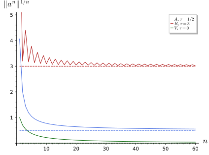
figures/fa2-spectral-radius.sage.
Definition 41 (Spectrum in a Banach algebra) Let \mathcal{A} be a unital Banach algebra and a \in \mathcal{A}. The resolvent set \rho(a) is the set of \lambda \in \mathbb{C} for which \lambda - a is invertible, the spectrum is \sigma(a) = \mathbb{C} \setminus \rho(a), the resolvent is R_\lambda(a) = (\lambda - a)^{-1}, holomorphic on \rho(a), and the spectral radius is r(a) = \max\{|\lambda| : \lambda \in \sigma(a)\} Arcozzi (2025, secs. 6.1.2, 6.1.5); Landsman (1998, Def. 2.2.2). The spectrum is a non-empty compact subset of the disc |\lambda| \leq \|a\| Arcozzi (2025, Thms. 6.3 and 6.4); Landsman (1998, Thm. 2.2.3). For \mathcal{A} = \mathcal{B}(H) it is the spectrum of Definition 24.
Veriphy. Pending.
Lean. Pending.
Sage. Pending.
In C(K) the spectrum of a function is its set of values. The first example derives this from the invertibility criterion of Example 209.
Example 214 (Functions) \lambda - f is invertible in C(K) iff f(x) \neq \lambda for all x, so \sigma(f) = f(K), a compact set, and r(f) = \|f\|_\infty. For f(\theta) = e^{i\theta} on the circle, \sigma(f) is the unit circle; for f(x) = x^2 on [-1, 1] it is [0, 1].
Veriphy. Pending.
Lean. Pending.
Sage. Pending.
For a multiplication operator on L^2 the spectrum is the essential range of the multiplier, a measure-theoretic version of the previous example. The second example states it Arcozzi (2025, sec. 6.1.3).
Example 215 (Multiplication operators) For g \in L^\infty, \sigma(M_g) is the essential range of g, the set of w with \mu\{|g - w| < \varepsilon\} > 0 for every \varepsilon > 0. For g(x) = x on L^2(0, 1) it is [0, 1], with no eigenvalues; for g = \mathbf{1}_{[0, 1/2]} it is \{0, 1\}, both eigenvalues of infinite multiplicity.
Veriphy. Pending.
Lean. Pending.
Sage. Pending.
The spectrum depends on the algebra in which inverses are sought, and it can only shrink when the algebra grows. The third example compares the coordinate z in two algebras of functions.
Example 216 (The spectrum depends on the algebra) In C(S^1) the function z = e^{i\theta} has spectrum the unit circle. In the disc algebra A(\bar D) of continuous functions on the closed disc holomorphic inside, restricted to the circle (a closed subalgebra of C(S^1)), \lambda - z with |\lambda| < 1 is not invertible, since its inverse would be holomorphic with a pole at \lambda; so \sigma_{A(\bar D)}(z) is the closed disc.
Veriphy. Pending.
Lean. Pending.
Sage. Pending.
The spectrum is never empty, because the resolvent would otherwise be an entire function vanishing at infinity. The first exercise carries out this argument Arcozzi (2025, Thm. 6.4).
Exercise 224 (Non-emptiness of the spectrum) Suppose \sigma(a) = \emptyset. For \varphi \in \mathcal{A}^* show that \lambda \mapsto \varphi((\lambda - a)^{-1}) is entire and tends to 0 as |\lambda| \to \infty, using the series (\lambda - a)^{-1} = \sum a^n\lambda^{-n - 1}. Conclude with Liouville’s theorem (Corollary 1 of Complex analysis) and Hahn-Banach (Theorem 6).
The resolvent is holomorphic on \rho(a) = \mathbb{C}, so the scalar function is entire. For |\lambda| > 2\|a\|, \|(\lambda - a)^{-1}\| \leq \sum\|a\|^n|\lambda|^{-n - 1} \leq 2/|\lambda| \to 0. By Liouville the function is 0 for every \varphi, so (\lambda - a)^{-1} = 0 by Hahn-Banach, which is impossible for an invertible element.
Veriphy. Pending.
Lean. Pending.
Sage. Pending.
Polynomials map spectra to spectra, which is the algebraic half of the functional calculus. The second exercise proves the spectral mapping for polynomials Landsman (1998, Lemma 2.2.8).
Exercise 225 (Spectral mapping for polynomials) For a polynomial p and \mu \in \mathbb{C}, factor p(z) - \mu = c\prod_j(z - z_j) and show p(a) - \mu = c\prod_j(a - z_j). Using Exercise 219, conclude that \mu \in \sigma(p(a)) iff some z_j \in \sigma(a), that is \sigma(p(a)) = p(\sigma(a)).
The factorisation in \mathcal{A} holds because the factors commute. If every a - z_j is invertible, so is the product; if the product is invertible, each factor is, by Exercise 219 applied to commuting factors. So \mu \in \sigma(p(a)) iff z_j \in \sigma(a) for some root z_j of p - \mu, iff \mu = p(z) for some z \in \sigma(a).
Veriphy. Pending.
Lean. Pending.
Sage. Pending.
A Banach algebra in which every non-zero element is invertible is just the complex numbers, by the non-emptiness of the spectrum. The third exercise proves this theorem of Gelfand and Mazur Landsman (1998, Cor. 2.2.6).
Exercise 226 (Gelfand-Mazur) Let \mathcal{A} be a unital Banach algebra in which every a \neq 0 is invertible. For a \in \mathcal{A} pick \lambda \in \sigma(a) and show a = \lambda 1. Why does this fail for real Banach algebras such as the quaternions?
\lambda - a is not invertible, hence zero, so a = \lambda1 and \mathcal{A} = \mathbb{C}1. The argument needs a point in the spectrum, which comes from Liouville’s theorem over \mathbb{C}; over \mathbb{R} the quaternion i has no real \lambda with \lambda - i non-invertible, and the quaternions are a real division algebra of dimension 4.
Veriphy. Pending.
Lean. Pending.
Sage. Pending.
The size of the spectrum is measured by the norms of powers, a formula that refines the bound r(a) \leq \|a\|. The theorem below states it; it is the principle behind the power iteration of numerical linear algebra.
Theorem 24 (Spectral radius formula) For every element a of a unital Banach algebra, r(a) = \lim_{n \to \infty}\|a^n\|^{1/n} = \inf_n\|a^n\|^{1/n} (Gelfand) Arcozzi (2025, Thm. 6.7); Landsman (1998, Prop. 2.2.7). In particular r(a) \leq \|a\|, with equality when \|a^n\| = \|a\|^n for all n, and the Neumann series \sum_n\lambda^{-n - 1}a^n of (\lambda - a)^{-1} converges exactly for |\lambda| > r(a).
Veriphy. Pending.
Lean. Pending.
Sage. Pending.
A nilpotent matrix has norm one and spectral radius zero, the extreme case of the formula. The first example computes it, together with the non-normal matrix of the figure.
Example 217 (Nilpotent and non-normal matrices) N = \begin{pmatrix} 0 & 1 \\ 0 & 0\end{pmatrix} has \|N\| = 1 and N^2 = 0, so r(N) = 0 = \lim\|N^n\|^{1/n} and \sigma(N) = \{0\}. For A = \tfrac12 + 4N, \|A^n\| \approx 8n2^{-n} for large n, so \|A^n\|^{1/n} \to \tfrac12 = r(A), slowly, as the figure shows.
Veriphy. Pending.
Lean. Pending.
Sage. Pending.
The Volterra operator is the infinite-dimensional analogue of a nilpotent matrix. The second example reads off its spectral radius from the norms of its powers.
Example 218 (The Volterra operator) \|V^n\|_{C \to C} = 1/n! (Exercise 140), and (n!)^{-1/n} \sim e/n \to 0, so r(V) = 0 and \sigma(V) = \{0\} (Example 133). V is quasinilpotent: no power vanishes, but the powers decay faster than any geometric sequence, so the Volterra equation u - \mu Vu = f is solvable for every \mu by its Neumann series.
Veriphy. Pending.
Lean. Pending.
Sage. Pending.
For the matrix of Izaac and Wang (2018, Problem P7.6) the spectral radius is shared by two eigenvalues of opposite signs, which defeats the power iteration. The third example explains this.
Example 219 (Two dominant eigenvalues) B = \begin{pmatrix} 0 & 9 & 0 \\ 1 & 0 & 0 \\ 0 & 2 & 2\end{pmatrix} has characteristic polynomial (\lambda - 2)(\lambda^2 - 9), so \sigma(B) = \{3, -3, 2\} and r(B) = 3 = \lim\|B^n\|^{1/n}. The power iteration x_{n + 1} = Bx_n/\|Bx_n\|, whose convergence rests on a single dominant eigenvalue Izaac and Wang (2018, sec. 7.2, eqs. 7.20-7.21), oscillates here between two vectors, because the components along the eigenvalues \pm3 keep their ratio up to sign.
Veriphy. Pending.
Lean. Pending.
Sage. Pending.
The shift has norm one and powers of norm one, so its spectral radius is one, and the spectrum is the whole disc. The fourth example combines the formula with Example 113.
Example 220 (The shift) \|S^n\| = 1 for all n, so r(S) = 1, and \sigma(S) = \{|\lambda| \leq 1\} (Example 113). The Neumann series \sum\lambda^{-n - 1}S^n converges for |\lambda| > 1 and diverges on the circle, where \lambda - S is not invertible.
Veriphy. Pending.
Lean. Pending.
Sage. Pending.
The infimum form of the formula follows from the spectral mapping of powers. The first exercise derives the inequality r(a) \leq \|a^n\|^{1/n} for every n.
Exercise 227 (The easy inequality) Show r(a)^n = r(a^n) \leq \|a^n\| using Exercise 225, and conclude r(a) \leq \inf_n\|a^n\|^{1/n}.
\sigma(a^n) = \{\lambda^n : \lambda \in \sigma(a)\}, so r(a^n) = r(a)^n, and r(a^n) \leq \|a^n\| by Definition 41. Taking n-th roots gives r(a) \leq \|a^n\|^{1/n} for every n.
Veriphy. Pending.
Lean. Pending.
Sage. Pending.
The powers of the non-normal matrix of the figure have a closed form, so the convergence of \|A^n\|^{1/n} can be studied exactly. The second exercise computes them with Sage, together with the matrix of Izaac and Wang (2018, Problem P7.6).
Exercise 228 (Spectral radii in Sage) With Sage, compute \|A^n\|^{1/n} for A = \begin{pmatrix} 1/2 & 4 \\ 0 & 1/2\end{pmatrix} and \|B^n\|^{1/n} for the matrix B of Example 219, for n = 1, 10, 100, and compare with the eigenvalues. Run five steps of the normalised power iteration on B from x_0 = (1, 1, 1)/\sqrt3 and observe the oscillation.
A^n = \begin{pmatrix} 2^{-n} & 8n2^{-n} \\ 0 & 2^{-n}\end{pmatrix}, so \|A^n\|^{1/n} \approx \tfrac12(8n)^{1/n} \to \tfrac12, still about 0.53 at n = 100. For B the roots approach 3 quickly. The iterates of the power method alternate between two directions, as the eigenvalues 3 and -3 have equal modulus Izaac and Wang (2018, Problem P7.6):
A = matrix(QQ, [[1/2, 4], [0, 1/2]])
B = matrix(QQ, [[0, 9, 0], [1, 0, 0], [0, 2, 2]])
print("eigenvalues of A:", A.eigenvalues(), " of B:", B.eigenvalues(), " char poly of B:", B.charpoly().factor())
for n in [1, 10, 100]:
print("n = %3d ||A^n||^(1/n) = %.6f ||B^n||^(1/n) = %.6f" % (n, (A ^ n).change_ring(RDF).norm(2) ^ (1 / n), (B ^ n).change_ring(RDF).norm(2) ^ (1 / n)))
x = vector(RDF, [1, 1, 1]) / sqrt(3.0)
Bf = B.change_ring(RDF)
for k in range(1, 6):
y = Bf * x
lam = x.dot_product(y)
x = y / y.norm()
print("step %d: x = (%.4f, %.4f, %.4f), Rayleigh quotient %.4f" % (k, x[0], x[1], x[2], lam))Output:
eigenvalues of A: [1/2, 1/2] of B: [3, 2, -3] char poly of B: (x - 3) * (x - 2) * (x + 3)
n = 1 ||A^n||^(1/n) = 4.061553 ||B^n||^(1/n) = 9.230225
n = 10 ||A^n||^(1/n) = 0.774972 ||B^n||^(1/n) = 3.087110
n = 100 ||A^n||^(1/n) = 0.534565 ||B^n||^(1/n) = 3.008830
step 1: x = (0.9091, 0.1010, 0.4041), Rayleigh quotient 4.6667
step 2: x = (0.5560, 0.5560, 0.6178), Rayleigh quotient 1.3265
step 3: x = (0.9008, 0.1001, 0.4226), Rayleigh quotient 4.5420
step 4: x = (0.5466, 0.5466, 0.6344), Rayleigh quotient 1.3433
step 5: x = (0.8970, 0.0997, 0.4307), Rayleigh quotient 4.4863Veriphy. Pending.
Lean. Pending.
Sage. Pending.
The Rayleigh quotient of the power iteration converges at a rate set by the ratio of the two largest eigenvalues. The third exercise computes it for a diagonal matrix Izaac and Wang (2018, eqs. 7.19-7.21).
Exercise 229 (The rate of the power iteration) For A = \operatorname{diag}(\lambda_1, \lambda_2) with \lambda_1 > |\lambda_2| and x_0 = (a, b), a \neq 0, compute the Rayleigh quotient \lambda^{(n)} = \tfrac{\langle A^nx_0, A^{n + 1}x_0\rangle}{\|A^nx_0\|^2} and show \lambda^{(n)} - \lambda_1 = O((\lambda_2/\lambda_1)^{2n}).
A^nx_0 = (a\lambda_1^n, b\lambda_2^n), so \lambda^{(n)} = \tfrac{a^2\lambda_1^{2n + 1} + b^2\lambda_2^{2n + 1}}{a^2\lambda_1^{2n} + b^2\lambda_2^{2n}} = \lambda_1\tfrac{a^2 + b^2(\lambda_2/\lambda_1)^{2n + 1}}{a^2 + b^2(\lambda_2/\lambda_1)^{2n}}, as in Izaac and Wang (2018, eq. 7.21). Hence \lambda^{(n)} - \lambda_1 = \lambda_1\tfrac{b^2}{a^2}(\lambda_2/\lambda_1)^{2n} (\lambda_2/\lambda_1 - 1) + \dots, of order (\lambda_2/\lambda_1)^{2n}.
Sage runs the iteration for \lambda_1 = 2, \lambda_2 = -1.5, a = b = 1, where the predicted ratio is \lambda_1\tfrac{b^2}{a^2}(\lambda_2/\lambda_1 - 1) = -3.5:
l1, l2, a, b, n = 2, -1.5, 1.0, 1.0, None
A = diagonal_matrix(RDF, [l1, l2]); x0 = vector(RDF, [a, b])
for n in (1, 5, 10, 20, 30):
xn = A^n * x0
lam = (xn * (A * xn)) / (xn * xn)
print("n = %2d: lambda^(n) - l1 = %+.3e, (l2/l1)^(2n) = %.3e, ratio %.4f" % (n, lam - l1, (l2 / l1)^(2 * n), (lam - l1) / (l2 / l1)^(2 * n)))
print("predicted ratio l1 (b/a)^2 (l2/l1 - 1) =", l1 * (b / a)^2 * (l2 / l1 - 1))Output:
n = 1: lambda^(n) - l1 = -1.260e+00, (l2/l1)^(2n) = 5.625e-01, ratio -2.2400
n = 5: lambda^(n) - l1 = -1.866e-01, (l2/l1)^(2n) = 5.631e-02, ratio -3.3134
n = 10: lambda^(n) - l1 = -1.106e-02, (l2/l1)^(2n) = 3.171e-03, ratio -3.4889
n = 20: lambda^(n) - l1 = -3.520e-05, (l2/l1)^(2n) = 1.006e-05, ratio -3.5000
n = 30: lambda^(n) - l1 = -1.116e-07, (l2/l1)^(2n) = 3.189e-08, ratio -3.5000
predicted ratio l1 (b/a)^2 (l2/l1 - 1) = -3.50000000000000Veriphy. Pending.
Lean. Pending.
Sage. Pending.
C*-algebras and the functional calculus
On a Hilbert space the adjoint gives the algebra of bounded operators one more operation, linked to the norm by \|A^*A\| = \|A\|^2. The figure shows the consequence for a self-adjoint matrix: the norm of a function of the matrix is the largest value of the function on the spectrum, and the definition below names the algebras with this property.
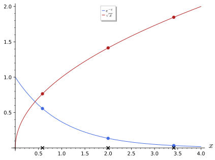
figures/fa2-functional-calculus.sage.
Definition 42 (C*-algebra) A C*-algebra is a Banach algebra \mathcal{A} with an involution a \mapsto a^* (antilinear, (ab)^* = b^*a^*, a^{**} = a) satisfying the C*-identity \|a^*a\| = \|a\|^2 Landsman (1998, Defs. 2.1.9 and 2.1.10). Then \|a^*\| = \|a\|. An element is self-adjoint if a^* = a, normal if a^*a = aa^*, unitary if a^*a = aa^* = 1, and positive if a = b^*b for some b. A state is a linear functional \omega with \omega(a^*a) \geq 0 and \omega(1) = 1 Landsman (1998, Def. 2.8.1). Every norm-closed *-subalgebra of \mathcal{B}(H) is a C*-algebra, and by the Gelfand-Naimark theorem every C*-algebra is of this form.
Veriphy. Pending.
Lean. Pending.
Sage. Pending.
The bounded operators on a Hilbert space satisfy the C*-identity by Cauchy-Schwarz, which is the motivating computation. The first example gives it Landsman (1998, eq. 2.14).
Example 221 (Bounded operators on a Hilbert space) For A \in \mathcal{B}(H) and \|\psi\| = 1, \|A\psi\|^2 = \langle\psi, A^*A\psi\rangle \leq \|A^*A\|, so \|A\|^2 \leq \|A^*A\| \leq \|A^*\|\,\|A\|. This gives \|A\| \leq \|A^*\|, by symmetry equality, and then \|A^*A\| = \|A\|^2. The matrices M_n(\mathbb{C}) with the operator norm and the compact operators \mathcal{K}(H) (without unit) are C*-algebras.
Veriphy. Pending.
Lean. Pending.
Sage. Pending.
Continuous functions with complex conjugation are the commutative C*-algebras, and by the Gelfand-Naimark theorem the only ones. The second example checks the identity and describes the states.
Example 222 (Continuous functions) On C(K) with f^* = \bar f, \|\bar ff\|_\infty = \||f|^2\|_\infty = \|f\|_\infty^2. Every commutative unital C*-algebra is isomorphic to some C(K) Landsman (1998, Thm. 2.4.1), and the states of C(K) are the probability measures on K Landsman (1998, Thm. 2.8.2): classical observables and classical statistical states.
Veriphy. Pending.
Lean. Pending.
Sage. Pending.
The Wiener algebra has a natural involution but violates the C*-identity. The third example finds an element that shows it.
Example 223 (A Banach *-algebra that is not C*) On \ell^1(\mathbb{Z}) let (a^*)_n = \overline{a_{-n}}. For a = \delta^{(0)} + \delta^{(1)} - \delta^{(2)}, \|a\|_1^2 = 9, while a^* * a has entries 3 at 0, 0 at \pm1 and -1 at \pm2, so \|a^*a\|_1 = 5 < 9. The C*-norm on this algebra is instead \|\hat a\|_\infty, the norm of C(S^1).
Veriphy. Pending.
Lean. Pending.
Sage. Pending.
In quantum mechanics the observables of a system are the self-adjoint elements of a C*-algebra and the states give expectation values. The fourth example identifies the states of the qubit.
Example 224 (The states of a qubit) On M_2(\mathbb{C}) every state is \omega(a) = \operatorname{tr}(\rho a) with a density matrix \rho = \tfrac12(1 + \mathbf r\cdot \boldsymbol\sigma), |\mathbf r| \leq 1 (the Bloch ball). The vector states \omega(a) = \langle\psi, a\psi\rangle are the pure states |\mathbf r| = 1, and the expectation of the spin observable \mathbf n\cdot\boldsymbol\sigma is \mathbf r\cdot\mathbf n.
Veriphy. Pending.
Lean. Pending.
Sage. Pending.
The C*-identity forces the adjoint to be isometric, which the first exercise proves without reference to a Hilbert space Landsman (1998, eq. 2.17).
Exercise 230 (The involution is isometric) From \|a\|^2 = \|a^*a\| \leq \|a^*\|\,\|a\| deduce \|a\| \leq \|a^*\|, and conclude \|a^*\| = \|a\|. Show also that \|1\| = 1 follows from the C*-identity in a unital C*-algebra.
Dividing by \|a\| (if a \neq 0) gives \|a\| \leq \|a^*\|; applied to a^* it gives \|a^*\| \leq \|a\|. For the unit, 1^* = 1^*1 is self-adjoint, so 1^* = 1, and \|1\| = \|1^*1\| = \|1\|^2 gives \|1\| = 1.
Veriphy. Pending.
Lean. Pending.
Sage. Pending.
The Wiener algebra example can be checked by convolving the sequences. The second exercise does this and compares with the supremum of the Fourier series.
Exercise 231 (Norms in the Wiener algebra) For a = \delta^{(0)} + \delta^{(1)} - \delta^{(2)} compute a^* * a, its \ell^1 norm, and \hat a(\theta) = 1 + e^{i\theta} - e^{2i\theta}. Show \max_\theta|\hat a(\theta)|^2 = \|\widehat{a^*a}\|_\infty \leq \|a^*a\|_1.
(a^*a)_n = \sum_m\overline{a_{m - n}}a_m is the autocorrelation: lag 0 gives 1 + 1 + 1 = 3, lag \pm1 gives 1\cdot1 + 1\cdot(-1) = 0, lag \pm2 gives -1; so \|a^*a\|_1 = 5. \widehat{a^*a} = |\hat a|^2 = 3 - 2\cos2\theta, with maximum 5 at \theta = \tfrac\pi2, equal here to \|a^*a\|_1; \|\hat a\|_\infty = \sqrt5 < 3 = \|a\|_1.
Sage computes the autocorrelation and the maximum of |\hat a|^2:
a = {0: 1, 1: 1, 2: -1}
ac = {}
for m, am in a.items():
for mm, amm in a.items():
ac[mm - m] = ac.get(mm - m, 0) + am * amm # (a* a)_n = sum_m conj(a_{m-n}) a_m
print("a* a =", dict(sorted(ac.items())), "; l^1 norm:", sum(abs(v) for v in ac.values()))
th = var('th')
ahat = sum(v * exp(I * k * th) for k, v in a.items())
mod2 = (ahat * ahat.conjugate()).simplify_full().simplify_trig()
print("|a^(theta)|^2 =", mod2.reduce_trig(), "; max over theta:", max(mod2.subs(th=t).n() for t in [k * pi / 200 for k in range(401)]))
print("|a^|_inf = sqrt(5) = %.5f < |a|_1 = 3" % sqrt(5).n())Output:
a* a = {-2: -1, -1: 0, 0: 3, 1: 0, 2: -1} ; l^1 norm: 5
|a^(theta)|^2 = -2*cos(2*th) + 3 ; max over theta: 5.00000000000000
|a^|_inf = sqrt(5) = 2.23607 < |a|_1 = 3Veriphy. Pending.
Lean. Pending.
Sage. Pending.
States are automatically bounded with norm one, which the third exercise proves for vector states and density matrices. It is the quantum version of a probability measure having total mass one.
Exercise 232 (Vector states and density matrices) For a unit vector \psi show that \omega_\psi(a) = \langle\psi, a\psi\rangle is a state on \mathcal{B}(H) with |\omega_\psi(a)| \leq \|a\|. For \rho = \tfrac12(1 + \mathbf r\cdot\boldsymbol\sigma) show that \rho \geq 0 iff |\mathbf r| \leq 1, and compute \omega(\sigma_3).
\omega_\psi(a^*a) = \|a\psi\|^2 \geq 0, \omega_\psi(1) = 1, and |\omega_\psi(a)| \leq \|a\| by Cauchy-Schwarz. The eigenvalues of \mathbf r\cdot\boldsymbol\sigma are \pm|\mathbf r|, so those of \rho are \tfrac12(1 \pm |\mathbf r|), non-negative iff |\mathbf r| \leq 1. \operatorname{tr}(\rho\sigma_3) = \tfrac12\operatorname{tr}(\sigma_3 + r_3\sigma_3^2) = r_3.
Veriphy. Pending.
Lean. Pending.
Sage. Pending.
For a self-adjoint element, every continuous function on the spectrum defines an element of the algebra, with the norm and the spectrum one expects. The theorem below states this continuous functional calculus, which extends Definition 26 from matrices to any C*-algebra.
Theorem 25 (Continuous functional calculus) Let a be a self-adjoint (more generally normal) element of a unital C*-algebra. Then \sigma(a) \subset \mathbb{R} (for normal a, \sigma(a) \subset \mathbb{C}), and there is a unique isometric *-homomorphism f \mapsto f(a) from C(\sigma(a)) into \mathcal{A} with p(a) the obvious element for polynomials p. It satisfies \sigma(f(a)) = f(\sigma(a)) and \|f(a)\| = \sup_{\sigma(a)}|f| Landsman (1998, Thm. 2.5.1, Cor. 2.5.2). In particular \|a\| = r(a) for normal a, \|b\|^2 = r(b^*b) for every b, so the norm of a C*-algebra is determined by its algebraic structure Landsman (1998, Cor. 2.5.3); positive elements have unique positive square roots, and e^{ita} is unitary.
Veriphy. Pending.
Lean. Pending.
Sage. Pending.
For a Hermitian matrix the calculus is the spectral decomposition, and the theorem gives the norm of f(A) as in the figure. The first example computes it for the matrix of the figure.
Example 225 (A tridiagonal matrix) A = \begin{pmatrix} 2 & 1 & 0 \\ 1 & 2 & 1 \\ 0 & 1 & 2\end{pmatrix} has eigenvalues 2 - \sqrt2, 2, 2 + \sqrt2. So \|A\| = r(A) = 2 + \sqrt2, \|e^{-A}\| = e^{-(2 - \sqrt2)}, \|\sqrt A\| = \sqrt{2 + \sqrt2}, and \sigma(A^{-1}) = \{(2 \pm \sqrt2)^{-1}, \tfrac12\} with \|A^{-1}\| = (2 - \sqrt2)^{-1} = 1 + \tfrac1{\sqrt2}.
Veriphy. Pending.
Lean. Pending.
Sage. Pending.
For a multiplication operator the calculus is composition. The second example applies it to the position operator on a bounded interval.
Example 226 (Functions of a multiplication operator) For real g \in L^\infty, M_g is self-adjoint with \sigma(M_g) the essential range of g, and f(M_g) = M_{f\circ g}: the map f \mapsto M_{f\circ g} is a *-homomorphism that is the identity on polynomials, so by uniqueness it is the calculus. For x on L^2(0, 1), e^{itx} multiplies by e^{itx}, a unitary of norm 1 = \sup_{[0, 1]}|e^{itx}|.
Veriphy. Pending.
Lean. Pending.
Sage. Pending.
Non-normal elements fall outside the theorem: the norm is not the spectral radius, and a continuous function of the element need not make sense. The third example uses the nilpotent matrix.
Example 227 (A non-normal matrix) N = \begin{pmatrix} 0 & 1 \\ 0 & 0\end{pmatrix} has \sigma(N) = \{0\} but \|N\| = 1 \neq r(N). If an isometric calculus existed, N = \mathrm{id}(N) would have norm \sup_{\{0\}}|z| = 0. The C*-identity is fine (\|N^*N\| = 1 = \|N\|^2); what fails is normality, NN^* \neq N^*N, and with it the commutativity of the algebra generated by N and N^*.
Veriphy. Pending.
Lean. Pending.
Sage. Pending.
For a self-adjoint element the norm equals the spectral radius, by the C*-identity and Gelfand’s formula. The first exercise proves this key step of the theorem Landsman (1998, eq. 2.78).
Exercise 233 (Norm equals spectral radius) For a = a^* show \|a^2\| = \|a^*a\| = \|a\|^2, then \|a^{2^k}\| = \|a\|^{2^k}, and conclude r(a) = \|a\| with Theorem 24. Deduce \|b\| = r(b^*b)^{1/2} for every b.
a^2 = a^*a for self-adjoint a, so \|a^2\| = \|a\|^2, and a^2 is self-adjoint, so induction gives \|a^{2^k}\| = \|a\|^{2^k}. Along n = 2^k, \|a^n\|^{1/n} = \|a\|, so the limit r(a) equals \|a\|. For general b, b^*b is self-adjoint and \|b\|^2 = \|b^*b\| = r(b^*b).
Veriphy. Pending.
Lean. Pending.
Sage. Pending.
The Hermitian matrix of Izaac and Wang (2018, Problem P7.1) has a norm equal to its largest eigenvalue in modulus, which the second exercise computes with Sage. It also applies the calculus to compute the exponential of the matrix.
Exercise 234 (A Hermitian matrix in Sage) For A = \begin{pmatrix} 4 & -i & 2 \\ i & 2 & 2 + 7i \\ 2 & 2 - 7i & -2\end{pmatrix} Izaac and Wang (2018, Problem P7.1), check with Sage that A is Hermitian, compute its eigenvalues, \|A\| and r(A), and \|e^{-iA}\|. Which eigenvalue would the power iteration find, and which the inverse power iteration?
The eigenvalues are real and \|A\| = r(A) = \max|\lambda_j|; e^{-iA} is unitary, of norm 1. The power iteration finds the eigenvalue of largest modulus, the inverse iteration the one of smallest modulus Izaac and Wang (2018, sec. 7.2.1):
A = matrix(CDF, [[4, -I, 2], [I, 2, 2 + 7 * I], [2, 2 - 7 * I, -2]])
print("Hermitian:", (A - A.conjugate_transpose()).norm() < 1e-12)
ev = sorted([e.real() for e in A.eigenvalues()])
print("eigenvalues:", ["%.6f" % e for e in ev])
print("||A|| = %.6f r(A) = %.6f" % (A.norm(2), max(abs(e) for e in ev)))
D, P = A.eigenmatrix_right()
U = P * diagonal_matrix(CDF, [exp(-I * d) for d in D.diagonal()]) * P.inverse()
print("||e^{-iA}|| = %.6f unitary: %s" % (U.norm(2), (U * U.conjugate_transpose() - identity_matrix(CDF, 3)).norm() < 1e-10))
print("power iteration finds %.6f, inverse power iteration finds %.6f" % (max(ev, key=abs), min(ev, key=abs)))Output:
Hermitian: True
eigenvalues: ['-7.641480', '3.189603', '8.451877']
||A|| = 8.451877 r(A) = 8.451877
||e^{-iA}|| = 1.000000 unitary: True
power iteration finds 8.451877, inverse power iteration finds 3.189603Veriphy. Pending.
Lean. Pending.
Sage. Pending.
Positive elements have square roots, which the calculus constructs; the third exercise computes one and the absolute value of a non-Hermitian matrix. The absolute value |b| = (b^*b)^{1/2} is the positive part of the polar decomposition.
Exercise 235 (Square roots and absolute values) Compute \sqrt P for P = \begin{pmatrix} 5 & 4 \\ 4 & 5\end{pmatrix} by the calculus, and |N| = (N^*N)^{1/2} for the nilpotent N of Example 227. Check \|\,|N|\,\| = \|N\|.
P has eigenvalues 9 and 1 with eigenvectors (1, 1)/\sqrt2 and (1, -1)/\sqrt2, so \sqrt P = 3\cdot\tfrac12\begin{pmatrix} 1 & 1 \\ 1 & 1\end{pmatrix} + 1\cdot\tfrac12\begin{pmatrix} 1 & -1 \\ -1 & 1\end{pmatrix} = \begin{pmatrix} 2 & 1 \\ 1 & 2\end{pmatrix}, whose square is P. N^*N = \operatorname{diag}(0, 1) is a projection, so |N| = \operatorname{diag}(0, 1), of norm 1 = \|N\|, as \|\,|b|\,\|^2 = \|b^*b\| = \|b\|^2 in general.
Sage computes the square root by diagonalisation and the absolute value of N:
P = matrix(QQ, [[5, 4], [4, 5]])
D, Q = P.change_ring(QQbar).eigenmatrix_right()
S = (Q * D.apply_map(sqrt) * Q.inverse()).change_ring(QQ)
print("eigenvalues:", D.diagonal(), "; sqrt(P) =", S.list(), "; squared:", (S^2).list())
N = matrix(QQ, [[0, 1], [0, 0]])
NN = N.transpose() * N
print("N^* N =", NN.list(), "is a projection:", NN^2 == NN, "; so |N| = N^*N, norm", NN.change_ring(RDF).norm(2), "= |N| =", N.change_ring(RDF).norm(2))Output:
eigenvalues: [9, 1] ; sqrt(P) = [2, 1, 1, 2] ; squared: [5, 4, 4, 5]
N^* N = [0, 0, 0, 1] is a projection: True ; so |N| = N^*N, norm 1.0 = |N| = 1.0Veriphy. Pending.
Lean. Pending.
Sage. Pending.
Exercises
These exercises combine Banach algebras, the spectrum and the functional calculus with the operators of the earlier parts. The last one treats the observables of a spin as a C*-algebra.
The spectrum of the shift can be found with the tools of this part alone. The first integrative exercise combines the spectral radius formula with the eigenvectors of the adjoint.
Exercise 236 (The spectrum of the shift, again) Use Theorem 24 to show \sigma(S) \subset \{|\lambda| \leq 1\}, the eigenvectors (1, \bar\lambda, \bar\lambda^2, \dots) of S^* to show that \lambda - S is not onto for |\lambda| < 1, and closedness of the spectrum to conclude \sigma(S) = \{|\lambda| \leq 1\}. Is S normal?
r(S) = \lim\|S^n\|^{1/n} = 1. For |\lambda| < 1, v = (1, \bar\lambda, \dots) \in \ell^2 satisfies S^*v = \bar\lambda v, so v \perp \operatorname{ran}(\lambda - S) and \lambda - S is not onto. The open disc lies in \sigma(S), and so does its closure. S is not normal (S^*S = 1 \neq SS^*), yet \|S\| = r(S) = 1: normality is sufficient, not necessary, for \|a\| = r(a).
Veriphy. Pending.
Lean. Pending.
Sage. Pending.
The resolvent of a matrix is the Laplace transform of its exponential, and both are given by the functional calculus. The second integrative exercise proves the identity for |\lambda| > \|A\| and computes both sides for a Pauli matrix.
Exercise 237 (Resolvent and exponential) For a matrix A and real \lambda > \|A\|, show (\lambda - A)^{-1} = \int_0^\infty e^{-\lambda t}e^{tA}dt by expanding e^{tA} and integrating term by term against the Neumann series. Compute both sides for A = \sigma_3.
\int_0^\infty e^{-\lambda t}\tfrac{t^n}{n!}dt = \lambda^{-n - 1}, so the integral is \sum_nA^n\lambda^{-n - 1} = (\lambda - A)^{-1} (Theorem 24); the interchange is justified by \|e^{tA}\| \leq e^{t\|A\|}. For \sigma_3, e^{t\sigma_3} = \operatorname{diag}(e^t, e^{-t}), and the integral is \operatorname{diag}(\tfrac1{\lambda - 1}, \tfrac1{\lambda + 1}) = (\lambda - \sigma_3)^{-1}.
Sage computes the Laplace transform of e^{tA} for \sigma_3 and for a non-diagonal matrix:
t, lam = var('t lam'); assume(lam > 3)
for A in (matrix(QQ, [[1, 0], [0, -1]]), matrix(QQ, [[0, 1], [-2, 1]])):
E = (t * A).exp()
L = E.apply_map(lambda z: integrate((exp(-lam * t) * z).simplify_full(), t, 0, oo))
R = (lam - A).inverse()
print("A =", A.list(), ": Laplace transform equals the resolvent:", bool((L - R).simplify_full() == 0), "; resolvent", R.simplify_full().list())Output:
A = [1, 0, 0, -1] : Laplace transform equals the resolvent: True ; resolvent [1/(lam - 1), 0, 0, 1/(lam + 1)]
A = [0, 1, -2, 1] : Laplace transform equals the resolvent: True ; resolvent [(lam - 1)/(lam^2 - lam + 2), 1/(lam^2 - lam + 2), -2/(lam^2 - lam + 2), lam/(lam^2 - lam + 2)]Veriphy. Pending.
Lean. Pending.
Sage. Pending.
The Pauli matrices generate M_2(\mathbb{C}) as a C*-algebra, and the functional calculus gives the rotation operators. The third integrative exercise computes e^{-i\theta\mathbf n\cdot\boldsymbol\sigma/2} and the evolution of a state.
Exercise 238 (Rotating a qubit) For a unit vector \mathbf n, use \sigma(\mathbf n\cdot\boldsymbol\sigma) = \{\pm1\} and the calculus to show e^{-i\theta\mathbf n\cdot\boldsymbol\sigma/2} = \cos\tfrac\theta2 - i\sin\tfrac\theta2\,\mathbf n\cdot\boldsymbol\sigma. For \mathbf n = e_3 and the state \rho = \tfrac12(1 + \sigma_1), compute U\rho U^* and its Bloch vector.
With the spectral projections P_\pm = \tfrac12(1 \pm \mathbf n\cdot\boldsymbol\sigma), f(\mathbf n\cdot\boldsymbol\sigma) = f(1)P_+ + f(-1)P_-, and f(x) = e^{-i\theta x/2} gives the formula. For \mathbf n = e_3, U = \operatorname{diag}(e^{-i\theta/2}, e^{i\theta/2}) and U\sigma_1U^* = \cos\theta\,\sigma_1 + \sin\theta\,\sigma_2, so the Bloch vector (1, 0, 0) rotates to (\cos\theta, \sin\theta, 0) about the 3-axis.
Sage checks the formula for a non-axial \mathbf n and computes the rotated Bloch vector:
th = var('th'); assume(th, 'real')
s1 = matrix(SR, [[0, 1], [1, 0]]); s2 = matrix(SR, [[0, -I], [I, 0]]); s3 = matrix(SR, [[1, 0], [0, -1]])
nv = vector(SR, [1, 2, 2]) / 3
ns = nv[0] * s1 + nv[1] * s2 + nv[2] * s3
U = (-I * th / 2 * ns).exp().simplify_full()
print("exp(-i th n.sigma/2) = cos(th/2) - i sin(th/2) n.sigma for n = (1,2,2)/3:",
all(max(abs(z) for z in (U - (cos(th / 2) - I * sin(th / 2) * ns)).subs(th=v).change_ring(CDF).list()) < 1e-12 for v in (0.3, 1.7, 4.0)))
U3 = (-I * th / 2 * s3).exp()
rho = (1 + s1) / 2
r2 = (U3 * rho * U3.conjugate_transpose()).simplify_full()
bloch = [((r2 * s).trace()).simplify_full().simplify_trig() for s in (s1, s2, s3)]
print("Bloch vector of U rho U^*:", [b.rectform().simplify_full().simplify_trig() for b in bloch])Output:
exp(-i th n.sigma/2) = cos(th/2) - i sin(th/2) n.sigma for n = (1,2,2)/3: True
Bloch vector of U rho U^*: [cos(th), sin(th), 0]Veriphy. Pending.
Lean. Pending.
Sage. Pending.
Exercises
Three exercises that combine the sections of this chapter: the uncertainty inequality from the inner product and the commutator, the discrete Fourier transform as a unitary that diagonalises the cyclic shift and the discrete Laplacian, and the circle treated with every tool of the chapter, from orthonormal bases to zeta regularisation.
The uncertainty inequality is Cauchy-Schwarz applied to two self-adjoint operators whose commutator is known, and it is the quantitative form of the statement that non-commuting observables cannot both be sharp. The first exercise proves it in general and specialises to position and momentum.
Exercise 239 (The uncertainty inequality) For self-adjoint operators A, B and a unit vector \psi in their domains with \langle\psi, A\psi\rangle = \langle\psi, B\psi\rangle = 0, show that \|A\psi\|\,\|B\psi\| \geq |\langle A\psi, B\psi\rangle| \geq |\operatorname{Im}\langle A\psi, B\psi\rangle| = \tfrac12|\langle\psi, [A, B]\psi\rangle|. Deduce \Delta A\, \Delta B \geq \tfrac12|\langle[A, B]\rangle| in general (replace A by A - \langle A\rangle), hence \Delta x\, \Delta p \geq \tfrac12 from [x, p] = i, and show that equality holds exactly when B\psi = i\lambda A\psi for real \lambda, which for x, p singles out the Gaussians.
The first inequality is Cauchy-Schwarz (Definition 12). Since A, B are self-adjoint, \langle B\psi, A\psi \rangle = \overline{\langle A\psi, B\psi\rangle} and \langle A\psi, B\psi\rangle - \langle B\psi, A\psi\rangle = \langle\psi, (AB - BA)\psi\rangle, so \operatorname{Im}\langle A\psi, B\psi\rangle = \tfrac{1}{2i}\langle\psi, [A, B]\psi\rangle and |\operatorname{Im}| \leq |\cdot|. With (\Delta A)^2 = \|(A - \langle A\rangle)\psi\|^2 and [A - \langle A\rangle, B - \langle B\rangle] = [A, B] the general form follows, and [x, p] = i gives \Delta x \Delta p \geq \tfrac12 (Definition 30). Equality in Cauchy-Schwarz requires B\psi = cA\psi, and equality |\operatorname{Im}z| = |z| requires c purely imaginary, c = i\lambda. For A = x, B = p: -i\psi' = i\lambda x\psi, that is, \psi' = -\lambda x\psi, whose normalisable solutions are the Gaussians \psi \propto e^{-\lambda x^2/2} with \lambda > 0, as in Example 154.
On N points the shift, the Fourier transform and the Laplacian are matrices, and the whole chapter can be played out in finite dimensions: the Fourier matrix is unitary and diagonalises the shift, the discrete Laplacian is Hermitian with eigenvalues that approach n^2, and its heat trace approaches the circle’s. The second exercise asks Sage to verify each statement.
Exercise 240 (The discrete circle) Let S be the N \times N cyclic shift (Sa)_j = a_{j - 1 \bmod N}, F_{jk} = e^{2\pi ijk/N}/\sqrt N and L = 2 - S - S^\dagger. With Sage for N = 8: show that S and F are unitary, that F^\dagger SF is diagonal with the N-th roots of unity, that L is Hermitian with eigenvalues 4\sin^2(\pi k/N), and that [L, S] = 0. Then for N = 64 and h = 2\pi/N compare the lowest eigenvalues of L/h^2 with n^2 and \operatorname{tr}e^{-tL/h^2} with \theta(t) at t = 0.5, 1, 2.
S permutes an orthonormal basis, so it is unitary; its eigenvectors are the columns of F with eigenvalues e^{-2\pi ik/N} (or their conjugates, depending on the direction of the shift), and L = 2 - S - S^\dagger has eigenvalues 2 - 2\cos(2\pi k/N) = 4\sin^2(\pi k/N) in the same basis, which commute with S (Exercise 123). For N = 64, 4\sin^2(\pi k/N)/h^2 = k^2 - \pi^2k^4/(3N^2) + \dots approaches k^2 for fixed k, and the discrete heat trace approaches \theta(t) from above, the discrete eigenvalues lying slightly below k^2:
N = 8
S = matrix(SR, N, N, lambda j, k: 1 if j == (k + 1) % N else 0)
F = matrix(SR, N, N, lambda j, k: exp(2 * pi * I * j * k / N) / sqrt(N))
print("S unitary:", S * S.transpose() == identity_matrix(N), "; F unitary:", bool((F * F.conjugate_transpose()).simplify_full() == identity_matrix(N)))
D = (F.conjugate_transpose() * S * F).simplify_full()
print("F^dagger S F diagonal:", D.is_diagonal(), "; entries:", D.diagonal())
L = 2 * identity_matrix(N) - S - S.transpose()
print("L Hermitian:", L.is_hermitian(), "; [L, S] = 0:", (L * S - S * L).is_zero())
print("eigenvalues of L = 4 sin^2(pi k/N):", sorted([RR(x) for x in L.change_ring(QQ).eigenvalues()]) == sorted([RR(4 * sin(pi * k / N) ** 2) for k in range(N)]) if False else
all(abs(a - b) < 1e-12 for a, b in zip(sorted(L.change_ring(RDF).eigenvalues()), sorted([float(4 * sin(pi * k / N) ** 2) for k in range(N)]))))
N = 64; h = 2 * pi / N
ev = sorted(float(4 * sin(pi * k / N) ** 2 / h ** 2) for k in range(N))
print("lowest eigenvalues of L/h^2 (N = 64):", [round(x, 4) for x in ev[:7]])
for t in [0.5, 1, 2]:
print("t = %s: discrete trace %.6f theta(t) %.6f" % (t, sum(exp(-t * x) for x in ev), sum(exp(-t * n ** 2) for n in range(-40, 41))))Output:
S unitary: True ; F unitary: True
F^dagger S F diagonal: True ; entries: [1, -(1/2*I - 1/2)*sqrt(2), -I, -(1/2*I + 1/2)*sqrt(2), -1, (1/2*I - 1/2)*sqrt(2), I, (1/2*I + 1/2)*sqrt(2)]
L Hermitian: True ; [L, S] = 0: True
eigenvalues of L = 4 sin^2(pi k/N): True
lowest eigenvalues of L/h^2 (N = 64): [0.0, 0.9992, 0.9992, 3.9872, 3.9872, 8.9351, 8.9351]
t = 0.500000000000000: discrete trace 2.509665 theta(t) 2.506628
t = 1: discrete trace 1.773718 theta(t) 1.772637
t = 2: discrete trace 1.271794 theta(t) 1.271342The circle has appeared in every section: the exponentials are an orthonormal basis, multiplication by e^{ix} is a unitary shift, the Laplacian has spectrum n^2, the heat trace is a theta function and the spectral zeta function is 2\zeta(2s). The last exercise assembles these into one computation ending with the Casimir energy of a periodic field.
Exercise 241 (The circle from orthonormal basis to Casimir energy) On L^2(S^1) with e_n = e^{inx}/\sqrt{2\pi}: (a) check orthonormality and Parseval for f(x) = x on (-\pi, \pi) in Sage, recovering \zeta(2); (b) verify -\Delta e_n = n^2e_n and compute the heat trace by Poisson summation at t = 0.1; (c) write \zeta_\Delta(s) = 2\zeta(2s) for the non-zero modes and compute \det{}_\zeta(-\Delta') = 4\pi^2, \sum_{n \neq 0}n^2 = 2\zeta(-2) = 0 and \sum_{n \neq 0}|n| = 2\zeta(-1) = - \tfrac16; (d) deduce that a massless field on a circle of circumference L, with \omega_n = 2\pi|n|/L, has the regularised zero-point energy E = -\pi/(6L).
- is Example 79; (b) is Example 159 and Example 194; (c) \zeta_\Delta(s) = \sum_{n \neq 0} | n|^{-2s} = 2\zeta(2s), \zeta_\Delta'(0) = 4\zeta'(0) = -2\log 2\pi, so \det{}_\zeta = (2\pi)^2, and the regularised sums follow from \zeta(-2) = 0, \zeta(-1) = -\tfrac{1}{12}; (d) E = \tfrac12\sum_{n \neq 0} \omega_n = \frac{\pi}{L}\sum_{n \neq 0}|n| = \frac{\pi}{L}\cdot 2\zeta(-1) = -\frac{\pi}{6L}, the periodic Casimir energy of Example 203, with force -\pi/(6L^2):
x = var("x", domain="real")
e = lambda n: exp(I * n * x) / sqrt(2 * pi)
print("Gram matrix of e_{-1}, e_0, e_1:", matrix(SR, 3, 3, lambda j, k: integrate(conjugate(e(j - 1)) * e(k - 1), x, -pi, pi)).list())
n = var("n", domain="integer")
print("Parseval for x: ||x||^2 / (4 pi) =", integrate(x ** 2, x, -pi, pi) / (4 * pi), "= zeta(2) =", zeta(2))
print("-e_n'' = n^2 e_n for n = -3..3:", all(bool(-diff(e(k), x, 2) == k ** 2 * e(k)) for k in range(-3, 4)))
RF = RealField(80); t = RF(1) / 10
print("heat trace at t = 0.1: %.15f Poisson: %.15f" % (sum(exp(-t * k ** 2) for k in range(-60, 61)), sqrt(RF(pi) / t) * sum(exp(-RF(pi) ** 2 * k ** 2 / t) for k in range(-5, 6))))
s = var("s")
zD = 2 * zeta(2 * s)
print("det_zeta(-Delta') = exp(-zeta_Delta'(0)) =", exp(-diff(zD, s).subs(s=0)).n(digits=15), "; 4 pi^2 =", (4 * pi ** 2).n(digits=15))
print("regularised sum n^2 = 2 zeta(-2) =", 2 * zeta(-2), "; sum |n| = 2 zeta(-1) =", 2 * zeta(-1))
L = var("L", domain="positive")
print("Casimir energy E = (pi/L) 2 zeta(-1) =", pi / L * 2 * zeta(-1))Output:
Gram matrix of e_{-1}, e_0, e_1: [1, 0, 0, 0, 1, 0, 0, 0, 1]
Parseval for x: ||x||^2 / (4 pi) = 1/6*pi^2 = zeta(2) = 1/6*pi^2
-e_n'' = n^2 e_n for n = -3..3: True
heat trace at t = 0.1: 5.604991216397929 Poisson: 5.604991216397929
det_zeta(-Delta') = exp(-zeta_Delta'(0)) = 39.4784176043574 ; 4 pi^2 = 39.4784176043574
regularised sum n^2 = 2 zeta(-2) = 0 ; sum |n| = 2 zeta(-1) = -1/6
Casimir energy E = (pi/L) 2 zeta(-1) = -1/6*pi/L